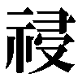

| 灼眼のシャナ 22 | |
| 高橋弥七郎 | |
| KADOKAWA / アスキー・メディアワークス (2013) | |

本書（電子版）に掲載されているコンテンツ（ソフトウェア／プログラム／データ／情報を含む）の著作権およびその他の権利は、すべて株式会社アスキー・メディアワークスおよび正当な権利を有する第三者に帰属しています。
法律の定めがある場合または権利者の明示的な承諾がある場合を除き、これらのコンテンツを複製・転載、改変・編集、翻案・翻訳、放送・出版、公衆送信（送信可能化を含む）・再配信、販売・頒布、貸与等に使用することはできません。
プロローグ
「先にある、モノは知らねど、なお進み......」
月夜に眠る天山山脈の南、低くも鋭角に切り立つ峰々の間に、細い川が流れている。
雄大な眺めに比して、あまりに心細い、すぐにでも途切れてしまいそうなそれは、しかし黒く乾いた岩肌の底に、確かな緑の園をなさしめていた。
「世は変わり、人〝徒〟も、また変わる......」
石の砕片でしかない河原には、土壌と呼べるだけの実りの源泉がなく、芝生になりきれない草も川の両岸に寄り添うのみ。身を寄せ合う低い灌木と疎らな木々も頼りなげである。
が、それらは秘かながら確かに、緑を月光に映えさせていた。
「見ゆるは何ぞ、得るは誰ぞ、思い想いの睦み合い、果てに紡ぐは如何様の──」
その薄い色合の中、歌声を紡ぐ一人の男が、川上へ向かってヒラヒラ踊り歩いている。手にある古びたリュートを爪弾くのは、目深に被った三角帽、襟を立てた燕尾服、という異装。
楽士〝笑謔の聘〟ロフォカレである。
「──」
その彼が不意に、声を途切れさせた。
踏んでいた河原の感触が、唐突に、しっかりした硬い土のものとなっている。
帽子と襟に隠した顔を、やや上げた。
「──？」
目で見ても光景の意味が分からず、呆然となる。
辿るでもなく辿っていた川が、なくなっていた。河原も灌木も疎らな木々も、左右の峰々さえも消え失せて、やけに広大な青一色の空の下、代わりの光景が、ある。
不可思議な、公園が。
揺れるブランコも、放られたボールも、持ち上がったシーソーも、蹴散らされた砂の一粒までもが、静止している。封絶発動時の状況に似ていたが、地表に火線の紋様はなく、周囲に陽炎のドームも張られていない。日常の一場面そのままで、止まっている。
不可思議というのは、しかしこれらの静止状態を指しているのでは、ない。
瞬間を切り取った光景の中に、在るべきものがないことを、指す。
即ち、あらゆる動きの源となるはずの、人間の姿である。
人間ではない異物として、そこに混じる一人の〝徒〟へと、
《へえ、題『欠落』二十二番にかかったか。即興で仕上げたものに、なあ。いや、即興にしては良い出来だが、良いだろ？ 今という時の主題にも合致してる。してる、なあ？》
自分の言葉で足を縺れさせるかのように調子っ外れな、甲高い声がかかった。
何処からともなく放られてくる声に、我に返ったロフォカレは軽く首を傾げて問う。
「どちら様、でしょうか？」
答えを待つ傍ら、
（いささかなりと広さ鋭さを自負する、我が索敵の網をして、気配を取り損ねるとは）
どうやら自分が罠の内に落ちたらしいことを、遅まきながら理解した。この情勢下で他人に構う〝徒〟がいるはずもない......となると、残るは一種類のみ。
（だとしても、理解しかねますが）
今さら自分のような小物を捕らえてどうするのか、と思ったところで、
《俺か？ 自在法『パラシオスの小路』で、分かるか、分かるよな？ 木の幹に貼っておいたの、気付かなかったろ、欠落を埋めるため足を向けさせられたの、気付かなかったろう？》
再び甲高い声が降りかかってきた。その誰かは、あえて己が名を明かさず、遠回しに相手に言わせたがっている。
他を以て己を表現する者同士、ロフォカレにはその気持ちがよく分かった。深く頷いて、素直な賛意を込めて、大きな声で返す。
「はい、絵とすら気付けぬ見事なお手前──『興趣の描き手』ミカロユス・キュイ殿!!」
《うんそう、その通り！ 知ってたか、うん！》
問いかけた相手が知っていてくれた喜悦が、声に溢れかえっていた。
実際のところ、その知名度は絵ではなく戦いの腕前によってこそ高かったのだが、ロフォカレは気にせず明るく返す。のみならず、リュートの弦に指をかける。
「いやはや！ 我が賛意、拙き調べながら是非に示──」
「そこまで」
と、そこに新たな、渋く低い男の声が。
「今は互いに、空々しい笑劇を演じている時ではない、と思うんだがね？」
「フリーダ─君の言う通り、今は品評会にも演奏会にも付き合ってられないの！」
続いて、か細くも必死な女の声が。
二つの声の主は彼の正面、ほんの数秒前まで人影などなかったベンチに堂々、足を組んで座っていた。眉目秀麗な長身の偉丈夫と、その胸に挿さる洒落た小ぶりの造花──フレイムヘイズ『骸躯の換え手』アーネスト・フリーダーと〝応化の伎芸〟ブリギッドである。
「ミカロユス、君の担当区域は遠いのだろう？ お喋りする余裕があるのなら、合流のためにこそ力を注いでくれないか」
《待て、待て。心は絵に置き、足は駆けてる。問題ない、ないだろ？ 我が筆致に琴線爪弾かんとする者と、語り合ってなんの不都合がある。ないだろ？ どうだ》
慌てて会話と繋げようとするところにもう一人、老人らしき厳しい声が割って入る。
《なれば、常の如く我輩が評して進ぜよう。まず砂の描写が甘い。動線にブレが見える》
《そんなはずはない！ ないぞ断じて！ 力学に矛盾なきよう、写真だけでなく動画も交え研究したのだ、しつこく！ それとも印象派に媚びて写実性を崩》
どちらの意思か、声が途切れて、場は静寂に満たされた。
弦に掛けていた指を保持すること数秒、
「おおよそ半世紀ぶりでしょうか、お二方とも。ご壮健そうで何より」
ロフォカレは諦めたような溜息混じりに、リュートを小脇へと挟んで挨拶する。その動きの流れるまま、帽子の鍔先を指に摘んで腰を屈め、明るく優雅にお辞儀した。
「ところで......というより、本題なのでしょうか？ 私なりに気を遣って、逃走経路を選定したつもりだったのですが、この因果路の交差、偶然では」
「ないさ、当然な」
フリーダ─は声を継ぐと、鋭く足を揃え、立ち上がった。
「急用があったので、探していたんだ」
その額から、ブリギッドがけたたましく補足する。
「なんせ貴方の索敵範囲ってば、他の〝徒〟と段違いなんだもの。地域丸ごとの包囲網をゆっくり狭めて、罠のある区域に追い込む、なんて手間暇掛けないと会えないなんて！」
「サバリッシュ総司令官のご指示で、中央アジアの索敵網が前もって空けてあったとはいえ、あのバカ爆弾に相当数、持って行かれたからな。取り逃がさずに済んでホッとしたよ」
軽く肩をすくめたフリーダ─は、安堵に苦笑を混ぜた。
ブリギッドの方は変わらず早口で、契約者をフォローする。
「レベッカちゃんには『尻込みしてる奴らに逃げる口実を作りやがって』って怒られちゃったけど、チューリヒで動けないゾフィーちゃんやヒルダちゃんには喜んで貰えそう！」
一介の〝徒〟に過ぎない自分を、聞くだけでも相当に大きな規模で以て探していたらしいことに、ロフォカレは心底からの驚きと不審を抱いた。
「そこまでして、私めをお求め頂けたとは嬉しい限り。なにか、ご所望の曲でも？」
「いや、そっちはない」
フリーダ─はつれない前置きをしてから、詰問の矛先のように軽く指を指した。
「中国の戦場から離脱した君だが、ミサキ市の現状は、ご自慢の『千里眼』で見ているのだろう？ となれば、私たちが何をさせたいかくらい、見当がつくと思うのだが」
が、問われたロフォカレは本気で分からない。
「はあ、て？」
埒が開かない、と見たブリギッドが早速、口を挟む。
「とぼけてる場合じゃないでしょ!? 私たちが知ってる〝徒〟の中で、一番手っ取り早く見つけられるアレの眷属は貴方だけ、ってこと！」
そこまで言われて、ようやく楽士は得心がいった。
「ああ、なるほど！ しかし、ふぅむ......そういうことですか」
いって、なお考え込む。彼は、とある自身の理由から考慮の外に置いていた事柄についての要請を受けていたのである。改めて思えば、確かにこれは門外漢には分からない。
（困りましたね、どうも......今さら逃がしては、くれそうにありませんし）
考え込む傍ら、自在法『千里眼』を付近の把握に用いるが、どうやら嵌り込んだ『パラシオスの小路』に阻害されているらしく、常は明瞭な、目に拠らない視界に靄がかかっている。これでは逃げるどころか、目眩ましをかける糸口すら見出せない。能力への過信から、遠く御崎市の出来事を眺めている間に眼前の罠に陥った、我が身の不明を恥じる。
（といって、『骸躯の換え手』相手に荒事など論外）
戦いを苦手とする自分が、この状況で一か八かの大暴れを仕掛けるのは、全くの無意味だった。一方で、それら危機感よりも、まさにブリギッドの言う眷属としての呆れもある。
（仮に言ったところで、分かってもらえるでしょうかね？）
胸の内の感情を、相手へのアピールとして表に出すべきかどうか、彼は迷っていた。
そんな相対する〝徒〟の内心を知ってか知らずか、フリーダ─は極めて大きな要求を、あくまで気安く軽く、酒の一杯でも所望するかのように突きつける。
「そういうわけで、導きの神の〝神託〟を一つ、頼むよ」
１ 飄風が呼ぶもの
琥珀色の風が、戦場に吹く。
（今の、坂井君とシャナちゃんが選んだ『互いに望まない形』を──）
吉田一美の想いを、源泉に。
（どうか、私の全てと引き替えに『そうではないもの』へと──変えて!!）
想いを受け、風は嵐となる。
強烈な琥珀色の流れは爆発的に膨れ上がり、一帯にある全ての物を押し退け、叩いて揺るがし、肌身を震わせ、そして──場の状況を願いのままに攫って、変える。
直下、剛槍『神鉄如意』を芯柱に、辛うじて倒壊に耐えている巨塔『真宰社』が、唐突な大圧力の発生に軋みを上げ、封絶の中空に舞う無数の〝紅世の徒〟らも翻弄される。
彼女の至近に在った『炎髪灼眼の討ち手』シャナも、
（あの宝具を使ったの、一美!?）
僅か遅れて追ってきた〝祭礼の蛇〟の代行体・坂井悠二も、
（なんてことだ！ この刻限も近くなった今になって、あいつを!!）
上空で交戦していた『万条の仕手』ヴィルヘルミナ・カルメルも、
（やはり、来た......貴女は一体、彼は一体、なにを考えているのでありますか......!?）
突き立つ『神鉄如意』の頂で耐え踏み留まる〝千変〟シュドナイを除く、
（まったく、次から次へと......好事魔多し、というやつか？）
その場で戦っていた者らは方々、なにを対処する間もなく弾き飛ばされていた。
爆心地には、吉田一美だけが変わらず佇んでいる。
彼女だけには柔らかく、髪を撫でそよいでいた風は、
《何故、だろう》
静かに深く、遠きよりの声を届ける。
《答えは、いつも変わらない》
「っ!!」
体を蝕む、血肉が蒸発するような倦怠感に、吉田は抗い目を見開いた。
自分が呼び寄せた、ためにならないものを、
引き起こされるだろう、二人の選んでいない事態を、
だからこそ、しっかりと見据えるために。
今や、近きに迫る力強い声は、
《あなたも、やはり同じだった》
彼女が胸元で握りしめるギリシャ十字のペンダント、宝具『ヒラルダ』から溢れている。語りかけているのは、誰、と今さら問うまでもない、
《命を超える、愛の至極なる境地を見出した者が、私を喚ぶ》
ペンダントを彼女へと託した〝紅世の王〟──〝彩飄〟フィレス。
《その者は必ず、想う者を認めてなお、己が存在を軛とする》
声には、かつて宝具を託したときのような、寒々しい虚ろさは微塵もない。
《その者は必ず、強く固く、揺るぎない芯を心に持っている》
風と同じく止め処ない、悲しさ熱さからなる活力が、滔々と湧き出ていた。
《それが、宝具起動の要件と重なるのは、偶然なのだろうか》
風が強まり、琥珀の色も濃くなってゆく。
《彼方より吹き、此方より発つ風を、指すモノと似た......心》
応じて声も明瞭に、鼓膜を震わせてゆく。
《遍く寄せる力を、己が則に捕らえ、確固と屹立する......姿》
聞き入る少女の両肩に、いつしか後ろから抱くように掌が置かれていた。
「だから私たちは、その宝具を──『風見』──と名付けた」
囁き告げる美麗の細面が、右の耳に近く、頬に頬を寄せて、既に在った。
「フィレス......さん」
今にも飛びそうな意識を必死に繋いで、吉田は自身の望みを遺そうと喘ぐ。
「お願、い......」
「大丈夫、聞こえていた。とても、とても、強く」
顔の向きを揃えて、フィレスは返した。
「......おね、が......」
なおも言おうとする少女を、風が緩やかに攫い上げる。
フィレスはその体を寝かせるように抱くと、
「百年ほど前にも、同じ奇跡が起きた」
言い聞かせるような冷静さで、しかし突き放すような残酷さを込めずに、続けた。
「あなたと同じように、使えば死ぬ、と脅され渡されたはずの一人のお婆さんが、これを起動させたの。そのお婆さんは......愛する男への伝言を私たちに託して、死んでしまった」
小さくも明瞭な声の外で、二人を中心とした風の流れに変化が生じている。
フィレスの両肩にある大きな、鳥とも人とも見える顔状の装飾品が、それまで双方噴出させていた風を、右から吸い込み、左から吐き出す、という形へと変えていた。
「この『ヒラルダ』は、人間に自在法を使わせるため生み出された宝具。起動条件は、使用者の〝存在の力〟ではない。そんなものは、予め宝具に込めておける。必要なのは、命を捨てることなどより遙かに困難な──〝徒〟と同じように自在法を使う──というもの」
彼女は、ただ長々と喋るため留まっているのではない。
出現時の爆発で吹き飛ばした者らの位置を風の中で正確に捉え、それらを激流で縫い止めつつ、自身が自由に行動するための風の道を構築している。
「人間の意思総体は、私たち〝徒〟にとって呼吸同然な自在法を使うには、良くも悪くも煩雑すぎて──真っ直ぐに念じる──ただそれだけのことができない。だから普通、これを託すときは、自らの存在という雑念最大の根源を払うため、命が代償、と伝えられる」
半ば瞼を閉じつつ、フィレスは風の先へと奔る体勢を整える。
また半ば瞼を閉じつつ、吉田は懸命に昏睡の誘いに抗し、尋ねる。
「じゃあ、お婆さん、は......なぜ、亡くなって......？」
「困窮した生活の末に老い衰えた彼女の体は、自在法という異質な力の滾りに耐えられなかった。私たちは、私たちが冗談のように渡した宝具で、不可能だと思っていた奇跡を......命を懸けた奇跡を起こしたお婆さんのために、望みを叶えた」
古きを思って言った〝紅世の王〟は、少女の新しきを感じて告げる。
「あなたは若く力に溢れ、この街で数多の戦いに関わることで〝存在の力〟に対する耐性も僅かながら帯びている。つまり、あなたは──死なない」
張り詰めた精神を解きほぐす最後の一言に、瞼を閉じる吉田は相手の優しさを求め、
「それを、知ってたから......私に宝具を......」
「逆だ」
しかし悪びれない身勝手さを以て、瞼を開くフィレスは答えた。
「あなたが、あの場で最も不要な存在で、なんにもならない気持ちを持っていた、だから絶対に喚べない。そう思ったからこそ、私はあなたに『ヒラルダ』を渡した」
そうして、笑いかける。
まさに風の奔放さゆえに表れる、爽快の様を示すように。
「なのに、それでもなお、あなたは自分を必要とされない場で、なんにもならない気持ちで、私を喚んだ。この、全てを定め動かす場に、全てを引っ掻き回せる私を」
笑って、抱きかかえた吉田を、あやすように揺らした。
「それ、じゃ......」
極限の緊張から解放された少女が、ゆっくりと眠りに落ちて行くのを眺めて、
「再びの奇跡に応えよう。あなたの望みを叶えよう。今の彼を彼女を崩してみせよう」
また高らかに誓って、吹き荒れる風の中に通された道へと、彼女は飛び発つ。
「そして......ああ、そうだ......私自身も」
その口から、より強い、自らへの誓いが零れ落ちた。
「ヨーハンとの望まない約束を、果たそう」
忌避する道を、風は貫いて征く。
吉田一美を囚え封じていた鎖『タルタロス』が断ち切られ、彼女が所持していた召喚の宝具『ヒラルダ』が起動し、応えて〝彩飄〟フィレスが出現した。
これら対処を許さない相次ぐ事態の急変、その証とも言える琥珀色の暴風に掌をかざす悠二の内心は、避けようもない大きな振幅の中にあった。
（余の『タルタロス』を、ああも容易く斬り裂いて宝具を起動させるとは──）
蛇の呑気な感嘆に、悠二の理性が乗る、という形で。
（──そうか、全ての自在法の干渉を受け付けない『贄殿遮那』！）
融合した一つ意識の中、記憶の浅きより浚い上げたのは、まるで少女の全てを表すかのような大太刀。全てが斬るという一事に向け凝縮された、まさに精粋であるがゆえの芸術品。
（既にシャナが力を取り戻していた、この事実から推察して然るべきだった！ 神たるがゆえの過信......いや、神への責任転嫁か？）
自己ではないモノと、自己たるモノを揺らして、舌打ちをする。
（この期に及んで、あいつを喚ばれてしまうなんて）
脳裏の内どころではない、全身から滲み出すように、おぞましい感覚が蘇っていた。
かつて坂井悠二の〝ミステス〟であった頃、彼は〝彩飄〟フィレスによって己の体内に潜んでいた異物を立て続けに呼び覚まされ、存在消失寸前にまで追い詰められたことがあった。自身が胸から這い出す銀色の鎧として織り成されてゆく恐怖、さらには丸ごと全てを別人に転換させられた喪失感は、どんな強敵との戦いよりも暗い力で、心身を締め付ける。
これらに対する猛烈な忌避感から、
（なにをされるか分かったものじゃない、警戒しなければ）
考えるまでもないことを強く念じる。
そう、あの〝紅世の王〟がなにをするかなど、分かりきっていた。
下手をすると、それを起点に計画全体に滞り──破綻はあり得ない、と悠二は自身を鼓舞する──が生じかねない。断じて、させるわけにはいかなかった。
（とは、いうものの）
周囲に気を配りつつも、悠二は眉根を寄せる。
空の一帯を覆って無秩序に、上下の感覚さえ失いかねない乱流として渦巻く琥珀色の風は、彼が備える鋭敏な諸感覚を遮って、包まれる者に情勢を容易に把握させない。
（そういえば、いつだったかシャナから聞いたな）
フィレスによって引き起こされる風の自在法は、飛行を阻害するだけではなく、彼女の気配を宿して吹き荒れることで、気配や攻撃の関知を困難にすることこそが本領という。
（たしか、名前は『インベルナ』──）
以前二度の遭遇時、いずれも存在消失の際という極限状況下、その効果を確かめるどころではないパニックに陥っていたが、今度こそは冷静に対処
「──」
しようとする瞬間に、来た。
眼前の風の薄壁を突き破って、
彼を消し去ろうとするフィレス、
ではない者が。
「──な!?」
まさに意想外、
吉田一美が、放り出されていた。
眠りへと落ちた姿が無造作に、
捕えねば落下する危うさで。
（吉田さん!!）
己が計画への必要性からか、あるいは単純な慈しみからか。
自身にも判別の付かないまま、悠二は、反射的に少女へと手を伸ばす。
その、大剣『吸血鬼』を持たない方の手首を、
「捕まえた」
吉田の背後から軽やかに、風の巻くように現れたフィレスが掴んでいた。悠二にとっては怖気しか呼ばない、陶然とした喜びの笑みが、手を引いて迫る。
「っく!!」
避け得ない戦慄の一瞬で、フィレスは掴んだ腕を支点に愛する男を宿す入れ物の後ろへと回り、後押しするように軽く、掌を当てた。そして優しい呟き、
「起きて、ヨーハン」
それだけで、彼女の用件は半分、済んだ。入れ物に、眠れる少女を渡すことすら拒んで、当てた掌の反動で一気に二人、後背へと飛び抜けてゆく。少女と誓った通り、微塵の容赦もない苛烈さ迅速さで、代行体・坂井悠二の今の形が、文字通りに──変わった。
「う、ぐ......っ」
悠二の体を形作る〝存在の力〟に新たな流れが生じ、虚無に蝕まれるような痺れを全身に広げてゆく。その中、二度と味わいたくなかった感覚に必死で抵抗する彼と、
《無駄だよ。いかに〝螺旋の風琴〟謹製の対抗策を幾重に施しても》
《おまえ、は》
もう一人との、言葉ではない刹那のやりとりが電撃のように奔る。
《そう、僕は君の中から全てを見ていたんだから。手札を明かしながらのカード勝負に分がない、ってのは世の道理だろう？》
《だから、といって......こんなところで!!》
精神力の爆発が、もう一人の言う対抗策を発動させた。
即ち衣の下、全身に入れ墨として刻まれていた、存在の強制変換を阻止する各種自在式である。それが黒い炎となって全身から吹き上がり、代行体の形態を辛うじて維持する。
その成功の余勢を駆って、背後のフィレスを追おうと振り向いた鼻先、
「やあ」
「っ!?」
まるで鏡像のように、顔と顔、正面で向き合う少年が、忽然と現れていた。
「ね？ 準備が万端なら、君の保持する莫大な〝存在の力〟で、こんな真似もできる」
使い込まれた旅装を纏い、金色の髪を靡かせ、黒い瞳を輝かせる、少年。細い体に壊れるほどの躍動感を漲らせた、命の鮮やかさを具現化したような──『永遠の恋人』ヨーハンが。
「別の体を、構成したのか!?」
驚愕しか表せない悠二に、
「そういうこと。〝存在の力〟は全ての構成要素なんだから、一人も二人も、量さえ在れば可能だよ。初めまして、だね、坂井悠二君......と〝祭礼の蛇〟さん」
ヨーハンは陽気に笑いかけ、
「挨拶ついでは不躾だけど、これ、返してもらうよ」
同じく顔の傍ら、鏡合わせに付けていた掌を、笑顔のまま、離してゆく。
と、
「う、うっ!?」
己の奥底で、要となる物が動いた感触に、悠二は背筋を凍り付かせた。得たはずの剛力を込めるが、合わせた掌を引き剥がすことも振り払うこともできず、大剣『吸血鬼』を持った方の手も、後頭から伸びる竜尾も、金縛りにあったように麻痺して動かない。
掌と掌が離れた二十センチ程の挟間に、黒と琥珀の炎が噴出して、すぐ消えた。
後には、剥き出しの歯車を集積して組み上げられたなにかだけが、残っている。
「これ、は......これが！」
「うん。こっちも君には初めまして、かな？」
鼓動とともに歯車を回し、噛み合う先のない凹凸を外へと向けた、永遠の心臓。
悠二も初めて実見するそれこそ、時の事象に干渉するという不世出の永久機関。
「宝具『零時迷子』さ」
ヨーハンが掌を下げるごとにジリジリと離れつつあるそれを、
「やら、せるか」
「ははっ──『良いではないか。元来が僕のものなのだ』──ってね」
「ぬうっ......!!」
悠二は嘲弄への反発と戦慄への抵抗を力に変え、引き止めんとする。己が計画を遂行するための担保であり、なによりトーチたる存在を維持し続け得た根源でもある。元の持ち主であろうが、絶対に渡すわけにはいかなかった。
（くそっ、シュドナイは......っ）
途中まで思って、それが無駄な求めであると理解する。
現在、倒壊の危機に瀕している巨塔『真宰社』は、『三柱臣』の一柱にして将軍たる〝千変〟シュドナイの剛槍『神鉄如意』によって支えられている。この異常事態下で、彼が守るべき儀式の中核たる『真宰社』頂の神殿から動くわけがないことは容易に察しが付いた。所詮は盟主の操り人形に過ぎない代行体、状況に余裕がなくなれば、共に遊ぶ理由もない。
（そうだよ、な）
彼だけではない。巨塔を囲む［仮装舞踏会］全軍、世界中から押し寄せる〝紅世の徒〟、数あれど危険を押して坂井悠二を助けに来る者など皆無だった。彼らが信奉するモノは、渦巻き荒れ狂う風のさらに上、楽園『無何有鏡』となる卵を抱いて輪を描く、黒い蛇なのだから。
かつて共にあった人々を敵に回し、今在るどこにも真の味方はいない、ただ一人。
（ああ、分かってる、分かりきっていた、ことじゃないか）
悠二はその冷厳な事実に、怒りも恨みも、まして寂しさも悲しさも覚えない。
（この異変を本当に気に掛けているのは、ベルペオルくらいだろう）
ただ、認識した事実を材料に、感情の制御に利用できるものを精製する。
（なら、今の有様はなんだ......考えて、動け......なんのために、戦ってきた）
限界を超えた力を燃え上がらせるための発火点としたそれは、叱咤。
（この程度のことに耐えられなくて、乗り越えられなくて......これからをどうする!!）
離れつつあった『零時迷子』が、掌の間、宙の一点で止まった。
ヨーハンの笑顔に、軽い感嘆がこもる。
「へえ、抵抗できるんだ？」
「そうだ......それこそが、この坂井悠二だ」
自己暗示をかけるように、悠二は断言していた。
（他には誰も、誰もいない、ただ一人で──）
と、新たにした誓いをぶち壊すように、降ってくる。
猛烈な速度で、紅蓮の煌きを翼として引く、少女が。
思いの外にあった、この世界での、もう一人として。
（──シャナ!?）
と口から声の出るより先に、灼眼と目が合っていた。
それだけで彼女が、彼女だけが助けに来たと分かる。
明確に敵対していながら、この状況下で、ただ一人。
その強襲するシャナの真横、風に新たな流れが、攻撃の予兆として発生したことを、
「!!」
彼女の後背に浮かぶ紅蓮の眼『審判』が感知した。反射的に、自在の黒衣『夜笠』の上にもう一枚、紅蓮の障壁『真紅』が眩く展開する。
僅か遅れて、その実体すら伴う強固な表面を、琥珀色の一撃が重く叩いた。
ダメージを負わないまでも、強烈な圧力に軌道を逸らされた彼女へと、
「させない」
やや遠く、無骨な手甲で固めたフィレスの右拳が突き出される。逆に軽く開いた左掌の上では、直径二メートルほどの球状に風が渦巻き、胎児の姿勢で眠る吉田を包んでいた。
向き合う形で空に静止したシャナは、彼女らの様を両の灼眼で真っ向、睨み付ける。
「それは、こっちの台詞」
不敵な言葉の裏で、自分を召喚した少女を人質のように扱う〝紅世の王〟のやり口に対する憤激が燃え上がっていた。元より、互いに利用し合うだけの間柄、信用などしていない（ヴィルヘルミナはそうでもないようだが）。愛する男のためなら、どんな非道も断行する女と分かってもいた。ゆえに、この怒りはフィレスの敵対についてのものではない。この戦いに巻き込まれてしまった友達を思いやってのものである。
（一美には拒みようのないことで......そう、悠二を助ける、とでも唆したに違いない）
一方で、やはり、という思いもある。
戦闘開始の直前、田中栄太から『坂井悠二が吉田一美を連れて行った』との急報を受けた時点で、既にこうなることの見当は皆して付けていた。これまでに張り巡らせた手管の周到さに鑑みれば、どのような甘言を弄してでも、あらゆる恫喝を駆使してでも、フィレスは自身を召喚させるに決まっていた。吉田の覚悟に応え、その身を縛っていた封印だろう『タルタロス』を斬った瞬間に出現したことが、誤算と言えば誤算だったが、どの道、主導権が囚われた少女の側にあったとは思えない。それこそ、フィレスが狙わせた機会かも知れないのだ......。
それら推測は、全くフィレスに対する偏見から来るもので、心情面においては的外れだったが、事象の結果としては同一のものとなっている。
ゆえにシャナとしては、眼前に立ち塞がる〝王〟の姿に、驚きも戸惑いも覚えない。これまでの協力も、今の状況を作り出すための布石だったのだから、気に病む意味も引け目を感じる必要もない。当然、大太刀『贄殿遮那』を指し向けることへの迷いもなかった。
「今さらあんなことをさせるために、私たちも、一美も利用したって言うの？」
「ええ」
フィレスは、それこそ今さら、という顔で平然と答えた。
「ここに近付けないよう、周りの風を掻き混ぜておいたのに、よく飛び込んで来られたわね。もしかして、その浮かんでる眼は、探査の自在法なのかしら？」
男を守る女として、いっぱいに喜びを溢れさせ、彼女は待つ。すぐにでも抱きつきたい気持ちを抑える恋人として、ヨーハンが『零時迷子』を取り戻す時を待っている。
シャナも、それが分かっていて、迂闊に飛び込めない。
「そう。全部、見えてる」
少年を守る少女として、すぐにでも悠二の許へ突進したい気持ちを抑え、彼女は探る。戦士として、気力充実した手練れの〝王〟を躱す道を、冷静に慎重に探している。
互いに会話が、成就までの時間稼ぎ、隙を探す手段となっていた。
その口火を切ったのは、シャナの胸に下がる、黒い宝石に金の輪を意匠したペンダント。神器〝コキュートス〟に意思を表出する〝天壌の劫火〟アラストールである。
「この状況全て、貴様の狙い通り、というわけか？」
「どうかしら。ヨーハンの望みに近づいた、とは思うけれど」
いっぱいの喜びに幾分かの感情的異物を混ぜて、フィレスは答えた。相対する紅蓮の煌き、その壮麗さに眼を細め、異物の方の力で、笑う。
「この状況が、どんな想いで引き起こされたのか、教えてあげても......まあ、お節介ね。この子の本意でもないでしょうし。それより」
言いたいことを言うと、今度は異物ではない方の力で、笑った。
「ヨーハンの邪魔は、させない」
この、自分の全てを表す無邪気な喜びに、
「する」
純粋な怒りを以て、シャナは立ち向かう。
と、フィレスが無造作に、ぽい、と吉田の入った風の球を前に放り投げた。
球は羽毛のようにゆっくりと、二人の間に漂い出てゆく。人質か賞品か、あるいは戦いの障害物とするつもりか、行為の意図は判然としない。
ただ、シャナはその行為の陰で、フィレスが戦闘態勢に入るのを......具体的には、無骨な手甲に覆われた両拳が固く握り締められていくのを、見て取っていた。
「シャナ、焦りは」
「禁物......分かってる」
アラストールの助言で、自明のことをより明確に意識し、備える。
隙を狙うだけの弛みは、会話の中で消化されてしまった。
あとは、激突の中から戦機を掴み取るしかない。
女二人は、各々の男のため、時を計る。
一方の男二人は、
「余の中にいて、全てを見ていた、と言ったな」
「言ったけど、それが？」
未だ掌の間に『零時迷子』を据えて対峙する体勢を崩していない。
時折、宝具の周りに黒と琥珀の火花を散らすほどに引き合う様は逆に、二人こそが自身の核によって宙の一点へと縫い止められているようにも見えた。
悠二は説得の誠ではなく、我意の熱によって相手に譲歩を迫る。
「なら、この坂井悠二が何をしようとしているのかも、知っているのだろう」
「まあ、二つばかりね。だから僕らの『零時迷子』を、はいどうぞ、と差し出せと？」
ヨーハンはそんな──まるで〝徒〟の如き──率直な要求を笑い飛ばした。
熱を帯びた悠二の黒い瞳が、炎を吹きそうな力を向ける。
「そうだ。そのためなら強引でも暴慢でも、やると決めた......決めて、そうしてきたんだ」
「なるほど、その辺りは理解できなくもないか。僕らも似たようなものだし」
物わかりのよい風を見せるも一転、
「でも、同意は出来ないな」
向き合う少年と同じ『零時迷子』の〝ミステス〟は、笑いの中に明快な不満を混ぜた。
「方法はともかく、結果が気に食わない」
予想外の方向から来た拒絶に、悠二の眉根が寄る。
「結果？」
「そう、もちろん神様の方じゃない。坂井悠二君の方の、結果だよ？」
分からないという顔に、ヨーハンは再び額をぶつけるほどに近く、顔を近付けた。燃える目に目を合わせて、しかし全く怯まない。
「殊勝な誓いだとは思ったけど、ただそれだけ。つまらないし、面白くないし、なにより身近にいる誰にとっても不幸だ。そんなことへの協力なんて、御免被るね」
「遊びでやってるわけじゃない!!」
からかわれた、と思った悠二は『零時迷子』を引き寄せる手に、より力を入れる。
からかったつもりなど毛頭ないヨーハンは、むしろ相手の反応を心外に思った。言い含めるように、近付けた真剣の面持ちへと声を掛ける。
「坂井悠二君、君はなんでも綺麗に片付けようとしすぎなんだよ。こうしたから、そうしなければ、って理屈で、自分をその結果へと追い込んでる。馬鹿馬鹿し──」
「できる限りのことをやって、今までやったことへの罰も受ける、それのなにがいけない」
無理矢理に遮った宣言は、しかしヨーハンの再びの声で、
「好きな子が不幸になるのは、いけないことだろう」
「っ──」
継ぐべき言葉を失った。
反論する意味すらない、それは感情論。
悠二は、自身への真の脅威が眼前にあると感じた。
間違いなく全ては、シャナのためにやってきたこと──
「口では彼女のためと言いながら、不幸の結果に突き進んでいる。とんだ矛盾じゃないか」
でありながら、結果的にはシャナを悲境に立たせて──
脅威とは強大な敵でも、計画阻止の手段でもない。
全てを知った部外者の、無遠慮な感想。
客観の、感情論だった。
「罰を受け、企図を果たした先にしか、シャナと共に歩む道は、ない」
辛うじての抗弁も、ヨーハンは全く寄せ付けない。
「ふうん、やっぱり罰と企図の二つ、か。随分とお行儀がいい......いや、頭でっかち、と言うべきかな。もしかすると、夢叶える神様とも、そういうところで気が合ったのかもね」
自覚しつつも、理屈と使命感によって誤魔化してきた悠二の奥底が、容赦なく掘り返され抉り出され、眼前に突きつけられる。まさしく、こうしたから、そうしなければ、という自己の強迫観念から来ていた割り切りの道理──シャナに対する運命の押しつけを。
「だいたい罰はともかく、企図の方は、遠大な計画と言うより、無謀な夢物語じゃないか」
「さっきからなにが言いたい。これだけのことをやった。これからもやる。他に道はない」
反発の声が、苛立たしいほどに切迫する。
常ならば寄せ付けるはずもない感情論に、なぜこれほど動揺してしまうのか。
悠二は理性を総動員して考え、
（存在の根幹である『零時迷子』を奪い合っている危機的な状況のせいか、それとも、いきなりの暴露と指摘に面食らったせいか......いや、違う......！）
そして、ようやく気が付いた。
原因が、受け取る自分の側ではなく、相手の側にあることを。
彼ら『約束の二人』は、坂井悠二が創造神〝祭礼の蛇〟の代行体となって以降、初めて出くわすこととなった、余計な枷を持たない者たちなのだった。
配下の［仮装舞踏会］構成員や他の〝徒〟らは、創造神と合一した少年に踏み込めない。
使命を前提とするフレイムヘイズらは、少年などではなく、その企図や行為を見ている。
シャナや吉田一美は逆に、一人の少年である彼を、力や心で押し止めようと努めていた。
しかし、ヨーハンとフィレスは、創造神という〝紅世〟に関わる者として尊崇・畏怖すべき超存在を、成されつつある創造すらも、一切気に留めていない。少年が自己正当化のため厳重に固めた理屈の鎧の内側にも軽々と踏み込み、さらには踏み荒らして、なんの心苦しさも感じていない。お互い以外は、どうなろうと知ったことではないのである。
そして、だからこそ、最悪なことに、彼は彼女は話しやすい存在なのだった。無責任ゆえに直截で、無関係ゆえに言葉が届く、そんな存在がこんな核心の場に出現してしまっていた。
悠二が絞り出した決意の表名に対してすら、
「他に道はない、ね」
全くの他人事として、物見高くも赤裸々に、ヨーハンは物申せてしまう。
「愛が根っこの理由なら、もっと自分勝手に振る舞ってもいいと思うけどな」
「シャナがそれを許すわけがない。現に今、戦っている」
悠二が事実を突きつけたつもりで言っても、別方向から軽く反撃してくる。
「ちゃんと全てを明かした上で、協力を求めたわけでもないのに？ 目的を達成する戦いばかりに目を向けて、肝心要の彼女の方を疎かにするのはどうかと思うよ」
それは、悠二が想定し備えていた三種──この状況でそれ以外が来るわけなかった──からの攻撃ではなく、しかも的確に急所ばかりを突いてくる......が、他のなにより、
「シャナなら頭もいいし、分かってくれるんじゃないかな」
「......!!」
シャナを気安く呼び捨てにされたことに、悠二は心底を大きく波立たせた。波立たせた、という段階で辛うじて押し止め得たのは、この動きを起爆剤に『零時迷子』をもぎ取れ、という尋常ならざる理性の働きによるものである。
「それを期待するほど、能天気じゃない」
冷たいほどの声とは裏腹に、恐るべき力が『零時迷子』を引き合う掌へと注がれる。
「むしろ『無何有鏡』創造阻止の材料にされる可能性の方が高い。坂井悠二自身の計画は、創造の成功の上に立っている。万が一の危険も冒すわけにはいかない」
引き合うのではなく掴み取ろうと、悠二は掌を握り込んでいた。
対するヨーハンは、その飽くなき渇望の強さに呆れたように、ただ肩をすくめる。
「期待が危険、ね。君って奴は本当に、お堅いなあ」
と、その中で、
「というより、ははあ......そうか、分かったぞ」
急に得心がいった風に頷いた。
「どうも目的の大きさと身を捧げる姿勢の割に、シャナに対する気持ちが、どこか二歩三歩退いてるように思えたんだけど」
再びの呼び捨てに、いっそう握る力を強める悠二は、次の一言、
「さては君、愛をなめてるんだな？」
完全に想定外な、意味の分からない言葉の繋がりに、思わず訊き返す。
「......なんだって？」
言ったヨーハンは、頻りに頷きを繰り返して、自分の回答を検証していた。傍らで続いている『零時迷子』の引き合いを、ほとんど文字通りの片手間として、問い質す。
「愛があるのに、それをそのまま相手にぶつけちゃ駄目だ、自分の行為の言い訳に使っちゃ駄目だ、って自縄自縛に陥っている。君の愛は、どんどん世界を狭くしているんだ？」
説教ではない。
嘲弄でもない。
無知なる者を発見した、賢者の感心だった。
「愛ってのは実際、君が恐れているような理屈や利害に左右されたりしない、なんでもできる最強の動因になる、途轍もなくすごいものだってのに」
悠二は根本の性格から、それを無制限に許容することができない。真理の一面として感得できるほどの経験も時間も持てなかった。ゆえに、懐疑と反発でしか返せない。
「ただ言葉で言われて、それを信じろと？」
「ははっ、そう言うんだろうな、君は」
ヨーハンは根本の性格として、それこそが真理と感じている。感じたものを恋人と深め高め合って、確固たる価値観として根付かせていた。ゆえに、平然と論評できる。
「まだそれを知らない内に......いや、自分が幸福になることは許されないと判断して、確かにあるものを振り払って、ここまで来てしまったんだから」
「おまえに、来てしまった、なんて言われる筋合いはない」
どこまでも癇に障る相手への怒りを加えて、悠二は『零時迷子』を、より強く握りこんだ。
と、涼しい顔で対峙するヨーハンが好き放題、
「筋合いがあろうとなかろうと、僕が僕の感想を言うのは勝手だよ」
言う傍ら、風を介し耳に届いた恋人からの、
《いいよ、ヨーハン》
小さな、睦言のように甘い囁きを聞くや、
「こう、するのもね」
呆気なく引き合っていた掌を──離す。
「っ!?」
反動で跳ね上がった自分の掌を、悠二は目線で追っていた。自分の引く手が切れたのではなく、相手が切ったことを、今や掌中に握られた『零時迷子』を確認することで、知る。真贋の証こそなかったが、分かった。外向きに歯車を回す心臓が、自分のモノになった、と。
それは一瞬、宙で不安定に揺れ、また次の一瞬、黒い炎に包まれ、消えた。
胸の奥深くに、今まで抜け落ちていたピースが嵌まった感触を、悠二は得る。そうしてようやく、不可解な行動を取った少年、空になった〝ミステス〟へと、怪訝の視線を投げた。
ゆっくりと遠ざかりつつあるヨーハンは、変わらず笑っている。
「そんなに怪しまなくても、小細工なんかしないよ。取り合ったのも、連中を探して引き上げるまでの暇潰し。元々、今の僕らには不要なモノだったんだから......ああ、そうだ」
いよいよ分からないことを言う、その指が教鞭のように、悠二を差す。
「楽しい会話のお礼に、元・同居者として一つ、お手本になる惚気を聞かせてあげるよ」
悠二にとって、そんなことはどうでもいい。綱引きに勝った、と呑気に喜べるわけもない。むしろ自分が『零時迷子』を手にし、彼が離れたことで起きるだろう、何事かを恐れた。
「なにを、する気だ？」
ゆっくり問いかける陰で、大剣を持つ腕、後頭の竜尾、さらには全身が金縛りから解き放たれたか、動作の気配を漏らさぬよう注意を払って確かめる。
ヨーハンの方も、訊かれたことなど無視して、自分の言いたいことだけを言う。
「僕がフィレスを大好きなわけは、凝り固まったものを吹き浚い、遠く広くへと導く、爽快な力だからさ。今という時も、僕らは奇跡の代価分だけ、この軋む場に風を入れる」
底意地の悪い、愉快げな笑いを添えて。
「つまり、なにをする気か、といえば......君たちが固めた今を、吹っ飛ばしてやるのさ」
「!!」
悠二は問い質す言葉でもない、動揺の表情でもない、ただ理性の働きとして、眼前の脅威へと斬りかかっていた。剛力に振るわれる大剣『吸血鬼』が、琥珀色の風を裂いて奔る。
この問答無用な斬撃に、ヨーハンは軽く風を纏うだけで向き合った。いかな高速の突進をも軽やかに躱す羽毛として、殊更な回避の姿勢も取らず、ヒラリと身を舞わせる。
と、舞う風の正面から、斬撃の動作から連続した後頭の竜尾が横一文字、強烈な打撃力を伴って飛んできた。竜尾は黒い炎を噴出して、羽毛を焼き尽くさんとする。
ヨーハンは、笑みにスパイスとしての真剣味を混ぜつつ、右掌に丸盾状の自在式を展開、突き出した。自在式と黒い炎、激突の反発力で、一気に距離を取る。
させじと悠二は追い、衣の袂、自らにある影の内から銀の歯車や鎧の破片を、宙に湧いた雪崩のように吐き出した。広範囲に質量の暴力が追いすがる。
丸盾状の自在式を、腕を払って消去するや、ヨーハンは纏っていた風の威力を強めて、銀の雪崩を吹き飛ばした。これら、十数秒の攻防を経て、
「おいで、フィレス!! 次は僕たちの番だ！」
自分からは決して始めないだろう、最愛の恋人へと、呼びかける。
自分からは決して始めないが、求められれば最速で、彼女は来る。
「うん、ヨーハン!!」
眼前、にらみ合っていたフレイムヘイズをも放り出して。
放り出されたシャナは、フィレスを追わなかった。どんな奸計の種に使うのか、と警戒していた、吉田の入った風の球まで、彼女は置き去りにしていったからである。
その意図は、全く風のように捉えどころがない。
逆に、誰が見ても分かる明け透けなものもあった。
好意を超えた、圧倒的な愛情。
「ヨーハン、私、ちゃんと全部やったよ？」
「うん。分かってる、フィレス......ありがとう」
子供のように抱きつく恋人を、少年は優しく抱き留め、頬に頬を寄せる。
「嫌だったけど、頑張ったの。すごく、すごく頑張ったの」
「辛いことをさせて、ごめんね。でも、だからこそ、嬉しいよ」
そうして二人、右手と左手、左手と右手を、結んだ。
瞬間、無限の力が湧くように、風の勢いが増す。
「大好きな、僕のフィレス。もう、何人にも──」
「うん、ヨーハン。二度と、私たちを離させない」
巨塔『真宰社』の上部を包んでいた琥珀色の風が、絞り込まれるように細まった。頂点は塔の上空から、底辺は塔の基部まで、荒れ狂う一本の竜巻と化している。
その中心に浮かぶ『約束の二人』は、片方の手を解いて、共に下方へと差し出した。
まるで、客を招待するように。
動作に応え、自在式による道が生まれる。
二人を始点に、琥珀色に輝く絨毯とも見える、道が。
道はどんどん直下に伸びて、遂には竜巻の底へと突き刺さった。
巨塔の傍ら、真南川の川面だったそこが、大きく水煙を巻き上げて弾ける。
同じ竜巻の中に囲われた、別の二人、
シャナは自分たちがこの地に運ばれてきた経緯から、また後背に燃やす自在法『審判』の力によって、二人が誰を招いているのか、なにをしようとしているのかを察する。
（今さら、逃げるつもり？）
悠二は竜巻の発生を攻撃の予兆かと警戒しつつ、常のように状況を探り考えを巡らせようとして、己の体に新たな異常が発生していることに気付き、攻撃の出足を止めた。
（な......どういう、ことだ!?）
前者二人に応じて、後者二人を余所に、琥珀色を映して霞む水煙の中から、場に似つかわしくない一つのモノが出現する。咆哮と言うには無機質な、エンジンの唸りを上げて。
それは、車。
自在式で編まれた道を真上へと駆け登る、丸っこいライトバンだった。
本来エンブレムのあるだろう平坦なフロントマスクに、木製の角張った獣の頭が壁掛けのお面よろしく貼り付いており、その口がカクカクと動いて、やけっぱちな男の声が溢れ出す。
「行くぞパラ！ 飛ばせぇ!!」
「はいぃー！」
運転席で情けない悲鳴を返したのは、緑色の制服制帽の運転手。ゴーグルやスカーフで隠された顔、純白の手袋の端から袖口にかけて覗く手首は、幽鬼のような陰りでできている。
「用意された道だ、この期に及んで誤るなよ」
その真上、車の屋根にあぐらを掻いて行く先を鋭く睨んで言うのは、顔に隈取り、纏うは着流し、という出で立ちの女。組んだ腕になぜか、ごついツルハシを抱え込んでいる。
忽然と出現した彼らは〝深隠の柎〟ギュウキ、〝輿隷の御者〟パラ、〝坤典の隧〟ゼミナ。
フィレスによって駆り出され、御崎市への強襲を仕掛けんとするシャナ一派をニューヨークから日本に、さらにその内二人を秘かに巨塔『真宰社』内へと潜入させた、隠蔽と遁走に抜きん出た才覚を持つ〝徒〟の運び屋──［百鬼夜行］だった。
パラの〝燐子〟であるライトバンが、急加速で自在法の道を辿ってゆく。車体を左右させながら、道の先端に在る『約束の二人』目指して。
「ちいっ、何故こうも──!!」
悠二は、自身に起きた新たな異変への対処を一旦措く、その罵りを乗せて、助勢と見た怪しげな一団へと黒い炎弾を多数、撃ち放った。
細い道にタイヤを貼り付かせ疾走するライトバンは、応戦しない。
「ひえぇええ!?」
運転手であるパラの腕前は見事なもので、情けない叫びとは裏腹に、車はやや乱暴ながら右に左に、また速度差をも利用して破壊の豪雨を掻い潜ってゆく。
行く先にも数十からの炎弾が炸裂し、燃え上がる黒い炎が行く手を阻むが、屋根の上で片膝立ちになったゼミナが舌打ちしつつツルハシを一振り、車を通すだけの大穴を開けた。
「ちっ、ギュウキさん、早いところ回収を！」
その突進の先端、フロントマスク中央のお面ことギュウキが、走行中の車体側部から木製異形の腕を伸ばしてサイドドアを開け、今回の雇い主らへと鋭く声をかける。
「旦那、姉御、早く乗んな!!」
応えて『約束の二人』は自在法の道から手を離し、
「ありがとう、フィレスが世話になったね」
「手筈通りにお願い」
向かってくる車、サイドドアの内へと身軽に飛び移った。そうして二人、振り向いてから能天気に明るく声を合わせて、
「「それじゃ!!」」
これから駆け落ちでもするかのような別れを告げた。
告げられた悠二は、眼前の行為が意味するところを察して、
（襲撃じゃない、逃走のための合流!?）
大きな危機感を抱きつつも、即座に制止のため動けずにいた。
（辛うじて『零時迷子』を譲られた現状で、なおも不確定要素の塊のような彼らを深追いすべきなのか？ そうでなくとも不可解な異常に襲われているというのに──）
逡巡の間を埋める、当面の妨害として再び放たれた炎弾も、
「──!!」
至近、行く手を遮る壁の如く出現した、巨大な紅蓮の掌によって阻まれる。
火の粉と散った掌の向こう、
「シャナ」
「......」
勢いを殺さず、上へ上へ駆け抜けんとする車との間に割って入る形で、双翼を燃やし滞空するシャナが現れていた。その表情は固く、悠二同様の迷いが微かに見える。
（......これで、よかったのかな）
彼女の『審判』は、直視せずとも背後で起きたなにもかもを捉えていた。
全くの勘だったが、予想通りになった。
車は『約束の二人』のみならず、吉田をも連れ去ったのである。
彼女を入れた風の球が、車体側部に生えた異形の腕に捕らえられ、化け物に呑み込まれるようにサイドドアの内へと消えた。待ちわびていたかのようにドアを閉めた車は、加速する。
（もう一美に危害を加える気配もない、その意味もない......むしろ、この危険な場所から退避させてくれる、悠二の企図を阻害することで動揺も誘える）
と、理屈では分かっていたが、やはりシャナは不安を拭いきれなかった。
悠二に負けず劣らず、なにをしでかすか分からない『約束の二人』への不審が──いかにヴィルヘルミナが弁護しようとも──厳然と、ある。ヨーハンが『零時迷子』を放棄したことも、よからぬ企みの一環なのでは、と大いに疑っていた。が、
（今は、行って）
結局のところ、そう結論付けざるを得ない。
（アラストールがなにも言わないのは、それが現状での最善策だって認めてるからだ）
胸に下がるペンダントの無言で、改めて選択の正しさを確信し直す。
それに、現実問題として、吉田を奪い合いながら戦えるほど、状況に余裕がない。
勝敗の際で非情の行為に出て、こちらの動揺を誘うのは、間違いなく［仮装舞踏会］の側である（効果の有無が分からずとも、とりあえず試してみるだろう）。もしそうなれば、悠二がどのような行動に出るか、流動的な状況の先行きがなおさら不透明になる。
（だから、一美を遠ざけておく......どのみち、この戦場に安全な所なんてないんだから）
冷然と考えつつも、フィレスに『審判』の機能を隠さず告げたことが、吉田一美の安全保証の一助、あるいは脅しとなっているはず、と根拠ある希望的観測をも抱く。
対する悠二は、立ち塞がるシャナを前に、目線だけを僅か上に流して、『約束の二人』が遁走するのを、吉田が連れ去られるのを、見送っていた。見送らざるを得なかった。問答をして道を開けてもらうにも、離脱は早過ぎて、もう追いつけない。
「あれも、シャナの作戦？」
常ならば危機にこそ冴える彼の精神は、天敵たる二人を前にしたときだけは変調を来す。自身の計画に必要不可欠な少女を奪取されたことへの動揺が、その表情に滲んでいた。
「さあ？」
とぼけたシャナは彼の表情、変調により入った皹の隙間から、一つの事実を見出す。
（──そう、か！）
対峙する『零時迷子』の〝ミステス〟に異常が起きているという、事実を。
短い会話の間に、もう車は竜巻の頂、径を細める渦の中へと突っ込んでいた。突っ込まれた渦は、まるで風船の割れるが如く、粉々に弾け飛ぶ。
後には、ゆっくりと広がり薄れゆく竜巻が在るのみ。
車は中身もろとも、現れたときと同じく唐突に、消えていた。
頭上には再び、世界の卵による銀色の輝きと黒い蛇身が現れつつある。
その、ぽっかり開いた空域に、シャナと悠二が所在なさげに取り残されていた。双方、仕切り直しの間を計って、苦笑寸前の顔を見合わせている。
「......」
「......」
最初に口を開いたのは、実際に苦笑を浮かべた悠二。
「......不確定なことが起きると、つい頭で考えるのが先に立って出足が鈍るね。咄嗟の判断を下すには、まだまだ場数が足りてないってことかな」
自己の弱点を平気な顔で洗い出した少年に、真顔を崩さないシャナは、これまでずっとそうしてきたように、的確な助言で答える。
「逡巡の気配を感じたときは、まず前に出る。その反射を身につければ、かなり違ってくるはず。少なくとも、今みたいに後悔はしなくて済む」
「なるほど。ここにある覚悟を、戦いに反映させればいいんだ」
悠二は親指で胸を押さえ、その陰で思考を猛烈に回転させていた。
（周囲に満ちる〝徒〟を、そう易々と突破はできないはず......まだ、追える）
吉田が連れ去られたことで、坂井悠二の計画は、まず彼女を奪還するところからやり直さなくてはならなくなった。今や、頭上の銀の卵は大きく膨らみ、黒い蛇の環の内を埋めようとしている。午前零時も含めた、多くのことを成すべき時は、容赦なく迫っていた。
満ちる時の近さは、創造神〝祭礼の蛇〟にとって好材料である。
が、それは同時に、代行体・坂井悠二にとっての悪材料にもなっていた。
（実行の時にズレがあるとはいえ、確保が必須であることに違いはない）
早急に逃走した車を天地の全軍に追わせよう、この風さえ止めば遠話も通じる、儀式の邪魔者と布達すればいい──と次々対策を連ねる理性の働きで、心を平静に引き戻す彼へと、
「悠二」
シャナが容赦なく、先から彼を襲っている新たな異変を突きつけた。
「あなた、感知能力をなくしたでしょう？」
「──!!」
隠そうとしていた秘密を速攻で暴かれ、固まった悠二に、シャナは笑いかける。
彼女は『審判』で、吉田を回収した車が、直後にどうしたのかを、明確に捉えていた。
作られた幻が勢いよく上に、姿を消した実体が反転して下に、それぞれ走った......即ち、車は竜巻の頂点で消えたのではなく、全くの逆、竜巻底辺の川面に向かったのである。
そして、これまで鋭敏に全ての事象を捉えていた悠二が、どういうわけか、まんまと幻の逃走に引っかかって、目線を上へと流した......即ち、彼の感知能力は失われている。
確信した理由は、二人で手を握り合い鍛錬していた頃からの、親指で不明確なモノを確認する癖......即ち、『零時迷子』を奪還してなお、そうさせる異変が、彼の身に起きている。
見たものに意味を見出し、積み上げたもので確定する。
誤魔化しようのない指摘に面して、また戦いでの不利を悟って、
「酷い奴らだったな、本当に」
それでも悠二は笑い返していた。この期に及んで、不利の一つ二つで揺るがされるほど、温い覚悟はしていない。ハッキリに答えなかったのは、せめてもの見栄である。
その見栄を男として理解するアラストールが、単刀直入に尋ねる。
「奴の抜けた影響か」
「さあ？ 遠話が通ったら、ラミーにでも訊いてみようかな」
とぼけるように、相手の興味をそそる事柄と名前を持ち出すことで、自身も考えを巡らせる時間を数秒、稼いだ。稼ぎ、考え、言い、
「言われてみれば確かに、彼から構造解析の講義を受けたとき、奴と原因不明の感知能力が、不確定要素として一括りになってたように思うし......まあ、原因究明よりも」
その結論として、手にある大剣『吸血鬼』を握り直す。
「うん、お互いやるべきことが、ある」
シャナも、大太刀『贄殿遮那』を両手で正面に構えた。
引っ掻き回された後に、二人は新しい形で、向き合う。
吉田一美は、全く願った通りに、それまで二人が選び、完全な形で驀進していた『望まない形』を崩し、『そうじゃない』状況......混沌へと傾けることに成功したのだった。
存在を隠蔽し、真っ逆さまに真南川の水面へと疾走していたライトバンの斜め前方に、巨大な背中が聳え立っている。
巨塔『真宰社』の基部を破壊し引き倒そうとした『儀装の駆り手』カムシン操る、瓦礫の巨人だった。それが、地響きと水煙を撒き散らしながら、河中によろめいている。塔破壊に疲労したわけではない。琥珀色の風が薄れたのを機に、河川敷に詰めかけていた〝徒〟らが、めいめい炎弾による遠距離攻撃を仕掛けていたのである。
体中に色とりどりの爆発を起こし、巨人の身を形作る『真宰社』の建材が砕けてゆく。一つ一つが大した威力でなくとも、また川には踏み込まない遠くからの攻撃でも、数千もの集中砲火が間断なく浴びせかけられれば、流石に足取りがよろめく程度の影響は出る。
彼ら［百鬼夜行］は、その火線に飛び込みつつあるのだった。
車に取り憑くことで隠蔽を行っているギュウキが、泡を食って叫ぶ。
「パラ、旦那の敷いた道から外れても構わん、避けろ！」
「いえ、道と巨人を盾に突破します!!」
事運転に関しては、パラは名人である。集中砲火の効果範囲が、彼らの駆け下る自在法の道と瓦礫の巨人との間に、微かな隙間を空けていることを看破していた。
未だ一本の道として川面に突き立っている自在法にも、炎弾は容赦なく降り注いでいるが、ヨーハン謹製の逃走経路はびくともしていない。横合いからの直撃さえ食らわなければ、十分突破が可能、とパラは判断した。
彼の〝燐子〟であるライトバンが、ハンドル捌きに応えて車首を左右に振り、襲い来る炎弾を躱してゆく。そうして数秒、目論見通り巨人と道の間に車が差し掛かった──瞬間、
褐色の光を撒いて、巨人が大爆発を起こした。
その巨体を構成していた膨大な建材が火山弾のように飛び散り、周囲一帯に降り注ぐ。ご丁寧にも破片は再び爆裂、榴散弾と化し、微細な欠片を絶大な殺傷力としてばら撒いた。
空中にあった者、地上にあった者、全てに等しく死が襲いかかり、褐色の爆発の内に呑み込み、消し飛ばしてゆく。一帯はまさに煮えたぎる炎熱の屠場と化した。
パラは、これら唐突な災厄の発生に驚愕しつつも、
（これは、避けられない！）
決してブレーキを踏まず、一か八かの加速をかける。
と、その勇気に運命が応えたのか、あるいは単なる偶然か、車の前方で、信じ難いことが起きた。破片が一つとして自在法の道に当たらず、爆発も起きなかったのである。
阿鼻叫喚の真ん中に道は開け、車は川面へと一気に走り抜ける。
が、破片の代わりに一つ、車へと飛来する何者かの、
「ぬっ!?」
気配を察して、ゼミナがツルハシを振るった。
その切っ先に、鉄塊が衝突する。
「何奴!?」
叫んで、着流しの身が姿勢を低く落とした。衝突の反発力を次なる刺突の回転へと変換されたツルハシ、その反対側の切っ先が奔る。
が、再び無造作に、巌のような鉄塊が正面から受け止めた。
そこまで打ち合ってから、ようやくギュウキが声を上げる。
「待て、ゼミナ！」
「なに？」
手の痺れを隠して構えるゼミナは眼前、屋根に降り立っていた姿を、初めて認めた。
鉄棒を屋根に立てた少年、それは一旦別れたはずの、本日の乗客の一人。
「ああ、お邪魔しますよ」
呑気に挨拶する巨人の操者、『儀装の駆り手』カムシンだった。
その手に絡む飾り紐型の神器『サービア』から〝不抜の尖嶺〟ベヘモットも声をかける。
「ふむ、先と違って、随分と乱暴な接客だの」
言う間に、車は川面へと着水し、巨塔からの離脱を始めていた。カムシンによる周囲の爆破が、当面は航跡を眩ませてくれるはずである。地下に潜ってもよかったが、これはネタがばれていた場合、逃げ道がなくなるため危険として避けた（そしてその判断は正しかった）。
とにかく、彼ら［百鬼夜行］はこれから雇い主が良しと言うまで、周囲を無数の〝徒〟に囲まれた御崎市を逃げ回らねばならない。そんな中での闖入者は、大いに迷惑だった。
頭目としてギュウキが、屋根に獅子舞のような首を伸ばして尋ねる。
「今さら強引に飛び乗ってくるたあ、どういう了見だい、カムシン翁よ。こちとら、新しい客を乗せて別の道を行かにゃならんのだぜ？」
「それより、どうやって我らの位置を掴んだのだ。ギュウキさんの隠蔽を、そうそう見破ることはできんはずだ」
ゼミナの方は用心棒として、一味の安全について問い質した。
カムシンは平然と、麦わら帽子の下に目線を隠して答える。
「ああ、祭壇近辺の破壊と攪乱、という私に課せられた役割はほぼ果たし終えましたからね。その後は各人が最善と思える行動を取れ、という事前の取り決めに従ったまでのことです」
「ふむ。お主ら、これから大軍の中を逃げ回るのじゃろう？ 新しい客も、拾った娘も、もちろんお主ら自身にとっても、護衛は多い方が良いと思うがの」
ベヘモットも言ったが、肝心な部分......車の位置を把握できた理由には答えていない。
隠蔽の腕前に相応のプライドを持つギュウキは面白くなかったが、ゼミナを軽く超える戦闘力の持ち主であるフレイムヘイズの古老を、腕ずくで追い出せるはずもない。
「そういうことなら断る理由もねえ、か」
もの言いたげなゼミナを目線だけで押さえつつ、互いの念押しを兼ねた説明をする。
「お嬢ちゃんを奪って逃げる、なんて言われないだけマシだ。旦那と姉御は、まだあのお嬢ちゃんに用があるらしいからな。降車のタイミングは、用が済んでから改めて相談するさ」
「ああ、では改めて、宜しくお願いします」
言って、カムシンは手にある鉄棒『メケスト』を無造作に振るった。
その猛烈な威力の余波が、至近に飛来していた炎弾の流れ弾を接触前に破裂させる。熱波と炎が車体上部に降りかかり、川面を走る軌道を、ややよろめかせた。
と、状況確認のためか、水中で警戒線を張っていたらしい［仮装舞踏会］の構成員、巨大な亀が、頭と甲羅を浮上させた。他にも、水面下から近づく影が数十は見て取れる。
（ちっ、流石に人手が有り余ってるだけのことはあって、包囲に隙がねえ......こりゃ地下も危なかったか）
ギュウキが舌打ちする間にも、パラが慌ててハンドルを切り、車は浮上した小島のような障害物を避けていた。
幾ら姿と気配を隠蔽していても、不用意に戦えば居所は露見してしまう。実力行使は、せめて誤魔化しが利く状況で、それも最低限のみに留めなくてはならない。そうでなくとも、今回のように戦場にいること自体が例外中の例外、彼ら［百鬼夜行］は、あくまで運び屋なのである。穏便に済ませられるならそれに越したことはない。
「あんまり目立つ真似してくれるなよ、カムシン翁。冷や冷やしたぜ」
弱気が声色にも表れている頭目を、用心棒が──不満は不満として──叱咤する。
「今の炎弾は、打ち落とさねば直撃していたぞ。一つ統制下で動く［仮装舞踏会］だけじゃない、楽園を目当てに集まった有象無象どもまで好き放題に暴れている状況なんだ。最低限であっても、降りかかる火の粉は多い......ギュウキさん、ここは腹の据えどころだ」
言葉に詰まるギュウキの頭に向き合ったカムシンが言い、
「ああ、その通り。一事の混乱を収束し、正式に捜索命令が出れば、隠密行動はより難しくなります。今や世界中から〝徒〟が押しかけている、この有利不利どころではない状況であっても、ある程度は飛び込んで、道を切り拓いて行くしかないでしょう」
「ふむ、とはいえ、儂らも無謀を働くつもりはないぞ。最低限の交戦で抜けられるなら、それに越したことはないしの。まあ、相手がこの数では、最低限がどれほどの大きさになるか、計り難いところではあるが」
ベヘモットもまた、平然と苦難の戦いへの覚悟を表明した。
ギュウキはぐうの音も出ない。
「ええい、分かった、分かったよ畜生め。姉御の依頼を受けた時から、こうなるだろう、って思ってたからな。その代わり、しっかり護衛の方を頼むぜ」
「ああ、鋭意努力しますよ」
カムシンは素っ気なく返しつつ、先から一言も発しない『約束の二人』が、吉田も乗せた車内でなにをしているのか、不審の眼差しを足下に向けた。
風の中を駆け抜けた車は、風を起こした者らを乗せて、戦場に走り出る。
混沌の象徴のような、全てを隠し揺り動かす琥珀色の風が薄まるまで、将軍〝千変〟シュドナイは、自らが突き立てた剛槍『神鉄如意』の上に蹲っていた。
彼の意のままに形も大きさも変える宝具たる剛槍は今、カムシンの巨人によって基部を崩され、倒壊の危機に瀕した巨塔『真宰社』を支えるための芯柱となっている。
塔の頂、創造の儀式を行う神殿中央に突き出た、柱どころか一つの塔とも見紛う物体は、巨大化した槍の石突、ほんの端なのだった。
大きすぎて石突に見えない、そこから足を投げ出して、シュドナイは算段する。
（そろそろ、向こうもやりたいことを終えた頃合いか）
彼が『約束の二人』の引き起こした危険極まりない騒動に面してなお、待機していたのは無論、槍なしでの戦いを避けたからではない。元より身一つでも強大極まる〝紅世の王〟、その気になれば、風の中に突っ込んで、相応の戦果を上げることもできたはずだった。
が、彼はそうしていない。
理由は単純で、神殿の守護が、代行体の援護よりも重要だった、それだけである。
彼が果たすべき使命は創造神の儀式を守ることであり、具体的には神殿の床に輝く銀色の影だった。これは頭上、世界の卵の内で生贄に供されている巫女〝頂の座〟ヘカテーの存在の投写、目に見える儀式の一端なのである。
この場を迂闊に離れて、儀式への望まぬ干渉をされては本末転倒だった。それに代行体とはいえ、所詮は盟主の意思総体を宿しているだけの道具、危険を押して助ける義理もない。
（個人としては助太刀するにも吝かではないが、盟主殿にも付けるべき格好ってものがあるだろうからな......無粋は止めておくさ）
などと半ば本気で思いつつ、彼は風の止むまでの時を過ごしていたのだった。
（なにより、時を潰してくれるのは、こちらとしてもありがたいことだ）
やがて風も薄れ、その内に浮かぶ人影の見え始めた頃合いに、向こうも監視していたのだろう、中央制御室に在る参謀〝逆理の裁者〟ベルペオルからの遠話が来る。
《まんまとしてやられた、と言うべきかね。代行体ご執心の少女は『約束の二人』と［百鬼夜行］が連れ去ったようだ》
「［百鬼夜行］だと？ いや......そうか」
意外な名を聞いてシュドナイは驚き、しかし同時に得心もしていた。連中の手引きがなければ、この警戒厳重な『真宰社』にまで、カムシンを運び込むことなど出来るわけもない。
「しかし、奴らがアレを連れ去って、どうしようというのだ。元々盟主殿にしか利用価値のないモノだろうに。わざわざ救出してやるほどの間柄だったのか？」
《さてね、嫌がらせ以上の意味があるとも思えないが......まあ、そっちの処置は盟主が行われるだろうさ。それより、『儀装の駆り手』の派手なやりようから見て──》
参謀の声色に漂う微かな警戒の色を、将軍は察する。
「ああ、あれは陽動で、他にも潜入者がいるだろうな。『震威の結い手』は敗戦処理に追われているとして、姫様と連んでいた面子から『弔詞の詠み手』か『輝爍の撒き手』、もしくはその両方、というところか？」
《ふむ......抜け穴は潰した、という油断を突いて、異なる方法で同じ手を取るとは、少々意表を突かれたよ。混乱が収まり次第、塔内部の捜索はこちらで改めてやるとしよう。外の方は任せるが、先の混乱でなにか変化はあったかね？》
訊かれて、サングラスが戦場全体を見渡す。
今のところ、実行が危ぶまれているのは、少女を連れ去られた代行体・坂井悠二の計画だけで、彼ら［仮装舞踏会］の絶対的な優位には微塵の揺らぎもない。
再び出現した『約束の二人』は、確かに不確定要素ではあったが、事態の中核からの逃走に移った以上、もはや大勢に影響を及ぼすほどの真似をするつもりはないだろう。
市街の三方で戦闘中の『大地の三神』らは、既に前進を止めて長い。連中は確かに世界最強クラスの討ち手だが、今回ばかりは戦う数が二桁三桁の単位で違っていた。
塔の基部では、ようやく暴風の影響から脱した、教授の操る鉄巨人が動き出している。これらと戦っている二人の討ち手らも、まず危急の脅威とはなり得ない。
シュドナイは驕りも油断もなく、平明に結論付ける。
「全体としては問題はない。片付けるべきは潜入者と......なにか企んでいる姫様だな」
《なるほど。では、せいぜい刻限までにキッチリ追い詰めて、手の内全てを暴いておくれ》
返ってきた頷きの気配と気軽な要請に、思わず苦笑が漏れた。
「安全な場所から簡単に言ってくれる。そっちこそ、中から妙な真似をされんでくれよ」
と減らず口を叩いたが、実のところ今の状況こそ、彼自身も携わった戦争計画の既定方針に沿ったものなのである。調子がいい、と責めるのはお門違いではあった。
方針とは他でもない、突撃をかけてくるだろうシャナ一派への対抗策を、街に溢れかえる無数の〝徒〟で押し止めての乱戦ではなく、核心の場である巨塔『真宰社』付近へと引き込んでの直接対決で決める、というもの。
シャナ一派の用意しているだろう秘策が用いられる対象は『真宰社』や創造神、なにより世界の卵であることは予想するまでもない。仮に外縁部での乱戦にしてしまうと、その乱戦をこそ利用して、こちらの隙を突かれる可能性が高くなる。制御の利かない大群が押し寄せる状況になることが分かり切っていれば、なおさら危うい。
であるなら、先の自在式打ち込みのように思う存分、隠している策を吐き出させて、刻限までに全てを使い切らせるべきなのである。
ベルペオルは、なされるだろう妨害を見越した上で、笑っていた。
《されたとて、最後には、ままならぬものを全て、ひっくり返してやるさ》
「豪儀な話だが、まずは目先のことを片付けねば、な」
色合いの違う笑いを込めつつ、シュドナイは別の場所へと声を送る。
「そういうわけで、そろそろ腰を上げるつもりだ。まだ塔の調整は終わらんのか、教授」
《ストォーップ・ザ・タイム！》
と、どういう意図の言葉か分からない、遠話でなお声の大きい、絶叫が返ってきた。
声の主は言うまでもなく、『教授』こと〝探耽求究〟ダンタリオン。
彼は今、機器管制室へと居を移し、シュドナイが『神鉄如意』を抜いても塔が倒壊しないよう、各部構造を弄り回している最中だった。遠話でありながら、背後の五月蠅い機械の駆動音や蒸気の噴出音まで届けてくる。
《んんーっふふふ！ 置ぉーいて積み上げ結わえて組んで、壊れたモォーノを建ぁーって直す!! 以ぃー前に増して頑丈に、二ぃー度目は決ぇーっして許さない！ こぉーれぞ改造！ こぉーれぞ前進！ 名ぁー付けて呼ぶは、ェエーックセレントなウィル・パゥワ──ッ!!》
忙しない身動きを想像させるほど楽しげに弾む、しかし求めた答えが欠片もない声に、シュドナイはゲンナリした。最初からこっちに訊いておけば、と反省しつつ、教授の〝燐子〟にして助手たる『我学の結晶エクセレント28−カンターテ・ドミノ』へと声をかける。
「つまり、どうなっているんだ、ドミノ」
《はい、将軍閣下！ 現在『星黎殿』からの変形機構で稼働を終えた箇所と、余剰部品のピックアップ、および強度計算と仮想実験を終えたところでございますです！ これらを常時稼働状態にすれば、相当威力の攻撃を受けても、塔は自立を保てるはほひははは〜》
《ドォーミノォー!! こぉーれから順序立てた解説で、華ぁー麗なるクライマァーックスを演出しようとしぃーていた私の意図を台無しにするとは、そぉーれでも私の助手ですか!?》
《ひはひひはひ、すいません教授〜》
放っておけばいつまでも漫才をやっていそうな二人を、ベルペオルが促す。
《要するに、いつできるんだね》
《いぃーつかいつならいつまでも、直ちというなら──スイーッチ・オン!!》
ポチッ、という妙な音に呼応して、巨塔が鈍い震動を始めた。
《あっ、教授！ まだ将軍閣下が槍を!!》
「！」
ドミノの声に走る切迫感から察して、シュドナイは瞬時に『神鉄如意』を通常の大きさに戻した。自然、引き抜かれた場所が完全ながらんどうとなる。
が、芯柱を抜かれた塔は、崩れない。
なにかの予兆として、不自然な硬直を数秒。
やがて、塔基部の川面に立っていた波が、警戒のため歩き回る鉄巨人の起こすそれを超えて細波へ、またすぐ大波へと変わっていった。
その揺れに応じて、輪郭がふやけるように少しずつ浮き上がってゆく。これは、各部の結合を一旦解いたことによる、体積の膨張だった。いつしか装甲板の奥で唸っていた駆動音も程なく停止し、狭間から漏れた蒸気が緩く辺りに漂い出す。
再び、数秒。
間を置いてから、部品が雪崩を起こして、表面のみならず内部構造までをも巻き込む整理を始めた。カムシンがもぎ取った基部にも、雪崩は流れ込んで空白を埋め、次の一瞬で組み上がる。装甲板は隙間も空けずに組み合わさって覆いをかけ、新たな構造材が下から順番に積み上がっていった。大重量の擦れ合う音だけが、その誕生を飾る。
そうして、一分にも満たない変容の時を経て、巨塔『真宰社』は、新しく生まれ変わっていた。周囲に浮かぶ岩塊群や居並ぶ鉄巨人らの防御機構を従え、より頑丈に固められ、より耐性を持たされて、真南川の中に聳え立つ。
ついでに、機器管制室が周りの機材ごと、塔基部から真横に突き出される。
ガシーン、とロックされた衝撃で、そこに座っていた教授とドミノが我に返った。
歯車の両目をぐるぐる回して、ドミノが慌てふためく。
「きょきょ教授ぅ!? 機器管制室が外に露出してるんでございますで......あ、まさか、仮想実験での再構成パターンを、修正し忘れたんじゃひははははー」
「そぉーんなイィージィーなミス！ こぉーの私が」
マジックハンドに変えた手で助手を抓り上げていた教授は、そこで一旦言葉を切り、
「こぉーの管制室ブロックを組ぅーみ込んだ場合、塔全んーっ体の強度が一ランク下ぁーがってしまうがゆえの！ 美しき自ぃーっ己犠牲の英断と言ぃーいなさい!!」
声の勢いだけ、なんとなくのフィーリングで、もっともらしいことを高らかに叫んだ──その光景を、浮かぶ岩塊の陰から見て取った二人が、
「出ました!!」
「ああ、出たな、ひょっこり」
言い合う間にも速攻、眩い極光を一閃させた──その輝きが、教授の眼鏡を眩く照らし、弓なりの軌道を描く、神速の狙撃として飛んでくる。
「ぬひゅおぉぉー!?」
ズドン！
と、エネルギーの炸裂ではない、制止による衝撃が走り、叫んだ教授の眼前で極光は軌道を真横に変えた。そのまま、黄蘗色の自在法を輝かす掌へと受け止められる。
「やれやれ......」
いつしか管制室の縁に舞い降りていた、暗灰色のトップハットにテールコートという怪しい出で立ちの紳士──〝冀求の金掌〟マモンが、老若判別の付かない白皙の美貌で嘆息した。
「あまり予想外すぎる心配をさせないでください、ダンタリオン教授。心臓に悪い」
言いつつ掌の上で、捕えた極光を玩ぶ。これは、意中のものを思いの儘に引き寄せ掴み、また押し退け払う自在法『貪恣掌』である。
ドミノが、ガスタンクのように丸い体をヘナヘナと座らせながら感謝の言葉を述べる。
「たた、助かりました、〝冀求の金掌〟様〜」
「なに、心臓以外には易い手間です。それより、間違いなく連中はここを集中して狙ってきますよ。もう一度、塔を再構成して内部に退避できないのですか？」
マモンの当然といえる危惧に、教授は白衣を大きく翻して請け合う。
「心っ配ぃーご無用！ 元々機ぃー器管っ制室は『星黎殿』超・変・形！ 巨ぉー大怪獣形態のザ・コォーックピットとして作られています！ ゆぅーえに防御機構もまぁーた万っ全!!」
「怪、獣......？」
自分たちの本拠地が機械の化け物となる光景を想像して、マモンは思わず目頭を押さえた。
傍ら、教授の次なる行動を予想して機器の予備稼働を始めるドミノがボソッと呟く。
「その変形案は参謀閣下に却下されたのに、気分だけでも味わいたいって、管制室ブロックにだけコッソリ変形機構を残すから、こんなエラーを起こすんでございますでふひははは」
「とぉーっにもかくにも！ キャノピー閉鎖っ！」
再び助手をつねり上げつつ、教授は手前の、黄色と黒で彩られたレバーを引いた。
瞬間、金属の擦れる音を響かせて、二人を入れた管制室が装甲板で覆われる。さらに、技術的には優れた余計な細工として装甲板が透明になり、中の二人を透かして見せた。
「こぉーれでよしっ！ 鉄巨人たちのモードを防ぅーっ御から攻ぅーっ撃に切替!! とぉーっととっとと、あぁーの停滞不憫の失ぃーっ敗作その他一名を片付けまぁーすよぉー！」
「はいでございますです!! モード切替！ 『揮拳の圏套』を防御から攻撃に！」
実に楽しげに、二人は立ち働き始める。
「ふう。では、こちらも──」
吐息を漏らしつつ、掌中の極光を握り潰したマモン、その意識の内に、やり取りが落ち着くのを待っていたらしい、ベルペオルとシュドナイからの遠話が届く。
《マモン、ご苦労だが、しばらく教授のお守りを頼むよ》
《相手が相手だ、十分用心してかかれ。上の始末は、俺がやる》
「は、お任せを」
言う彼の周りでは、鉄巨人らが一斉に激しい動きを見せていた。拳に発生させていた渦、あらゆる物体を両界の狭間へと押し出し消滅させる必殺武器『揮拳の圏套』を構え、さらに三角帽子のような首を回して遠く、岩塊の一郭へと両目の焦点を合わせる。スポットライトになっているそれらが絞り込まれ、熱線となって迸る、
寸前、
標的だった岩塊自体が、鮮やかな極光の輝きを放って打ち砕かれた。粉々に飛び散る岩の欠片が、僅か遅れて浴びせられた無数の熱線を受け止め、代わりに溶解する。
「来ましたね」
予想通りの対応、その意味する戦いの再開に、マモンは戦慄の笑みを浮かべた。
赤熱化して飛び散る岩、
川面から濛々と上がる水蒸気、
乱雑に交差し破壊をまき散らす熱線、
対象物を探し右往左往するスポットライト、
全てを圧して輝く極光が、戦闘機とも見えるシルエットを押し立てて、飛来する。
「計画とは少し違ったけど、引きずり出したって結果は同じかな？」
「あるモノみんなぶち壊してー、ってのよりは楽に済んだわね」
「どっちにせよ、みんなぶち壊すことになりそうだけどさ！」
鏃型の神器〝ゾリャー〟を駆る『極光の射手』キアラ・トスカナと、
「さあ、て......俺たちに課せられた、事によっちゃ一番大事な役割を果さなきゃな」
「プレッシャーに足を取られない程度に、張り切っていこうか」
同乗して十字操具型の神器〝レンゲ〟と〝ザイテ〟をかざす『鬼功の繰り手』サーレ・ハビヒツブルグ、二人のフレイムヘイズである。
風の生んだ小康状態は、ややとは言えない大きな変化を経て、また破られる。
巻き起こった琥珀色の風にも、巨塔『真宰社』の変容にも、ほとんど影響を受けていない者たちがいる。御崎市の北、西、東、三方で繰り広げられている死闘の演者らである。中核におけるそれに比べ、遙かに大きな規模と熾烈さを見せながら、あくまで周辺状況でしかない戦いは、飽くことなく、いつ果てるともなく、ただ続いていた。
行為自体は甚だ単純なもの。
即ち、『大地の三神』と〝紅世の徒〟の殺し合い、ただそれだけ。
しかし、やがて当事者の一方、〝徒〟を指揮する［仮装舞踏会］の守備隊長らは気付く。単純に見えるもう一方、『大地の三神』の行為が、あまりに不自然なものであると。
彼らの立場にいなければ、気付けないことだった。
北方、
真南川の川面で、『滄波の振り手』ウェストショアが戦っている。
乱戦、などという生易しい光景ではない。
世界中から続々集まってくる無数の〝徒〟と、
その中で孤軍奮闘するウェストショア、ただ一人。
圧殺、という言葉を具現化したかのような、絶望的な多対一なのだった。
もっとも当人の様子は、開戦時から全く変わっていない。
全方向から群がり立って襲いかかってくる〝徒〟の中心で、年齢の掴めない麗容を今にも泣き出しそうなまでに崩したウェストショアが、小さく跳ねた。
「はいっ！」
トン、と軽く踏まれた水面が、深く鈍い衝撃を伴う波紋を広げてゆく。震源たる彼女から離れる毎に、波紋の振幅は大きくなり、最初は足を取られる溝、やがては眼前を塞ぐ壁、最後には密集していた〝徒〟らを数百から呑み込む怒濤と化した。
同時に彼女自身は、盛り上がった周囲の反作用か、下方へと撓んだ水面によって川底近くまで沈降する。その凹んだ場所から見渡せば、まるで水族館の如く三百六十度、波に呑まれた者、元から忍び寄っていた者、数多の〝徒〟がビッシリと取り囲んでいた。
これら、殺気に満ちた視線の集中を受けて、
「痛いですよ？」
なお彼女は、聞こえもしない相手を気遣い、可憐に踊る。足下に波紋を薄く連ねてクルリクルリ、手先で空気を緩やかに掻いてヒラリヒラリと、回った。
応じて水中に、彼女を囲む形で不吉な影が数十、ゆらりと過ぎる。鮫の群れ──と〝徒〟らが脅威に背筋を凍らせた途端、これらは薄れて消え、後には珊瑚色の輝きを放つ牙だけが、鮫の頭数分だけ残された。
本能から、不吉が現実の危機へと変じたことに〝徒〟らは気付いたが、既に遅い。
踊りに応じたのは、鮫だけではなかった。
真南川の水が、抵抗を許さない重々しさで、回り始めていたのである。
水の流れは〝徒〟を拘束するだけでなく、その内に鋭い牙を包含して荒れ狂う。
ウェストショアを回転の軸にした、あまりに凶悪な殺戮の大渦だった。
次々〝徒〟を貫き引き裂いて、珊瑚色の牙が大渦の中を広がり駆け抜けてゆく。
上空に在る〝徒〟らが呆然と眺める様相は、まるで咲き誇る大輪の花。
巻き込んだ者らを極彩色の炎として挽き潰し、水へと変換して咲く、花だった。
当人もそれを自覚して、恐る恐るパートナーに言う。
「少し、残酷だったかしら......」
「手管を気に病むことはありません、『波濤の先に踊る女』。どうせ殺すのです」
その腰に下がる波状輪郭をした石のメダル型神器〝テオトル〟から、〝清漂の鈴〟チャルチウィトリクエが、穏やかな女性の声で揺るぎなく答え、
「それに、言っている暇もないでしょう？」
次なる行動を促した。
彼女の指摘通り、渦の回転が収まり、通常の水面へと復した二人に向かって、またも新たな大群が押し寄せてくる。全世界の〝徒〟が御崎市に集結しつつある証として、執拗に。
通常の戦いであれば、殺戮の光景を見せつけることで恐慌と潰乱を呼ぶこともできたはずだったが、今この地で行われているのは、全くそうではなかった。
数百の虐殺を前にしても、誰一人として引かない。
どころか、意に介さず進んでくる。
御崎市における〝徒〟の楽園『無何有鏡』創造の成就を目指して、ただただ進んでくる。待つ、恐れる、止まる、逡巡する、さらには考えることすら放棄して、前へ前へと。
集団による感情の爆発が、自身の制御を放棄させ、理性的な判断を失わせる、という観点からすれば、これも一つの恐慌、潰乱と言えなくもなかった。
ただし、前に向かっての、である。
「こうまでして、欲しいのですね」
ウェストショアは、自身を引き裂かんと襲い来る無数の熱狂を前にしても、まだ悲しむ。悲しんで、しかし殺す。それが神の戦士を自認する彼女らの、使命であるがゆえに。
この凄惨極まる同胞殺しの状景を、やや南......つまり『真宰社』寄りの川面から凝視している一団がある。他ならぬ［仮装舞踏会］北方守備隊、およびその陣頭に立つ隊長〝獰暴の鞍〟オロバスと副官〝朧光の衣〟レライエである。
「レライエ、まだ奴らに策があると思うか？」
「さあ？ あるとしても、私ならもう少し前進して、戦局を動かせる位置取りをするけど」
二人して、不審の体で『大地の三神』の一角たる女性の死闘を観察している。
今現在、彼女と交戦している中に［仮装舞踏会］の構成員は一人もいない。全て、封絶の外から押し寄せた外来者とでも言うべき〝徒〟だった。
オロバスら北方守備隊は、緒戦を経てすぐに防御線を下げ、堅守の構えを取っている。これは無論、臆病風に吹かれてのことではない。圧倒的な力を持つ『大地の三神』を相手取るには組織だった行動で対するのが上策、と判断したためである。
よって、現在の乱戦は、構成員らが後方で堅陣を築くまでの間、有象無象なりの数押しで僅かなりと疲労させられれば良い......という時間稼ぎの処置に過ぎなかった。
ところが、と言うべきなのだろう。
殺戮の渦の中から再び姿を現したウェストショアは、来ない。その場で応戦して、殺して、殺して、殺し続けることを、まるで作業のように延々、続けている。
「今度も前進して来ないのか。いったい、どういうつもりだ」
万全の態勢で待ち構えていたつもりのオロバスが、苛立ちを隠さず吐き捨てた。
彼の激情に付き合う気のないレライエは、自分の所感を改めて述べる。
「私たちを警戒して、なんて可愛らしい理由ではないわよね、あの威力だもの」
「それに備えた自在師前衛の布陣だぞ。まったく、なにをしている！」
まるで残念がるようにオロバスは怒鳴って、手にある長柄の斧を川面に突き立てた。自在法で支持されている体同様、斧の石突も川面に打ち付けられて、鈍い音を立てる。
「まさか、我々を誘い込もうとしているわけでもないだろうが......こっちは『無何有鏡』創造を待つのみ、向こうは刻限までに盟主を害し奉らねばならんのだからな」
「ええ」
熱くなってるように見えて、ちゃんと考えてるのね、と感心したことは口に出さず、代わりにレライエは副官として、さらなる注意を喚起する。
「あの馬鹿力で一気に押し込まれる可能性もまだ、あるにはあるわよ。油断は禁物」
「当然だ。今さら緩んでたまるか」
オロバスは力強く答え、状況の変化に備える。
が、来ないものは、来ない。
彼らが先刻から感じている不自然さとは、つまり『大地の三神』が一向に前進してこない、ということなのだった。御崎市全域を覆う巨大な封絶の中に踏み込み、能力を十分に発揮し得る地点を得ると、そこで足を止めてしまったのである。今こそがむしゃらに突進して守備隊を食い破り、巨塔『真宰社』に迫撃すべき状況であるにもかかわらず。
ウェストショアは膨大な数ゆえの苦闘こそしているものの、一方的になぶり殺しにあっているわけでもない、食い止めらているようにも見えない、いわば余裕があった。そのくせ、踏み留まって叩き潰し、逃げず動かない。
全く、わけが分からなかった。
相手の意図が掴めない以上、オロバスらとしても迂闊に攻撃を掛けて裏をかかれるわけにはいかない。向こうには時間がないのだから、放っておけば自然と動くはず。そんな、強敵を前にした、消極的かつ不本意な状態で待ち構えるしかなくなったのだった。
奇妙な膠着状態の下、ただ乱戦だけが無意味に、どこまでも続く。
西方、
住宅地に面した大通りで、『群魔の召し手』サウスバレイが戦っている。
状況は北方と似たり寄ったりだったが、狂気の度は、より深い。
というより、露骨に地獄めいていた。
怒声、悲鳴、悪罵、絶叫、呪詛......あらゆる負の声が混じり合い充満する戦の中心は、大通りに横倒しとなったビル。元は［仮装舞踏会］西方守備隊のバリケードだった場所である。
今、そこは攻め込んできたサウスバレイ率いる亡者の軍勢によって占拠されており、周囲から外来の〝徒〟らが攻め上るという、開戦時と攻守を替えた籠城戦の様相を呈していた。
戦場の頂には、黄金の輿に据えられた椅子に座すサウスバレイの姿がある。
「私の可愛い亡者たちを恐れない敵と戦う、というのは、なかなかに新鮮な心持ちだなあ、我が御憑神テスカトリポカよ？」
自ら戦わず、足を組み頬杖を突いている彼は、細く尖った容貌を悦びに歪めて、御崎市の街並みを睥睨していた。どこもかしこも〝徒〟で埋め尽くされた、異常の街並みを。
その腰に下がる、尖った石のメダル型神器〝テオトル〟から、〝憚懾の 〟テスカトリポカが野太い怒鳴り声で返す。異常の街並みを埋め尽くす〝徒〟へも聞かせるように。
〟テスカトリポカが野太い怒鳴り声で返す。異常の街並みを埋め尽くす〝徒〟へも聞かせるように。
「結構結構！ 酷く純ではないか、恐ろしく粋ではないか、我が同胞らは！ 熱烈に迎えてやらねばなあ、『死者の道を指す男』よ!?」
輿を囲んで倒れたビル上層で、登り来る〝徒〟らと実際に戦っているのは亡者......黄金の仮面を付けた土人形である。人型だけではなく、ジャガーやリャマなども加えるそれらは、食らった〝徒〟を土へと変換し、肥え太った体を分身させて増え続ける、無限の軍勢だった。
しかし〝徒〟らは、この近づけば食いちぎられ、押し寄せては食い尽くされる悪夢の顎を前にしても直攻めに攻めてくる。まるで自分たちが巨大な一個の生物として地に溢れ、ゆえに細胞の摩滅など気に留める必要もないかのように。断末魔の瞬間だけ、彼らは個に返る。
それでも、迸る言葉は、
「楽園」
「楽園へ」
「楽園『無何有鏡』へ」
「俺たちの楽園『無何有鏡』へ」
誰も彼も、全く同じ。
その言葉によって、彼らは一つの生物として結びつけられ、楽園を前に踊り狂い、希望へ向かって燃え弾けることで、邪魔をする地獄と悪夢を踏み越えようとしているのだった。
そして、ここでも［仮装舞踏会］の守備隊は、攻撃に参加していない。
籠城戦の行われているビルから『真宰社』の方へと防御線を引き、隊伍を揃えて静観していた。互いを削り合うだけの戦に付き合う必要はない、という、ごく常識的な判断による。
（我らが足止めしている、我らが足止めされている......どちらでもない、な）
その判断を下した、西方守備隊の隊長である〝煬煽〟ハボリムが、双頭のガスマスクを微か、戸惑いにひねっている。
（作戦意図が、見当たらぬ）
先刻来、彼は友軍を援護する自在法『 燎原』を解き、後方に配置した〝燐子〟による砲撃も停止させていた。もはやこの状況では、まともな指揮も支援も不要だったからである。力を浪費して敵の奇策に対応しきれなくなっては元も子もない。ゆえに守備隊には即応の準備だけを抜かりなくさせて、静観するに留めているのだった。
燎原』を解き、後方に配置した〝燐子〟による砲撃も停止させていた。もはやこの状況では、まともな指揮も支援も不要だったからである。力を浪費して敵の奇策に対応しきれなくなっては元も子もない。ゆえに守備隊には即応の準備だけを抜かりなくさせて、静観するに留めているのだった。
とはいえ、とハボリムは不審を思考に混ぜる。
（仮に囮を務めているとしても、我らに自由がありすぎる）
彼ら守備隊は、反転急進して『真宰社』支援に向かうことさえできる距離を、既にサウスバレイとの間に空けていた。本来は、その距離を稼ぐふりをして、不可解な敵の意図を探らんとする試みだったのだが、結局亡者の軍勢は愚にも付かない籠城戦を続けるのみで、その場を一歩も動かず、目論見は失敗に終わっていた。
現状、互いの距離も間を隔てる無数の〝徒〟も、一息のアクションで飛び越えるには開きすぎ、多すぎる程になっている。いかにサウスバレイが『大地の三神』の一角としての強大な力を振るったところで、もはや事態の急展開はあり得ない。
結果として、両軍は戦場において関連づけされず、ともに浮いた状態となっている。
（この状況で突破を図らず、漫然と戦っているだけとは、どういうことだ？）
ガスマスクの目が、再び亡者の軍勢へと向けられた。
緒戦の砲撃で、倒れた上部の殆どを瓦礫へと変えたビル。その頂に黄金の輿が、これ見よがしに輝いている。時折キラキラと目につくのは、サウスバレイの振るう杖か。
指揮に従い、押し寄せる〝徒〟を食らい続けている亡者らは、陣取ったビルの上部に密集することで、間断ない強襲を凌いでいた。増えた分身を片っ端から敵中に吶喊させることで攻撃の矛先を乱し、圧力の弱まった部分を突き崩して大いに食らう、という方法で、辛うじて抗戦を維持するだけの数を確保している。
まともに当たれば処理しきれないだろう未曾有の大群が相手でも、サウスバレイの指揮ぶりには、一切の動揺が見られなかった。
（流石にモノが違う）
同じ軍団の指揮官として、ハボリムは率直に感嘆する。
と、不意に、飛行を得意とする者らを掻き集めていたらしき襲撃が、カラスの群れの飛び立つように湧き上がった。集うようにビルの上から急降下し、また炎弾を放つ。
対してサウスバレイは黄金の杖を一振り、ビル四隅の亡者を数十から崩し、縁をギザギザに尖らせた巨大な円筒の土器を四つ、組み上げた。土器の表面に、腕を胸で交差させて直立する人型──火刑の図である──が浮き上がった瞬間、
「高きに供犠をば!!」
「炎の飛沫と捧ぐ!!」
怒号を噴火と変えたかのように、土器の中から猛烈な象牙色の炎が吹き上がった。
襲いかかった者らは自らその炎へと飛び込んで消し炭に、さらには変換されて土塊となり、黒く重い雨としてビルの周りへと降り注ぐ。この直撃を避け得た者らも、炎の中に火山弾のように混じって飛来した数百もの黄金の仮面によって噛み千切られていた。ご丁寧にも、黄金の仮面は宙に散る土塊を集めて体を構成し、翼を広げて襲いかかる新たな亡者と化す。
象牙色の火と黒い土塊に悲鳴を混ぜて、空をも埋める地獄絵に、サウスバレイとテスカトリポカの、哄笑と咆哮が加わった。
「ははははは！ あれもこれもと扱き混ぜた、これぞ絶景か！」
「うむ!! 今日の良き日を飾るに相応しい、盛大な花火よな!!」
亡者どもが蠢き、吹き上がる怪しい炎に照らし出される半壊のビルは、まさに〝徒〟らにとっての邪教の祭壇だった。だからこそ、誇示されても、食われても、この地に集う〝徒〟らには許せない。これを壊して、潰してしまうまで、彼らは進み続ける。
ハボリムには、その全てが空騒ぎに思えて仕様がなかった。
東方、
市街地の一点で、『星河の喚び手』イーストエッジが戦っている。
他所の戦況など一切気に留めず、ただ歌っている。
「我ら、この日に」
「為し得るは一つ」
その腰に下がる、丸い石のメダル型神器〝テオトル〟から、〝啓導の籟〟ケツアルコアトルが答えて朗々と歌い上げた。
彼らがぽつんと立っている広場は、元は繁華な御崎市駅の裏手にあるオフィス街である。少し離れた場所で、青磁色の炎をところどころ燃やす堆い瓦礫の山は、駅舎のなれの果て。広場とは、その場に在った悉くを打ち砕き吹き飛ばした、なにもない破壊の痕跡なのだった。
光景の意味を知りながら、なおも〝徒〟は押し寄せる。幾ら壊しても幾ら殺しても、まるで意に介さず、燃え盛る感情のまま取り囲み、押し潰さんと殺到する。
そんな彼らの走る足下、イーストエッジを中心とした半径数百メートルの地面が、
「雄々しい地の獣として」
「猛烈に駆け抜け、戦う」
二人の歌に応じて、瞬間的に豪勢な星空へと変じた。
幻術の類ではない。一定空間内の光を凝縮させることで現出した、架空にして力在る星々だった。地面だけでなく、歌う二人の姿、走る〝徒〟らの下半身をも巻き込んで構成された、光の結晶たるそれは、何処からか響き渡る歌声に乗って、
「また我ら、この日に鳥として」
まるで銀河のように渦巻きながら、天空へと駆け上る。
「生の艱難を前に、強く羽撃く」
飛翔の中途でぶち当たったモノを爆砕する星々は、次々と光を弾けさせ、たちまち殺した者らの〝存在の力〟を変換した、青磁色の炎の海となった。
その中にただ一人、猛火に毛織りのマントをはためかせるイーストエッジが、再び影を立たせている。身構えは変わらず、身動きの残滓も見えなかったが、星々の生じる前とでは立つ場所が変わっていた。どういう手法でか、自らの姿を隠した間に移動しているらしい。
低くも通る歌声だけが、炎の海に響き渡る。
「我ら住まう星の、いかに小さきかを」
「星々の世界より眺め、心に確かめる」
答えるケツアルコアトルの歌声も、破壊の後先で変わりない。
二人は、ただ、ただ、押し寄せる〝徒〟を殺し続ける。岩になめし革を被せたような厳つい面相に一切の感情を表さず、最低限、唇だけを動かす歌を紡ぎながら。
「かくして我ら、星の大空で高らかに笑い」
イーストエッジの歌に答えて中空に、再び壮大な銀河が出現し、
「恋しき大地へと、再び馳せ下りて、立つ」
ケツアルコアトルの歌に答えて、空から襲い来る〝徒〟らを木っ端微塵にする。
今度は空中に青磁色の炎が、文字通り爆発的に湧き上がり、未だ燃える地のそれと混じり合って、荒れ狂い焼き尽くす嵐そのものとなった。
これらの惨状を『真宰社』方面に下がった即席陣地、駅を挟んだ反対側の繁華街ビル屋上から、東方守備隊の隊長、〝驀地〟リベザルが舌打ちしつつ眺めている。
「ちっ、どれだけ殺せば気が済むんだ。しかも、あの頻繁な移動は、やはり......」
「うん。僕の『ダイモーン』への警戒、だね。あのレベルのフレイムヘイズは毒すだけでも骨なのに、あそこまで動き回られちゃあ敵わないな。結局、捉えきれなかったよ」
その副官として傍らに在る〝蠱溺の杯〟ピルソインも、お手上げという風に首を振った。
彼ら東方守備隊は、接敵の最初期から大きく後方に下がっている。
理由は、眼前の光景そのもの......つまり『大地の三神』の中でも、とりわけ強大な破壊力を持つイーストエッジ相手に、正面からの殴り合いなど論外だったためである。積極攻勢に出る必要性が生じたとして（幸い、現在は守勢こそ求められている）、よほどの仕掛けで固めてからでなければ、徒に死者を増やすのみで、効果など得られるはずもない。
ゆえにリベザルとピルソインは、無尽蔵に押し寄せてくる外来の〝徒〟を使ってイーストエッジに消耗戦を強いつつ、その隙を突いて倒す、という方針で動いていた。
ほんの数分前までは。
指揮官としてではなく一戦士として、リベザルは事の成り行きを心底残念がる。
「捉えきれないからこそ、色々と嵌める準備をしていたんだがな」
「こんなことなら、最初にし掛けたりしなきゃ良かったね」
ピルソインも間の悪さに、思わず溜息を漏らした。
ほんの数分前、この副官の許に、一つの捜索命令が布達されていた。
非常に高度な隠蔽を駆使し、様々な手管を以て『真宰社』周辺に潜伏、あるいは逃走を図っているだろう一団──即ち［百鬼夜行］および『約束の二人』の、捜索命令である。
ピルソインの持つ悪名高き自在法『ダイモーン』は、この手合いを捉えるのに最適、ゆえの命令だった。かつてリベザルと共に、その［百鬼夜行］を利用した経歴も買われている。
東方守備隊の指揮官としてこの場を離れることの出来ないリベザルとしては、副官を全く別の任務に駆り出されることに文句の一つも出ようというものだったが、不満を持って部下を送り出すことの愚も、同時に理解していた。自他に後腐れのないよう、キッパリと告げる。
「思い通りになる戦などない、今さらの愚痴だ」
それに、と付け加えて、表情の読みにくい甲虫の顔に笑みを浮かべた。
「奴にああして、対策を取らせただけでも上出来ってもんだ。おまえの不在を、攻めあぐねている、と勘違いさせることで時間も稼げるだろう。任務に遺漏は出んさ」
その読みにくい笑みを受け取って、ピルソインも笑う。
「僕が抜けたからヘマをした、なんて悪評は取らないでよ。ハボリム様もマモン様も出来た人だから何も言わないだけで、撤退戦で僕らがミソ付けたのは事実なんだからさ」
「ふん、減らず口を叩いてる暇があるなら、とっとと盟主のお役に立ってこい。おまえでなきゃ、あの厄介な連中は捉えられんのだ」
リベザルの使った言葉の一つに、ピルソインは少しだけ引っかかりを覚えた。果たしてアレが、今の状況で自分たちへの命令権を持っているのかどうか──疑念が声色に表れる。
「盟主、ねえ」
「言うなよ。どんな巡り合わせがあったにせよ、あの立場に自ら望んでなった奴だ。その覚悟分くらいは応えても、我らが神の罰は当たらんだろう」
「ま、たしかにご機嫌取りくらいにはなるか......」
青磁色の炎に照らされる中、ピルソインはお人好しな相棒の足を軽く小突き、
「死んじゃダメだよ、リベザル」
「そうだな。今さら、そりゃ勘弁だ」
リベザルも素直ではない相棒の頭をポンと叩いて、軽く別れた。
ここに一人......正確には二人にして一人、琥珀色の風が止みきった今もなお、事態の核心たる場所に居ながら、厳重に隔離され続けている人物がいた。
フレイムヘイズ『万条の仕手』ヴィルヘルミナ・カルメルと、彼女と契約し力を与える〝紅世の王〟、〝夢幻の冠帯〟ティアマトーである。
今、彼女らは吉田一美が囚われたものと同じ形式の、しかし大きさも強度も段違いに厳重な風の球内にある。それでも強引に破ろうと思えば破れただろう、この檻の中で、ヴィルヘルミナは一歩たりと動けなくなっていた。
彼女を雁字搦めに縛るのは、力ではなく、心。
（また、だ）
どれだけ覚悟を固めても、変わらない。
どれだけ奮戦を続けても、変えられない。
（また、私は拒まれてしまった）
彼女は、いつも、仮面の中で揺れ動いてしまう。
揺れ動いた結果として、今も、止まってしまっていた。
（私は、そうじゃないのに、どうして）
戦場に琥珀色の風が吹いたその瞬間、彼女はこの風の球へと捕らえられ、
そしてフィレスから一言、万感を込めた拒絶の言葉を、届けられていた。
（どうして、なにもさせてくれないの）
それは、裏切ってしまった重さに押し潰されそうな、
《──ごめんなさい、ヴィルヘルミナ──》
という、優しくも辛い、悲しくも断固とした、拒絶。
（あのときの裏切りの意味くらい、分かってる）
叫びたいような衝動が、心を引き裂くような痛みを伴って奔る。
であるというのに、その一言で、彼女は動く力を失ってしまう。
（今だって......そう、今のこれだって、私には分かってる）
フィレスが召喚された以降の事態の推移──ヨーハンの復活と、連れ立っての遁走──は、この囚われた中に在っても、微かな気配の動勢や、自分たちに［百鬼夜行］を送り届けさせたことから、容易に察しが付いた。二年もの間、苦楽の旅を共にしてきた間柄なのである。
そんなヴィルヘルミナだからこそ、分かった。
（違う、二人とも）
彼女ら『約束の二人』は、互いだけを見、互いの愛のためにはなんでも利用する。それゆえに決して、ヴィルヘルミナをそうしてしまう場所に入れたくなかったのだと。
（そうじゃ、ない）
二人は、ヴィルヘルミナ・カルメルを利用したくなかった。
こうして隔離することで、自分たちの行いから友達を守った。
分かっているのである。
（私は、言ってさえくれれば、私にできる限りの、ことを）
いつしか、ヴィルヘルミナの着けた仮面型の神器〝ペルソナ〟に皹が入っていた。
内心を隠す壁を涙が破る前兆のように、亀裂が入っていた。
（なのに、なのにどうして）
無力感が、彼女を襲う。
いつも、いつも、こういう泣き顔を作っていた。
必死に手を伸ばしているのに、届かない。
懸命に走っているのに、届かない。
動かせるはずのモノたちに。
非情の破局、辛い別れ、躱せない死、払えない呪い、
穏やかな喜び、嬉しい出会い、大切な愛、燃える恋、
走って、手を伸ばし続けて、
そうして、ようやっと追いついて、
なにかができる距離にまで近付けたとき、
そこに在るモノたちは決まって、こう言うのだ。
ごめん、お別れだ、と。
（いや、そうさせてしまうのも当然......私では無理だから）
激情の中に一点、抗するように残る彼女の理性は、そう冷酷に告げていた。
今もまた、数年前と同じように、数百年前と同じように、思いは届かない。
（私はいつも、なにもかも抱え込もうとして、なにも為せない）
理性は容赦なく、彼女の弱さを、弱い彼女が得る結果を、抉り出していく。
なにかを言って、なにかを残して、皆いなくなってしまう、という結果を。
（だから皆、巻き込むまい、抱えさせまい、と判じ、行ってしまう）
実のところ、今に抗する術は、あった。
というより、自明のことだった。
すぐにでも風の牢獄を破り、周りにあるモノを見て、自身の望む道を選ぶ。
たった、それだけのことだった。
が、それだけが、どうしてもできない。
（今もまた、私は抱え込んだものの、あまりな大きさの前で立ち竦んでいる）
彼女は、その望む道を、不用意に選ぶことができなかった。
彼女にとっての正しい道が、別に存在していたからである。
この戦いに臨むにあたって立てた、一つの誓い。抱える重さすら感じない、身命を賭けるに値する唯一の、そして本来の、すぐにでも選ぶべき誓い──即ち、
（──『私たちの育てた少女に、己の定めた道を進ませるため、戦う』──）
無意識に、仮面に手を伸ばす。
仮面の亀裂は、広がっていた。
心に溢れるものを、抱えきれなくなるように。
（そう、決めていた......だというのに、性懲りもなく迷っている）
仮面を掴む掌に、力が籠る。
亀裂が軋み、欠片が零れる。
方途に迷う思いの、荒れ狂う切れ端のように。
（こんな腰が据わらない私を、二人が気遣い、遠ざけるのも当然──）
と、そんな破裂寸前の彼女に向かって、
「自由」
「──っ!?」
たった一声が、頭上から投げ落とされた。
誰と問うまでもない、ヘッドドレスに意思を表出させているティアマトーである。風の牢獄に囚われて以降、常にも増して無口だった彼女の、これが初めての発言だった。
「使命消失」
「使、命」
懊悩の流れを完全に把握しているらしいパートナーの短い助言を、読み解くように反芻したヴィルヘルミナは、ようやく気付く。友達からの拒絶と悲しみ、全てに対する無力感と苦悶、誓いの大切さと焦燥等々ではない、自身を立ち往生させていた、根源の理由を。
「使命が消えて、私は」
これまでの彼女には、いかなる突発事が起きようとも、強引に再びの一歩を踏み出させていた原動力、向かう先を違えない確固とした指針があった。
フレイムヘイズの使命、である。
が、それは創造神の掲げた大命により雲散霧消した。
今や彼女は、どんな道も選び得る、真に自由の身だった。
そして、ゆえにこそ彼女は、立ち竦まずにはいられなかった。
自らの由──拠って来たるところ──となったものの狭間で、友情と愛に両手を引かれ、虚空に足場を失い、大切な想いを自ら背負い込んで、惑っている。
「私は......」
ヴィルヘルミナ・カルメルは、フレイムヘイズ『万条の仕手』の使命を盾に、無理矢理な気持ちで己を進ませることができなくなっていたのだった。
しかし、
それでも結局、彼女は進まされる。
そんな彼女がこれまでに築いてきた、別の絆によって。
それは、ティアマトーの投げた現状直視の鍵とも違う。
そこには不釣り合いな気軽さでの、新たな道への誘い。
「大方のことは分かってるわよ」
不意な声に驚いて見上げた先で、風の牢獄が流れを乱し、破れていた。
群青色の自在法が円形に渦巻いて弾け、残光の中からフレイムヘイズが現れる。
画板ほどもある本に腰掛けて宙に浮かび、自在法を展開させたらしい掌を握り直す伊達眼鏡の美女、『弔詞の詠み手』マージョリー・ドーである。
本型の神器〝グリモア〟から騒々しく喚くのは、〝蹂躙の爪牙〟マルコシアス。
「ヒャーッハハハ！ 首尾良く宿題済ませて只今参上ーっと!!」
「ホント、順調すぎるくらい順調だったのよねー。ダミーばら撒くのに使った時間も、あいつが掻い摘んで状況を説明してくれた分で取り戻せたんじゃない？」
「一度ならずブッ殺されかけた相手だっつーのに、ご親切なこって、ヒヒッ」
「ま、そこから助けてくれた奴のためでもあるし、ね......」
まったく普段通りに二人、言葉を交わすフリをしていたマージョリーは、ポカンと自分を見上げる視線を認め、やはりと軽い溜息を漏らした。
「......ちょっとは予想を裏切って、話に乗ってきてくれてもいーんじゃないの？ チンタラしてる暇はない状況なんだからさ」
「そーそ、これでも我が不器用な輓馬、マージョリー・ドー苦心の策なんブッ！」
掌を打って相棒を黙らせると、遠回しなフォローを取り止め、ズバリと切り込む。
「どーせアレでしょ、なにか『約束の二人』のためにしてあげなきゃ、でもチビジャリも助けなきゃ、とか迷ってたら、さっきのに閉じ込められて、ガーンってなってた感じ？」
「ハッハァ、おめーの助けは要らねえ、ってか？」
効果は覿面。
ヴィルヘルミナはまさに今、ガーンとなった。なってなお、頼りなく言葉を繋ぎ合わせながら、律儀に認識の違いを正す。
「発生の順序は、違うのであります......謝罪の言葉で、協力を断られ......あの中に」
「んで、私たちがこじ開けるまで、ここで立ちん坊してた、と」
「戦場のど真ん中で、そーりゃまた随分と肝の太えこった」
マージョリーとマルコシアスは非難の風も見せず、冷静に事情を了解した。再びガーンとなっている飲み友達を、どの方向から奮起させるべきか、二人して考え、結局は元の彼女に効く方法を──答え合わせをするでもなく自然に──取る。つまり、
「経緯がどうあれ、今の、ここは、ボーッとしてたら尻に火の付く鉄火場よ。少なくとも、もう動き出してる〝千変〟の奴は、そう思ってるでしょうね」
「！」
敵という避け得ない脅威で焚きつけ、
「死なせたくなきゃ、自分が動く以外にねーわな」
「!!」
守るべきものを示して目を覚まさせ、
「だいたい、今のあんたは選べるほど贅沢な立場なわけ？ ［百鬼夜行］どもが呼び出された時点で、どうなるかくらい分かるでしょ？ なにかしてあげようにも、当の本人たちは......ホラ、気配の欠片も掴めやしない」
「カズミ嬢ちゃんにジジイどもまでお供に加えて、どこぞにトンズラ中、ってな。なら、もうやるこたぁ一つしか残ってねえじゃねえか？」
最後に、戦況の把握へと誘導する。
そうして最後に、
「果断即行」
ティアマトーが駄目押しすることで、ようやくヴィルヘルミナは自分の檻を破り、外へと漂い出た。静止していた中空から、重い迷いを引き摺って緩慢に。
マージョリーは景気づけのように声を張り上げる。
「ほら、とっとと行く！ 迷ってる間になくしたくはないでしょ？」
「了解、であります」
声に押されて、漂いは滑るように速く、緩慢は突き抜けるように強く、変わった。そっと掌を添えられた仮面を桜色の炎が覆い、皹を消し去る。
（迷うのではなく、動く......なくしたく、ないのなら）
煩悶の答えとしては簡素に過ぎる理屈を、それでも薪として胸の炎へと放り込んだフレイムヘイズ、『万条の仕手』ヴィルヘルミナ・カルメルは動き出した。
共に行くマージョリーは、戦いの衣『トーガ』に身を没しつつ、明るい声を投げる。
「優先課題をなくした討ち手から忠告──恐れはしばしば危険そのものより悪い、ってね」
「世の中、何が役に立つか分かんねーもんだなあ、キーッヒヒ！」
マルコシアスの撒き散らす笑声を後に引き、二人のフレイムヘイズは飛翔する。
まさに本来、戦うべき場所へ。
黒い蛇に抱かれた世界の卵は、着実に『無何有鏡』創造へと歩みを進めている。
生贄たる巫女ヘカテーを核に一重、また一重と『大命詩篇』を重ね続ける銀色の外殻は、蛇身の環に触れて楽園を孵す時まで、あとほんの僅かと見て取ることができた。
その輝きの下に、縺れ舞う二つきりの炎がある。
煌めく紅蓮を燃やすシャナと、闇のような黒を撒く悠二である。
巨塔『真宰社』至近で繰り広げられる空中戦、世界の卵への道を拓かんとする者と塞がんとする者による鬩ぎ合いは、まさしく運命の如き複雑さ激しさを示している。ただし、美しい調和を描いている、と評するには、やや以上に乱れが大きい。
激しく旋回しつつ高度を変えるシャナ、この頭を押さえ頑強に阻む悠二、幾度目になろうかという二人の対決に今、緩やかな優劣の勾配が表れつつある。
シャナの優勢、悠二の劣勢、という勾配が。
「はあああああっ！」
眩い噴射炎を引く紅蓮の双翼に押されて、大太刀『贄殿遮那』が突き上げられ、
「っぬん!!」
対して大剣『吸血鬼』が、刀身を撓らせるほどの剛力によって振り下ろされる。
擦過の火花は一瞬。
シャナは激突の反動を利用して、刃を触れ合わせた者に傷を負わせる、という『吸血鬼』の特性が発揮される寸前に体を離している。鍔迫り合いに持ち込もうとする相手の力加減や、剣の運び全てを読み切った上での、巧緻極まる業前だった。
悠二は元より剣技でシャナに伍し得るとは考えていない。当たれば一撃必殺という斬撃も、あくまで初手の囮。斬撃の動作に連動して放つ、後頭の竜尾による一撃こそが本命だった。とはいえ、これも目的は牽制で、命中までは望んでいない。
もはや慣れすら覚えるほど、この手順を経ているシャナは、斬撃に続く竜尾の攻撃を躱すための唯一の進路、即ち下方へと軌道を逸らす──
「──ひゅっ！」
と見えた瞬間、双翼の片側が爆発的に出力を上げ、その場で急速旋回した。
悠二は、まったく異変が来るという勘だけで、
「！」
衣の袖口から『銀』の破片を洪水のように撒き散らしていた。螺子や歯車、装甲の断片などが渦を巻きながら広がって、彼の前方至近に広く展開する壁となる。
その正面から、シャナの放った高圧を伴う炎の塊『飛焔』が激突し、灼熱の余波で一帯の空気を引き裂き、燃え上がらせ、爆発させた。
と同時に、
炎に紛れて幾つかの物体が弾丸以上の速度でぶつかったことを、展開した壁と同質の力で構成された自在式が銀の火花として散ったことを、悠二は分身の感覚を通じて、知る。
（あの『大命詩篇』を込めた指輪を）
飛ばしていたのか、とまで思考を言葉に纏める余裕がない。即座に壁を破裂、四散させて、数百の『銀』を構成する。シャナの上昇を阻む当座の手当て、物理的な障壁だった。様々な部品を混ぜた不完全な形態で具現化した西洋鎧の群れは、蠢き藻掻いて下方に手を伸ばし、隙間に覗く無数の目で異変の有無を窺い、またすぐ燃え尽きてゆく。
阻まれたシャナの方は、既に『飛焔』の放射と爆発による反動で離脱を果たしており、両者の接触はない。新たな攻勢の機を得るため、何度目かの下降に入る。
猛烈に荒れ狂う熱風の中、立て続けの攻撃をなんとか凌ぎきった悠二は、
（他に追い打ちは、ない）
慎重に周囲の状況を確認してから、ようやく自分に冷や汗をかくことを許した。胴を薙ぎに来た斬撃、視界を埋める炎の波、世界の卵を扼す指輪の宝具、これら脅威に次ぐ脅威への実感が総身に染みこんで、代わりに汗がどっと吹き出す──が、なおもその中で、
（翼を制御する力の集中、強力な炎の波は、ああいう構成なのか）
彼自身の持つ真の武器、難局の中でより透徹明晰となる思考は巡り続けていた。決して表に出せない青息吐息の様を、懸命に押し殺しながら。
（自前で力の流れを測ることが、ここまで大変だったなんて......しかも、把握できる感覚が曖昧で、察知のタイミングも発現ギリギリってんじゃ、危険は段違いだ）
こと戦いに関して、シャナは容赦というものを知らない。
悠二は、今という時こそ、それを心底から痛感していた。
（それでも、ごく自然にやってたときの感覚がコツとして残ってるだけマシ、か）
渾身フレイムヘイズたる少女は、敵に生じた弱点──鋭敏な感知能力の喪失──を突くことに、なんの躊躇いも持っていない。最も効率的な手段で敵を倒すことが、彼女にとっての尋常な勝負なのだから当然だった。
が、皮肉なことに、だからこそ悠二は、彼女が手加減してくれる、などという幻想を抱かず、理性と感性を戦いに総動員できている。
（そろそろ『銀』を使った妨害もパターンを見切られるだろうし、手を変えなきゃ......障壁の自在法、手ほどきは受けたけど、ぶっつけ本番で使えるかどうか）
自在法に関しては、創造神〝祭礼の蛇〟としての感覚から拾い上げることもできたが、漠然とした記憶を手繰るようなそれは、咄嗟の対処には不向きである。
そうでなくとも〝祭礼の蛇〟は、戦闘などという些末な行為に興味を示していない。計画実行が概ね悠二の意思を主体に行われている理由も、実のところ彼が楽園『無何有鏡』創造に専心しているため......平たく言うと、それ以外はどうでもいいから任せている、ということなのだった。余事はまさに『そのために作られた代行体』に委ねられている。
「文句を言える筋合いでもないよ、な」
わざわざ自分の声で確かめるように言いつつ、悠二は鋭く腕を払った。
戦いで自在法を使う予行演習、また万が一、動揺を誘えるなら儲け物、という思惑に従い、一つの物体が二人の丁度中間点に構成される（こちらは、使えなければ自身の望みに支障が出る可能性もあったため、しっかり練習していた）。
下方で反転し、再び向き合ったシャナも気付いたそれは、
「！」
人間大ほどもある、簡素な作りの砂時計。
周りに古めかしい字体の数字が巡り、減り続ける残り時間を正確に伝えている。曰く、
《５５：３１》
黒い炎の濃淡で器を、銀の欠片で砂を象るそれは、減り続ける数字を纏って、これ見よがしに宙を漂い出した。現れた時点から、既に銀の砂は上に残り微か、下に山と降り積もる形になっている。これは特定の時刻を基準に構成されたものではなく、楽園『無何有鏡』創造まで時がない、と見せつける演出の類である。
現実に危機が迫っていることをも示しつつも、焦りを誘う、砂時計。
そして、
その示された核心へと引き寄せられるように、二人の許へと飛んでくる。
互いの最短距離、即ち砂時計へと突進するシャナの灼眼に、濁った紫の炎が。
反対側、彼女を待ち構え自在法を練る悠二の黒い瞳に、群青と桜色の輝きが。
と、先鞭たる剛槍『神鉄如意』が悠二の頬を掠り、
「ご無礼！」
砂時計の陰から飛び出つつあったシャナを打ち落とさんと伸長する。
対して、シャナの手首にリボンが巻き付いて引き、
「遅参容赦」
迫る鋭い穂先から遠ざけ、群青の炎からなる獣の背に放り落とした。
躱されたと知ったシュドナイは、四肢の内、槍を持たない三肢を巨大な竜の首に変えて襲いかかる。それぞれ、無数の炎弾、炎の放射、牙による攻撃と手管を変えて。
宙を奔放に駆け巡るマージョリーは、トーガの腕から同じく無数の炎弾を放って全てを撃ち落とし、追随するヴィルヘルミナは、リボンの渦を作って炎の放射を跳ね返し、最後にシャナが、自在法『真紅』による拳で牙剥く竜の首を粉砕し、その悉くを退けた。
とりどりの火の粉を舞い散らす戦場の挨拶を終えてみれば、砂時計を中心とした位置こそ違え、互いの高度は変わらない。マージョリーがどさくさ紛れと目論んだ上空への突破は、シュドナイの攻撃で阻まれた形となっていた。
強力なフレイムヘイズの来援という状況を経て、なお現状を維持し得たことに安堵の一息を吐いた悠二は、そうできるだけの余裕を与えてくれる将軍へと感謝の声を掛ける。
「ありがとう、来てくれたんだ」
シュドナイは、代行体に少年の人格が色濃くなっていることに気付いて、しかし見ぬふりをした。これはこれで、面白い。
「情勢の見極めが、ようやく付いたもので。それに、やはりあれは現実の脅威かと」
「だろうね。でも、今になってマージョリーさんまで加わったか......ベルペオルはなんと？」
虚勢を張って偉ぶるでもない、ひたすら考え努める悠二の姿に、
（これだけ戦いに振り回されていて、よく気が回る）
と秘かに感心しつつ、表向きは恭しく答える。
「出現した場所は一応『真宰社』の外だそうですが、分かったものではありませんな。ベルペオルは『儀装の駆り手』ともども潜入し、何事か仕掛けたのでは、と」
「調査は？」
「進行中です」
よし、と悠二は頷き、代行体に与えられた任務であり、自身の望みを果たす代償でもある戦いに、大剣を振り向ける。その様はやはり、どこまでも真摯で、どこまでも頑なだった。
シュドナイは奇妙な成り行きに半ば自嘲しつつ、己が盟主と穂先を揃える。
その切っ先の指す場所、意外と柔らかなトーガの背に掴まっているシャナの胸元から、アラストールが自分たちの計画について尋ねていた。
「『弔詞の詠み手』、ここにいるということは──」
三日月のように大きく裂けた口から、マージョリーとマルコシアスが笑って請け合い、
「ええ、全部キッチリ、やったわよ」
「ヒッヒ、後は好きに暴れても良いんだよな、大魔神様よお？」
追加の事項を訊き返す。
「真ん前にあいつがいたけど、大丈夫なのよね？」
シャナは答える代わりに、傍らで黙って飛んでいる、もう一人のフレイムヘイズを見た。
そのヴィルヘルミナは、仮面以上に固い声で、事務的に声を零す。
「先だって、私どもが『星黎殿』に侵入した折、彼女は我々の戦いに資する情報を隠すことなく提供し、またヨーハンから託された本作戦の要である『大命詩篇』改変の要諦をも、渡してくれたのであります。消極的ながら、敵対の意思はないかと」
「当面信用」
ティアマトーの端的な結論にシャナは頷いて、
「......」
ふと、もう一度見た。
仮面を付けたヴィルヘルミナが、随伴して飛んでいる。
表情の見えない仮面を付けて、フレイムヘイズとして技の冴えを見せつけて。
それでも、シャナには育ての親の様子がおかしいと分かった。
怪訝の気配を察して、マルコシアスが敢えて軽く囃す。
「なんかグールグル回ってたんでなあ、無理矢理引っ張ってきたってわけよ」
「友達にできる程度はしといたけど、後の世話はあんたの役目よ」
マージョリーにも言われて、
「うん」
シャナはトーガを掴んでいた手を離し、跳んだ。紅蓮の双翼がその背に燃え上がり、マージョリーとヴィルヘルミナの間に入る。共に同じ道を飛んで、しかし手は伸ばさない。火の粉舞い咲く炎髪の中から、煌めく灼眼で強く見つめて、
「行こう、ヴィルヘルミナ」
ただ、笑いかけた。双翼の噴射が強まり、二人に先行する。
悠二とシュドナイを上に、シャナとヴィルヘルミナ、マージョリーを下に、砂時計を挟んだ対決は、双方速度を上げて渦を巻き、さらなる激突へと収束していった。
ベルペオルは一人、元『祀竈閣』だった中央制御室で佇んでいる。
教授が『真宰社』を再構成したため、シュドナイの開けた穴は完全に塞がっていたが、丁度中央に位置していた竈の宝具『ゲーヒンノム』は粉々に打ち砕かれていた。
灰と破片を撒き散らした無残な残骸を三眼で眺めながら、
（これは『星黎殿』が持つ修復能力の範疇に入っているのやら）
などと、愚にも付かない思いを流していた彼女の前に、遠話の自在式が浮かび上がる。塔内部の捜索に当たっていた〝徒〟の所属を表す印章である。
《こちら第七隊！ 中層・第二四区画にて大規模な爆発が発生！ 色は桃色です!!》
聞き捨てならない情報に、微かベルペオルは眉根を寄せる。
「それで、『輝爍の撒き手』本人は捕捉できたのかい？」
《いえ、接触した者が討ち滅ぼされたため、未だ確認はできておりません！ 引き続き周囲の捜索に当たります！》
敬礼が見えるほどの折り目正しい声が、自在式と共に消えた。
「ふむ......」
と、顎に指を当てて考える彼女の前に新たな自在式、先とは異なる印章が浮かび上がる。
《こ、こちら第二隊！ 上層・第四区画にて......紫電が目撃されました!!》
「！」
紫電と言えば、『震威の結い手』ゾフィー・サバリッシュのものに他ならない。桃色の炎を持つ『輝爍の撒き手』レベッカ・リードともども『炎髪灼眼の討ち手』や『万条の仕手』とは浅からぬ関係、援軍として入り込んでいてもおかしくない面々ではある。
（が、どうにも、作為が匂いすぎるねえ）
先の『炎髪灼眼』強襲の際には、褐色の自在式が撒き散らされ、実際に『儀装の駆り手』が出現した、という事実を前もって示し、次に異なる色の炎を見せて、まだまだ他にも来援はある、しかも本拠地内部に、と見せかけているのではないか。
（引っかける策としては下の下と思えるが、いずれ確証を得るために、現実の捜索を続けねならんわけだ......結果として、指揮系統は混乱し、行動は鈍化させられる）
つまりは、下の下であっても避けようのない罠、というわけだった。
（ふふ、敵も然る者、なかなか最後まで楽しませてくれる......いいだろう、駄賃として、そちらの茶番に付き合ってやるともさ、おおよその察しも付いていることだし、ね）
数秒の思索を経て、ベルペオルは二つ目の自在式に確認する。
「そちらでも、『震威の結い手』本人は？」
《は、不意の攻撃を受けた隊の前衛が、勝手に戦端を開いてしまい......》
「自分たちの攻撃で、調査を許すほどに現場が残らなかった、か」
やはり、やれやれ、と溜息を混ぜて、
「今後は第一撃目を、仕掛けられた罠と認識して当たるように。軽率な反撃は厳禁、まずはなにが起こっているかを調べること。他の隊にも、そっちから通達を回しておくれ」
改めて方針を定めた。
《はっ！》
《了解しました！》
返信と共に消える自在式を見て、もう一度、溜息を吐く。元『星黎殿』の守備隊でもあった彼らである。普段であれば、このような当たり前のことを指示するまでもないのだが。
（どうも、楽園『無何有鏡』創造が間近に迫っている興奮のせいか、手立てが総じて雑になっている......なんにせよ、これで幾らか成果の出るまでは、また待ち、か）
ままならぬものに面して、愉悦の笑みが面に過ぎった。
と、その前に、また別の自在式が浮かぶ。
《参謀閣下、建議のお許しを頂きたく》
「ほう、なんだね？」
《正体が何者であれ、敵潜入が事実である以上、閣下の身辺......中央制御室に警護の部隊を置かれるべきかと》
意外な言葉にベルペオルは少し面食らって、異なる笑みを漏らした。
「心遣いは嬉しいが、無用のことだ」
《無用、ですか？》
戸惑う部下に、創造神の眷属・三柱臣の参謀として言う。
「ああ。私の仕事である仕掛けは全て終わったんだ。この期に及んで、守られる必要もない」
《そ、そのようなわけには参りますまい》
「もう、遅いのさ。連中がなにをやろうとも、ね」
先の異変において『零時迷子』を奪われなかった時点で、彼女の目論見は完遂したも同然だった。不確定要素への追撃の手当も代行体が──その標的は、少女・〝ミステス〟と異なってはいたが──先んじてやってくれている。為すべきことは、全く、全て、終えていた。そんな得も言われぬ満足感が、常は冷静な彼女の口調に、僅かな抑揚を加えている。
「後は、事の運びに遺漏がないか監督するだけの、呑気な役割さ。まあ、それこそが参謀としての醍醐味、とも言えるが......」
ベルペオルは急くのではなく、どこか惜しむように司令室中央、砕かれた『ゲーヒンノム』の上に浮かんでいる、とある物体を見やった。
三つの視線を浴びたそれ、
《５２：１０》
悠二が作ったものと同じ、自在法による砂時計は、残る時を着実に減らし続けている。
剛槍『神鉄如意』を携えたシュドナイに、正面からかかる選択はあり得ない。
が、シャナら三人のフレイムヘイズは、敢えてそのあり得ない選択を採っていた。
時間制限のある現状、慎重で迂遠な方法は論外である。といって、創造神の眷属とその宝具は、多少の小細工など叩き潰してしまえるだけの圧倒的な力を持っている。となれば、正面からぶつかって、ギリギリの攻防の内に生じる微かな隙を拾い上げるしかない。
そして、シャナとヴィルヘルミナ、マージョリーは、シュドナイを相手に、その攻防を掻い潜ることのできる、数少ないフレイムヘイズなのだった。
とはいえ、それも既に数分、
並の討ち手なら十からは粉砕されているだろう交錯の時を経ている。死まで皮一枚、髪一本という命を、シャナらは砂時計の砂一粒で買うように舞い踊り続けさせられていた。
戦況にようやくの変化が訪れるのは、その砂が一割ほども減ってから。
危急の空を貫いて飛ぶ三人の前、まさに真正面から、巨大な『神鉄如意』の穂先が迫る。
シャナは怯まず、絶対に砕けない大太刀『贄殿遮那』を弾頭に、掠った。それだけで、とんでもない相対速度と威力に翻弄され、錐揉み状態へと陥るが、
「──」
彼女はそれを立て直さず、逆に紅蓮の双翼、その片方の推力を増して、回転を加速させる。そうして気合一閃、
「──だっ！」
左拳を模した自在法『真紅』を具現化させ、傍らを突き抜ける槍の柄を真横から強打した。弾かれた回転に、双翼による加速が加わって、その威力は壮絶なものとなる。
宙に出現した塔のような『神鉄如意』が、距離感を麻痺させる速度で吹っ飛んだ。
その崩れを逃さず、ヴィルヘルミナがリボンを穂先に絡ませる。絶妙の力加減で、吹っ飛ぶ槍を、引いてはシュドナイを、より速くより強く、逆に錐揉み状態へと追い込んだ。
（ぬっ、大きさでは武器にならんか？）
まるで『神鉄如意』を芯にしたスクリューに巻き込まれたような様となったシュドナイは、早回しに流れる視界の中、槍を元の大きさに戻す。
と、
「はぁい」
「ぃよお！」
軽い、聞き知った声が至近、頭上から。
「!?」
見上げる前に、両掌を組んだ強烈な打撃が叩き込まれ、シュドナイは下方へと文字通り打ち落とされていた。落下の中、サングラスに、とあるものが映る。
それは、槍の柄から解け、燃え尽きつつある群青色の鎖。
（そういう、ことか！）
ヴィルヘルミナの投げで錐揉み状態になったとき、自在法で編んだ鎖を柄に巻き付けられていたのである。槍が元の大きさに戻る、まさにその現象に乗って、マージョリーは一気に距離を詰めたのだった。各々の特性を生かした見事な連携──と感心している暇はない。
（ちいっ、盟主殿が！）
現在、悠二は上空・世界の卵への突破を阻むことに専念し、攻勢を任せたシュドナイのすぐ傍にあった。マージョリーの不意な接近、シュドナイの落下、という状況は、つまり両者の間に割って入られたことに他ならない。
並み居る強者三人の内、あるいは『弔詞の詠み手』マージョリー・ドーこそ、代行体・坂井悠二に最も近付けてはならない存在だった。彼女が対処に経験を要する縦横無尽な自在法の使い手であることに加え、悠二の方は鋭敏な感知能力を喪失しているのである。さらに当然、こうする間にシャナとヴィルヘルミナも猛烈な速度で接近しつつある。
シュドナイはどちらに対処するか、とは考えない。
「ぬあああああああああああああ!!」
どちらにも、対処する。
そのために与えられた眷属としての権能、千変万化の力だった。腕が変わり、足が変わり、見る間に下半身を一つに繋いだ四匹の巨大な虎となって、空を貫き走る。
盟主・坂井悠二と、
「いつぞやは、すいませんでした」
襲いかかるマージョリー、
「戦いだもの、気にしちゃいないわ」
「だがま、とりあえずブン殴られてくれや！」
全力噴射で飛来するシャナ、
「っ！」
「来たぞ！」
傍らに引かれるヴィルヘルミナ、
「仕掛け時であります」
「失策不可」
いずれの前にも虎の上半身を伸ばすことで、シュドナイは物理的な障壁となった。
悠二の元に現れた虎だけが、彼を額に乗せて上昇する。フレイムヘイズらに対しては、前を塞ぐことで攻撃させ、その攻撃させた時間だけを稼いで態勢を整える。
「豚がお空を飛んだとさ！」
そうする、はずだった。
「ホイ、茶色い服をば着た男っ！」
上昇するシュドナイと悠二が、
「ハイ、すぐさま御許に引き下とすっ！」
互い違いに上がった歌声に戦慄する。
「ディケリ・ディッケリ・ディケリ・デアッ！」
フレイムヘイズ『弔詞の詠み手』による、強力な自在法発現を示す『屠殺の即興詩』！
まず、
ガンッ！
と、悠二が、
「っぐ!?」
次に、
ズゴン！
とシュドナイの虎が、
「ぬ、がっ!?」
それぞれ頭をぶつけていた。
否、ぶつけた、どころの衝撃ではない。
硬質な障壁に、上昇の勢いのまま、激突していた。
それを見届けたかのように壁は砕け、群青色の火の粉と散る。
（しまっ──た）
悠二が押し潰されなかったのは、後頭の竜尾に付与された自動防衛機構の賜物である。激突を感知した瞬間、体の周囲を螺旋状に取り巻き、主の体を衝撃から守ったのだった。
（いかん！）
またシュドナイは、この思わぬ失態に驚き、眷属としての逆らい難い性に従う。即ち、反射的に虎の身を下げ、衝撃に意識を朦朧とさせる悠二を、宙に取り残したのである。
そして、まさにこの瞬間を、シャナは待っていた。
「っはああああああああああ!!」
後背に現した『審判』で標的の位置を把握し、大太刀『贄殿遮那』を起端とした『断罪』を発現させる。灼熱の大剣は、ヴィルヘルミナが纏めて縛り上げた二体の虎を瞬時に焼き払い、進路上の空気を破裂させながら驀進した。
狙い違わず、容赦もなく、坂井悠二に向かって。
「──ッ！」
叫ぶ余裕もないまま、悠二はこの直撃を受けた。
一瞬、二瞬、あったのか、悠二が恐怖とともに発動させた火除けの指輪『アズュール』が、その提げられた首元で輝いて『断罪』の炎を受け止め、しかし、すぐに許容量を超えた。
破られた結界の中で、
（ 指輪 駄目だ 怖い 熱い 自在法 防御 絶対 シャナ 生き る ）
混濁した意識が迸り、
思いの結晶がこもごも綯い交ぜになり、生の感情と冷徹な認識が鬩ぎ合い、なおも頑健に根を張る理性の元で固まり、執念にも似た強靱な意思によって現出する。
悠二の正面に現れた、透明な煉瓦塀のような──自在法として。
透明な一塊の中に自在式の断片が黒々と燃え、塊が無数に組み合わさって結びつき、一個の壁として構成されていた。のみならず、機能していた。
灼熱の大剣『断罪』を正面から受け止め、耐えきったのである。
これを放ったシャナだけでなく、
「なっ?!」
自在法を発現させた悠二自身も、
「......？」
驚愕に呆然となった。
人間の形態に戻り『神鉄如意』を構え直したシュドナイも、彼を牽制するため至近に滞空していたマージョリーも、シャナとの連携技を決めたばかりのヴィルヘルミナも皆、予想だにしない新たな現象を把握できずにいた。
その中で、誰より先に我に返ったのは、シャナ。
（まさか、あれは）
元よりの性質もあったが、なにより彼女は自在法『審判』によって力の流れを知覚することができていた。知覚に伴い、それが戦いにおいてどのような意味を持つのか、戦士として鍛え上げた思考と勘が、回答として彼女を動かす。
（坂井悠二の自在法！）
ヴィルヘルミナに、目線だけでシュドナイの牽制に加わるよう頼みつつ、
（あれは、危険だ）
素早く自在の黒衣『夜笠』を払って、中から一式の宝具を宙に放り出した。
（習熟する前、今の時点で）
浮かんでキラリと光るそれら数十の指輪は、自在式を込めて弾丸のように打ち出すことのできる宝具『コルデー』。今は『大命詩篇』の改変を行う式が込めてある。
（一気にカタを付けなければ!!）
そんな彼女の前で、悠二もようやく我に返り、自身の起こした異変を反芻する。
（坂井悠二の......自在法？）
確かに、誰から教わった形式のものでもなく、創造神の関与等も感じなかった。
（いや、その前に）
と気を引き締め直す。今は、ゆっくり考えられるほど余裕のある状況ではない。
（指輪を、防がなければ）
シャナが宙に浮かべた指輪は、頭上に育つ世界の卵に害なすものである。楽園創造を達成してこそ、自らの望みも叶えることができる。断じて阻止せねばならなかった。
と、その指輪をシャナが軽く、自分の前方、やや上にばらまいた。
すぐに、一つ一つが『大命詩篇』と同じ銀色に輝き、準備を整える。
それらに向かって、彼女はあくまで軽い動作で、左手を後方に流した。
瞬間、
掌を開いたまま掬い上げるようなアッパーカットを繰り出す。その途上で自在法『真紅』による巨大な掌が出現し、数十の『コルデー』全てを握り込んで、急速上昇。
悠二は、彼女の意図を正確に察し、
（指輪ごと、世界の卵に、ぶつける気だ!!）
思わず巨大な拳の軌道上に飛び込んでいた。もちろん、ただ無謀に体を張る気はない。
（さっきの自在法を──）
咄嗟に、あの『断罪』さえ受け止めてびくともしなかった自在法を展開させるべく、念じていた。心身に残る感覚は鮮烈で、一度覚えた道順を辿るように、驚くほど簡単に成功する。
（──できた!!）
ただし、それは全く、念じた通りの現出でしかなかった。
現れたモノは、巨大な『真紅』の拳を遮る、透明な煉瓦塀。
それはただ遮っただけで、ひとたまりもなく粉砕されていた。
「!?」
驚愕した悠二をも一撃、弾き飛ばして『真紅』の拳は、上昇する。
そのまま、速度を増しながら、世界の卵へと叩き付けられた。
防衛機構として発動した無数の『銀』は拳に打ち砕かれ、
拳は卵を構成する『大命詩篇』に直撃し、爆ぜ散る。
ただ、
拳の内に握り込まれていた指輪だけが、
指輪に込められた『大命詩篇』だけが、
世界の卵へと、眩く打ち込まれていた。
シャナが、握った拳を前に、笑う。
幕間１ 眷属
「無理です」
フリーダーから導きの神に知らしめて貰いたい事柄の説明を受けた楽士〝笑謔の聘〟ロフォカレは、間違いなく命に関わるだろう要求を、素っ気なく断っていた。
「ああ、いえいえ、できることなら協力したいとは思っていますよ？ なにせ、哀れにも監禁恫喝されている身ですから」
へりくだっているようで人を食った答えに、フレイムヘイズ『骸躯の換え手』アーネスト・フリーダーは本気で恫喝すべきか、少し迷った。もっとも彼は、この楽士とは過去に幾度か出くわしており、脅しの類が通じる人格でないことも理解している。自分の生命にすら大した興味を持たず、楽しいことにしか思考を割かない〝紅世の徒〟の一典型なのである。
言葉を選びかねている契約者を見かねて、胸の造花型の神器〝アンブロシア〟から〝応化の伎芸〟ブリギッドが、哀願のような口調で問い詰める。
「無理って貴方、眷属なんでしょ？ 眷属と接触すれば導きの神の〝神託〟が下される、って聞いてるわよ。ね、お願いしてみてよ、こっちも切羽詰まってんだから！」
「うーん」
が、ロフォカレは三角帽を傾げて難色を示した。静止した公園をフラフラ歩いて、止まったままのブランコを物珍しげに眺めるついでのように言う。
「いえ、その......本当に無理なんですよ。確かに〝応化の伎芸〟の言われることに間違いはないのですが」
「じゃあ──」
「いいよ。ありがとう、ブリギッド」
フリーダーは、常の如く自分に代わって感情を、この場合は焦燥を吐き出してくれるパートナーに優しく声をかけてから、改めて尋ねる。
「せっかく出会えたんだ、無理という理由くらいは説明してくれないかな。無駄骨を折ったというのなら、せめて納得くらいはしたいんでね」
「......分かりました。代わりに、と言ってはなんですが」
ロフォカレは帽子の先を摘んで、一帯を伺う素振りを見せた。
その意味を察して、フリーダーは組んでいた足を解き、立ち上がる。両手を広げ、フレイムヘイズにとっては意味のない、非武装をアピールした。表裏がないことを示す──レベッカからは度々わざとらしいと悪態を吐かれる類の──誠意の姿、のつもりである。
「分かった。ここに集まってくるフレイムヘイズに、決して手出しはさせない。安全圏に出るまでの保護も約束しよう。その後は、何処へ遁走しようとミカロユスと芸術談義に花開かせようと、君の勝手だ」
「感謝します」
誓いの儀式のように、ロフォカレは身ごと屈めて返礼する。そうして、既に目を付けていたらしい自分の演壇、バネ上に据えられた白馬の遊具へと、身軽に飛び乗った。遊具をピクリとも揺らさず爪先だけで降り立ち、先とは違う、楽士としての優雅さで腰を屈め、徐に、
「さて、さて──」
バラン、と語るに必須とでもいうように、リュートを爪弾く。
「常の夜会であれば、我らが神の栄えある故由と、数多取り置きの譚歌をば、微睡みの夜更けまでお聞かせするところなれど、本日は御見物も繁劇の体。まこと口惜しきを忍び、ただ問いへの答えのみ、謡い上げましょう」
（前置きが長い）
共に思うフリーダー、ブリギッドを余所に、楽士は語り始める。
「なにゆえ無理、つまりは『ことわりなき』か......それは簡単、まこと当然」
バラン、とリュートで合いの手が入った。
「なんとなれば、今あるままに放っておいても成るもの、既にその流れができあがっているものを『導く』ことなど、できはしないからです」
バラン、とまた一息、詩の朗読のように。
「ことわりなきところ、我らが神は生まれ得ない......実に簡単、それも当然」
フリーダーが、質問で会話の進行を早めようと、質問を浴びせる。
「生まれ、得ない......？ 他心通なり儀式なりで、この世の何処かに眠る神に呼びかけ、神威召喚するのではないのか？」
バラン、とロフォカレは質問も歌に含めるように、爪弾いた。
「我らが神は、決して眠りません......世界の内を見聞して巡る、我ら眷属の間にたゆたう神霊そのものが、畏みて仕え奉らむ導きの神──〝覚の嘯吟〟シャヘル──」
バラン、と爪弾く音色に、深さが増す。
襟と帽子の鍔に隠れていた顔が、まるで元からなかったかのように、暗く陰った。
「我ら眷属の見聞した事柄の内に、導きなくば儚く失せる新たな灯を見出したる時、唯一の霊告──『知らしむるべし』──が降り、神意召喚が為される」
眼前に在る小さな〝徒〟に脅威を感じ始めている、と自覚したフリーダーは、それを振り払わんと、自分たちの示したものを再びぶつける。
「我々が説明した『炎髪灼眼の討ち手』による計画は、それに当たらないというのか？ 両界渡りも、宝具も、人化も、封絶も、表明思想も、フレイムヘイズの生成でさえ、〝神託〟を降ろして世に知らしめたというのに......!?」
その声には、同胞たる〝徒〟らですら忌み嫌う、また彼自身がその災禍を被ったことも多々という、好き放題に誑かし唆す神への言い知れない不信と怒りが籠もっていた。
バラン、と深く深く、音色をたゆたわせて、神の眷属は動じず、答える。
「貴方たちの計画なるものは、既にある流れに加わる、微かな誤差......それを後追いで認めるのは、導きではないのです。我らが神の権能、『喚起』と『伝播』の行使には値しません」
バラン、と裁断の槌音のように、リュートが鳴った。
これを受けて、ブリギッドが早速、弱音を吐く。
「どど、どうしようフリーダー君？ レベッカちゃんにもゾフィーちゃんにもマージョリーちゃんにもケーサク君にも、大丈夫やってみせる、って啖呵切っちゃったよお!?」
「拒まれただけで諦められるほど、軽い任務ではない、な」
パートナーが取り乱してくれることで、辛うじて平静さを取り戻したフリーダーは、今できることを模索し始める。
「無理強いができないことは分かった。なら、仮に戦場でなにかが起きたとき、君を脅しつければ、その神意召喚をしてくれるのか？」
「これはまた、随分と物騒なお申し出......」
バラン、と今度は軽く鳴らしてから、ロフォカレは少し、考える素振りをした。彼にとっても他の眷属にとっても、他者に強要される形での神意召喚は例がない。どのような答えが妥当なのか、自分でも整理し直す必要があった──が、やがて、
「まずは、事実」
一言、端的に告げる。
「今も見ているミサキ市の戦いにおいて、我らが神の目に留まるだけの事実が起これば、私としても協力しない理由はありませんね」
「それは、『炎髪灼眼』の計画だけでは？」
フリーダーの念押しに、やはりロフォカレは容赦なく頷く。
「ええ、足りません......が、なに、舞台は新しい世界を形作る戦場なのです。図ったこと以外にも、なにが起きるか、誰にも分かりません。運がよければ、思わぬことが──」
と、そこで彼は言葉を切った。
「？」
フリーダーとブリギッドが窺う眼前で、ロフォカレは体を声を震わせ始める。
「──思わぬ、こと、事実、が」
思考と言葉を纏める余裕すら失った中、彼の自在法『千里眼』は、御崎市の戦場で、一つの事象に、文字通り目を奪われていた。身の内で、とある予感が膨らみ始め、導きの神の眷属として至高の言葉を、叫ぶように強く、謡うように高らかに、吐き出す。
「なんだ、これは？」
２ 異邦人の夢、神の夢
吉田一美は、風の中にいた。
琥珀色の暴風ではない、柔らかな野風の中に。
眼前、天穹の円さを実感できるほど遠く広がる青空の下、波を襞ほどに立てる静かな湖を挟んで、彼方に雲影を落とす低い山々、此方に白い地肌を方々覗かせた緑の丘が、在る。
水と土と草の匂いが、体中を満たしてゆくようだった。
そよぐ野風に乗って頬を撫でたのは、草の端か、花弁か。
丘の上に立つ吉田は、それら全てに眼を細めながら、呟く。
「なんて綺麗な......夢」
そう、夢だとハッキリ、分かっていた。
どこにいたのか、なにが起きたのか、分かった上で心を震わせていた。その光景が、幸福の悲しさに、喜びの痛みに、平穏の切なさに、色づいているのを感じていたからである。
だから、それが誰の見ている夢かということも、分かっていた。
「ありがとう、吉田一美さん」
吉田は自分の前、緩やかな緑の斜面に、一人の少年が背を向け座っているのに、初めて気付く。それが『永遠の恋人』ヨーハンであることも、当たり前のように分かった。
「ありがとう、ですか？」
「うん」
おずおずと尋ねる少女に、ヨーハンは小さな背中越しに優しく、静かに返す。傍ら、頬を寄せ肩を預けて安らかに眠る〝彩飄〟フィレスを、起こさないように、そっと。
「僕の勝手な望みを、絶対に望まないフィレスに、果たさせてくれたから」
吉田には、その不思議な言い回しの意図が分からない。
「なのに、ありがとう、と？」
「そうだよ。あのまま『零時迷子』の中にいたら、どのみち僕は消えてしまっていたんだ。そうなる前に、僕らを再会させてくれたのは、間違いなく君だ。だから、ありがとう」
衒いのないヨーハンの謝辞は、しかし吉田にとってあまりに辛過ぎた。夢ゆえの率直さか、抱いた感情が、そのまま言葉になる。
「ごめんなさい」
「ん？」
いきなり謝られて、ようやくヨーハンは目線を背後に振り向けた。
風の伴侶に相応しい、屈託のない笑顔の似合う少年に、吉田は告解する。
「私は、フィレスさんが『ヒラルダ』を渡した気持ちを、たぶん、理解できたと思います。なのに、その絶対に望まないことを......私は、私の好きな二人の形を変えるため、彼女に強いたんです。だから、ごめんなさい、なんです」
「......」
少しポカンとなってから、ヨーハンは笑顔に、正直さへの敬意を込めた。
「......君は、フィレスのために謝ってくれるんだね。そもそも『ヒラルダ』はフィレスの方から無理難題を込めて渡された宝具だし、そのために君は酷く悩んで、とんでもない危険にも晒されたっていうのに。だったら、やっぱり僕の返す言葉は、ありがとう、さ」
「ヨーハン、さん」
恐懼して言葉を詰まらせる吉田から再び正面、広がる絶景に目を転じたヨーハンは、満足げな吐息を一つ、野風に混ぜる。
「ここに君を呼んだ理由は、友達への伝言を託す、それだけだったんだけど......今は、話が出来て良かった、と思えるよ」
「伝言、ですか？」
「これから、忙しくてそれどころじゃなくなるからね。フィレスは彼女に酷いことしちゃったのを気に病んで『来ちゃダメ』って関わりを拒んじゃったけど......僕は逆に、調子よく甘えてみようと思ってる。なんせ、友達だからね」
その無邪気な身勝手さの中に、吉田は不意に感じるものがあった。茫漠とした哀切、あるいは秘めたる苦心を。余計な口出しと思いつつも、やはり夢ゆえか、率直に尋ねる。
「これから、どうするつもりなんですか？ フィレスさんが望まない、っていうことは、ヨーハンさんは......」
「うん。僕は消える。フィレスが嫌がっていたのは、ただ、その一事だったよ。彼女自身に求められていることなんか、気にも留めていなかった。残された時は少ないけど、その間にできることに賭けようと......いや、希望を託そうと思う」
背中だけを見せ、決意の声を返すヨーハンに、吉田はまさしく希望し、
「治療、とか、そういうものとは」
どこまでも優しい吉田の言葉を、しかしヨーハンは微笑んで否定した。
「違う、だろうな。でも、かつて一人の〝王〟が試みた、命が死を乗り越える唯一の方法、ではある。これから起こることを利用すれば、それが叶うかもしれないんだ」
説明というほど明快ではない、覚悟への確認が、自問自答の言葉に変わる。
「僕らは、創造神の大命遂行に乗っかるつもりだ。だから、式を改変する虎の巻も渡して、ああなるよう仕向けた。先達の天才二人が参考になる雛形を残してくれたおかげで、興味本位に研究してた式も、なんとか実用レベルに漕ぎ着けられたし......あ、今の乗っかるとか仕向けたって話は秘密にしておいてね。創造神もフレイムヘイズも怒るだろうから」
「はい、分かりました」
大半は分からないながら、悪戯っ子のような口止めに、吉田も思わず笑みを零した。
釣られて、笑みの気配を細肩に現したヨーハンは顔を上げ、
「いい、景色だろう？」
空を、山を、湖を、共に見る夢を、少女に誇る。
「ここはね、小さな子供だった僕が、初めてフィレスと空を飛んでやってきた場所なんだ。父さんと世界中を飛び回ったことを聞かされて、なら僕も、って駄々をこねて、ね」
答えを求められていない、と察した吉田は、少年の語るに任せ、聞き入った。
「僕はフィレスとずっと一緒に飛んでいたくて、風の冷たさも瞼の重さも我慢した。繋いだ手の温かさにしがみついて、苦しさをひた隠しに隠して。けど、コンスタンティノープルを越えた辺りで、とうとう気を失って......気付けば、この湖の畔に寝かされていた」
僅か、隣に顔を寄せる気配があった。
「目が覚めた時、この光景と、僕を心配そうに覗き込むフィレスが見えた。また一緒にどこまでも飛んでやるから安心しろ、って変な叱られ方をしたよ。それっきり数百年、ここを訪れてはいないし、一緒に飛ぶ機会は、何万回も何十時間もあった」
涙よりも熱い、感情の溢れる声が、野風に混じる。
「なのに、どうして今、フィレスはこの夢を見ているんだろうね」
大きく息を吸い、大きな声で言う。
「ああ──あのときと変わらず、僕らはここにいる」
夢の終わりを告げる、暁鶏として。
「僕は、幸せだ」
フィレスの、寄せていた肩が揺れ、髪が揺れた。
ヨーハンが穏やかに強く、愛する人に宣誓する。
「これからなにがあっても、この身がどうなっても、フィレスとなら」
「うん。私もよ、ヨーハン」
至誠の宣誓を認めるように、あるいは宣誓が成ったかのように、フィレスは答え、そして振り向いた。吉田に見せたものは、どこまでも安らいだ、二人でいることの笑顔。
あまりの清麗に胸打たれた吉田は、同時に夢が風に散りゆく感覚をも得る。
「あ......」
夢の欠片が降り始める中、いつしか『約束の二人』は、彼女と向き合って立っていた。愛し愛されてなお、それゆえに離れていた互いを、邂逅へと導いてくれた少女に微笑みかける。
もう決して解けない、手を繋いで。
そうして、
伝言を託された吉田は、目覚めた。
「......──」
微睡みの余韻すらなく、唐突に拓けた視界一杯に広がるのは、戦場。
異形の〝紅世の徒〟が群がり立って襲いかかってくる、悪夢のような光景。
「──っ!?」
あまりなギャップに声すら出せない吉田は、たまらず身をよじろうとして、
（縛られてる!?）
体が拘束されていると気付いてパニックに陥った。
必死に自分を縛るものを解こうと手を掛けたところで、
「落ち着いて下さい！ 大丈夫......」
すぐ横から、慌てる男の声がかけられる。
「......でもないか」
まったく頼りない追伸をくっつけて。
他人がいることに気付いて、しかし悪夢の光景から目を離せない吉田の前で、
それが一撃、
真横に押し流され、破裂した。褐色の炎を纏った黒い塊──正体は炎に牽引された自動車なのだが、既にぶつけ回されて原形を留めていない──が薙ぎ払ったのである。
その効果範囲の外から、さらなる数で殺到して来る〝徒〟の群れを見て、しかし吉田は自分が守られていることを直感し、褐色の炎が意味するところも悟っていた。ようやっと思考に回す容量を、僅か精神の内に得て、周りを改めて認識し直す。
目の前、戦場との間をガラスが隔てており、移動、というより運ばれていて、室内、らしい今いる場所にエンジン音が響いていて──そして、
（自動車、の中？）
身を縛っている、と思えたものは、シートベルトだった。自分がこれを必死に振り解こうと醜態を晒していたことに、吉田は今さら赤面する。するだけの余裕ができていた。
そこに再び、
「落ち着かれましたか？」
左隣から（左右すらも分かっていなかった）声がかかる。
「ベルト、混乱させてしまったようですいません。内部は一応、私の領域になっていて、衝撃も傾きも殆ど関係ないのですが、助手席に座らせる時の習慣として、つい」
その人の良さそうな声に、吉田はばつの悪い笑顔を向けようとして、またパニックに陥りそうになった。
運転席で姿勢良くも必死の体でハンドルを切っているのが、緑色の制服制帽に身を固め、顔をゴーグルとスカーフで隠した怪しげな人物だったからである。
理屈では〝徒〟、勘では友好的な〝徒〟、とそれぞれ認識こそしていたものの、それでも一少女たる吉田に、易々と慣れることのできる状況ではなかった。
恐れを向けられる事に慣れているのか、運転手は気安く尋ねる。
「やっぱり、人化の術を使っておいた方が良かったですか？ カムシン翁から、見かけによらず戦歴豊富な方と伺っていたもので──」
「よせよせ。パラ、余計なことに気を遣ってる暇があったら、運転に集中しろ」
と、どこからか別の、壮年の男の声が響いて、運転手こと〝輿隷の御者〟パラは伸ばしていた背筋に、より力を入れた。
「はっ、すいません、ボス」
言って、長細いシフトレバーをゴスゴスと操りながら、ハンドルを左に右に切る。車は新たに褐色の閃光が埋め尽くした行く手へと飛び込んだ。ドカン、となにか固い物に乗り上げる騒音もあったが、運転手の言う通り、外の景色が示すほどには車内に揺れは感じない。
野太い声が再び、今度は吉田に語り掛ける。
「お嬢ちゃん。ちょいと騒がしいが、我慢してくれ。なんせ周り一面これでな」
さほど大きくないライトバンの窓に、炎も眩く照り映え、共感の叫び轟くものは、戦場。気を抜けば即座に失神しかねないそれは、凄惨な『光景』で片付けられるほど優しくはない。窓を破って飛び込んでくる危険性を常に孕んでいる、現実の脅威だった。
「こっそり逃げてやり過ごすつもりが、どうにも数が多すぎて退路がないときた。これでも頭数の少なそうなところを選んでるってえのによ」
ボスこと〝深隠の柎〟ギュウキは、この戦場の先頭にあたるフロントマスク中央、本来はアルファベットを組み合わせたエンブレムが据えてある場所に、木製の面としてへばりついている。その口がカクカクと動いて、車内へと困り切った声を届けていた。
「仕様がねえから、状況が変わるまで街中を逃げ回ることにした。理解はできたか？」
「は、はい。あの、カムシンさんたちは？」
頷き、尋ねた吉田の前、
「屋根の上で、見た通り──」
答えたギュウキの鼻先、疾走する車に寸暇空けて、褐色の炎を纏った塊が壮絶な速さと重さで通り過ぎ、そこまで迫っていた数多の〝徒〟を無造作に叩いて屠る。
「うちの用心棒と一緒に取り込み中だ。それより、旦那と姉御の伝言は受け取ったんだろう？ 後ろで二人を見てやってくれ。俺たちゃ正直、そっちまで手が回らん」
（ダンナとアネゴって、ヨーハンさんとフィレスさんのことかな）
と察して訊かず、吉田はもう一度頷いた。
「はい、分かりました」
体感以上に揺れて流れる光景に、全身を引っ張られるように思う中、なんとかシートベルトを外した吉田は、運転席との狭い間を（少々はしたなく）潜って、後部ラゲッジスペースへと入る。座席を取り払った小部屋になっているそこに在るモノを見て、
「......！」
思わず彼女は、息を呑んだ。
防衛装置たる西洋鎧の、砕け散った欠片の奥、
叩き込まれた衝撃のまま弾けた、紅蓮の拳の彼方、
指輪の宝具『コルデー』によって楽園『無何有鏡』を宿す世界の卵へと打ち込まれた自在式は、一時的に周囲の『大命詩篇』を活性化させながら広がって行く。
まるで、シャナの意思を轟かす波紋のように。
あるいは、世界の卵を浸蝕する病原体のように。
強烈な打撃を受け落下していた創造神〝祭礼の蛇〟の代行体・坂井悠二は、
「くっ!?」
なんとか姿勢を立て直す傍ら、中央司令室に在る参謀へと遠話を飛ばし、
頭上の異変に驚愕した将軍〝千変〟シュドナイは、
「ヘカテー!!」
より直接的に、卵の中核となっている少女の名を叫んでいた。
応えて、司令室からの返信が来るよりも前に、巫女〝頂の座〟ヘカテーの、
《── だい じょう ぶ ──》
言葉というほどには固まっていない、微かな他心通が、シュドナイにのみ伝わる。
《── でも きもち わるい ──》
続いて二人に、参謀〝逆理の裁者〟ベルペオルによる、
《破壊では、ない》
端的な状況報告のみが返ってきた。
《これは、破壊ではない》
念押しする彼女の声は、慮外の事象に低く抑えられている。
彼女の言う通り、世界の卵は波紋を一輪流してからも、その形状に変化らしい変化は起きていない。悠二らが危惧した儀式の妨害、同じ『大命詩篇』によって引き起こされると思われた崩壊は、何処の部位にも、端緒の欠片すら、現れていなかった。
が、だからこそ、おかしい。
戦端を開いてから初めて悠二は、なにもかも忘れ、頭上の異変のない異変を振り仰ぎ、
「なにを、した──!?」
一拍置いて、ようやく戦いへと意識を向けた〝祭礼の蛇〟の声を、同じ口から吐かせる。
「余の創造せし楽園に、なにをした？」
その前、
「......」
代行体を守らんと位置するシュドナイは、破裂せんばかりの憤怒を秘すサングラスに、正面の光景を映した。いつしか彼らと対峙していた、三人にして六人の討ち手らを。
左に、ずんぐりとした戦の衣『トーガ』を纏う〝蹂躙の爪牙〟マルコシアスのフレイムヘイズ、『弔詞の詠み手』マージョリー・ドーは、三日月の形に口を開けて、大いに笑う。
「そいつは、打ち込んだ当人からの仰せがあるわ」
「お控えあって、よーく聞きやがれい、キィーッヒヒヒ！」
右に、仮面から無数のリボンを鬣と靡かせる〝夢幻の冠帯〟ティアマトーのフレイムヘイズ、『万条の仕手』ヴィルヘルミナ・カルメルも、傍らへと手を振り向け、誇示した。
「神をも裁く神の御諚......今こそ賜る時」
「俯伏傾聴」
そして中央、紅蓮の双翼と巨大な牙ある顎を燃やす『炎髪灼眼の討ち手』シャナが、
「私たちの目的は阻止じゃ、ない」
「だが、放埒な望みを儘、容認もせぬ」
天罰神〝天壌の劫火〟アラストールと共に、堂々と自らの裁断を、大音声で告げる。
「──私たちは、創造される新世界に──」
「──一つの理を、新たに織り入れる──」
二人の声を受けた悠二が、即座に理解する。
戦闘者として、打ち込まれた自在式の効果を。
「狙いは式の破壊じゃなく......改変か!!」
二人の声を受けた〝祭礼の蛇〟が、強く憤激する。
創造神として、自在式の効果によって生じた変異を。
「余の手になる〝徒〟の結実を、歪めんとするか」
そうして片方は、鵜呑みにして良いものか、と疑い備え、
もう片方は、戦場の片隅に浮かぶ砂時計へと意識を向けた。
《４８：２０》
互いの考えを、縄を綯う如く収束させ、
悠二の声と、
「その、新たな理ってのは？」
創造神の声で、連ねて問いかける。
「いずれ〝徒〟に嵌める枷の類であろうが」
シャナとアラストールは、誤魔化しも時間稼ぎも、一切しない。
問われて隠すことなどない、とばかり、再び明確に回答する。
敵手へと投げつける勢いと、戦場全体に聞かせる大きさで。
「──人間を喰らえなくする。新たな理は、ただそれ一つ──」
「──我らは新世界を、無条件な楽園には、決してさせぬ──」
轟く声音は、宣戦布告に似ていた。
やがて、というほどの間も空けず、
悠二は気付き、
「なっ......それ、は......」
創造神は感じる。
「楽園を乱す、というのか──」
彼女らは、まさにその理によって、無軌道と放埒に戦いを挑んでいる、と。
フレイムヘイズと天罰神が、どこまでも〝紅世の徒〟と創造神の対極に在ると──律し抑える眼として、討ち滅ぼす力として、彼女ら『炎髪灼眼の討ち手』が在ると──無軌道と放埒に生きる〝紅世の徒〟の中に、なお一柱、厳然と罰する存在が在ると──顕示することで。
楽園にとって、それこそまさに、最大の脅威だった。
そんな戦いを宣し、布れ告げる、シャナとアラストールの煌めく在り様を前に、
「......」
「──」
悠二は声を震わせて感じ、
「......それ、って」
創造神は異常に気付いた。
「──む？」
双方の意により、大剣を持たない方の手で衣の胸元を掴む。微かにずれたものを、しっかりと押さえ込み、強引に繋ぎ止めるように。表情を頑と変えないまま、悠二の声で、
「シュドナイ」
前に在る将軍に、命を下す。
「手加減無用」
「御意」
憤怒の大圧力を人型の内に押し込めていたシュドナイは、代行体が見せた強靱な意志への敬意として、飛びかかる前に短く答えた。同時に、輪郭がゆるりと崩れ、大きく膨らんでゆく。
その陰で〝祭礼の蛇〟自ら、中央制御室のベルペオルへと遠話を送る。
《あれは、刻限の間際まで待つべきと思うが、我が参謀よ》
《は。余計な策を講じる間、新たな手立てを考える猶予、いずれもこちらより与える必要はないかと、我らが盟主》
こちらは、笑顔すら見えるほどの──盟主たる創造神が作戦の遂行において、常に下問の上で裁決することに、参謀としての幸福を得ている──喜色に溢れた声。
頷いた〝祭礼の蛇〟は、代行体の口を使って語りかけ、
「なによりまず、共に目先のことを片付けるとしようではないか」
悠二は掴む手により力を入れ、征くべき戦場を睨んだ。
自ら選んだ、自らの道を。
《ッンノオオオオオオオオオオオオオオ──ゥ!!》
巨塔『真宰社』の基部に〝探耽求究〟ダンタリオン教授の、ハイテンションかつ素っ頓狂な絶叫が、シャナらに負けない大音量で響き渡った......が、その内容は、宣戦布告に対するリアクションでも、語られた意図への異議申し立てでもない。
《式の継っ続稼働とそぉーの完全顕現までを記すはずのメモリが全てクゥーリアーに!? しぃーっかもこれは改竄!? いぃーわゆる一つでピンチなエェーマージェンシー!!》
なによりまず、自身の目論見が乱されつつある怒りを、外に突き出た機器管制室上のスピーカーで、余すところなく戦場へとばら撒いているのだった。
製作者と同調してか、川面を蹴立てる鉄巨人までも、駄々っ子よろしく活性化する。その両拳に構成される見えない渦、必殺武器『揮拳の圏套』を振り回して、当たるを幸い、なにもかもを両界の挾間に押しやり、この世から消し飛ばし始めた。
続いて、ドミノが冷静にリストを読み上げる。
《レッドアラート該当部位は基幹部第三層から第五層、主要構造群１０５１０項より５０４６８項。飛んで、稼働法則群３０６１８１０項より９６１８５１０１項でございますです》
《なぁーっんという膨大な数！ しぃーかも基幹部を一息に書ぁーき換えるほどの大っー威力!! そぉーれをあの一片の自ぃー在式で行ったと言ぃーうのですかぁー!?》
絶叫に震える空気を斬り裂き、混沌と荒れ狂う波を払って、二人のフレイムヘイズを乗せた神器〝ゾリャー〟が奔る。鉄巨人が振るう必殺の拳と『真宰社』を囲んで浮遊する岩塊群の狭間を、軌道を曲げる矢のような勢いで駆け抜けていた。
ときおり撃ち放たれる極光の弾丸、『ドラケンの咆』と『グリペンの哮』は、しかし盾代わりにもなる『揮拳の圏套』によって大半は阻まれ、徒に岩塊を穿つのみである。教授の誇る防衛システムは破天荒な見かけとは裏腹に、緻密に連携を取って、二人を追い詰めていた。
その間も、スピーカーからは会話が流れ続けている。
《えー、どうも打ち込まれた瞬間、代案更新機能を稼働させることで、一気に大量の式を書き換えたよう......あれ、この手法と式の構成、教授が昔、試してた改変実験と同ひひははは》
後ろ暗いものを隠蔽しようとしてか、
《しぃーかも！ そぉーの結果が人ーっ間に対する存在変換の禁止でぇーすってぇー？》
教授が、ようやく宣戦布告に触れる。
《なぁーっんという！ 不可解無意味没意義な──っ規定外条項！ 一つ世ぇー界として完っー成していたフゥーッリーダムの地『無何有鏡』に対するこぉーれは冒涜!!》
「だから、それが気に食わないってことさ、親父殿よ」
「なんせ僕らは、フレイムヘイズなのだから」
舌打ちせんばかりの『鬼功の繰り手』サーレ・ハビヒツブルグと、気障ったらしい〝絢の羂挂〟ギゾーは、高速で流れる光景の中へと無造作に飛び降りた。
「サーレさん!?」
「ちょ!?」
「なにやって──」
思わず振り向く『極光の射手』キアラ・トスカナ、泡を食う〝破暁の先駆〟ウートレンニャヤと〝夕暮の後塵〟ヴェチェールニャヤら、飛行する〝ゾリャー〟を先にやって、
「さて、ちょいときついが」
「やれるだけ、やってみようじゃないか」
サーレとギゾーは川面を一歩、二歩と滑るように踏む。速度差ですっ転びそうになるのを、なんとかこらえる傍ら、腰から抜いた十字操具型神器〝レンゲ〟と〝ザイテ〟を、まるで二丁拳銃のように両掌でクルクル回転させた。もちろん、これは格好を付けているわけではなく、操具から延びる不可視の糸を、遠くまで伸ばすための行動である。
《ん誰がオォーヤジでぇーすってぇー!? 停滞不敏の失ぃーっ敗作と付き合うのも、今ぉー日がラストの！ ロォーング・グッバイ!!》
教授の声に応じ、手に手に『揮拳の圏套』を振りかざす幾体もの鉄巨人が、彼を押し潰さんと襲いかかってくる。
そのど真ん中の川面、十字操具をぴたりと止めたサーレは、腰を落とした構えを取り、
「さよならしたい、か......ああ。まったく同意見だ、よっ!!」
一気に両手を振り上げた。
指先の操具から、水面を不可視の糸が全方位へと走り、先端に水で出来た掌を幾つも出現させた。近寄る鉄巨人の足を取り、大重量を飛びかかる勢いのまま引っかけて倒す。
が、その二度目となる戦法、
「!?」
期待した『揮拳の圏套』による同士討ちは、起きなかった。鉄巨人の掌を覆っていた見えない渦が、巨人たちの接触する寸前に消えたのである。
「ちっ、そういや対策を取るようなことを叫んでたか」
「さすが、ラストまで甘くないな」
今度こそ舌打ちしたサーレと変わらない口調のギゾーに、外に突き出た機器管制室から得意絶頂で叫んでいた教授は、
《んんーっふふふ！ こぉーの私に何時までも同じ手が通ぅー用すると、思っ──》
倒れた鉄巨人を大重量で踏みつけ、跳躍してくるモノを、見た。
水面下から出現したそれは、岩石で組み上げられた、牙剥く獅子の傀儡。
材料は、幾度もの激闘の中で破壊され、河中に没していた岩塊群の残骸。
《──のほぁあああ!?》
巨塔『真宰社』を囲む盾の役割を果たしていた岩塊群は、付与されていた『鬼功の繰り手』の糸繰り無効化機能を、破壊されたことで喪失していたのである。サーレがあえて危険の中に飛び込むような真似をしたのは、これを確認するためなのだった。
（あとは、親父殿のいる出っ張りが、どの程度頑丈かを──）
水面に立ち、折り重なって倒れる鉄巨人が体勢を立て直すギリギリまで粘って、獅子による攻撃を続けさせようとしていた彼の思惑が、しかし唐突にご破算となる。
「！」
獅子が見当違いな方向へと跳び、塔の壁面に激突して砕ける、という形で。
それに連れて、彼も引っ張られていた。
気付けば、不可視の力で編まれた繰り糸が、中程から纏めて掴まれている。
誰の仕業、と考えるまでもない。
浮かぶ岩塊群の一角に立つ〝冀求の金掌〟マモンである。
「楽園には〝存在の力〟が満ち溢れる。そうと知りつつ、わざわざ人間を喰らう行為を禁じるとは......人間の安全を保証することで、創造に異を唱える者らとの妥協を図ったとでも？」
掌に輝く『貪恣掌』の陰で、彼も一〝徒〟としての疑問と不審を呟いていた。
「いずれにせよ、創造神の御業──即ち、我らが願いの結晶に、傷は不要」
その姿を認めたサーレは、
（もう来たか、相性が最悪だから、やり合いたくないんだがな）
（一番良いタイミングでの登場を計っていたんだろうし、そりゃ無理な相談だな）
相棒と刹那の思考を交しつつ、両手の操具から伸ばす糸の長さを調節、掴まれた箇所を支点に、風中へ糸を伸ばして旅する蜘蛛の子のように、舞い飛ぶ。この、繊細な技巧の限りを尽くして取られた行動は、しかし強引極まりないものだった。
「あんたみたいな最悪に危険な奴を......」
コートをはためかせ、彼が一息に飛び行く先は、
「向こうにやるわけにはいかねえんだ!!」
「それが、僕らに課せられた重大極まる任務で、ね!!」
砕けた獅子と同じ、機器管制室。
《きょきょ教授ぅー!?》
《えぇーい、しぃーっつこいですよ！》
ポチッ、と妙な音が声の端に聞こえた瞬間、
ズバッ！
と空気の爆ぜる音を上げて、機器管制室全体を覆う大放電が起きた。
「ぐ、あっ！」
「いかん！」
目を閃光に、全身を電撃に焼かれ、サーレはバランスを崩す。
それを遠くに見たマモンが、
（もらった──）
自在法『貪恣掌』を輝かす掌を向け──かけて、
「──!!」
咄嗟に背後へと振り向けた。
ズン!!
と、そのど真ん中に極光が命中し、白皙の美貌に微か、激痛の歪みを与える。強大な威力を捕らえ続けておくことができず、掌中で破裂させた彼は、華麗な身のこなしで、躱した。
「おっと、危ない」
そのテールコートの端を裂いて、キアラを乗せた〝ゾリャー〟が突き抜ける。
極光を捕らえることに執着するか、回避を半瞬でも遅らせていれば、一撃で屠られている際どさだった。もちろん、そうさせないからこその強大な〝王〟である。
「もう少しだったのに！」
キアラは惜しみつつも冷静に、〝ゾリャー〟をジグザグ軌道で飛ばす。マモンの『貪恣掌』に捕らえられるのを防ぐための措置だったが、今はその僅かなロスでさえもどかしい。
「そう簡単にいけば、誰も苦労はしない、ってね」
「それより、慌てず急ぎなさい！」
ウートレンニャヤとヴェチェールニャヤから思いの補完をもらい、影をも振り切る快足を飛ばした鏃型の神器は、煙を撒いて落ちる師匠を一気に拾い上げた。
手を引かれ、ようやくしがみついたサーレは少し咳き込んで、痙攣する体を宥める。
「すまん」
「いやあ、面目ない」
ギゾーともども率直に謝る様に、キアラはすぐには返さない。退避に集中し〝ゾリャー〟を岩塊の陰に入れてから、溜まっていた圧力を解放するように叫ぶ。
「あんな無茶するなんて、なにを考えてるんです、サーレさん！」
「そーそ。熱くなっちゃって、らしくないわよ」
「今さらお義父様の熱気に当てられるほど、浅い付き合いでもないでしょーに」
立て続けの非難にも、サーレは怯まない。
どころか、常にはないほど真剣な面持ちで、言う。
「浅くないからこそ、つい逸っちまったのかもな」
「なんせ、今こそ千載一遇の......かの〝探耽求究〟ダンタリオンを討滅できる、おそらくは二度とない機会だろうからね」
ギゾーの言うことは、決して大げさではなかった。
教授は『この世で最も始末に負えない〝徒〟』の異名を奉られるほどの逃げ上手として知られている。彼が狂熱と天才を振り向ける先はあまりに膨大で、ゆえに個々への執着というものが全くなかった。僅かでも身の危険を感じたら、もしくはその時点でやっていることに価値や興味を見いだせなくなったら、どのような責任・立場があろうと、すぐ逃げる。しかも手段は多岐に渡り、まずもって防ぐことも不可能、という手管の厄介さまで完備していた。
が、今は違う。
創造神〝祭礼の蛇〟の元、楽園『無何有鏡』を創造するという、古今未曾有の大事業のど真ん中、それも技術面での責任者として、全てを総覧し得る椅子に座っているのである。
彼は、彼の持つ性質として、この場から逃げることはできない。
あるいは、この場から逃げるという発想を、根本的に持てない。
ここでなら〝探耽求究〟ダンタリオンを逃さず殺せるのだった。
サーレは呟き、
「少しくらいの無茶でなんとかなるなら、と思えちまうのさ」
ギゾーも嘯く。
「らしくない、というのはご尤もだが、熱くなることにも理解くらいは貰いたいね」
キアラは本来、この危なっかしい勇み足を止めるべき立場にあるはずだったが、
「分かりました」
疾駆する〝ゾリャー〟の上でかけた言葉は、正反対のものだった。
「ならせめて、私も巻き込んで下さい」
「「キアラ!?」」
声を合わせて驚く〝王〟らに、笑って言う。
「制止がして聞くようなら、サーレさんもギゾーさんも最初から突っ走ったりはしないでしょ？ だったら一緒に、力を合わせて正面突破するのが、私たち『極光の射手』に相応しい選択だと思うの」
「「......っ」」
今度は、感動の絶句が合わさった。
そこに、笑いを声に乗せるギゾーが促し、
「エスコートを宜しく頼むよ、僕たちのキアラ」
帽子を目深に被り直すサーレが、小さくもハッキリ、呟く。
「ま、二人いりゃ、命を拾うくらいは軽いかもな」
自分という討ち手が認められたことに、満面の笑みを浮かべたキアラの前を、再び鉄巨人の影が扼す。話をする間に、『真宰社』を一周していたらしい──と、
（なに？）
気を引き締め、躱すためのルートを探っていた彼女の目が、奇妙な現象を捉らえた。
巨人の両拳にあった渦、全てを押し出す必殺武器『揮拳の圏套』が、先より一回り膨らんでいる。拳だけを覆っていたものが、不定期な鼓動と一緒に二の腕の半ばまで呑み込むほどに大きくなっていた。上半身は既に半分方、この渦で見えない。
「サーレさん!!」
「！」
声だけで察したサーレが、岩ではなく水面に不可視の糸を数十から張って、疾駆する〝ゾリャー〟の軌道を大きくＵターンさせた。その中で叫んだ彼の、
「キアラ!!」
声だけでキアラは察し、高速で振り回される視界の中、鉄巨人よりさらに遠く、黄蘗色の光点を見出し、流星群のような『ドラケンの咆』と『グリペンの哮』を撃ち放つ。
射出直後に炸裂するよう定められた極光の星々は、光芒を撒いて膨れ上がり、離脱する〝ゾリャー〟を加速させる圧力に、またターンの瞬間を隙と狙っていた『貪恣掌』から身を隠す目眩ましにもなっていた。
その、膨らんでいた光芒の下半分が、
鉄巨人諸共、広がった渦に呑まれて、
全く突然、異様な空白へと変わった。
見えなくなった、というより、見えていたものを吸い込んで、渦は消える。
「サーレさん、今の......！」
「ああ。今になって新兵器の発表と来たか」
サーレもキアラも、その意味に気付き、戦慄した。
川底の地面まで、クレーターと言うにはあまりに鋭利な球状の空白を開け、すぐ水が流れ込んで痕跡を隠す。なにが起きたのか、もはや解説されるまでもなく明らかだった。
もちろん、教授は解説する。
《どぉーうですか!? この『揮拳の圏套』を一段押ぉーし進めた究ーっ極っ爆弾『揮散の大圏』の威ぃー力は!! どぉーんな装甲も自在法も問題とせず！ 直ぉーっ径三十メートルを一撃の元にゴォーックゴク呑み込む、ェエーックセレントな超・兵機第二ぃーっ号!!》
鉄巨人は未だ、数十体は残っていた。
それが、群れを成して彼らを囲みつつある。
マモンが遠くより隙を窺い、残された時も少ない。
《んんーっふふふ！ 半っ端に避ぉーけると、体の部ぅー位だけを持ぉーって行ぃーかれてしまいまぁーすよぉー？ どぉーうせなら、全身で綺ぃー麗にマキマキ巻ぁーき込まれることをお勧めしぃーますねえぇー》
逃げないとはいっても、あるいは逃げないからこそ、本気の〝探耽求究〟ダンタリオン教授は、容易い敵ではなかったのだった。
シャナとアラストールによる楽園への宣戦布告は、巨塔『真宰社』を囲む戦場に、劇的な変化を引き起こしていた。
足を止めていた『大地の三神』が、三方同時に進撃を再開したのである。
それと直面する立場にある［仮装舞踏会］の各守備隊は、どんな奇策に出るか知れたものではない『三神』から距離を取る、防衛対象たる『真宰社』での事態急変に備える、という二つの理由から、かなり後方に布陣していた。
直接『三神』と戦う役割を、封絶の外から押し寄せる無数の〝徒〟らに委ね得る状況あっての消極的な作戦行動だったが、この数に飽かせてという痛快極まる行為に、自分たちが知らず酔っていたことを、守備隊の指揮官らは思い知らされることになった。
有象無象が幾ら集まろうと薄紙ほどにも足止めの役に立たない、という事実によって。
結果、再進撃を始めた『三神』は、まるで無人の野を行くように距離を詰め、守備隊は自ら後退していた距離の分だけ押し込まれる形になってしまったのである。
三方の指揮官らは各々の形で自らの失策を悔いたが、もはや『真宰社』は背後に間近、寸暇の反省すら許されない。遂に、かの『大地の三神』らと、直率する［仮装舞踏会］の兵によって真っ向からぶつからねばならなくなった。
北方、
真南川の川面をトントンとつつくように歩いてくる『滄波の振り手』ウェストショアに向かって、人化を解き黒い軍馬となった〝獰暴の鞍〟オロバスが突進する。その背に立って乗るのは〝朧光の衣〟レライエ。指揮する兵らを後方に置いての一騎駆けである。
無論、蛮勇からの行動ではない。
最大の戦力である自身を、部下の措置が完了するまでの盾としているのだった。
オロバスは怒鳴って大きく、
《姫様の暴言と示し合わせていたとして、この進撃再開にどんな戦術的意味がある!?》
レライエは素っ気なく平然と、
《さあ？ そうでなくても彼女、なに考えてるのか分かり辛い顔してるし》
声なき声を交わして、死の嵐を引き摺って歩いてくる彼女、ウェストショアを目指す。
その周りでは、もはやなんの意味があって戦っているのかも分かっていない、シャナらの宣布さえ耳に届いていない、無数の〝徒〟が、まとわりついては叩き潰されていた。
叩き潰しているのはウェストショア自身ではなく、その両脇に付き添う二頭の熊と、足下の水面から出現しては鋭い牙を振るうセイウチら、いずれも水でできた獣らである。
本人は最初から、おっかなびっくり弱々しく、時には泣きそうに崩れかける、といった様子だったが、レライエの言う通り、どんな戦況になっても、それが全く変わらない。
二人は、ゆえにこそ恐怖を感じていた。
（だが、ならば、なおのこと！）
（『真宰社』にやるわけにはいかない......！）
年若い彼らは戦いのただ中で、宣戦布告の意味や意義を、じっくり考えるだけの余裕を持てないでいる。ただ陣頭の戦士として、一隊の指揮官として、才幹を振るうのみだった。
オロバスは水面を蹴立てる馬蹄の後ろ足に力を入れて一撃、爆発のように水柱を立ち上らせる。その頂から、二人は狙い違わず、ウェストショアへと飛びかかった。
「──纏いて包め、『ニムロデの綺羅』──」
呟くと、レライエの揺らす白い衣の、裾や袖が薄絹のように広がった。半透明になるほどのそれは、いつしか彼女自身のみならず、乗っているオロバスまでも包んでゆく。
その正面から、羽を震わして飛来するハチドリの群れが迫っていた。これらは水でできたウェストショアの攻撃、分厚い装甲も一羽で軽く貫く、弾丸の嵐である。
が、飛びかかる二人は、これらを全く寄せ付けない。というより、ハチドリの方が軌道を変えて、彼らを避けた。レライエの自在法『ニムロデの綺羅』によって、避けさせられていた。
数千から群がった弾丸を全て潜り抜けた眼下至近、熊に守られるウェストショアの姿を認めたオロバスは、胸郭一杯に空気を吸い込んで、
「っかあああ!!」
橙色の炎として吐き出す。
灼熱の吐息は、既に振るわれていた熊の腕を溶かし、顔を蒸発させ、全身を崩した。さらには吐き出したオロバス自身も上に乗っていたレライエも包み込む炎の塊となる。
その鮮やかさに目を見張ったウェストショアに向かって、
「っしゃ！」
人化したオロバスが長柄の斧を槍として突き出していた。
既に護衛の熊は崩れ果て、足下の地面から何かを飛び出させたり、大規模な異変を引き起こせるだけの猶予はない。今や、恐ろしさに身を竦ませる女一人──
カン！
──と、その女の靴が、斧頭の横面を軽く弾いていた。
「!?」
驚くオロバスは眼前、不思議な模様で埋め尽くされた上掛けとワンピースが翻り、その裾から伸びた華奢な右足が、綺麗な高蹴りを繰り出していた、と気付く。蹴りは続いて、打点から鋭く小さく逆回転し、同じ右足での二撃目を、自ら近付いていた青年の頬に命中させた。
「っか──」
その突き抜けるような衝撃に一瞬、意識を飛ばしかけたオロバスは、相手を遠ざけるための苦し紛れとして炎弾を放つ。その手が望んだタイミングでレライエに引かれ、ようやく互いの間合いを空けることに成功した。
川面に降り立ったウェストショアは、脅えた様子ながら、すぐさま次なる攻撃を仕掛けようと身を屈め......異変のあることに、困り顔の眉をより顰めた。
その腰のメダルから〝清漂の鈴〟チャルチウィトリクエが、穏やかに指摘する。
「水が、重いわ」
「向こうでいっぱい、なにかやってるみたい......」
ウェストショアは正面に立つオロバスとレライエの彼方、守られるように隊伍を組んで自在式を展開している［仮装舞踏会］の〝徒〟らを、涙で潤んだ目に留めた。
彼らが行っているのは、川の水に対する十余種の様々な干渉妨害である。一人だけ、一種だけであれば『大地の三神』に抗し得ようのない力も、数と種類を揃え、ただ妨害のみに徹することで、足を引っ張る程度の効果が現われている。互いに干渉を及ぼす主体である水が、元から手を伸ばしやすい場所に存在することも、予めの措置を彼らに許していた。
「ちょっとだけ、面倒かしら」
憂える、というほどには曇っていないチャルチウィトリクエの呟きに、ウェストショアは、どういうわけか僅かに喜色を過ぎらせて返す。
「でも、丁度いいわ」
その間にも、襲いかかってくる［仮装舞踏会］ではない〝徒〟が、再び繰り出される高蹴りによって、次々と無造作に屠られていた。
下顎を蹴り上げられ、上顎を破裂させた大鰐──こめかみから横一線を振り抜かれて頭を半分失った三頭の鎧兜──着地を狙った剣尖に左足を、眉間に右足を打ち込まれて、首丸ごとを吹っ飛ばされた蝙蝠男──いずれもが、ぶちまける全てを水に変換されてゆく。
ウェストショアがその端に指を付けると、水は凝縮して数十の紐付き銛と化した。
「私も〝紅世〟へと帰らない方たちと戦い続けるより......」
言いつつ紐の端を握った彼女を中心に、それらは四方八方へと飛び散って多くの〝徒〟を串刺しにし、加速度的に水の総量を増して行く。気付けば既に、彼女の手に在る新たな水は細い紐ではなく、中空に足を伸ばす巨大な蛸と化していた。
この恐るべき手練に戦慄するオロバスとレライエ、
（くそっ、化け物め!!）
（これでも足止めにならないなんて）
矛先を鈍らせた上で守備隊総掛かりの反撃に出る、という目論見を潰された二人に、耳を疑う、優しい声が届く。
「......この［仮装舞踏会］の方たちとおはなしする方が楽しいもの」
広がった蛸の足の下、恐れを成した〝徒〟が一時的に近付かなくなった舞台で、ウェストショアは迎え入れるように手を差しのばした。
「私たちは、天罰神〝天壌の劫火〟アラストールと『炎髪灼眼の討ち手』シャナの言葉が届くまで、待っていたのです。貴方たちだからこそ、伝える言葉を抱いて」
人を絆す健気さといじらしさ、そして奥に秘められた包容力が、オロバスとレライエを、彼らの後方にある［仮装舞踏会］の守備隊を、危うく蕩かしそうになる。
《惑わされるなよ、レライエ》
《貴方こそ、鼻の下を伸ばさない》
声を交わして互いを正気に戻すと、長柄の斧が数回転、石突で川面を硬く打った。
鋭く響き渡った音に［仮装舞踏会］の兵らも目覚め、心を引き締める。未だ川の水を縛る自在法に、手に手に構える武器に、力を込めて備えた。
「今さら姫様の妄言に類するものを聞いてなんになる！」
「説得など、フレイムヘイズらしい行いとも思えませんね」
戦意を奮い立たせる二人に対するウェストショアの答えは、まことに奇妙なもの。
「説得などではありませんよ。なにも翻す必要はないのですから」
彼らのために泣き笑いする彼女と対照的な、チャルチウィトリクエの冷静な声が、まるで講義でも始めるかのように本題へと入る。
「どこから話せばよいのか。そう、ではまず、私たちが『炎髪灼眼の討ち手』に贈った言葉からにしましょう。即ち──素晴らしい夢を見て、それを行動に移せ──」
オロバスとレライエは、心中秘かに首を傾げた。
西方、
住宅地の大通り、陣取っていたビルから突如急進した『群魔の召し手』サウスバレイ率いる亡者の群れを、〝煬煽〟ハボリム率いる守備隊が真っ向から受け止めていた。
前数列が防御の自在法を何重にも固め、後数列が隙間から長柄の武器や爪牙を繰り出して突き崩し、それら以外が各種自在法による援護を行う、〝徒〟による密集隊形である。
油断から『大地の三神』に押し込まれても、実際に干戈を交えれば頑強な壁となってこれを阻む。一糸乱れぬ集団行動は、まさに［仮装舞踏会］の面目躍如というところだった。
一帯の路面にはハボリムの自在法『燎原』が楝色に燃えて、守備隊丸ごとを強化している。群がり立って押し寄せる土の亡者を辛うじて止め得ているのは、この強化の賜物だった。
ハボリム自身は、守備隊の後方にある。
（作戦目標がなかった、のではなく、発起要件を満たしていなかっただけ、と？）
彼は『燎原』効果範囲内への移動と通信、詳細な情勢の把握が可能なため、わざわざ陣頭で指揮を執る必要がないのだった。必要とあらば自身の投入にも躊躇いはないが、現状、その戦機は到来していない。思考はただ、敵の意図について巡らされる。
（仮に突入補助の囮役だったとして、何故、それまで足を止めていた？ 姫様と破壊神の口上が合図だとして、何故、目標である楽園歪曲が達成された後に進撃を再開する？）
彼には、サウスバレイら『三神』の行動が、どうにもチグハグに思えてならなかった。
亡者の群れは、進撃の後方から襲いかかっている〝徒〟らを喰らい、分裂・増殖した分だけを［仮装舞踏会］の陣列に注ぎ込む方法を取っている。元より処理しきれないほどの数に囲まれていた、ゆえに籠城の構えを取っていたのである。優位な地歩も占められない乱戦、しかも前後を挟まれる窮状に自ら進んで飛び込んだのは、愚かとしか言いようがない。
（しかし、奴らは決して、そうではあるまい）
むしろ逆、独自の論理に拠って動く危険極まりない難敵である。となればやはり、他に何らかの狙いが隠されている、と見るのが妥当だった。
（些か以上に骨も折れようが、いずれ埒は明けねばならぬ）
現在、守備隊の後方......即ち『真宰社』至近の戦域に、不確定要素の塊たる『約束の二人』を乗せた［百鬼夜行］が、文字通り逃げ隠れしている。
シャナ一派、『約束の二人』、それに『大地の三神』、これら三勢力が何らかの結託をしている可能性はゼロではない。仮に無関係であったとしても、接触がどんな化学反応を起こして［仮装舞踏会］にとっての毒を生じさせるか、分かったものではなかった。
ハボリムはこの危険を回避するため、南方の守備隊に、陣列を隙間なく固めて進路を塞ぎ、また隠蔽を剥がさせるようベルペオルに進言し、容れられている。南方は唯一『三神』と当たっていない。そうするだけの余裕は十分にあった。
（加えて、代行体の命で〝蠱溺の杯〟も投入される、となれば捕捉も近かかろ──）
と、彼の許に『燎原』を介した一つの報告が届く。
《隊長、全体整列完了致しました》
「よし......『燎原』効果範囲まで前進。号令は、私が下す」
《はっ！》
亡者の群れのあまりな急進ぶりに、間に合うかどうか肝を冷やしたハボリムは、ようやく心中に真の平静を取り戻した。燃える『燎原』を介して、双頭の内に戦場を広く俯瞰する。味方の在る後方に狭く、敵の在る前方に広く伸ばした力が、やがて一つの姿を捉えた。
ほぼ円形を形作る亡者の群れの、やや前方寄り、
「ははははは！ 硬いな、どうにも」
「なに、雄敵との根比べならば望むところ！」
亡者の担ぐ黄金の輿と、その上に据えられた椅子に座すサウスバレイ、そして腰のメダルから怒鳴り声を上げる〝憚懾の〟テスカトリポカである。
（攻勢準備らしき亡者の集結もなく、前線は膠着状態......動きは、すまい）
それら情報から弾き出した答えを、守備隊総員へと簡潔明確な指示として与え、先に到着したモノも同様、配置を終えた。そうして、照準の微調整に入り、
（ここ、だ）
再び戦場全体の仕上がりを感じて、一息、全軍に実行命令を下す。
《一の手！ 二の手！》
味方にのみ伝わる無音の号令を受け、最前列が大きく三カ所、陣列を開けた。
続いて、空いた隙間を埋めるべく、後方から炎弾が撃ち放たれ、弾幕を形作る。
《三の手！ 四の手！》
さらに軍勢の奥、仰角を正面に構えていた〝燐子〟の砲列が、一斉に火を噴いた。
自壊も辞さず限界まで破壊力を放出した〝燐子〟の火が、亡者の群れを貫き伸びる。
《五の手！ 全隊──掛かれ!!》
残り火に身を焦がすほど急速に、だが整然と、守備隊は陣列を並べ直して攻勢に出た。
凄まじい破壊が群れの一角を消し飛ばしても、亡者は歩みを止めない。
意思を持たない黄金の面を輝かせて、ただただ、前進するのみだった。
それでも、同時三カ所の多重砲撃をまともに受けたことで、物理的な欠損は確かに生じている。決して小さくないその穴は、埋まる前に［仮装舞踏会］の守備隊に割り込まれ、あるいは残った最前列への集中攻撃を許す結果となった。
これを、テスカトリポカとサウスバレイが、大いに笑う。
「やりおる！ さすが［仮装舞踏会］にその者在りと謳われし〝煬煽〟ハボリム！」
「ははははは！ 私たち、駆り立て追い遣る豺狼の輩とは、業前の繊細さが違うな！」
彼らを守るため、固まって土塁となった亡者らを踏み越えさせながら。
その、輿の直下、
「「！」」
死角となっている地面からの攻撃を、サウスバレイは義足を高く打って飛び、躱した。
黄金の破片を纏って立ち上がるのは、案山子の如き体躯を三倍ほどまでに巨大化させた、ハボリム。四方から襲いかかった担ぎ手を無造作に叩き潰すと、逃した標的へと語りかける。
「お褒めに与り、恐悦至極......〝煬煽〟ハボリム、御前に」
そうしてから、彼は気付いた。
「ははははは！ 推参なり、とは言うまい。ついでの殺しにも一息入れたかった頃だ」
「うむ！ 聞かせる相手がそちらから来てくれたのだ、手間も省けた!!」
答えた『群魔の召し手』が、輿の上に据えてあった黄金の椅子を、片手に軽く持ち去っていたことを。ズシン、と巨重を地に落とすと、わざわざ足を組んでかけ直す。
周囲の亡者が、何故か取り巻いたまま動かないのを確認する傍ら、ハボリムは尋ねる。
「聞かせる、とは？」
時間稼ぎにせよ欺瞞情報にせよ、彼らの意図をはかる端緒を得るべき、との判断だった。
サウスバレイとテスカトリポカの方は、そんな謀など何処吹く風、と太平楽に返す。
「探り合いは面倒だ、とっとと言ってしまうとしよう」
「そう、なおも殺して殺して殺し続けている、その意味をな!!」
まさに知りたかった核心だった──が、ゆえにこそハボリムは、彼らの底意を窺う。
テスカトリポカが歓喜の声で怒鳴り、
「この戦こそ──どれだけ殺されようと誰もが集い来る熱狂の処刑場だからだ!!」
「万、十万、百万を殺そうと、新世界への欲心が全てに勝る誘蛾灯......だからここで、人の味を覚えた獣を、その実感を持つ害虫を、可能な限り削り殺す」
サウスバレイは皺に生じる陰として、
「人喰いという経験を、微かでも刮ぎ落とすのだ。生まれ出ずる、新世界のために」
どこまでも深い、笑顔を作っていた。
ハボリムは、理解を超えた確信の様に、思わず問いかける。
「ただ、殺す......そんなことのために、『大地の四神』が捨て駒となるのか」
笑顔に、今度はおかしみが混ざった。
「捨て駒になった覚えはないが、まあいい。そんなことというなら、貴様らへの言伝がある」
いつしか彼らの周囲で、亡者が黄金の仮面を無理矢理に歪め、歌っている。
「──我らは、さして重からず、我らの生きた道のりは──」
「──永久の思いを染めて伸ぶ、ただ一筋の糸たれば──」
「──然して布の端たる身の、時空を貫く旅に出る──」
殺して喰らいながら、悦楽の歌を囂々と。
東方、
青磁色の炎を揺らす、かつて御崎市駅だった瓦礫の上、熱風に毛織りのマントをはためかせて立つ『星河の喚び手』イーストエッジに向かって、〝驀地〟リベザルが咆えた。
「意味が、分からん!!」
怒声と足音を混ぜながら、弁柄色の光の塊となって突進する。
「ここで同胞を幾万殺したとて、どれほどの影響があるというのだ!!」
交戦する中で告げられた、彼ら『大地の三神』の狙いに対する、彼の率直な感想だった。
踏みつける瓦礫が赤熱化するほどの熱量による猛撃を、しかしイーストエッジは平然と真っ正面から迎え撃つ。唇が最低限の震えを以て歌と為し、
「心して聞け、青き地に這う、力ある者よ」
「我ら飛び立ち、汝が住処を、果てに探す」
続ける〝啓導の籟〟ケツアルコアトルと共に、その場で旋回した。
と、一回転の間に広い闇と、光を凝縮した星々が、彼を囲むリング状に現れる。それらは二回転目の中、差し出された掌に掻き集められるように集結し、至近に迫っていたリベザルの突進、その先端として振り下ろされた角にぶち当てられた。
鼓膜を裂くような破裂が衝突の一点に生じ、周囲の炎が吹き散らされる。
「ちいっ！」
リベザルは下一組の腕を解き、絡んでいた水晶の数珠をばら撒くと、あるいは衝撃を流し、あるいは受け止めることで、自身にかかる圧力を制御、後方へ飛び退いた。
イーストエッジの方は、いつの間にか別の、瓦礫の山頂に移動して、先の問いに返す。
「ない、かもしれん」
「が、ある、かもしれん」
ケツアルコアトルの声も、真摯そのもの。
彼らは、滔々と語りながら、すいと片手を振り上げ、
「自らの欲望に従い、この地に集った者らは、こうして──」
「死ぬ」
光を凝縮した星々を降らせ、押し寄せる者らを殺す。
またも一帯、円形に降り注いだ死の流星群が、新たな青磁色の炎を、彼らが変換したこの世の現象として、残す。まるで死してくべられる薪のように、〝徒〟がどんどんと、燃える。
「生き延びた者も、今の光景を胸に留めるだろう」
「人の味を覚えた獣、その実感を持つ害虫は、かつてこうなったと」
彼らは......少なくともリベザルの方は、望んで一騎打ちに興じていたわけではない。近付く者が片っ端から『星河の喚び手』に叩き潰され、今の状況になっただけのことである。
外から押し寄せる有象無象だけでなく、この方面に配された［仮装舞踏会］の守備隊すら、彼に近付くことができないでいる。会話が始まって以降、攻撃はより激しくなっていた。
リベザルは、面白くもない会話は会話として、現実に近付けることができないならと、守備隊の大半を、後方の戦域で遁走を続ける［百鬼夜行］の索敵に当たらせている。もちろん『大地の三神』と単独でやり合おうなどと考えてはいない。選り抜きの自在師に渡した数珠玉を通して、自在法の援護を行わせていた。先の激突の威力も、その効果である。
ところが、イーストエッジらの方は、戦いは戦いとして、是が非でも──表情からは一切読み取れないが──［仮装舞踏会］の将帥格と会話をしたいようだった。
リベザルとしては、こんな得体の知れない化け物と、好意的に語り合ってやる義理も趣味もない。できるだけ憎たらしい声を出すべく努め、一言で切り捨てる。
「馬鹿な。その程度のことで、我ら〝徒〟を止め得るだけの拘束力など生じるものか！」
返る二人の声は、それを気にした風もない。
ただ平然と、彼らの希望や願望ではない、事実を述べる。
「だが、新世界は続いて行く。この地に集い、渡った者らの死したる後も、連綿と」
「未来、そう、未来に生まれ出ずる〝紅世の徒〟の多くは、新世界へと渡るだろう」
そして、事実であるがゆえに、リベザルには反駁のしようがない。なにもかも彼ら〝徒〟にとって自明の理、当たり前に訪れるだろう未来の話だった。
そこに、大地を守る神の戦士らは突きつける。
「そうして──おまえたちは過去よりの使者となる」
「かつて喰わでもの人間を喰らった──老人となる」
これもまた、当たり前に訪れるだろう未来を。
「──!?」
リベザルは、その見地の異質さに声を失った。
見ているものが、明らかに他の何者とも違っている。彼らは新世界の創造を許容した上で、その摂理に思いを馳せ、新たなものを見出そうとしているのだった。
大法則を書き換え楽園へと宣戦布告したシャナの激しさとは正反対の、摂理として自然に起こるだろう潮流を静かに見据える賢者の澄明さに、心底からの畏怖が湧く。
（畜生、頭がおかしくなりそうだ!!）
自分に憎まれ口で発破をかける副官が今、傍らにないことを、まったく不覚にもリベザルは悔いていた。秘かな舌打ちがてら遠話を交わす。無論、副官にではない。
《もう一度だ、できるな？》
その間にも、遠く周囲で流星群が降り注ぎ、多くが餌食となっている。
「おまえたちは、星空の下、乗り物の上、行合の宴、間の遊びで、語るだろう」
「人間を喰らっていた者らは、新世界へと渡るに際し、無慈悲な死を得た、と」
かつて〝徒〟だった青磁色の炎に照らされる『星河の喚び手』の姿が、低くも朗々たる声を上げて、惨状の中に聳え立っていた。歌い上げるように、声は続く。
「それは、ただの事実」
「漂うは、禁忌の風韻」
畏怖を意思力で封じ込めるや、リベザルは一歩を重く熱く踏み出した。全身を弁柄色の炎に包み、より強めて光を纏い、轟然と言い放つ。
「禁忌だと？ んなもの伝えなきゃ良いだけだろうが!!」
自身、言いながらも屁理屈であることは分かっていた。
この地に集う有象無象、ただ楽園を求めやってきた〝徒〟らに、そうと遵守させることなどできない。先刻、自ら口にしたように、拘束力など生じようはずもないのである。必ず、生き残った誰かが伝えてゆくことになる。それがただの、事実であるがゆえに。
先に在る事実を予言の如く響かせる、
「我らは、その事実を作るために、今、ここに在る」
「ここに在って、ここに在る者らに、死を振り撒く」
二人の声は、どこまでも平静だった。
憤怒、拒絶、不服、あるいは恐怖からか、
「思うようには、させねえ──!!」
叫んだリベザルは、地を蹴り割り、飛び上がった。下一組の腕に防御の自在法を展開しながら、数珠玉から注がれる力を両拳に込めての、殴り合いを挑む。
イーストエッジは逃げる素振りも見せず、マントを払い、同じく両拳を差し出した。岩になめし革を被せたような厳つい面相に、砂粒ほどの微笑が見える。
真っ正面からぶつかり合う拳と拳、力と力が、緑青と弁柄の火花を眩く散らせた。空気が燃え爆ぜ、衝撃が響いて奔り、微笑は強まり深まる。やがて十、二十、三十と激突する間に、拳で示し合わせていた最後の一撃を正面衝突させ、互いに離れた。
着地と同時に構えて、リベザルは問いかける。
「だいたい、この今は殺しまくるだけってんなら、他の〝徒〟も俺たち［仮装舞踏会］も一緒だろうが!? なんで俺たちだけに、くだらん戯れ言を吹き込む必要がある！」
マントの内に拳を収め佇むイーストエッジは、
「語り合う僚輩の多き者らに、この今の意味を伝えることで、認識は広がる」
「この今が〝紅世の徒〟の画期──『人間を喰らう時の終わりである』──と」
ケツアルコアトルと共に、今という時の神髄を、教え導く。
「共に世界を生きる〝紅世の徒〟よ。我らはこうやって、創り続けているのだ」
「この世を〝紅世〟を、狭間さえ容れた全世界の未来を......今もなお、営々と」
リベザルは、自分が知らず巨大な流れに巻き込まれていると体感し、愕然となった。
イーストエッジは、そんな彼に、自身の確信を告げる。
「──創世記は、今も続いている──」
市街への突破を諦め、巨塔『真宰社』に程近い戦域を駆けずり回っていた［百鬼夜行］のライトバンは、いつしか間断ない攻撃に晒されるようになっていた。
そのフロントマスクに獣の面として貼り付くギュウキが、危機感を隠さずに言う。
「カムシン翁よ。逃げるどころか、保たせるのもヤバくなって来たんじゃねえか!?」
屋根の上で鉄棒〝メケスト〟を振るう『儀装の駆り手』カムシンが、
「ああ、その通りですが、当面、打つ手は一つ」
「ふむ、これを続けるよりあるまいの」
その手に飾り紐として絡む〝不抜の尖嶺〟ベヘモットが、声に費やすだけの労力が惜しい、とばかり素っ気なく返した。
振るわれる鉄棒からは褐色の炎が鎖のように伸び、その先端にはコンクリートの塊が同じく褐色の炎を纏っている。暴れに暴れて、軌道上にある〝徒〟を打ち壊す先端は、もはや何度取り替えたか分からない。鈍器として爆弾として度々使い潰すほどに、獲物は多かった。
運転席のパラが、焦りに揺れる声を伝えつつ、
《続ける、と言われても、その余裕がな──ぅわたっ！》
慌ててハンドルを切る。進路を塞いで鎌首を擡げた首長の巨竜を避ける、と見せかけて速度を増し、その首の下を一直線に通り抜けた。
と、車の屋根にカムシンと同乗する用心棒〝坤典の隧〟ゼミナが、行き掛けの駄賃とばかり手にあるツルハシを頭上に据え、竜の首を通過の速度に任せて圧し裂く。さらに通り過ぎる寸前、掌を差し上げ、炎弾で爆砕した。火の粉を吹雪と浴びる中、彼女も率直に同意する。
「たしかに、この多勢の中で長時間、逃走を続けるのは厳しいな」
これは弱音ではなく、正確な現状認識である。
元来が運び屋である［百鬼夜行］一味は、戦闘が本分ではない。車内に逃しきらねばならない乗客まで抱えている現状では、なおさら戦場を耐え凌ぐ道は険しかった。
カムシンとベヘモットも当然、それら事情を把握している。
（ああ、しかし、その打開すべき道を見いだそうにも、とにかく敵が多すぎますね）
（ふむ、人海戦術とはよく言ったものよな）
分かっていて、他に打つ手がない。互いにのみ届く声での愚痴も、思わず零れようというものだった。かの『大地の三神』を投入してなお、視界を埋め尽くすだけの〝徒〟が群がってくる。これほどの数が世界に巣食っていたのか、と改めて呆れざるを得なかった。
（それでも、逃走開始直後なら）
（包囲の間隙を見つけることは、そう難しくはなかったんじゃがの）
なにしろ、四方を取り囲んで『真宰社』を守っていたはずの［仮装舞踏会］守備隊をも呑み込むほどの〝徒〟が詰めかけているのである。押し寄せる流れは無秩序で、何者の命令も聞かず、新世界『無何有鏡』創造の時だけを待ち望んでいる。塔を囲んで溜まり、思い思いの場所に澱む、その混沌にこそ、付け入るべき隙や裂け目を見出すことができた。
が、
（さすが［仮装舞踏会］の将帥らは集団戦に長けている、と褒めるべきでしょうか）
さほどの時を経ぬ間に、逃走経路の本命としていた南方は、どさくさ紛れの突破など許さない、塔に向かっての防御線と緻密な索敵網を張り巡らせていた。さらには、押し寄せる外部からの〝徒〟を『真宰社』近くにまで誘導することで、文字通りの人波を作り上げ、運び屋一味最大のアドバンテージである隠蔽を、ほとんど無効化してしまった。
ギュウキは隠蔽の他にも強力な幻術を使えるが、これは逃走を始めた時点で披露してしまっている。切り札として使う瞬間のために、警戒や対策を喚起させぬよう、不用意な乱用は控えねばならなかった。となると、選択肢は戦って切り拓くしかない。
（戦わねば道すらない、か......フレイムヘイズの業、ここに極まれり、じゃの）
守備隊でない〝徒〟らも、個々の力は大したことがなく、死を振り撒く『三神』との戦いのように、恐怖と興奮から生死を超えた熱狂に陥ることもなかったが、この場合、ただいるだけで足枷になる。戦いは、居場所を触れ回るのと同じことなのだった。
この人波に捕まった頃合いと場所を見計らってのことだろう、東方の部隊が本格的に、かつ整然と押し出してくるに至って、退路は完全に断たれた。一時は、カムシンとゼミナが屋根から降りて切り込むほどの奮闘で、辛うじて捕縛の網を脱し得たほどの危機にも陥っている。
（ああ、つまり、今は大人しく時が満ちるまで耐えるしかない、と）
これらの結果、今や彼らは、遠巻きに狭まる［仮装舞踏会］守備隊の包囲と、押し寄せる外部からの〝徒〟による圧迫で、ジワジワと『真宰社』方面に押し返されつつあった。
（ふむ、そういうことじゃな......あと四十分そこそこ、というところかの）
カムシンらは時の象徴物、意外に遠い中空に浮かんだ砂時計を、目線だけで見上げる。フレイムヘイズとして鉄棒を振るっては殺し、コンクリートの塊を放っては殺しながら。
《４２：０１》
と、
その隣、
「む？ ギュウキさん」
車に取り付こうとする〝徒〟の脳天を打ち砕いたゼミナが、異変に気付いた。
同じく［百鬼夜行］のボスとして、ギュウキも不審の声を運転席へとかける。
「パラ、どういうことだ」
車が、急に速度を上げていた。
常のパラが見せる、急速な方向転換の余地を残しての慎重な疾走ではない。進路は馬鹿のように真っ直ぐ、加速は後先考えない、それは暴走だった。
運転手としての格闘に匙を投げたパラが、悲鳴を上げる。
《ハ、ハンドルが利きません──いえ、制御不能！ 制御不能です!!》
緊急事態にひりつく危機感を覚えながら、正面に立ち塞がった岩の巨人を一撃、コンクリ塊で粉砕したカムシンは、その鼻先を掠めた脅威の端に気付き、目を剥いた。
それは、薄い菖蒲色の靄。
火を吐くように、彼は叫ぶ。
「──『ダイモーン』です!!」
「むぅ!? 〝輿隷の御者〟、吉田一美嬢を守れぇ!!」
ベヘモットの凄まじい大喝にパラは泡を食い、
《はっ、はぁ!!》
言葉になりきれない声を返した。それでも指示は遺漏なく果たすところが腕利きたる由縁である。車窓の内から琥珀以外の、白緑色が一瞬で点った。
防護の自在法に包まれたらしい吉田から、らしくない二人の剣幕に驚いた声が届く。
《ど、どうしたんですか!?》
「特定対象物を毒するガス攻撃です」
カムシンは飾らず現状を告げ、
「今さら人間に害は及ぼすまいが、念のためな。二人を守って衝撃に備えよ」
ベヘモットが為すべきを伝えた。
《はい！》
《お嬢さん、非常脱出の可能性があります！ 固定ベルトは外して、シートに体を押し付け、手摺りの方に掴まって下さい！ 危ないのでサイドドアに手は掛けないで！》
騒がしくなった車内を余所に、ゼミナが〝徒〟で埋まる視界を憎々しげに伺う。
「この期に及んで〝蠱溺の杯〟まで出てきたか」
使い手たる〝蠱溺の杯〟ピルソインともども、この世で指折りの悪名高さを誇る自在法『ダイモーン』。フレイムヘイズも〝紅世の徒〟も〝燐子〟も、場合によっては人間等この世の生物まで、標的とした対象物を酩酊・錯乱状態に陥れてしまう毒の靄である。生物としては不要ながら、慣習的に呼吸をしている者らへの、殆ど必殺の威力を持っていた。
その恐ろしさを熟知するカムシンらは［仮装舞踏会］と戦う以上、用心を心がけていたが、意思総体の希薄な〝燐子〟に細かな対処など不可能である。元が車であれば、なおさら吸気してエンジンを回す体を取っているため、効果も覿面だった。
カムシンとベヘモットの方は、ピルソインを探すより、眼前の敵を潰すことに専念する。
「ああ、こちらが高速で走っていたせいで視認が遅れたのですね」
「ふむ、まさかこのような局面で出くわすとはの」
なにが厄介といって、この自在法は発動後に使い手を退けても、なんの解決にもならないのである。車の〝燐子〟は既に狂い果てて暴走を止めず、
「くそっ！ 最悪だ、進路が！」
ギュウキの声で気付けば、真名川の堤防を、速度に任せて大きく高く飛び越えていた。
彼らの行く手に聳えるのは、先刻逃げ出したばかりの巨塔『真宰社』。
河原の中空に放り出された〝燐子〟に気付き、そこに詰めかけていた〝徒〟が地からも空からも群がってくる。もはや、誰も逃がすだけの、誰も逃げるだけの、猶予がない。
しかも、煙を後に引き、無意味に飛び上がっただけの〝燐子〟は、格好の標的だった。
坂井悠二が知ればなんとしても止めただろう、何者の生存も許さない数の暴力、
シャナが知れば身を挺して飛び入っただろう、熱狂的に撃ち放たれる死の豪雨、
全周を逃げ場なく埋め尽くした炎弾が、無慈悲に押し寄せる。
《ボス!!》「ギュウキさん！」「くそったれえええ!!」
自在法が一つ、
「血印、起動！」「むうっ!!」《カムシンさん!!》
自在法が二つ、
発動に遅れて数秒、御崎市に張られた封絶内を揺るがす大爆発が沸き起こった。
至近で起きた大爆発に、空震え川波立つ『真宰社』基部の戦域、
「なんだなんだ、この忙しい時に!?」
「飛び入り、いや、出戻りかな？」
神器〝ゾリャー〟に掴まるサーレとギゾーが何事かと驚き、
「言ってる場合ですか！ 援護は!?」
「あれ、爺さんたちでしょ、なんとかすんじゃないの？」
「つか、できるほど余裕ないってば！」
彼を乗せて飛ぶキアラに、ウートレンニャヤとヴェチェールニャヤが声をかけた。
浮遊する岩塊の間を縫って飛ぶ彼らの前後から、数十もの鉄巨人が必殺武器『揮拳の圏套』を手に群がり迫る。駄々っ子のようにブンブン振り回される腕は、当たるものを片っ端から刮げ取り、牽制と放つ極光の弾丸も全て呑み込んでしまう。しかも、これら一体一体が、即座に数十メートルからの空間を消滅させる究極爆弾『揮散の大圏』でもあった。
サーレはお説ごもっとも、と頷きつつ、
「それでもまあ、こっちの得た情報くらいは渡しとくべきだろうさ」
自身とある作業を続ける傍ら、遠話を飛ばす。
その影を、目で追い機器で追うのは、
《ぬぇええーい!! 妙ぅーな大大大─っ爆発で！ 防ぅー衛機構の軌ぃー道に歪みが!?》
塔壁面に突き出した機器管制室に在る教授と、
《たぁーだでさえ！ チョロチョロパッパと逃ぃーげ回ってる奴がいぃーるというのに!! とぉーっとと後腐れなく！ 雲っー散霧消雲消霧散しぃーってしまいなさいっ!!》
《あっ教授、新規標的なんか打ち込んだら、ますます鉄巨人の稼働容量を圧迫しちゃひはは》
抓られつつもサポートに努めるドミノである。
そして一人、決して必殺の距離に入らず岩塊上に佇み、
（塔の反対側、ですか......、逃走を許すどころか振り出しに戻してしまうとは、ピルソイン殿も意地が悪い。さてさて、これは果たして全体の戦局に幸運不運、どちらを齎すのやら）
呟きつつ戦機を窺うマモン、その視界の端を、塔の陰からの強い輝きが染める。
琥珀色と、微かに混じる白緑。
輝きを放つ二人を抱きしめ、輪形をした防護の自在式を頭上戴いた吉田は、
「......う、っ......」
呻きも重く、目を覚ました。
体中、痺れたような鈍痛に侵される中、
（そうだ、私たち──!!）
全方位から迫る眩い炎弾、という光景が蘇り、急速に意識を覚醒させる。なによりまず、託された二人を、全身で確かめるように、ぎゅっと抱きしめ直した。
そんな少女を見て、少々苦しげな息遣いの笑いが起きる。
「はっは、まるで親鳥だな」
「あっ......」
見上げると、そこには獅子舞のようなシーツお化けのような、異形の〝徒〟が、長い鎌首の先から見下ろしていた。彼女が初めて見る、ギュウキの全身である。
微か恐れる少女を押しやって現れたゼミナが、己のボスに気遣いの声をかける。
「ギュウキさん、無駄話をする暇があったら、次の出番に備えて休んだらどうだ」
「ああ......そう、させてもらうか」
ずしん、と布に覆われたギュウキの体が沈んで、床が揺れた。
そのとき、周囲で水音が鳴って、ようやく吉田は自分がどこにいるのかを把握する。
やや傾いた床、と思っていたものは、たった今まで乗っていたライトバンの屋根だった。車体は半ば水に沈んでおり、正面衝突しているのは巨塔『真宰社』の基部。すぐ脇には小山のような岩塊が破砕面を見せて、未だ収まらない川面の波に洗われている。
と、その屋根を擦り抜けてパラが現れ（小さな革鞄を持ち出したらしい）、
「お怪我は、ありませんね」
乗客へのケアが当然の職務、とでもいうように尋ねた。
吉田も頭上の輪ごと、お辞儀で返す。
「あ、ありがとうございます。この自在法のお陰で......」
「いえいえ、特段のことは」
言いかけて、ゼミナが睨んでいると察したパラは、
「まあ、しましたか、それなりに」
あっさり、控えめに、軌道修正した。
一応の顔見知りに出会えたことで、吉田は問いかける余裕を得る。
「あの、私たち......あの爆発から、一体どうやって？」
「危ないところでした。あのとき、ボスが自在法『倉蓑笠』で、この──」
ピカピカの革靴で指すように、パラは床を叩いた。
「私の〝燐子〟『苦尽甘来号』の姿と気配を消し去り、同時に偽装のばれないギリギリ後方に、幻の『苦尽甘来号』を作ったのですよ。炎弾は意識によってコントロールされますからね、大半はそっちに引きつけられ、互いに衝突して爆発した、というわけです」
「その後は、カムシン翁の仕事だ、な」
「!!」
ギュウキの補足で、吉田は自分が一番最初に思い出すべきだった人物のことを、何故か今まで完全に失念していたと気付く。それは無意識の信頼、あるいは依存の証。姿を求め、体を返した彼女は車のすぐ後ろ、水没した岩塊の上に、見た。
「カムシン、さ──」
左半身をほとんど消し炭にしてなお、鉄棒を片手に屹立するカムシンの後ろ姿を。
遠く近く〝徒〟の動きを監視するフレイムヘイズの姿には、一切の揺らぎがない。褐色の火の粉が間断なく零れ落ちる半身に、現実感すら失うほどの深手を負っていながら、まるでそれをこそ表現するための彫像であるかの如く、弱々しさの欠片も見せていなかった。
息を呑む吉田へと、今にも崩れ落ちそうな左手に絡む飾り紐から、ベヘモットが言う。
「ふむ、少々、強引じゃったがの」
彼の口調は、契約者の状態がどうであれ、変わらない。
なにより、正真正銘のフレイムヘイズである彼は、変えない。
「話の続きとしては、車内に残しておいた石に刻んだものと、この塔を崩す際に刻んでおいたものの残り、二つの『カデシュの血印』を起動、本来は儀装を組み上げるのに使う『カデシュの血脈』で相互に牽引させることで、ここまで一跳びに退避した、というわけじゃな」
「道理で、身を隠す我らを容易に捕捉できたわけだ......が、それより、肝心な部分が抜けている。我々を〝燐子〟ごと『心室』で包み、後方至近の大爆発、前方から来る炎弾、受けるダメージ全てを一身に集中させた、というところがな」
何故か不機嫌そうなゼミナが、吐き捨てるような饒舌さで、説明を付け加えた。
「えっ......」
驚き、知らず無事な声を求めた吉田に、カムシンは答える。
その聞きたかった通りの、これまでと全く同じ口調で。
「ああ、爆発を最小限の被害で潜り抜けるには、一塊となって突破するのが最も効率的だったもので。貴女たちを守る、と決断した私の、これも単なる責任です」
彼は、自身の状態がどうであれ、断固として背中だけしか見せない。
岩の上に立つ、正真正銘のフレイムヘイズとして、決して近付かせない。
「そんなことより、先ほど、塔の反対側で戦っている『鬼功の繰り手』サーレ・ハビヒツブルグから、遠話が届きました。塔を守る巨人たちは、一体一体が強力な爆弾だそうです」
ぎょっとなる一同にも構わず、彼は必要な情報を最後まで伝える。
「およそ三十メートルの威力直径を、余波なしで消し去る。手にある見えない渦の、広がった時が危ない。その小さな渦も、触れたら触れた部分だけ削り取られる。以上です」
「ふむ、まずいの。その巨人が幾らか、こちらに向かってきておる」
ベヘモットの言う通り、車と岩を洗う波が、重なり合う地響きに連れ、大きくなっていた。
やがて塔の陰から、玩具めいた全長十数メートルものシルエットが、ぬうっと現れる。のみならず、川を蹴立てて進んでくる。しかも同時に、前後から。
「──っ!?」
吉田は、悪夢というより冗談の部類に入る光景に絶句した。それらを呼び寄せた原因だろう、輝きを放つ胸の二人を、それでもなお守らんと、抱きしめる腕に力を入れる。
そんな少女をより脅しつけんとしてか、ゼミナが爆発の大波も去った河岸を目で指した。
「ブリキ人形だけじゃないぞ、見ろ」
彼らの正面、東岸の河川敷に、異変が起きている。これまで『真宰社』への畏怖から真南川に踏み入らなかった外来の〝徒〟が、黒煙の如くジワジワと、川面に溢れ出していた。
岩の上からカムシンが背中越しに、やはり変わらない声を放る。
「ああ、我々がこっちに緊急避難したことで、自制の箍が外れてしまったようですね。無作為の結果とはいえ、『鬼功の繰り手』と『極光の射手』には迷惑を掛けてしまいますが......」
「ふむ、その分は今から取り戻せるよう励むとしようかの。［百鬼夜行］の衆、儂らも可能な限り叩き潰すつもりじゃが、そちらは任せて良かろうな？」
ベヘモットに言われたギュウキは、やれやれと溜め息を吐いて、身を起こす。
「おうさ。時間制限アリとはいえ、俺とパラまで逃げ隠れしながら白兵戦か、いつ以来だ？」
「ええと、北極行以来ですね」
パラが手帳を片手で開いて明確に答え、ついでと書き込みつつ、吉田に尋ねる。
「当面はボスに乗せて頂くとして......お嬢さん、この近くに駐車場等はありませんか？ 乗り物なら船でも飛行機でもいいのですが」
「近い、かどうかは分かりませんけど、あの河川敷に」
うろ覚えの方角を目で指す吉田は、ごく当たり前に動く［百鬼夜行］一味の様子を、今さらながら不思議に思った。彼らは〝徒〟なのに、どうしてここまでしてくれるのか。
（もしかして、フィレスさんやヨーハンさんに、昔助けて貰ったりし──）
と、事実と真逆のことを考えていた襟首を木製異形の腕が掴む。
「──ひゃっ!?」
不審を聡く捉えたギュウキは、二人を抱く吉田を顔の前に釣り上げて言い、
「その旦那と姉御は、どっちも物情騒然が寄って集ってパレードかましてるようなお人だ。本来は『安全運転、安全運行、危機に対さば即退散』が俺たちのモットーなんだが」
急に腕をクレーンのようにクルリ回して、自分の背中へと下ろした。
「それを破る時が、二つある。面白い奴を運ぶ時と、運ぶことでなにかが大きく変わると感じた時だ。いや、安全の信条は、これら運び屋の愉しみを感じるためにある、と言うべきか」
「今回は両方、だな」
吉田の隣に音もなく降り立ったゼミナが、困った風に小さく笑い、
「よいしょ......カムシン翁、こっちの準備は終わりです」
最後によじ登ってきたパラが、岩上の背中へと呼びかける。
「ああ、了解です。情勢に余裕もないことですし、早速始めるとしましょうか」
「ふむ......残り時間は三十分ほど、なんとか保たせてみるとしよう」
フレイムヘイズ『儀装の駆り手』は、傷では済まない身に、意思を源泉とする莫大な力を注ぎ込んだ。安静にしていれば、あるいは治癒できたかも知れなかったが、川面を雪崩れてくる〝徒〟を、左右から挟み撃ちに迫る鉄巨人を、まずは叩き潰さねばならない。
「砕けた岩は使える、と『鬼功の繰り手』は言っていましたが」
「ちいと足りん。継ぎ足すかの」
言って二人は足下の岩塊に、一旦持ち上げた鉄棒『メケスト』を強く重く、叩き付けた。
瞬間、凄まじい打撃に岩は縦横、褐色の炎を撒き散らしながら砕け、各所に自在式が、まるで花の咲き乱れるように次々と点る。その花が、周囲に飛び散った。
炭化した腕が、一切の気遣いなく振り上げられ、
一旦は砕け、また集まった岩が数百倍の大きさの腕を成し、動きを同調させる。
至近に浮遊していた岩塊が打ち砕かれ、そこからまた、数本の腕が成され隣接する岩塊を砕いてゆく、とんでもない破壊のドミノ現象が巻き起こった。
その間も飛散を続けていた自在式が、
「儀装」
「カデシュの血印、起動」
二人の声で、一挙に活性化する。と同時に、自身も褐色の炎からなる操縦室『カデシュの心室』の内に浮かび上がっていた。鉄棒『メケスト』が前に突き出される。
ベヘモットが言い、
「自在式、カデシュの血脈を形成」
全ての自在式から、太い綱のような炎が噴き出した。その全てが岩と岩を繋ぐ血管として、流れを以て繋がり、鼓動とともに強まり、急速に引き合ってゆく。
カムシンが言い、
「展開」
炎の血管が、次々と縒り合わされた。太さに連れて力も増し、繋がれた岩により大きな力を巡らせ、一つ物としての構成を固めて行く。そして最後、
ベヘモットが言い、
「自在式、カデシュの血脈に同調」
全ての血管は『カデシュの心室』と結合した。
瞬間、
湧き起こり耳を叩く騒音の中、あり得ないほどハッキリと、
「今の苦難を経て、あなたは、もっと強くなる。これまでそうしてきたように」
「どこまでも健やかに、よかれと思う道を進まれよ、吉田一美嬢」
吉田に声が届き、漂う微笑の気配も、意味を察した絶叫も、
全て、
「カムシンさん!! ベヘモットさん!!」
呑み込んで、引き裂いて、出現する。火の粉舞い散り、岩の擦れ砕ける粉塵と、川面の爆ぜ散った水煙の中から、あくまで重々しく力強く立ち上がる、巨大な影として。
褐色の炎を体の各所に吹き上げる、岩の巨人が。
真南川東岸、数万からの〝徒〟による炎弾の大爆発が、いったいなにを齎したのか。
中空、変質した世界の卵の下で戦う者らには一目瞭然だった。
河川敷に犇めき合っていた──もはや目視によって数を計ることすらできない──外来の〝徒〟が、暗黙の境界としていた川面に足を踏み入れている。教授の鉄巨人も、十体以上がサーレ・キアラとの戦いから離れ、塔の外周を二手に分かれ遡り始めた。
目指すところに輝くのは、琥珀色。
高速移動に向かないカムシンの巨人が、それを守る障壁のように出現したのは、運び屋の逃走に障害が発生したことの証左だった。なにより琥珀の輝き、それ自体であるはずの『約束の二人』も戦おうとしていない。全ての事象が、深刻な異変の出来を指していた。
何より、そこには間違いなく、吉田一美もいる。
シャナと悠二も、この予想外の事態にどう対応すべきか、即断できなかった。
（『大命詩篇』が改変されたのに、悠二はあれを使わない......ギリギリまで待つつもりだ）
先から、中空の砂時計に浮かんで巡る数字を、互いに目の端に置きながら、
《２７：４０》
噛み合う歯車のように、しかし僅かなズレをもって、延々回り続けている。
（あれをギリギリまで使わない、とシャナは当然、思うだろう......そうだ、それでいい）
足踏みのようにもどかしくも止められない戦いに二人、没頭せざるを得ない。
その中、マージョリーとマルコシアスによる『屠殺の即興詩』が澱みなく響き、
「一つだったらなにもなし、二つだったら少しだけ、三つだったらたくさんで！」
「四つだったら小遣い気分！ 五つとなりゃあ大・金・持ち!!」
魔獣となって空を切るシュドナイと、その背に立つ悠二に向かって、五つの大きな炎弾が繰り出された。群青の太陽群は放射状に飛び散って数秒、一挙に弾けて数百、千からの小粒な、回避不能な炎弾のシャワーとなって降り注ぐ。
粒の一つ一つが並の炎弾に匹敵する光華の拡散に対し、シュドナイは背中以外の全身に顎を開いて高圧の炎を放射、悠二は袖口から『暴君』の部品をばらまくことで撃ち落とした。また同時に、悠二は自身の不可解な、煉瓦状の自在法を眼前に少量浮かべ、用法についての検証を実戦の中で続けている。
その一角、膨れ上がり空を埋め尽くす群青の、悠二の死角となる真下の壁を突き破って、シャナの自在法『真紅』による巨大な拳が飛んできた。
猛気を隠さないシュドナイは、
「ゴアアアアアアアアアア!!」
咆哮と共に剛槍『神鉄如意』を巨大化させ、これを砕き払わんとする。
その打撃に、拳は呆気なく崩れた。
のみならず、握り込まれた掌中から、ヴィルヘルミナが躍り出ていた。
「──っは！」
狙い違わず、振り抜かれつつあった『神鉄如意』にリボンが数本絡みつき、僅かな力が加わることで、槍を振るったはずのシュドナイの側が、あらぬ方向へと投げ飛ばされる。
投げ飛ばされ、流れる視界の中に、悠二は新たな紅蓮の輝きを認めた。
体勢の崩れを狙い、まっしぐらに飛んでくるシャナである。
その灼眼と目を合わせつつ、自身の自在法を使う誘惑から一瞬で脱し、それを片手で脇に退けた。そうして、もう片方の手で『吸血鬼』を握り締め、
「っひゅ！」
「はあっ！」
既に至近に迫っていた大太刀、自分の首元に差し向けられていた刃を、剛力で弾き返す。
微か、擦れ流れた刃が首筋に掠っただけで、シャナは通り過ぎていた。
双方、この交差で合わせた目に、動揺がなかったか、確かめる。
（やっぱり、悠二は動じない）
（流石にシャナは、甘くない）
距離は離れて、しかしどちらも同じ事を感じ、また読み取っていた。
今という状況、下方の事態がどれだけの窮境なのか、互いに重々承知している。
シャナにとっては、悠二の企図を妨害しつつ友人の命を守る、苦肉の策の破綻。
悠二にとっては、いずれ奪還するはずだった、自身の計画に必要な少女の危機。
でありながら、相手が動じず、甘くないことも今、再確認していた。
（どうして、こんな......ううん）
（分かっていながら放り投げた報いか!!）
つい先刻の大爆発が起きるまでは、その目で琥珀色の輝きを見るまでは、戦う双方ともが、成り行きの結果とは言え、吉田を第三者に預けたことで安心して戦っていた。
強さと強かさを散々見せつけられた『約束の二人』に、自他共に認める実力者カムシン、曲者の［百鬼夜行］一味まで加えたことで、シャナも悠二も無自覚に、吉田の安全に気を払う必要はなくなった、後はどうやって取り戻すか、とのいい気な油断に陥っていたのだった。
が、シャナは今さらながら思い出す。
（確かに、そうだった......あの『約束の二人』は）
悠二も同じく、痛感させられていた。
（どこまでも勝手で、こっちの思い通りになんか動いてくれないんだ）
二人して油断のしっぺ返しに歯噛みしながらも、当然、今の戦いは止めない。
シャナは、間もなく訪れるだろう、もう一枚残る切り札発動の時まで、ここで悠二たちを引き付けていなければならない。そうでなくとも坂井悠二と〝千変〟シュドナイが相手、戦い続けること自体が綱渡りである。余所に気を回す余裕などあるはずがなかった。
（どうする......幾ら『儀装の駆り手』でも、あの数と巨人を一度に相手するのは......！）
一方の悠二も、捜索と奪還への協力以上、つまり外来の〝徒〟や『約束の二人』らと戦え、という命令を下すことができない。吉田一美は、あくまで坂井悠二の計画のピースであって、［仮装舞踏会］が掲げている大命にとっては、さほど重要な存在でもない。
（搦め手に長けた自在師を出してくれたそうだけど......それが効き過ぎたのか）
双方、決まり事のように、中間点に浮かぶ砂時計の数字を確認する。
《２５：１９》
紅蓮の双翼を吹かし、悠二へと向き直ったシャナは、肩を並べるマージョリーとヴィルヘルミナに、またも視界を過ぎった彼独自の自在法について意見を求めようと、顔を巡らせた。
そして、
「──」
唐突な確信とともに、気付く。
顔を合わせた彼女が、思わず求め、そうしたことに気付き、己を恥じて、目を逸らす。
それら心の流れの、すべてに。
自分が、できるのなら同じように求めたい、と思っていたこと。
彼女が本来、優しく情誼に厚い人である、と分かっていたこと。
そんな彼女が、誓いと友情の狭間で悩んでいる、と感じたこと。
今も、それら弱い心の内を悟られるのを避けた、と見えたこと。
それら心の流れの、すべてが、
「──ヴィルヘルミナ、行ってくれる？」
シャナに、言葉をかけさせた。
ヴィルヘルミナは、悟られた以上に、通じたことに驚かされる。
「!!」
「......」
同時にティアマトーが、なにか言いかけて黙った気配があった。
どこへ、とは訊くまでもない。
ヴィルヘルミナも、まさしくそれを表して、仮面を心持ち下方に傾けた。そうしてから彼女は、己が誓いへの誠から、逡巡の問いを返す。
「どういう、ことでありますか」
口を開きかけたシャナに先んじ、
「友として言う」
そう、答えたのは、意外な人物。
「子にして友たる者のためにも行け、『万条の仕手』ヴィルヘルミナ・カルメルよ」
シャナの胸元に在る〝天壌の劫火〟アラストールだった。
「ここで戦い続けること自体は、最後の一手を喚起するために必要だが、戦って得られる有利不利は、もはや大局に影響を及ぼすものではない」
一旦言葉を切ってから、自らの契約者に向かっても、言う。
「なにより、ここで彼奴らと戦うのは、我らでなければならぬ」
シャナは応えて、にっこりと笑った。
ふん、とマージョリーが対抗するように鼻で笑い、自身の同意を付け加える。
「それに付き合わされる私たちの方は、いい面の皮ってトコかしらね」
「ヒッヒッヒ！ 天罰神オンミズカラの言詞を頂けるたあ、有り難くって涙がちょちょぎれるってもんだあな......ま、実際んとこ時間もねえ。とっとと行ったがいいぜ、お二人さんよ」
マルコシアスにも促され、ヴィルヘルミナは、改めてシャナを見た。
灼眼を真っ直ぐに向け、シャナは言う。
「大丈夫。こっちは任せて」
今こそ同格、並び立って戦う友として。
そこに加えられんとする、育ての親たるの感情や責任感、互いにとっての甘やかしを、しっかと立って拒絶する、一人前のフレイムヘイズとして。
「一美をお願い。ついでに『約束の二人』も、ね」
万感の思いを以て、ヴィルヘルミナは答える。
「了解であります」
「好きなだけ、好きなように、戦うが良い」
アラストールの助言にマージョリーが乗り、
「あっ、それ賛成。きっと気持ちいいわよ」
「ヒャーッハハ！ いいねいいね、その冗だブッ!?」
最後に、トーガの中でマルコシアスが叩かれて、黙った。
ヴィルヘルミナは、それらを遡って見つめ、最後にシャナを見返す。この美しい炎髪灼眼の少女に、親心としてなにか言い置いてゆくことを堪え、なんとか、
「では」
その一言だけで、ストンと落ちるような降下に入った。
風を受ける胸中は、爽やかだった。
（なんと愚かな）
誰への罵りでもない、ただ自分へと誇り、
（この身に持て余していた懊悩を、あの子は、なんと鮮やかに解きほぐしてくれたことか）
身軽に飛んで行けるようになったことを、感謝する。
（好きなだけ、好きなように）
アラストールの、彼には珍しい〝徒〟らしい言葉をなぞり、
（まるで、なにもかもを貰ったような、気持ちであります）
なにも捨てられない自分の重さと苦しさが、その道の果てで変わったことを......背負っていたはずの少女が、いつしか隣で自分の背を押してくれたことを......泣く。
（応えねば、助けねば、ではなく......応えよう、助けよう）
数粒、仮面から零れ、降下に散る涙の中で、
「そう、それこそが、私」
フレイムヘイズ『万条の仕手』ヴィルヘルミナ・カルメルは、再び己が在り様を誓った。
そしてその涙を隠して守る仮面たる神器〝ペルソナ〟から、
「貴女らしい」
「!?」
ずっと黙っていた、もう一人の『万条の仕手』が、口を開く。
「そこに辿り着くまでに一体どれだけの年月と労力を必要としたのでありますかいえそれこそが貴女の強さを支える複雑を極めながら堅固に据わる精神と分かっているのでありますがだとしても共に在った〝王〟として不器用すぎる貴女をただ口先だけで不用意に導くわけにも行かず苦しみの海に小石を投げ込む程度の言葉しか掛けられなかったことは全く口惜しい限り」
接した意識の内に溢れ返る、大河の水が如き一気呵成の言葉。
概要を把握するため、その継ぎ目の手がかりとして拾い出した定型句。
即ち、異能の討ち手・フレイムヘイズの語り口調だと誤解した、堅苦しい語尾。
まさしく契約時以来、数百年ぶりという珍事に、ヴィルヘルミナは感動すら覚えていた。
「口惜しい限り......でありますか、〝夢幻の冠帯〟ティアマトー」
付け加えた契約者に向けての三言目は、常の、背後に膨大な思いを込めた一言。
「肯定」
「で、ありますか」
自身が生まれ直したと識ったフレイムヘイズは、戦場から戦場へと舞い降りて行った。
一方、残された側。
二対二となった両陣営は、変わらず睨み合っている。
シャナらが話している間も、ヴィルヘルミナが離脱していった際も、悠二はシュドナイの背に立ったまま動かず、シュドナイにも邪魔をさせなかった。
これは、代行体・坂井悠二として、今在る立場として自分にはできない、といって［仮装舞踏会］にさせることもできない助勢を、彼女ならやってくれると分かっていたため。
（そうとも、吉田さんが遠くに逃げないというのなら、まだ幾らでもやりようはある）
また、創造神〝祭礼の蛇〟として、大命成就までの時が稼げるのなら、なんの問題もなかったため。それゆえにこそ、内心猛り狂っているシュドナイも、制止の命に服している。
（残る時は僅か......まさしく指呼の間に、我が大命成就の時が迫っている......!!）
無論、シャナらも、それらの事情を察していたからこそ、敵の前で悠長に会話などをしていたのである。が、それも切り上げ時、やらねばならないことを、やる時だった。
アラストールが、口火を切る。
「我々の方も、始めるとしよう」
「うん」
頷いたシャナの傍ら、トーガを纏ったマージョリーが、戦意と力を溜める。
「槍持ったシュドナイ含めて、二対二ね。正直、無茶苦茶きついけど、やるしかないか」
「まさか、嬢ちゃんと背中を合わせて最終決戦たぁな、これぞ因果な交差路ってやつか？」
軽くも真剣な声色で、マルコシアスが続けた。
それを茶化すようなマージョリーに、
「ま、いけ好かなくても、今くらいは息を合わせてちょーだいよ」
シャナは灼眼を向けず、大真面目に言う。
「私は、貴女が嫌いじゃない。ううん、好きになった」
「そりゃ......どうも」
飾らない物言いに、マージョリーはトーガの内で秘かに赤面した。
マルコシアスは遠慮なく、心底からの笑声を張り上げる。
「キィーッヒヒヒ！ ま、友情の方として受け取っとくぜ。色恋の方は先約があっからな」
「うん」
一部分からないながらもシャナは頷き、敵と対する。
《２１：５１》
残る時間は、二十分余。
獅子奮迅の姿が、真南川の中にあった。
カムシンの操る儀装、岩の巨人である。
川面を埋めて進み来る〝徒〟を、莫大な水柱と共に蹴散らす。
砕けた岩に〝メケスト〟から炎の鞭を繋いで、爆弾として投擲する。
鉄巨人を近付ける前に、手近に漂い来る岩塊を強引に手で押して挽き潰す。
空いた腕部の構成を解いて岩の竜巻を発生させ、空から迫る〝徒〟を叩き落とす。
死にゆく〝徒〟らの振り撒く色とりどりの炎が、戦場を壮麗に飾り立てる。
その中で荒れ狂う岩の巨人は、まさに殺戮の運命そのものと見えた。
が、
「ああ、やはり、難しい」
「ふむ、他にやりようがないとはいえ、難しい」
殺戮する当人らにとって現状は、良好とは全く言えない。
彼ら自身が苦戦しているわけでは、決してなかった。
ただ、どれだけ殺しても〝徒〟らが止まらない。
むしろ、勇んで殺戮の場に歩み寄ってくる。
楽園『無何有鏡』への道標たる『真宰社』に誘われ、河川敷まで詰めかけながら、誰が言うでもなく不可侵領域と見なしていた真南川。そこに踏み出したことで、彼らは惑乱した。
そうすることの意味はなんなのか、そうすることでなにが起きるのか、してはいけないことなのか、してよいことなのか、どの程度までが許されるのか、なにも考えていなかった。
「誰も彼も、すっかり燃え上がっていますね」
「この激発まで延々、燃料を積み上げてきたようなものじゃからの」
押し寄せる外来の〝徒〟らは［仮装舞踏会］構成員のように、大命遂行の実作業を与えられてもいなければ、集団で過ごすことに慣れてもいない。楽園への期待に膨れ上がった心を抱え、河川敷から街の中程までを埋め尽くす数が集っただけだった。これら非常の高揚感が相互に作用して、個々の思考力を減退させるのは、むしろ自然の成り行きと言えた。
そんな有象無象が、明確な敵の出現に気を引かれ、自身の攻撃で行動への弾みを付け、大爆発の発生から興奮の度を高め、逃げた敵の輝かせる琥珀色という目印を与えられて、大人しくしていられるわけもない。東西北の戦場で起きている『大地の三神』に対する狂乱と同様の雪崩現象、真南川東岸における惑乱は、まさに起こるべくして起こったのだった。
ただ、この緩くも重厚な邁進に立ち向かう側の状況は、より厳しい。
「進めば死ぬ、生きてこそ楽園に意味がある、と考える理性も欠落している、と」
「厄介なことに、殺される側こそが現実を見ておらぬ、な」
カムシンとベヘモットは、彼ら自身に〝徒〟が襲い掛かってくるのなら、それこそ『三神』並の戦果を挙げていたかも知れなかった──否、この今も、振り撒く威力に劣るところはなかったが、ただ、一つの要因が、彼らに自儘な殺戮への没頭を許さなかった。
即ち、後ろに守るべき者らがいたこと、である。
開戦以降、全力で叩き潰そう、巨体を障壁にして遮ろう、と努めてはいるのものの、とにかく〝徒〟の数が多過ぎる。それこそ、水を強く蹴上げても川の流れが止められないように、殺戮の威力は十全に発揮されて、なお多数を背後に通してしまう結果となっている。
この、全くどうしようもない状況を、
「守る、というのは、まったく......」
「これはこれでやり甲斐もあろうて」
しかし、なぜかカムシンは穏やかな微笑で迎えている。
決して殺戮の手を緩めず、周囲の状況への警戒も怠らず、
「それにしても、これほどの死は、これほど苦しさは、いつ以来でしょう。必至に足掻いても手が届かず、掬おうとしても擦り抜ける、そんな戦いは......」
残った力を振り絞りながら、なぜか微笑を抑えられないでいた。
ベヘモットは、呼吸するように戦い、なおも恍惚とするカムシン──数千年の時を共に歩んできた契約者の声に初めての、虚脱の浸透にも似た感触を覚えていた。
尽きず溢れて死を埋め続ける生命の証、
「嗚呼、しかし」
とりどりの炎が舞い散る地獄の中へと、
「これほどの世界に呑まれるのなら......悪くはない」
どこまでも穏やかな声が埋もれて行く。
その背後、
吉田を乗せた運び屋［百鬼夜行］一味が、死地に活路を見出そうと奮闘している。
無論、まともに戦って切り抜けるような馬鹿な真似はしない。彼らなりの策でもって、なんとか当座の生と乗客の命を拾おうと、手練手管の限りを尽くしていた。
遠く後方を監視していたゼミナが、自分たちの姿が串刺しになるのを見届け、報告する。
「ギュウキさん、やられたぞ。次、行けるか？」
「ボ、ボス早く！ 周りが気付き──ひゃあっ!?」
帽子に偶然、すぐ横を走り抜けた〝徒〟の槍先が掠め、パラは悲鳴を上げた。
二人に求められたギュウキは、木製の角張った獣面で器用に舌打ちする。
「ちっ、少しは粘りやがれってんだ。次は......」
疲労に重く、首がグルリ回って、次なる獲物の選別を始めた。
彼らが地面の代わりと踏んでいるのは、カムシンの死闘を頭上に頂く塔の壁。
流れ弾も頻々と飛んでくる周りは、獣があれば鬼もあり、大小の虫に物も混ぜ、常人の外見には現代の服から鎧までを纏う、どこもかしこも見渡す限り〝徒〟の巷である。姿を変えていなければ即座に皆殺しとなっていること、疑う余地はない。
ギュウキは、その密集する〝徒〟の中、重装甲に身を包む猛牛の姿を、遠くに認めた。
（よし、あいつだ......目立ちすぎてもすぐ死ぬ、今度は光を抑えめにしてみるか）
残った力を掻き集め、自在法の構成を練りつつ、背中の乗客に声を投げる。
「お嬢ちゃん、また周りの流れが変わる。振り落とされるなよ」
「は、はい！」
同乗するパラの腰に、輝く二人ごとしがみつく吉田へと、注意の声を投げた。
返事には答えず、彼は自在法『倉蓑笠』を、新たに発動させる。
効果の現れは一目瞭然。
猛牛が自分たちの姿へと変わっていた。
途端、その方向へと〝徒〟らが流れ始める。姿を変えられた猛牛は、わけも分からぬまま群がり立って襲い来る同胞との戦いを強いられ、のたうち回って時間稼ぎの餌食となる。
（たった十分そこらを凌ぐだけで、なんて苦労だ......『倉蓑笠』も、あと何度使えるか）
ギュウキは、一味や乗客に見せないよう、内心だけで弱音を吐いた。
気配と映像を意のままに操作する『倉蓑笠』──運び屋一味のキモとも言える、彼の自在法は、効果を自身だけでなく、複数他者にも及ぼし得る、という優れた特性を持っていた。つまり逃走の際、他人を身代わりにすることができるのである。
現在の用法としては、琥珀色の輝きを抱いた吉田、および彼女と共に在る一味の姿を、押し寄せる〝徒〟の誰かに被せて、姿を変えた本体は騒動をやり過ごす、というもの。
潜伏と逃走の達人たる彼らは、目立ちに目立つ二人を隠すよう吉田に言わなかった。それこそが敵の目を逸らす囮として有用、と知っていたからである。見えているものを探索する者はいない。下手に姿を消したり、全滅の幻を見せるより、暴走のきっかけとなった輝きの偽物を晒し続けることで、冷静にならないよう煽り続けておくのが、この場合は得策なのだった。
ただ、『倉蓑笠』は物体に被せることで効果を発揮するため、対象にされた〝徒〟が消滅すると、幻も消えてしまう。無駄撃ちを避けるべく、先刻から頑丈そうな者を選別しているが、相手の数が数、事態を楽観できるほどの効果は得られていなかった。
（今んとこ、良いも悪いも、全て読み通り、ってのが救いか......？）
思って、ギュウキは慎重に、自身の位置を騒動の中心から遠ざけて行く。
一体感に酔いしれる集団で、露骨な逃走など見せれば、逆にその存在が浮き上がって、目敏い者の注意を引いてしまう。といって、姿と気配を消して離脱するには、群衆の密度が高すぎる。もはや逃げ道も塞がれた戦場、もどかしくとも慎重に、戦火を誘導した場所を避けながら残り時間を潰すのが、彼らに残された唯一の活路なのだった。
その背中の上、しがみつく吉田を周囲の攻撃から守っているパラと、
（カムシン翁の踏ん張りで、殺到する数が制御可能な範囲内に抑えられている状況......）
自分たちに不審を抱く者の有無、および身代わりの安否を見張るゼミナら、
（ギュウキさんが『倉蓑笠』を維持し続ける力......何れかが崩れたら、一巻の終わりだ）
ボスの体力を命綱とした立ち往生に、運び屋らの危機感は静かに募ってゆく。
と、
そんな心弱さを狙い撃つように至近、何処からか炎弾が着弾した。
すぐ横に在った犀のような〝徒〟が衝撃の内に爆ぜて、火の舌が一帯を舐める。
「うあっ!?」
「む、嬢ちゃん！」
後ろに上がった少女の叫びに、ギュウキは慌て、思わず首を回した。自分の背に乗せるほどの乗客を、みすみす傷つけたとあっては運び屋の名折れである。
「だ、大丈夫です。ちょっと、驚いただけで......」
その頭上、輪形に浮かぶ防御の自在法は問題なく機能しているらしい。吉田は顔を向けて、自分が無事であることを示した。ただし、蒼白な顔色は隠しようがない。
少女の安全に責任を持つパラが、緊張の様を硬い肩の線に見せて、言う。
「ボ、ボス、今のは幸い外れましたが──」
直撃だったらお嬢さんの身の安全は保証できません、という言葉は、乗客の精神安定への配慮から、あえて切った。
もちろんギュウキには通じている。
（そうは言うがな、この状況じゃ逃走どころか退避すら──）
隣に空いた焼け跡を、押し寄せる群衆が一瞬で埋めていた。
吹き飛んだ〝徒〟の存在など、一切無価値と断ずるように。
いい加減にしやがれ、とそれら全てを心中罵りつつ、彼は視線を全体に切り替える。
（──）
切り替えた後に、ふと今、目にした物と状況とを、勘が射止めた。文字通りに思い止まり、なんだったか、と思い出すのではなく、勘を口に出すことで形にする。
「──今の隙間」
その言葉から、勝手に理屈が組み上がった。
「そうだ、今の隙間、いや壁だ」
「壁？」
パラが聞き返して、自分たちの立つ床面──自在法がなければ横に落ちている塔の壁──を見下ろすが、どこもかしこも〝徒〟が充満していて、人混みしか見えない。
ボスの内心を把握することに常々努力しているゼミナが、思考を一歩進めた。
「塔の中か」
「あっ！」
パラも気付いて、ギュウキはにやりと笑う。
「そういうことだ。パラよ、『ヒーシの種』は、あとどれくらい残ってる？」
「表層だけの把握で良いなら、いけます」
「すぐ頼む」
「了解」
流れるような会話に、一人ついて行けず戸惑う吉田の手に、
「？」
パラが手袋の嵌まった掌を乗せた。優しく離させて、用心棒の方に軽く引く。
「ゼミナさん、お願いします」
「心得た」
ゼミナが代わって乗客の保護を請け負い、やや強引に、自分に掴まらせた。
わけが分からない吉田の前で、パラの体が制服を残し、崩れる。
「パラさん!?」
「大丈夫、首だけ残しますよ」
なにが大丈夫なのか、ともかくも声だけは優しく、言う通り首だけになった時点で、体の崩れは止まった。その崩れたものは、細かな翳りの粒となって雑踏の中に散らばる。
パラの自在法、物に取り付き操作する『ヒーシの種』である。本来はあらゆる乗り物を〝燐子〟に変える力が、巨塔『真宰社』の壁面一部に浸透し、内部構造の把握に入る。
十秒あるかないか、
「どうだ？」
頃合いと見たギュウキが急かした。
「いけませんね。さっき、構造を組み替えた時に装甲を固めたんでしょう。窓もなければ非常用ハッチもありません。自在法への抵抗力まで持っていて、操作系統が見つかりませ──」
対照的に、自分の仕事については冷静沈着なパラが、じっくりと確かめる。
「いえ、ありました。一つ......なんでしょう、丁度水面に浸かる位置に極小のスペースが」
「こんな出来合いの塔に船着き場か。場所は？」
尋ねつつ、ギュウキが首をより高く伸ばして場所の特定に入った。
パラは、車内放送の如く滑らかに、得られた情報を並べてゆく。
「九時方向、真下。自由落下で辿り着けます」
「いいぞ。次の攻撃を利用し──」
言う間もなく、ギュウキの声を遮るように至近、流れ弾が炸裂し、一味は壁面を離れた。
落下の感覚に息を呑む吉田には構わず、ゼミナが自身の標的を問い質す。
「パラ、どいつだ」
「青いドクロの真下です！」
パラの声に釣られて吉田が見れば、無数の〝徒〟で埋まる壁面の向こうから、真南川の川面が近付いてくる。その手前、確かに青いドクロが前に進めずイライラと首を振っていた。
「五人だ、隠すぞゼミナ！」
「任せろ、ギュウキさん」
言い交わす間に、自在法『倉蓑笠』が発動する。
応じて、青いドクロを含む〝徒〟五人の頭上に、大きな天幕のような『倉蓑笠』が広がり、彼らを丸ごと包み込んだ。同時に、その表面に爆発を幻として投影、周りが驚き硬直する隙を狙い、［百鬼夜行］は五人を包んだものと自身を隠すものを融合、内へと踊り込んだ。
外同様に幻惑され立ち竦む五人のど真ん中に、ギュウキが割って入った瞬間、
「──一！」
ゼミナのツルハシが振るわれ、左手に在った青いドクロを眉間から叩き割った。次いで、
「二、三！」
吉田をしがみつかせた体は動かさず、腕先だけで右、左と両刃のツルハシを振るう。
「四──！」
という叫びが上がった時点で、さらに三人の眉間が一撃で貫かれていた。
最後の一人、と飛んだ刃が、止まる。
「！」
既にギュウキが獅子舞のような頑丈な牙で、残った〝徒〟の頭を粉砕していた。
「片付いたな。パラ、急げ」
「......ギュウキさん」
「すまねえ。一秒でも惜しくてな」
不満そうな用心棒に謝る彼、全員を背に乗せた巨体の足下──壁に立つ彼らから見て、であり、実際には塔の壁面──が、
「ロック、解除します」
パラの声と共に、ゆっくりと両開きにスライドして行く。
内部は既に注水してあったらしく、中に川の水が流れ込むことはなかった。後は、この中に潜り込み、扉を閉めてから五人分を隠した『倉蓑笠』を解くだけ。パラに周りを見晴らせて潜伏すれば、遠く砂時計を巡る数字、残り僅かな時間をやり過ごすことは容易いはずだった。
《１８：４８》
これだけの寸暇を耐えるための退避行動。
あらゆる手並みは、まさに完璧。
ここまでは。
が、戦場は彼らを逃さない。
ドガッ、と、
頭上が割れて、炎が溢れ出る。
思わずギュウキは天幕を振り仰いでいた。
（流れ弾、だとぉ!?）
この今当たらずとも、という最悪のタイミングで、炎弾が命中したのである。
天幕の内に、灼熱の塊が幾つも降りかかる中、
「いかん──『倉蓑笠』が解けるぞ！」
「あっ!?」
ゼミナは吉田をギュウキの背にねじ伏せると、その上を跨ぎ、敵襲に備えた。
こんな鉄火場のど真ん中に潜伏していた何者かを、熱狂に猛る〝徒〟らが放って置くわけがない。彼らの不審は次なる行動の指針となり、彼らの行動は今や戦いしかない。
事態の変転は、まったく唐突に迫る。
戦場は、彼らを決して、逃がさない。
巨塔『真宰社』基部、塔を挟んだ正反対の場所で、繰り広げられる二つの戦い。
これら両方を、漂う岩塊の上からマモンが眺めている。
一つは、教授と、サーレ、キアラによる宿縁の激突。遠目には暴れ回る巨人と、それを躱す極光の曲芸飛行という、まことに空想めいた光景である。
（先刻から『極光の射手』らが西側の空域を離れなくなったのは、東側への負担を掛けないためか、それとも有象無象の群れに労力を割きたくないからか、あるいはその両方......）
もう一つは、無数の〝徒〟と、カムシン、［百鬼夜行］の壮絶な絡み合い。岩石の巨人の振り撒く殺戮を、より多くの数が乗り越えるという、どこまでも凄惨な光景だった。
（あの度々居場所を変える光は恐らく、逃げ場を失った〝深隠の柎〟の幻術......あれを守りながらでは、いかな壊し屋『儀装の駆り手』といえど思うままには戦えまい）
現在の彼の役割は、戦況を監視しつつ決定打の補助を狙う、というものだったが、元よりカムシンらの方は偶発的な闖入者に過ぎない。今さら『約束の二人』などに用はなく（むしろ消えるというなら諸手を挙げて喜んでもいい厄介の種である）、彼らと共に在るだろう少女も、逆転印章が一旦起動して空間の隙間を広げた今となっては無価値な存在だった。
（いや、代行体・坂井悠二殿の仕上げには必要不可欠なのでしたか......どのみち、あの大群に分け入って救い出す義理はありませんが）
実際のところ、彼がこうして双方を眺めているのは、彼にとっての補助対象である教授の戦いに、反対側のトリックスターらが手を出さないかを警戒するためなのである。
（が、どうやらそれも、取り越し苦労だったようですね）
マモンは思い、自身でも意味の不鮮明な溜め息を吐く。
自分たち［仮装舞踏会］が呼び寄せたとは言え、御崎市に集う〝徒〟の数は呆れるほど膨大で、カムシンらに他戦域への助勢、あるいはサポートを行う余裕などあるはずもなかった。
守られている［百鬼夜行］一味も、居場所の見当が付いてしまえば、少々厄介な自在師三人組、というだけの存在である。これ見よがしな輝きを放っていながら未だに出てこない『約束の二人』の意図だけは不気味に思えたが、
（もはや戦況全体に影響を及ぼせはすまい）
そう、マモンは判断する。
今の彼は、サーレとキアラの隙は抜け目なく狙い、カムシンらには僅かな惻隠の情を抱きつつも滅びを見物するという、忙しくも贅沢な位置にあるのだった。
と、そこに遠話が届く。
《マモン様》
「おや、バルマ殿。なにか、南方で戦況に変化でも？」
南方の守備隊を率いる〝王〟の一人、〝化転の藩障〟バルマからのものだった。
同じく〝翻移の面紗〟オセも、重傷の身でなお、激しい声をぶつけてくる。
《こちらは問題ありません、それより変化というなら『真宰社』こそが！》
「......」
たしかに現在、戦闘の中心は巨塔『真宰社』である。
《我ら南方守備隊、運び屋の牽制に軍勢を使う程度しか、お役に立っておりません》
《先に姫様を通した汚名を雪ぐ機会、創造神の御許における戦いを......何卒我らにも！》
組織の一員として、彼らが『三神』と当たっていない己の無為に気を揉むのは、むしろ賞すべき性質と言えるだろう──が、
「お二方とも、お忘れですか？ 敵は中核に呼び込み、持てる限りの策を吐き出させ、その上で制する。姫様を通した事も参謀閣下の既定方針の内ではありませんか」
《それは......》
《いえ、しかし》
「いえ、忘れていないからこそ、参謀閣下にではなく、私に上申しているのでしょうね。しかし、申し訳ありませんが、取り次ぎはできません。建議以上の、作戦指導への横車は、我ら［仮装舞踏会］の御法度ですし、なにより──」
マモンは念を押すように、現状を確認し直した。
「──参謀閣下からのご命令はないのでしょう？ なら、放っておくのが一番良いのです。こんな戦いで［仮装舞踏会］の精鋭を蕩尽するわけにはいきません」
《マモン様ご自身を救援することも、許されぬのですか》
せめてというオセの抗弁も軽く、しかも反撃不能に追い込む。
「ダンタリオン教授が、さっきから全力なのです。この意味がお分かりでしょう？」
《......》
《......》
「それより、ハボリム殿やリベザル殿が『三神』との交戦にかかり切りである以上、貴方たちが外周警戒の統括者なのです。どうか本来の命令にこそ、自らの身命を賭けてください」
《......は、了解しました》
《越権行為、何卒お許しを》
不承不承、戦う意欲を声の端に燻らせながらも、彼らは遠話を切った。
今という戦いに栄誉を感じれば感じるほど、実際に戦わないことへの引け目が増す、という心境は、同じ［仮装舞踏会］の将帥であるマモンにもよく分かる。
（が、だからといって、それで命令違反をしたのでは......）
数段高きにある欲望を果たすため集団を成した以上、どうしても各人の自制は必要、私も役儀ゆえこんな危ない所にいるのですから等々、二人への言い訳のように思いを流す、
その目が、
（む？）
空から来る、なにかを射止めた。
（あれは──!!）
流星、というには優雅可憐な捻りを加えて、桜色の光が舞い降りる。
決して逃れられない戦場に、花が咲く。
「──う!?」
ギュウキは最初、なにが起こったか分からなかった。
目に見えたものは簡単至極。
だったが、何故それが起きたのかが、分からなかった。
存在を明かした自分たちに襲いかかってくる周囲の〝徒〟らが、まるで示し合わせたドミノ倒しの如く、一斉に順番に、バタバタと横倒しになって円を描いたのである。しかも、その円は、倒れた先を押し潰しながら二巡三巡四巡五巡と広がって行く。
そうして広がった最後、天から白い布が一条、端に刺さって、誘爆を引き起こした。中心に在る［百鬼夜行］と吉田には火の粉も掠らせない距離を空け、外側に犇めく〝徒〟には雪崩れかかる程の至近で。爆発の連鎖が炎を走らせ、熱風を撒き、火の粉を散らす。
それはまさに、彼らを中心に咲く、大輪の花だった。
「え......？」
首だけでポカンとなるパラと一緒に呆然となり、
「おお！」
事の意味に気付き上を振り仰いだゼミナに釣られ、目線を追った吉田は、
「あっ──！」
そこに、無数のリボンを靡かせ舞い降りる、一人のフレイムヘイズの姿を見出す。
トン、
と足音も軽く、ギュウキの鎌首の先、額の上に降り立ったその姿から、桜色の火の粉が零れ落ちていた。夢の世界の住人の、可憐不思議な舞踏の余韻として。
「助っ人参上、であります」
「後事一任」
表情の見えない彼女が、なぜか仮面ごと微笑んでいるように、吉田には見えた。その名を、一つの約束を果たすために呼ぶ。
「ヴィルヘルミナさん!!」
「ご無事でありますか、吉田一美嬢」
フレイムヘイズ『万条の仕手』ヴィルヘルミナ・カルメルは、まずそれを確認して、次に自身の友人である『約束の二人』の姿を求めた。
「......」
が、いない。
正確には、彼女らの輝きが在るだけで、姿が見えない。
「......それは？」
思わず尋ねた彼女に、吉田は大事に抱いていたそれ──誰からも『約束の二人』と見られていた琥珀色の輝きの源泉──を抱え直し、上に立つ彼女にもハッキリ分かるよう、掲げた。
「フィレスさんと、ヨーハンさんです」
「!?」
仮面の中で息を呑むヴィルヘルミナが、なんとか把握した、それは、
透明な内に花弁を降り積もらせる、複雑に捻れた球形のフラスコ。
琥珀色に輝いているのは、この中に生成され積もってゆく花弁と、ガラスの各所に浮かんでは流れ、また薄れてゆく自在式だった。掌に余るほどの大きさのそれは、捻れながらも球形をした全体と、血の通うように自在式を流す構造から、どこか心臓にも見える。
それと同様の印象を持つ、彼らと関わりの深い宝具を連想したヴィルヘルミナに、
「『零時迷子』......では、ない？」
「これは──」
吉田が自分の見たもの、託された言葉を告げようとして、
「言談後刻」
ティアマトーに制された。
確かに、ゆっくり話し合っている暇はない。燃え爆ぜた周囲は既に埋まり、新たな〝徒〟らの影が、未だ燃える壁の向こうから迫りつつあった。
その足下、ギュウキが額に彼女らを乗せたまま、伸ばした腕で足下を指す。
「そういうこったな。とりあえず、俺たちはこの扉の中に逃げ込むつもりだったんだが」
ヴィルヘルミナは、もう一度、琥珀色のフラスコを見てから、頷いた。
「了解。現状、逃げることが叶わない、というのなら、あと十分ほど、なんとか凌いでみせるのであります。内部の様子は？」
「警戒は私がする。危なくなったら報せよう」
ゼミナが請け負う間にも、彼らの足下で扉が再び開き始める。
と、突然、
「あっ!?」
これを操作していたパラが叫んだ。
彼と吉田以外が身構える、その数秒で、既に異変は動き出している。
ただし、それは内部からの急襲などではない、もっと意味不明なもの。
ギュウキが身を躱しつつ問い質し、
「おい、パラ！ なにがどうなってる!?」
パラが急ぎ状況を把握する数秒で、
「い、一定以上に開いたら、自動的にこうなるよう設定されていたようです！」
扉周囲の壁面ごと変形を終えたそれは、滑り台状の突起物と、奇妙な開口部だった。
発見段階で推測した船着き場どころか、まともな出入り口ですらない。内部に伸びる通路は直径三メートルほどの、緩やかに曲折するチューブ状で、先の見当も付かなかった。
おっかなびっくり覗き込むギュウキは、
「今になって、妙なもん掘り当てちまったな」
「詮索より、早く中に！」
言って先に飛び込んだゼミナの後に、慌てて続く。
その直後、
扉の変形に刺激された〝徒〟らが、未だ火勢盛んな炎の壁を乗り越えて殺到し、
さらに直後、
ヴィルヘルミナの伸ばしたリボンで足を払われ、片っ端からもんどり打って倒れた。
のみならず、高速で顔を壁面に強打していた。リボンの絶妙な力加減で突進の力を丸々転倒に回された、この見た目の間抜けさとは裏腹に凶悪な打撃は、弱小な〝徒〟の頭蓋や頸骨を砕いて即死させ、強大なそれらも重傷か意識の混濁へと追い込む。
さらに、転倒の打撃に跳ね返った体が、リボンに捻りを加えられたことで、爪を備えた者は隣に爪を突き立て、剣を持った者は隣に剣を振るい、大きな者は重量で周りを押し潰し、小さな者は速さで飛ばされた先々をはね除けてゆく。
襲いかかってから数秒で繰り広げられた、数十を同時に屠る絶技の様に、しかしやはり、常の戦いの如く怯む者はない。死ねば死んだだけ、後の者が代わって進んでくる。自分の前に後ろに横に無数の同胞が在る、という異常な状況が、士気の蓋も底も抜いた、忘我の境地にまで至らせていたのである。
（なるほど、『儀装の駆り手』が苦しんでいるのも道理であります）
（個我摩滅）
ヴィルヘルミナは、吉田と［百鬼夜行］が飛び込んだ開口部の上、滑り台のような突起物の上に立って、散る命と燃える炎、それを踏み越えてくる〝徒〟らを睥睨した。
（自由に動けぬは不利......しかし、それも十分少々、守りきってみせるのであります）
（堅守専心）
仮面の中で目を瞑り、吉田が抱えていたフィレスとヨーハンを思う。吉田の姿に、託された者の意思を見出し、より強く思う。誰に対してでもない、自分自身の思いを、強くする。
（そう、今度こそ、守りきってみせる）
二人のフレイムヘイズは、ただ、守るために戦う。
カムシンが鉄砲水の威力を真っ向受け止める岩となり、
ヴィルヘルミナが飛び散った濁流を導き静める水路となる。
数で押してくれば数を砕き、巨人が押してくれば巨人をも砕く。
無限とすら錯覚する〝徒〟と、蝸牛の如き鈍い時の流れの中で戦う。
《１５：５８》
そして、開口部から飛び込んだ吉田と［百鬼夜行］は、その激戦から、通路を数メートル進んだ地点で止まっていた。あまり深入りしては、事態の急変に対応できないからである。無論のこと、敵本拠地の奥深くへと探検に入るわけもない。
代わりに、未だ首だけのパラが、自在法『ヒーシの種』を介して情報収集に努める。
「この通路、かなり深くまで伸びてますね......どうも加速移動させる仕掛けのようです。とりあえず、奥から誰も来ないよう構成を弄って、機能を麻痺させておきました」
「兵を出入りさせるための通路にしては、設置された数も場所も奇妙だな。まさか、この期に及んで［仮装舞踏会］が逃げ道を備えておくとも思えんが」
横に開くドア一つない通路の一番奥に立ち警戒するゼミナが、所感を述べた。
頭目であるギュウキは、答えの出ない問題ではなく、具体的な先の話をする。
「ふむ......ま、そっちよりもパラ、替えの車は間に合いそうか？ 表の二人が、いよいよヤバくなったら拾い上げる程度のことはしたい」
「同感ですが、一面〝徒〟の中に〝燐子〟を混ぜると目立ちすぎるので、水中から向かわせてます。妨害がなくても、時間としては望み薄ですかね......」
遠く〝燐子〟の調達を試みていたパラは、苦渋の回答を返すしかなかった。
ギュウキの背に座り込む吉田はそれを聞いて、視線をほんの数メートル先の外──つい先まで彼女らがいた地獄へと向ける。抱きしめる二人を介して、ただ願う。
（皆、無事で──！）
教授とドミノの声が響き渡る戦場は、混沌の様相を呈している。
《んんーんんんー》
《22号、撃破されたんでございますです》
マモンが距離を取った一因にして、真名川西岸の〝徒〟らが未だ川面を踏まない主因......即ち、サーレとキアラが狭い空域を飛び回る戦法に切り替えたため、鉄巨人数十体も自然と密集し、窮屈な場所で必殺武器を振り回すという無茶苦茶な状況になっていたのである。
《んんーんー》
《31号右腕破損......じゃない、上半身爆散》
鉄巨人らは、何でも削り取る『揮拳の圏套』を味方に作用させないリミッターを作動させているため、どれほど体勢を崩されても同士討ちせずに済んでいるが、単純に数十もの巨体が入り乱れて高速飛行する敵を追い回すのだから、混沌は至極当然の帰結だった。
《34号、ジャイロに異常検知......あ、グルグルぶん投げられてんでございますですね》
《んんー》
巨腕をブンブン振るって、浮遊する岩塊をガンガン削って、川の水をザバザバ蹴立てて、数十体でウジャウジャ集って、なお〝ゾリャー〟を操るキアラの超絶的な腕前は、それら鉄巨人の攻勢を翻弄し、のみならず数体の撃破に成功している。
《ん》
《27号、頭部破壊、機能停止。これで『真宰社』東部に出した全機が破壊され──》
ブチッ、となにかが千切れたような音がして、
《んんんんンノオオオオオオオオオオオ──ゥ!!》
《あっ！ 教授、暴れないでくださいたたたた！》
二人の起こす騒動までもが、戦場に溢れ出た。
《いぃーったい！ なぁーっ・に・を！ やぁーっているんですかぁ!?》
叫びに呼応してか、鉄巨人たちの動きが無駄に忙しくなる。
《だから『戦技無双』が上から来たんでしょう？ 彼女相手じゃ大物は無意味だから、参謀閣下に言われるまでは放っておいた方が、ってさっき言ったじゃないたいいたい》
《相ぃー手が誰でナンッであれ！ まぁーずは試して！ 計って！ 分析する！ そぉーの事実認識現実把握なくして、なぁーんの進歩が発展が得ぇーっられると言うのですか!?》
が、
「毎度、ご高説もっともだが」
「理念も実戦に生かせなきゃ、結局は無価値だね、毎度毎度」
神器〝ゾリャー〟に掴まるサーレとギゾーは軽く笑い飛ばす。
具体的な対策を講じるでもない、単なる空騒ぎの度を増しただけでは、キアラの飛行に影響など与えられない。むしろ、そうすることで隙が増え、やりやすくなるだけである。
「じーさんもヴィルヘルミナも、結構な数の巨人を引き付けるだけじゃなく、お義父様のメンタルにまでダメージ与えてくれるとか、至れり尽くせりの援護ザンマイね」
「こっちも負けてらんないわよ、キアラ」
ウートレンニャヤとヴェチェールニャヤに言われて、キアラは硬く頷き、
「分かってる！」
眼前に繰り出される『揮拳の圏套』を紙一重で避ける。
この鉄巨人の必殺武器は、全てを削り取るために、空気を押し退けることで生じる衝撃波すらない。現実感のない映像のように、しかし当たれば終わりの力は、神器〝ゾリャー〟の引く極光のみを空しく消し去る。
その間にキアラは、拳を振るった鉄巨人の脇腹を擦り抜けていた。
と同時に、極光の弾丸『ドラケンの咆』を真横に連射、その胴を貫いている。
一瞬の硬直、半瞬の脱力を経た鉄巨人は、白けた緑の炎に極光を混ぜて爆発、四散した。
炎が舞い落ちる頃には、既に〝ゾリャー〟は別の鉄巨人の陰へと入っている。
乗る側がフレイムヘイズでなければ、過剰な重力加速度で失神、あるいは死んですらいるだろう異常な速さで神器をブン回し、なおかつ機動を過たず必殺の武器を掻い潜っていた。
また鉄巨人が一機欠けたことに、
《ぬぁーぜにっ！ どぉーうしてっ！ 必ぃーっ殺武器で必ず殺せないっーのか!? ドォーミノォー!! 予ぉー備機の残りを全っ──機、出撃させなさい!!》
《さっき東側に増援を出した分で、もう終わりでございますです、はい》
などと教授らは大騒ぎしているが、実のところサーレやキアラにとって、些末な優勢や撃破など、ほとんど価値がない。本来の目的──〝探耽求究〟ダンタリオン教授の討滅──を許す唯一無二の機会、なにより貴重な時間を消耗戦で潰されている、というだけなのである。
しかも今、グズグズしていた彼らの許に、新たな凶兆が現れる。
マモンが再び、岩塊を伝ってこの戦域に接近している、という形で。
キアラは〝ゾリャー〟を操縦しながら、しかも巨人や岩塊の狭間に高速で流れる景色の中にハッキリとその姿を認めて、脅威を感じる。
（巨人を密集させることで、マモンが遠方から『貪恣掌』を使えないようにしてたのに）
という戦術的な懸念だけが問題なのではない。
塔の反対側、カムシンやヴィルヘルミナの戦いを同時に監視するため、一旦遠ざかっていた彼が、また近付いてきている......これはつまり、派遣した鉄巨人が全滅してなお、監視の必要がなくなるほどに、カムシンらが苦戦の最中にある、ということなのである。
（どこもかしこも、戦況が逼迫してる）
作戦の面で言うなら、シャナら『大命詩篇』に干渉する本命のチームにとっては、
《１４：４３》
この残り時間が減って行くのも、一つの利点となるが、彼女ら制限時間内に特定の敵を討滅するチームにとっては、苦境の増大でしかない。
（もう十五分を切ってる！ あの教授を、この短時間で!! そんなこと──）
負の焦りで焼け付く心に、
「まずいな。マモンが戻って来るぞ」
「反対側も戦果相応の大苦戦中ってことか」
サーレとギゾーが風を入れた。
同じ事を考えていた、という安心感まで付けて。
「ちっ、上に変化が起きるギリギリまで待って仕掛けるつもりだったが、仕様がない」
「織り上がりは七割ほどだけど、やるしかないね」
練達のフレイムヘイズたる二人の声は、キアラとほとんど同じことを言っていながら、調子がまるで違う。どこか諧謔の風さえ漂う簡単さで、告げる。
「リード、頼むぜ」
「僕らの息の合ったところを、見せつけてやろう」
決死の始まりを。
そしてそれが、キアラに勇気を与える。
（まだまだだ、私）
思う契約者を、愛を以て〝王〟が焚きつけ、
「頑張って褒められちゃいなさい」
「私たちのキアラ」
皆に返す頷きで、神器〝ゾリャー〟が加速する。
極光がより強く広い輝きを振り撒いて複雑な軌道をなぞって──一点、爆発的な膨張の中から、圧倒的な速度を宿す、鏃が打ち出される。目指す先は──見えた、ただその一瞬に進路が拓けた、教授とドミノの在る機器管制室。
まさに閃光となっての超速突進は、しかし今さらの行為でもあった。
サーレが身命を賭けて備え、
（さあ、勝負だ）
（なにが来る!?）
キアラが全神経を集中させる眼前、
《──》
教授の声の予感と共に、機器管制室を囲む壁面に、蜂の巣のように穴が開いた。
《──ッミ》（サイ）（ル!!）
声と思考二つの連なりが実現させたかのように、
《ィーッサイル発射ぁ!!》
壁全体が火と煙を吐いて、数百からなるステレオタイプなそれが発射された。
キアラは隣のサーレに、
「！」
サーレは隣のキアラに、
「！」
目だけで合図を交わす。
瞬間、〝ゾリャー〟両側部にある『ドラケンの咆』、『グリペンの哮』発射口から、極光を限界まで圧縮した逆噴射が放出された。その巨大な体積と圧力にミサイルは次々と誘爆を引き起こし、また自ら突っ込んで、爆炎をより大きくしてゆく。
この壮絶極まる爆発の、辛うじての威力圏、飛ぶ力を失った紙飛行機のように、微か対空したゾリャーは、瞬時に方向転換と再加速を行い、離脱する。
光る航跡を、未だ百の単位を残すミサイル群が追いかけた。
が、一部は、それとは全くの別方向へと逸れ、飛んで行く。
失速したのではない。
先の逆噴射で振り落とされたフレイムヘイズに向かっていた。
「来た来た」
「分かってる、いちいち言うな！」
呑気なギゾーに怒鳴りつつ、川面に突き出す岩を飛び石と踏んで逃げるサーレである。
よれたミサイルが鉄巨人や浮遊する岩塊に命中して膨らむ炎を、それを潜ってしつこく追いかけてくる数十のミサイルを背に、ひたすらに逃げる。
《んんーっふふふ！ 停滞不敏の失ぃーっ敗作こと『我ぁー学の結晶エークスペリメント１３２６１─合ぁーっ体無敵超人』!! いぃーよいよ年貢の納め時でぇーすねえぇー!?》
心底楽しげな声を放る教授に二人は言い捨てると、
「言ってろ」
「今に吠え面かかせてやる、くらいは──おっと」
素早く前に伸ばした糸を手繰り、前から迫る鉄巨人の股を抜けた。
その滑り行く先に、半ば水没した、別の鉄巨人が擱坐している。
サーレは気に留める風もなく、とにかく一直線に逃げていた。
その俯瞰図を写したマップを、
「ェエーックセレントな進っ路でぇーすよぉー！」
機器管制室、スピーカーを切った教授が、口元を押さえながら見つめている。
「教授、全機、並列制御システム予備動作確認、いつでも起爆可能でございますです！」
「オォーッケイ!!」
ドミノの頭をいい子いい子と撫でる反対側の手には、頂点に赤いボタンの付いたグリップが握られている。あからさまに怪しいこれは、必殺爆弾『揮散の大圏』の起爆装置。回線は、サーレが今まさに向かっている、擱坐した鉄巨人に繋がっている。
教授もドミノも、無駄に鉄巨人を暴れさせていたわけではなかったのである（もちろん好みには沿っている）。彼らは破壊された鉄巨人の幾体か、内部の『揮拳の圏套』発生機関が無事な物も、完全破壊されたそれと同様に停止させ、戦場に撒き散らしていたのだった。
塔全周で総数二十余、威力直径三十メートルの地雷群。
その一つが、今まさに炸裂しようとしていた。
と、
「あっ!? 教授、『極光の射手』が!!」
「っぬぁんですってぇー!?」
ドミノの報告に、教授がマップではなく戦場を目視した途端、未だサーレを追っていたミサイル群が爆散する。彼を救い上げんと、キアラが文字通りの横槍を入れつつあった。
「多ぁー少の損っー害は構いません！ 後ろから一ぃー気に追い込みなさい!!」
「はいでございますです!!」
爆発を突き破り、サーレ目掛けて進む鉄巨人の群れが、操作を受けて加速する。足を縺れさせ倒れるもの幾体か、横合いからキアラの極光を受けて横倒しになるもの幾体か、しかしそれでもなお、幾体かが歩幅の圧倒的広さを生かして、影に踵に『揮拳の圏套』を伸ばす。
そこに、キアラが超高速で飛び込んできた。
（一秒でもずれちゃ駄目だ）
（上手くやるさ、百年は伊達じゃない）
サーレと二人、思って手を伸ばす──刹那、
「──そこだぁ!!」
マモンの『貪恣掌』がキアラの〝ゾリャー〟を捕らえ、速度を鈍らせていた。
「──!!」
「!?」
二人の手は触れ合わず、すれ違った。
疾走の速度のまま、サーレは水面を擱坐した鉄巨人に近付き、
愉悦の極地という教授が、起爆装置のスイッチを入れ、
眠っていた『揮拳の圏套』発生機関が暴走して、
必殺爆弾『揮散の大圏』が──起動する。
ただし、
空中を高速で、
飛翔しながら。
最もよく見える位置にいたはずのマモンが、
「─」
起きたことの意味を、咄嗟に把握できなかった。
「──」
擱坐していた鉄巨人が、水中に編まれた巨大な網によって、まるで投石機で放られた飛礫のように一直線、教授とドミノのいる機器管制室目掛け、飛翔していたのだった。
「───ッ」
マモンの叫びが声を成すより前に、教授は尋常ならざる生存本能から、緊急脱出装置のスイッチを入れていた。塔の反対側に通じる細長いチューブ状の加速レール作動スイッチを。
「おや
全く、呆気なく、教授とドミノは、消えた。何故か作動しなかった装置ごと、機器管制室を中心に、直径三十メートルの球形が抉り取られ、この世から完全に消え去っていた。
サーレとキアラは、教授の切り札を見抜いていたのである。
最初に派手な超威力のアピールをして以来、混戦という絶好の機会を得ながら、教授が一度も『揮散の大圏』を使わなかったことから、その爆弾の本質が『揮拳の圏套』の暴走であり、ゆえに敵味方を判別し機能を停止するリミッターの範疇に入っていないことを。
それを使わない状況下で、教授がなにを狙っているのかを察し──機器管制室と一直線上に倒れている鉄巨人を見つけ──それを撃ち出す網を秘かに、乱戦で過ぎる度に少しずつ織り成し──自分が威力圏内に入る時点から逆算した瞬間に命中するよう、投擲する。
サーレとキアラの、それが教授討滅必殺作戦の全容だった。キアラが『貪恣掌』で止められた（そして秘かに、教授が逃走に失敗していた、という幸運）以外は、全て、予定通り。そして、これで作戦の全てが終わったわけでは、なかった。
この戦場で、教授が消えるという事態を想定外と感じるのは、マモンだけだった。
教授の宿敵だった二人のフレイムヘイズは、彼をここで絶対に討滅する、と決意していたがゆえに、弛みも澱みもなく予定通りの、同時の行動に移っていた。
即ち、通り過ぎた先に設けられた、もう一つの投石機による、キアラの速攻。
速さのまま網に掛かり、十分に反動を付けた神器〝ゾリャー〟は、神がかった姿勢制御によって反転、加速して、想定外の事態に数秒、唖然となっていたマモンを襲う。
「───ッガ、ぁ!?」
襲って、鏃の先端で上下に真っ二つ、断ち割っていた。
痛みを感じる間もなかった強大なる〝紅世の王〟は、断面から黄蘗色の炎を鮮血のように噴出させる。その上半身が吹っ飛ぶように落下し、下半身は統制を失い、散った。
もちろんキアラは、そこで矛を収めたりはしない。
敵に致命傷を与えた際の習慣たる念を、強く凝らした。
（とどめ！）
あまりな高速から、反転に大きく距離を取らされつつも、神器〝ゾリャー〟は両側部の『ドラケンの咆』と『グリペンの哮』に、とどめを指すのに十分な極光が漲ってゆく。
と、その視界一面を、
「っな!?」
不意に湧いた、黒煙が隠した。
慌ててこれを避けるキアラを余所に、煙幕の内で、声が交わされる。
「ご無事ですか、マモン様！」
「あ、あ......ピルソイン、殿。助かりました」
「......」
「は、は......命のことではなく......」
「えっ？」
「自在師なら、お分かり、でしょう......教授が、管制室ごと消え......危険......」
「！」
「あり、がとう......ピルソイン殿。この間を頂けたこと......感謝します」
「マモン様」
「早く、遠くに退避を......」
ほんの二、三十秒を経て、唐突に煙幕が晴れた。
中空に残っているのは、上半身のみのマモン一人。
再攻撃に備え、空を大回りに疾駆していたキアラは訝しむ。
「今のは『ダイモーン』？」
答えるウートレンニャヤとヴェチェールニャヤも、その意図をはかりかねていた。
「情報では見た気もするけど......なにするつもりかしら」
「死に際の苦し紛れが一番怖いわ、気を付けて！」
小さく頷き、力を貯めつつ窮余の一策に備えた彼女は、不意を突かれる。
自身への攻撃ではない、意図の察しようもない行為によって。
その惑いの時間を、今度はマモンが利用していた。
（欲せよ、全てを今、欲せよ!!）
数秒を燃やし尽くすべく、彼は欲得の力全てを『貪恣掌』に集める。全身に入れ墨のような自在式が黄蘗色の閃光となって浮き上がり、誰の対処も許さない、突然の異変が起きる。
「──この、手に!!」
教授の消滅と共に機能停止していた鉄巨人らが、凄まじい速さで空中に引き寄せられ、
そして、消えた。
正確には、引き寄せたマモンが『揮散の大圏』らしき広範囲の消滅に、巻き込まれた。
「......!!」
自身の寸前にまで迫った、空中に渦巻いた消滅の場、その三十メートルどころではない威力圏の大きさを全身で実感したキアラは、なによりまず下方へと叫ぶ。
「サーレさん!! ギゾーさん!!」
《おう》
《生きて、無事だよ。危なかったけどね》
気の抜けた、軽妙な、二つの声が変わらず返ってきた。
「良かった......！」
心底からの安堵とともに、荒れる気流を抜けて降下したキアラは、行く手の水面までもが巨大な陥没を起こしていることに気付く。
（マモンが最後の『貪恣掌』で巨人たちを引き寄せていなければ、この威力が『真宰社』至近で、下手するとサーレさんたちを巻き込んで、振り撒かれていた......！）
今になってキアラは、背筋に冷たいものを感じた。マモンに対してではなく、互いの巡り合わせに、感謝の念を送る。
陥没を埋めてゆく水面の、大揺れに揺れる波間に立つサーレとギゾーも、同じことを思ったらしい。その声には、危機を脱した安堵と、危機の真因への呆れがあった。
《マモンの奴、塔を守ったのか。見上げた忠誠心だな》
《いやはや全く、我らが好敵手は消えた後まで傍迷惑なことだ》
長年の宿敵、フレイムヘイズたる自身を作り上げた狂気の天才の消え去った戦場を、二人で一人の『鬼功の繰り手』は、一抹の寂しさを以て眺める。
「──」
と、その狂気のナニガシが大概残してゆく面倒や混乱に備える、という常の用心が、この時も例外なく思考を引き締め、巡って、探して、見つけていた。最悪の想像を伴って。
「──まずい」
サーレは、思わず口にしていた。
「向こうにマモンはいねえぞ」
「東側か!!」
ギゾーも気付き、急ぎ二人は遠話を試みる。
答えは──
互いに切り札を隠しての鬩ぎ合いに、終わりが訪れようとしていた。
とりどりの炎咲き乱れる空の中、悠二は砂時計へと目線だけをやる。
《１０：１２》
彼は、この戦いの切り上げを決断していた。というより、せざるを得なくなっていた。
たった今、ベルペオルから遠話で、彼に諸々の機能を付加した〝探耽求究〟ダンタリオン教授が機器管制室諸共に討滅された、という完全に予想外な出来事を告げられたのである。
（今度は、竜尾と『暴君』の機能が停止した、か......！）
茶番には執着せず、自らを乗せるシュドナイに軽く合図を送った。
「！」
気付いたシュドナイは宙で急制動をかけ、止まる。
同時に、魔獣の尾を長く太く伸ばして一円、猛烈な濁った紫の炎を撒き散らした。
（っ──来た！）
察したシャナが、彼らを追うのを止め、
（十分前、ね......また、キリの良い時間だこと）
それと並んだマージョリーは、トーガの解除までしてみせる。
彼女らの前、円を描いた炎の中から浮かび上がるシュドナイと、その背に立つ悠二の姿は、茶番と知りつつ相手をねじ伏せんとしていた奇妙な戦いの終幕に相応しい、厳めしさ、仰々しさ、わざとらしさの塊だった。
その悠二が、これ見よがしな隙だらけの体で、見上げる。
先にあるのは言うまでもない、環として取り巻く黒い蛇身の内に浮かぶ、世界の卵。
もはや蛇身に触れているとしか見えないほど、極限まで膨れ上がった銀色のそれは──生贄となった巫女の意思そのままに──己を孵す時を待ち望んでいた。
ただし、
「楽園にはさせぬ、と言ったな」
悠二が、創造神〝祭礼の蛇〟の声で、言う。
「余の『大命詩篇』を改変することで、それが叶うと思ったか」
銀色に輝く世界の卵、神の手になる『大命詩篇』へと打ち込まれたシャナらの自在式が、新たに創造されんとしている〝徒〟の楽園『無何有鏡』に、一つ理を加えようとしている。
人間を喰らえなくする。
その一事だけを、しかし、当然、創造神は拒絶する。
「創造神たる余は......〝徒〟の望んだ欲望の結実に、瑕疵の在るを決して許さぬ」
そうして、表明した通りに全てを動かす作業を、彼らは始める。
まずは一人目、
「今や『大命詩篇』の核として、己が存在を生贄とする巫女〝頂の座〟ヘカテーよ」
世界の卵の中心、祈りを捧げる少女が、齎された式の改変に、苦悶の表情を浮かべる。
続いて二人目、
「余の傍らに在りて、神に仇成す何者をも屠りて砕く、将軍〝千変〟シュドナイよ」
彼の足下、巫女の苦しみを感じて、憤怒を表す魔獣の面が、低く獰猛な唸りを漏らす。
そして三人目、
「見よ......神意を判じ虚実を裁く、参謀〝逆理の裁者〟ベルペオルが術策の粋を!!」
巨塔『真宰社』中央司令室に在る三眼が、満ちる喜悦の中、一つの装置を起動させる。
眷属らに連ねた声の末に、それは動き出す。
両陣営が時間を費やして──否、時間を潰して、起動の時を待っていたその装置は、坩堝『吟詠炉』。内部に『大命詩篇』を蔵した、バックアップシステムだった。
中央制御室の奥──かつて『星黎殿』秘匿区画であった場所に据えられる、機械を織り合わせた大樹と、内に銀の炎乱れ舞わせる鉄の球体が、全ての輝きを失う。
失せた輝きは一瞬で、世界の卵──常に晒されざるを得ない儀式の中核を、一時的に活性化させながら一新し復旧させてゆく。銀色の輝きに再び渡る波紋のように。
が、
またもヘカテーからの微かな他心通が、
《── きもち わるい ──》
「!!」
シュドナイだけに、苦悶の声として伝わる。
《── 変わって ない ──》
「そういう、ことか」
呟き、憤怒を込めた獣面を向けた彼に、
相対するマージョリーが、笑って返す。
「そういうこと、よ」
「キィーッヒヒヒヒ!! バックアップの方から前もって書き換えときゃ、後は何やったって転びようがねえ、ってえ寸法よ！」
マルコシアスも大いに笑い、自分たちの策の的中を誇った。
そう、シャナらが表で戦う間に、運び屋［百鬼夜行］によって『真宰社』へと侵入した二人、囮のカムシンが本命を装って大暴れし、真の本命たるマージョリーが秘かに『吟詠炉』へと改変の式を打ち込み、後は対応策を取る猶予のない儀式発動の時まで、そしらぬ顔で戦う。
これこそが、創造を容認しつつも抗うシャナ一派による、最後の切り札なのだった。
「これは、虚」
悠二が、創造神の声で言った。
その、あまりに平静な声に、フレイムヘイズらは悪寒と脅威に心を凍らせる。
二人は思わず頭上、世界の卵を振り仰いだ。
シャナの『審判』は、先の『吟詠炉』作動で、式が変わらなかったことを確認している。
（......!?）
（なにも起きて、ない）
マージョリーは自在師として、改変した式の端が表面に浮かんでいる事実を読み取った。
つまり、今も式は改変されたままである。
そして『吟詠炉』の上書きにも遺漏はない。
いかに『大命詩篇』を作った創造神自身でも、たった数分で誤った式を洗い出し改変し直すことなど、まして一つ世界を作り上げる膨大な量の全てを作り換えられるとも思えない。
と、シャナは、膨大、という概念に触れた瞬間、
「!!」
閃く勘のまま、時計の数字に視線を転じていた。
《０７：１０》
新世界創造の始まりにして零時、そう漠然と捉えていたカウントダウン。
膨大な力を『零時迷子』で一気に回復させることで、儀式の助けにする。
だからこそ刻限を切り、鎮圧と阻止に躍起になっていたのではないのか。
だが、もし、それが違っていたとしたら。
「まさか『零時迷子』の用法は、あの『大命詩篇』を一気に書き換えるための......？」
常にはないことに、シャナは敵たる創造神に尋ねていた。
率直に答えたのは、悠二の声。
「少し違うな。余が参謀の気宇は、そこまで小さくはない。たかが補助や保険一つのために、しつこく追い回したりはしないさ。それどころじゃ、ないんだ。この『零時迷子』に──」
言って、自らの胸に手を当てる。
見えないはずの宝具が、黒い炎を上げて回転し、鼓動しているのが分かった。
「興味を持った教授は、エネルギー研究施設で『永遠の恋人』と交戦したデータから、長い年月をかけて、機能の本質を探り当てたんだよ」
説明の中に、聞くだに不吉な名が過ぎる。
「時の事象に干渉し〝ミステス〟の身に永遠を得さしめている、と謳われた宝具だけど、それが『二十四時間前に戻す』等の、直接時間に作用する類のものでないのは知ってるだろ？」
シャナに目を留めて、共同体験者として確かめ、
「じゃあ、午前零時に宿主を回復させる機能の本質とは、なんなのか......それは、往きては還る永遠の象徴物・時計に、一日の内に起きた『劣化と消耗を否定させる』ことだったんだよ。だから、後で吸収した力も回復するし、巡る時の性質から、同様の干渉も受け付けない」
語りが興に乗り、声が創造神のものへと変わる。
「では、その劣化・消耗に補填される動力源は、なんなのか......それは、欠落で生じた歪みが持つ反発力、あるいは歪んだ世界の復元力......つまり、宝具『零時迷子』は、この〝徒〟が乱した事象に対する巨大な回復力と共振・連動することで〝存在の力〟を得ていたのだ」
わざと饒舌に、殊更に時を費やして、
「これらを知った教授は、余の神意召喚の力を使い、アクセスの瞬間である午前零時に、介在する『零時迷子』とそれを繋ぐための式を組んだ......斯くして余は」
聞かざるを得ない者たちに、彼は語り続けた。
「神意召喚発動の時より、この世の歪みの総量を、己が力として行使し得る存在となる」
そうして、満を持して、言う。
「これが、実」
さらに、笑みとともに付け足す。
「カウントダウンは、まさにその発動するまでの時間......元より対策など、囮としての役割以外に必要なかったのだ。この力が手に入れば、事がなんであれ、実行は容易い」
《０１：０３》
シャナとマージョリーは、凍った心に衝撃の皹が入ったのを、ほとんど実感した。
なににも代え難い望みを抱いていたはずのラミーが［仮装舞踏会］への裏切り行為を平然と行ってきた理由を、今になって悟る。ヨーハンからの虎の巻譲渡も、『吟詠炉』への工作も、この最終手段の前では茶番に過ぎない......それゆえの情報の提供や行動の黙過だったのである。
好きに暴れさせ、最後に決定打で引っ繰り返す、ベルペオルの完全な勝利。
そして、そうとも知らず掌の上でまんまと踊らされた、彼女らの完全な敗北だった。もはや止めるどころか、次になにをする時間も、残されていない。
決して絶望と諦めに落ちず、闇雲に動く愚も犯さず、探して、考えて......
それでもなお、時は尽きようとしていた。
最初に衝撃から立ち直り、尋ねていたのは、同じ〝紅世〟の神たる、アラストール。
「それだけの力を得て......貴様は一体、なにをするつもりだ」
返ってくるのは、一言。
「なんでも」
笑みが、深まってゆく。
「創造神の性がゆえ、決して自由にならぬ余の創造を、余自身の意思にて自在に、思うが侭に行わせる......それこそ、余の参謀が思い描いた理想の境地にして、大命の真実......!!」
自身初めての行為に対する興奮が、吐息から体から、黒い火の粉を溢れさせていた。
「そう、これこそが......術策の、粋」
大きく両手を広げた彼の声が、天の高きより地の広きに降る。
「さあ、始めよう──『大命詩篇』による楽園『無何有鏡』創造を、余の意思で!!」
その声を栄誉と受けるベルペオルが、
（さあ、我らが創造神〝祭礼の蛇〟よ......！）
中央司令室でただ一人、跪いていた。
（侭ならぬものを全て蹴散らし、御身の思うが侭に創り給え!!）
その様は静かに、
しかし胸は痛いほどに鼓動を感じ、
歓喜の震えを以て、実現の時が来るのを、ただ待つ。
そして違わず、時は来た。
《００：００》
同時に、
遙か僻遠の地にて、
もう一つの神意召喚が起きる。
幕間２ 神託
夕暮れも近い、スイスのチューリヒ。
穏やかな風を受ける湖岸の歌劇場、その客席の最前列に、女性が二人、座っている。
場内に人気はなく、ホールの照明は点けられて、舞台上のスクリーンもオーケストラ・ピットの情報機器も、全て片付けられていた。ここにあった騒ぎが終幕を迎えた後の、弛みにも似た残滓すら失せ、ただ寂しさだけが、薄明かりに幽か漂う。
そこに混ぜて、『震威の結い手』ゾフィー・サバリッシュは、
「ふう」
長時間に渡る会議がとある急報で散会して後、初めての行為となる、溜め息を吐いた。
その額に刺繍された、青い星型の神器〝ドンナー〟から、彼女と契約する〝払の雷剣〟タケミカヅチが、軽く自然に、取り澄ました声を掛ける。
「徒労ゆえの精神的疲労を覚えておいでかな、ゾフィー・サバリッシュ君？」
「いいえ、疲労に見合う、実のある会議でしたよ、タケミカヅチ氏？ 時間稼ぎとして、ね」
悪戯っ子の稚気を匂わせて、肝っ玉母さんの異名を取るフレイムヘイズは笑った。
数席空けて座る『昏鴉の御し手』ヒルデガルドが、ベールの奥で同調の笑みを漏らす。
「ふふ、元総司令官閣下も、お人が良いのか悪いのか......あのとき、一緒に受け取った表明文で初めて知らされた事項も多かったのではありませんこと？」
「新たなる世界の創造に、新たなる法則の制定を以て臨むとは、天罰神〝天壌の劫火〟の、契約者『炎髪灼眼の討ち手』の、なんたる心志の無謀さよ──」
彼女の左胸にある、真っ赤な宝石をあしらったブローチ型神器〝フリズスキャルヴ〟から、こちらは常の厳かさに呆れを加えた〝鬼道の魁主〟ヴォーダンが嘆息した。
ゾフィーは、よく知る〝王〟と少女に思いを馳せ、笑みに暖かさを加える。
「確かにあのとき、そういうことを初めて知らされましたね」
彼女ら、フレイムヘイズの情報交換・支援組織たる外界宿の首脳部が、この歌劇場で愚にも付かない論戦を連日ぶっ通しで繰り広げていた数時間前......遂に、日本の御崎市において『炎髪灼眼の討ち手』一派と［仮装舞踏会］の戦端が開かれた、との報がこの場に飛び込み、同時に様々な非常事態が開示された。
不用意な刺激となる行動を恐れ、秘かに武漢から移動させていた一つの宝具が、実はとうの昔に不穏分子らに強奪され、消息を断っていたこと（行き先は分かりきっているが）。
日本へと流れ込む〝紅世の徒〟監視に当たっていたはずのフレイムヘイズらが、半ば放置状態であったのを良いことに、いつの間にか特定の〝徒〟捜索に回されていたこと。
それら行動が、まさにこの開戦の瞬間、向こうから報せてくるまで、チューリヒの総本部にも隠匿されていたこと。また実行者らが、そうさせる強固な結束力まで持っていたこと。
そしてなにより、天罰神〝天壌の劫火〟アラストールと、契約者『炎髪灼眼の討ち手』シャナによる、この戦いを挑む真意と作戦の詳細を記した、長大な表明文が届けられたこと。
これらが通達されたことで、自分たちだけが事態の蚊帳の外に置かれていた、と気付かされたチューリヒの指導部は、人間フレイムヘイズ問わず騒然となった。具体的には、罵声と悲鳴を上げた。その矢面に、ほんの数十分前まで、ゾフィーは立たされていたのだった。
彼らは、ドレル・クーベリックによる組織改革以来、絶えてなかった指導部に対する実働部隊の反乱だ、と口々に言ったが、総司令官たるゾフィーが秘かに実働部隊に行動許可を与え、指導部の方を情報的・行動的に孤立させていたのだから、定義としては少々ややこしい。
ともかくも、彼女はこの場で総司令官職を解かれ、臨席していた指導部の面々は、より詳細な状況把握のため、歌劇場の並びに建つ大邸宅地下、総本部司令室へと撤収したのだった。
が、クビになり取り残されたゾフィーの顔には、屈辱や辛苦の欠片一つ見られない。どころか、晴れやかですらあった。
「所詮は、この戦いきりの総司令官だったのです。事態の収拾、あるいは大きく打開するためなら、辞め時が前倒しになる程度、なんということはありません」
タケミカヅチもぬけぬけと放言してみせる。
「むしろ、非常の決断を下すためにこそ、権力の掌握と組織の再整備を行ったのですから、強権の行使も当然の帰結。独断専行から罷免されようと、隠居に戻るだけのことですな」
最後の戦いに加わらずチューリヒ総本部に戻り、自身は腰を据えて動かず、ただ組織枢要を操ることで、事態転回の一助を成す......まさに肝っ玉母さんの面目躍如たる様に、ヒルダは感服していた。それでも一つ、気になっていたことを尋ねてみる。
「結局のところ、どこまでご存じでしたの？」
この問いへの答えも、まったく野放図なものである。
「電話では、盗聴の可能性もありましたからね。前以ての作戦計画は、漠然としたものしか聞かされていませんでしたよ？ だから、私の行動、他の黙認、全ては見切り発車です」
ただ、と彼女は他者への気遣いを加えた。
「行くと決めた者、残ると決めた者、どちらもが、私の思惑以上に励んでいた......憎しみの高揚でも、捨て鉢の軽忽でもなく、ごく自然に......あれは、なんなのでしょうね」
その呟きに端的な言葉で答えるのは、意外にもヴォーダン。
「御身と同様の、打ち拉がれてなお起つ、フレイムヘイズたらんとする、魂──」
「安全の保証もない狭間越えに命など賭けられない、この世に残る、と決めた者らも？」
ヒルダの、自嘲とも取れる問いに返すのは、タケミカヅチ。
「現状、世界の全体がどう形作られるかは不明なのです。居残る〝徒〟への対抗勢力としても、向こうに対する抑止力としても、ある程度の数はこちらに残留せねばなりますまい。であれば、引いて構えるのも、また覚悟の一つ形......些か自己弁護めいておりますが」
手の甲を軽く口元にやって、ヒルダは笑う。
「貴方方が弱気から逃げるなどと誹る者が、この世に──」
と、そこに、
「総司令官閣下！」
「元、でしょ」
ゾフィーの元副官（こちらも解任されていた）『姿影の派し手』フランソワ・オーリックが叫んで歩み入り、またその背に負われた壺型神器〝スプレット〟から〝布置の霊泉〟グローガッハが冷静に訂正した。
総本部から持ってきたらしい、手にある通信端末の表示内容を、ゾフィーは察する。
「ようやく、ロフォカレを捉えたのかしら？」
「は、ミサキ市では未だ戦闘中とのことですので、交渉次第では〝神託〟も間に合うかと」
フランソワは端末を弄り、表示がリアルタイムになっているか確認してから、報告した。
その背から、グローガッハが補足する。
「作戦課の予測だと、戦局の転換する可能性が最も高いのは、宝具『零時迷子』が発動する午前零時だったわね。日本時間では......後一時間ほどだから、今にもなにか起きるんじゃ？」
ゾフィーは頷いて、
「ええ。それまでに〝神託〟が、あの絶大な感化能力が発現すれば、あの子たちの作戦が成功するしないに拠らず、〝紅世の徒〟たちの志向にも一定の影響を与えることが......」
ふと、中途で空気が抜けるような溜息を漏らす。
「どうか、なさいまして？」
先とは違う、その重さに気付いたヒルダが、ベールのかかったの面を向けた。
気遣いを謝して、ゾフィーはまた、別の笑みで返す。
「いえ、もし、彼らを覆滅していなければ、こんなとき役立ったのだろうか、と調子よく思ったりしたのですよ。数百年来の友を殺され、彼らを最も憎んでいたのは私だというのに」
「あの時点では［革正団］は滅ぼさねばならなかった」
タケミカヅチは言葉を濁さず、いつものように遠慮容赦なくハッキリ言った。殺されたのは彼自身にとっても友だったが、それはそれ、なのである。
「他でもない、あの〝逆理の裁者〟とさえ、暗黙の了解を交わしたことですぞ」
「いずれにせよ、世界は作られてしまいます。できることも全て、終えてしまいました」
ヒルダが静かに言い、ヴォーダンが厳かに言う。
「今や、時、満つるを待つ、時──」
「どうぞ、元総司令官閣下」
フランソワが端末を渡し、グローガッハが軽く笑う。
「せいぜい、こっちは高みの見物といきましょ」
受け取った端末に示される文字だけの世界に、ゾフィーは思いを遣った。
「なにをもって勝利と為すのか......誰にとっての納得を目指すのか......」
湧き出す閃光と吹き荒ぶ力が、人なき幻の公園を、内から猛烈に叩いていた。
「なんたる......なんたる栄誉......っ!!」
公園の一角、白馬の遊具上に立つ楽士〝笑謔の聘〟ロフォカレの声が、穏やかながら大きく響き渡る。感極まったその声は、己の内より溢れた閃光と力に狂喜し、震えていた。
「数千年を空しく流離うも珍しくない、我ら〝覚の嘯吟〟シャヘルが眷属......その悲願たる神意召喚を為す大任が、私に授けられようとは!! ああ、新たなるものを見つけ、知った、この私......〝笑謔の聘〟ロフォカレが『先触れの歌』を吟ずる栄誉を!!」
これを至近で聴かされる『骸躯の換え手』アーネスト・フリーダーは、手をかざし眼を細めて、自分たちの前で唐突に勃発した異常事態の意味を掴もうと足掻き、
「今から神意召喚を行う!? 一体、なにを見たというんだ!?」
「いいい、生贄もなしに儀式を!? まさか、私たちなんじゃ!?」
逆に〝応化の伎芸〟ブリギッドは慌てふためく。
バラン、と、もはや場違いなリュートの音が、それでも響いた。
「なにを、かは今より伝わるでしょう......この世に在る全ての同胞に、満遍なく」
弦を払った手を優雅に振り上げ、ロフォカレは陶然と説明する。
「生贄についても、どうぞご心配なく。古来、幾度となく為されてきた、我らが導きの神の神意召喚......なぜ斯くも、在ると分かっていながら、内実が詳らかでないのか？」
「な、に？」
訝しむフリーダーに見せつけるように、導きの神の眷属は、胸に掌を当てた。
「それは、行った者が、決して後に伝えられないからなのです。即ち、我らが神の、神意召喚における生贄とは、霊告──『知らしむるべし』──を受ける、眷属自身」
彼は、己の死を大いに誇る。
「心より感謝いたします、お二方。我らが神の神意召喚は、決して自然には起こらない。我らが神の耳目は、眷属を通してしか、世界に開かれていないのですから。ゆえに我らは、ゆえに私は、世を彷徨い、見聞し続け......そして、今...... ── 降り給え ── 」
誇って、まるで誰かを迎えるかのように、両手を大きく、天に広げた。
演奏を終え満場の喝采を受ける様を錯覚する姿で、彼は、唱える。
「──〝嘯飛吟声〟──」
その一言で、
天より一撃、落雷のように、膨大ななにかが彼に入り込んだ。
自在法『パラシオスの小路』が、ひとたまりもなく裂けて、砕けた。
フリーダーとの合流を目指していた近隣の討ち手らの前に、広がって行く。
導きの神〝覚の嘯吟〟シャヘル顕現の証、全てを掻き消す忘我の色──純白が。
ロフォカレの存在が、天の声と化して、降り撒かれる。
３ 涯てより開く、幕の名は
午前零時に至るまでの流れは、完璧といって良かった。
宝具『零時迷子』の動力源の正体──変質を復元しようとする、この世の反発力。
本来は『劣化せず消耗しない』現象を起こすため供給されてきた、それが、
今や、時間と量のリミッターを『大命詩篇』によって強引に外され、
創造神〝祭礼の蛇〟の神威召喚に全て饗されようとしていた。
この一言に、
「──〝祭基礼創〟──」
応えて、膨張し続けていた世界の卵が、遂に己を抱く黒い蛇身に、触れる。
触れて、しかし圧力を受け、割れたのは、卵ではなく蛇身の方。
それは誕生の枷を解き放った、楽園『無何有鏡』そのものの姿。
黒い蛇身も、ただ無為に砕けて消えたりはしない。
硬質の砕片が断面を艶やかに輝かせ、飛び散った破片はさらに割れ、空に振り撒かれて行く。世界の卵を中核に据え、周囲を渦巻きながら広がり行く、それはまるで黒い銀河。封絶の空はすぐに埋まり、銀河は外へすら広がり行く勢いを見せていた。
人型に戻った将軍〝千変〟シュドナイが、悠二から距離を取って、始まった儀式の様を、次いで頭上、世界の卵の内に在る巫女〝頂の座〟ヘカテーへと、目を移す。
サングラスの奥にある瞳には、沈鬱の色が濃い。
（さて、幾らでも変えられる、という計画だが......実際は、どうなることか）
午前零時の接続を経た力が、止め処なく奔出していた。
代行体・坂井悠二の蔵する宝具『零時迷子』が、数千年に渡り営々と備え続けてきた［仮装舞踏会］の『大命』計画を完全な形で、あるいはそれ以上、創造神の意の侭となる楽園『無何有鏡』創造を実現するための力を、どこまでも吐き出し続ける。
奔出の圧力に押され、『炎髪灼眼の討ち手』シャナは、隣に在る『弔詞の詠み手』マージョリー・ドーとともに、悠二を間に、シュドナイと反対側に陣取った。
悔しさを満面に表し、また観念して成り行きを見やる。
「変えられ、なかった......！」
「こうなったら、もうジタバタしてもしよーがないわね」
やがて力は、黒と銀との炎を混ぜ、稲妻となった。
悠二から溢れ出す力は、それら稲妻の輝きをもって頭上の黒い銀河に注がれ、星々を散りばめ、また閃き渡る川と成す。力は最終的に世界の卵へと集中して、銀色の輝きをさらに、どこまでも、目を焼くほどに強めていった。
その中、まず〝天壌の劫火〟アラストールが、次いで〝蹂躙の爪牙〟マルコシアスが、自分たちが得ている感覚、過去何度となくあった異変の勃発に戸惑う。
「むう、これは......っ！」
「おいおいおいおい、まさか、こんな時にか!?」
封絶の中、いつしか駆ける足を止め、戦いの手を休め、頭上を見上げていた無数の〝徒〟らは、遂に到来した創造の時を迎えるだけではない、不意の来訪までを、受けていた。
《── ──》
それは、声の気配。
創造神の神威召喚と時を合わせて起きた、もう一つの神意召喚だった。
少しでも年経た〝徒〟ならば、誰でもこの事象の意味を知っている。なぜ今、この時に起こるのか、と皆して狼狽し、中には不吉の予感に身震いする者まであった。
導きの神〝覚の嘯吟〟シャヘル。
唆し誑かす言葉だけで物事を変質させる、と相当数の〝徒〟に忌み嫌われる、〝紅世〟真正の神が起こしている、神意召喚だった。遠くから、途切れ途切れに響いてくる言葉が、
《── 偉大 こと 行われて いる ──》
いきなり、この世にある〝紅世の徒〟全ての意識に弾ける。耳元で叩かれる割れ鐘の音のような、記憶に刻む痛さすら感じる、異常に明瞭な声として、それは聞く者の総身を劈いた。
御崎市の戦場に在る者も、その外に詰めかけている者も、今まさに向かっている者も、秘かに隠れている者も、フレイムヘイズの中に在る〝王〟も、それを介したフレイムヘイズも、封絶の内外、距離の遠近、聞くつもりがあろうとなかろうと、一切構わず、聞かされる。
《── 其 偉大なれど 護りなくば 儚く失せる 新たな灯 ──》
参謀〝逆理の裁者〟ベルペオルは、思わぬ邪魔立てに愕然となっていた。
（今──よりにもよって、この、今──二重の神威召喚だと!?）
こんなタイミングが、偶然であるわけがない。そう......この、過去幾度となく発生し、全ての〝徒〟に影響を与えてきた神意召喚は、必ず振り回される側にとって最悪な瞬間に起きる。ゆえにこそ、その被害に遭う者にとって、導きの神は忌むべき存在となるのだった。
《── 其 実現すれど 知られずば 埋もれ行く 新たな灯 ──》
初めてこれに遭遇する代行体・坂井悠二は、迸る力の中に立ってなお絶大な他心通、ただそれだけしかない〝紅世〟真正の神の威力に当惑する。
（なんだ、聞かされる......強制力、か？）
午前零時の瞬間、身の内にある『零時迷子』を核に、この世の歪みに等しい、圧倒的な力に直結されているというのに、碌に身動きも取れず、無理矢理に聞かされる。さらに、誰もが同じことを聞いているという、異様に広い共感までもがあった。
《── よって 導きの神〝覚の嘯吟〟 名において これ 伝える ──》
戦場では完膚無きまでに敗れたが、導きの神の〝神託〟を得る、という戦場外での作戦の方は、どうやら成功したらしい。そのことに、シャナとアラストールは複雑な思いを抱く。
（これが、導きの神の〝神託〟？）
（予防措置の成功を喜ぶべきか、我が身の不甲斐なさを嘆くべきか）
自分たちが手管と力を尽くし為そうとした作戦は失敗に終わった、後は『大地の三神』の行為や、この創造神の〝神託〟という強制力を持たない事象によって、新世界での志向を僅かでも示すしかない......と、二人はらしくもなく楽観的に考え、期待を裏切られる。
《── 為したる 『約束の二人』 研鑽 互いの 結節 結晶 ──》
乱雑にばらけた〝神託〟の内容、導きの神が全〝徒〟に伝える事柄は、シャナ一派の行い、新たに織り入れんとした理についてでは、なかったのである。
（!?）
（これでも、無理だったか──しかし『約束の二人』だと？）
シャナは驚いたが、アラストールは同じ〝紅世〟真正の神として、その性質・法則に多少の理解がある。それでも、自分たちの提示したものが一蹴され〝神託〟がなかった、ではなく、代わりの〝神託〟がある、という結果は想像の範疇外だった。
しかも、対象が『約束の二人』であるという。
どこまでも騒動の源泉として物事を引っ掻き回す二人と、全ての〝徒〟に無闇かつ不用意な影響力を行使する神......考えられる中でも最悪の組み合わせだった。
その神は、変わらず声をぶつけてくる。
《── 新た 形を得て 見出せ 新た 己 在り様 ──》
そして、ヴィルヘルミナ。
（なぜ二人を......あの姿に、形に、導きの神が目を留めるほどのなにかがあると!?）
今の彼女にとっては、なにより大きな脅威となる言葉だった。
導きの神は、その影響力を無自覚に、あるいは自覚して振るい、これまで度々、世界の在り様に干渉している。それが今度は、どういうわけか彼女の友達、たった二人に目を付けているという。断じて、守らねばならなかった。
《── 新た 希望持て 旅立て 新た 地 旅立て ──》
全ての〝徒〟らは、ただ聞かされているだけではない。
記憶に、印象に、刻みつけられている。その〝神託〟の対象が『約束の二人』であることについても、一つ一つ断片的ながら、後から容易に思い出せる単語についても、そして......それら意味を集約させる、最も大きな、言葉の爆弾についても。
《── 己が身を 投じ 生み出される 『両界の嗣子』 と共に ──》
それは、聞かされた者の中で、先の大戦を伝聞にせよ体験にせよ知る者だけが、思い当たった名前だった。そして、思い当たった者らは、例外なく驚愕した。
『両界の嗣子』。
かつて、強大な〝紅世の王〟たる〝棺の織手〟アシズが生み出そうと試み、フレイムヘイズによって阻止された、両界（即ち〝紅世〟とこの世）の存在の融合体......だという。
つまり、アシズは自在法によって、契約者たる人間との間に子を成そうとしたのである。
まさしく狂気の沙汰と呼ぶべき行いだった。
この架空存在は、生成に莫大な〝存在の力〟を要し、史上指折りの自在師であるアシズの技量をもってしても実現し得なかった、徒労の象徴として語り継がれている。
が、ベルペオルら［仮装舞踏会］枢要の者らは知っていた。その生成に使われたものが他でもない、創造神の手になる門外不出の自在式『大命詩篇』の一部であり、ゆえに彼の計画頓挫に［仮装舞踏会］が消極的ながら協力したことを。
また、古いフレイムヘイズらも知っていた。今に伝わる徒労の評価は、莫大な〝存在の力〟を要する行為の模倣を恐れたフレイムヘイズ陣営によって意図的に広められた、必ずしも実態にそぐわない不当なものであるということを。
その『両界の嗣子』が、再び生成されつつあるという。
かつては〝紅世の王〟とフレイムヘイズの間で。
今は〝紅世の王〟と〝ミステス〟の間で。
導きの神による、驚天動地の告知。
違えようのない事実だった。
全世界、この世にある全ての〝徒〟に伝え終えた導きの神は、そうして、去る。
伝えるだけ伝え、刻みつけるだけ刻みつけて、後のことは知らず、ただ、去る。
神としての権能、『喚起』と『伝播』、ただそれだけの存在であると示しながら。
《── 求め よ 新た 在り様 ──》
耳元で叩かれていた割れ鐘の音が、記憶に刻みつけられる痛さが、唐突に消えた。
まったく呆気なく、記憶には克明に。
と、
「なるほど......面白い。余の『大命詩篇』で変質した体を、そのような形で補おうとは」
ただ一人、導きの神の圧倒的な他心通に晒され、新たに『両界の嗣子』が生成されつつある事実を知り、なお笑っている者が在った。
「これも創造、まったく新しきものの、創造だ」
己が迎えた最高の瞬間に、予想外の水を差された、創造神〝祭礼の蛇〟である。
「よもや、あの珍しがりに、余の得手を取られようとは......因果の交差路も、集う路の多きに過ぎると、思わぬ事象が出来するものよな、裁きたがりな〝天壌の劫火〟よ」
渦巻く力の中から、前方に佇むシャナ、その胸に下がる〝コキュートス〟へと笑いかける。
同じ〝紅世〟真正の神として語りかけられたアラストールは、笑い返せるはずもない。数百年前、死闘の末『両界の嗣子』生成を阻んだのは、他ならぬ彼と、その契約者なのである。
「彼奴がそうと告げた以上、あり得ぬ、とは言えまい......だが、あの存在が成されるには、莫大な〝存在の力〟が......む、そうか──！」
シャナも気付いて、悠二も自分の周りを見やる。
「この世界を去る時に〝徒〟が残していく〝存在の力〟──！」
「そして、楽園『無何有鏡』には〝存在の力〟が溢れている──！」
アラストールは、自身目論んだものではない、新たな理の出現に、唸るしかない。
「むう......あの二人は、それを見越して......」
「邪魔どころか、花を添えられようとは」
同じ声を、傍らのシュドナイ、中央司令室のベルペオルら眷属に届けて、創造神は大いに笑う。笑って、頭上に生まれつつあるものを、大きく振り仰いだ。
「大いに、大いに、期待に応えようではないか。新たな創造、新たな世界、そして、奴の言うところに沿うならば、新たな在り様とやらも、楽園『無何有鏡』にて、見つかろう」
そうして、膨大な力を弾けさせて、悠二は飛ぶ。
「前座は終わりだ。準備も整った」
誰にも目をくれず、創造神〝祭礼の蛇〟として、歓喜に踊るように。
周りに黒と銀の稲妻を撒き散らしながら、天を埋める黒い銀河の中央、世界の卵へと逆向きに着地し、愛すべき同胞ら、〝紅世の徒〟で満ちる光景に眼を細める。
「余が楽園『無何有鏡』......多少の改変があったとて、もはや何の掣肘にもならぬ」
その全身からは既に、閃く稲妻どころか、溢れる大海のような規模で力が噴出し、足下の世界の卵へと、周囲を取り巻く黒い銀河へと、膨大な量を注ぎ込んでいる。
世界の卵は銀の輝きを極限まで強め、自在式の紋様すら見えない銀色の太陽となった。
黒い銀河は渦巻く中に無数の星々と稲妻を舞わせて、静かに始まりの時を待っている。
「──さあ──」
何者も近付けない、この神の座から、創造神は自身の頭上、大地へと手を伸ばした。なにかを掴むように、あるいは全てに触れるように、いっぱいに掌を広げ、言う。
「──愛しき〝紅世の徒〟よ。思うが侭に抱け──」
見上げていた〝紅世の徒〟らは、誰一人の例外もなく、跪いていた。彼らの神が、欲望の肯定者が、尋ねてくれる。その喜びと興奮で、足が体を支えきれなくなっていた。
「──望み求める世界を、余が集め、束ねよう──」
見上げていたフレイムヘイズらは、誰一人の例外もなく、地に立った。巨大すぎる存在を頭上に置いて、屈することのできない彼らは、大地に支えを求めるしかなかった。
「──今こそ、楽園『無何有鏡』の、開くとき──」
やがて一人、天を制する創造神は、伸ばした掌中に望みを受け止め、それを余すところなく込めて、神威召喚された己の力を、解放する。世界の卵が、黒い銀河が、鈍い震動を始め、いつか起きた『朧天震』にも似た、空間の微震が一帯に振り撒かれる。
実体験から、誰もが容易に想像できた。
世界の境界に穴が開きつつある、その先に自分たちの楽園が生まれつつあることを。
そして、世界の卵の核となっていた〝紅世の王〟が、生贄として死ぬ。彼女の影を映していた神殿の黒き御簾、そこに揺蕩っていた存在の投写たる銀色の影が、一気に侵食された。
《また会おう......望まれて来たる、我が巫女よ》
この声だけは唯一人へと送り......しかし無論止めず、彼女を黒い種火として、燃やす。中核に点ったそれは、自在式『大命詩篇』を黒く記すことで、瞬時に世界の卵を起動させた。
「──『天梯』よ、在れ──」
唱えた足下、さらには球体表面を全域、黒い炎は同時に点って、いきなり消えた。
と見えたそれは、爆縮して、かつて生贄の在った場所に、凄まじい密度を持った珠として収束した。それは動かず、放出される力をなおも受け取り続けながら、一点に留まり続ける。
やがて次段、新世界へと至るための通路の創造が始まる。既に『真宰社』内で感応、稼働していた装置の補助を受け、黒い銀河の渦が、猛烈な加速を始めた。星を混ぜ稲妻を散らして、これもどんどん収束して行く。
世界の卵があった空域だけを円形に開けたこの渦は程なく、はち切れんばかりの力を凝縮した環になった。黒い蛇身とは比べものにならない力の塊となって、緩く滞空する。
跪き見上げる〝紅世の徒〟らに向かって、
「──愛しき〝紅世の徒〟よ。この一瞬に、願いを込めよ──」
創造神〝祭礼の蛇〟は己の全てを尽くす。
跪き見上げる〝紅世の徒〟らは願い捧げ、
「──── っ ────」
創造神〝祭礼の蛇〟は自身の全てを尽くす。
跪き見上げる〝紅世の徒〟らの頭上に遙か、
「──成った──」
創造神〝祭礼の蛇〟は自身の全てを終えた。
ぷつりと力の放出が途切れ、最後の一滴までもが、珠へと注がれる。
と、突然、黒い環が、その場から真上に向かって、螺旋状に弾けて伸びた。
黒い螺旋は封絶のドームを貫き、どこまでもどこまでも伸びて、行く先で消える。
そして珠が......孵る時を迎えた卵が、螺旋の中央を抜けて、上へ上へと、昇って行った。
まるで、生贄の魂が漂い行くように。
その様を、将軍は無言のまま、見送った。
同じく、参謀も塔の内から、三眼で追送する。
「......」
ふと、そんな彼女の目が、司令室の片隅にある、一つの装置に向いた。やり終えたことを確認する、常の習慣にしか過ぎない行為だった──が、
「......？」
数秒見て、彼女らしくもない、ポカンとした顔になる。
理解できないものが映っているような気がしたのだった。
「いや」
声に出して言っていた。
気がした、のではない。
「そんな馬鹿な」
映っていた、のである。
理解できないものが、そこに、ハッキリと。
正確には、表示の内容自体は理解できていた。しかし、なぜそのようなものが映っているのか、前後の脈絡が繋がらないことを、理解できなかったのだった。
その不可解さを、鬼謀の〝王〟は端的に言い表していた。
「変わっていない!?」
装置に歩み寄り、手を掛けて表示に狂いがないか確認する。教授は既に消え去っていたが、構造も操作も表示も把握していた。不便なく滞りなく、装置の状態に目を流す。
「変わって、いない？」
結論は、同じだった。
楽園『無何有鏡』の創造は完成した。後は、両界の狭間へと伸びる螺旋の通路『天梯』の先で、世界の卵が孵るのを待つだけである。であるが、その肝心の、世界の卵の構造が、『炎髪灼眼の討ち手』によって改変された式から、全く変化を起こしていない。
わけが分からなかった。
「いったい、どうして」
呆然となった彼女の許に、遠話が。
《不可思議なことが、起きたぞ......我が参謀》
「盟主」
《愛しき〝紅世の徒〟たちは、あれだけの自由を与えられて、どれだけの不自由があるか知っていた。でありながら、あの〝祭基礼創〟成就の瞬間......こう、思っていたのだ》
「......」
説明を待つ参謀に、
《それでいい、と》
創造神は、言った。
《なぜ、不自由な楽園を、彼らは望んだのだ？》
答えるよりも、ベルペオルは聞き返す。
「では......では、なぜ」
仮に彼の言うことが真実だとしても、そんな不条理を易々とひっくり返せるだけの仕掛けも力も、彼女は準備万端、用意したはずだった。否、はずではない、用意していた。
「なぜ盟主、御自らが力を振るい、変えられなかったのです!?」
不遜にも声を張り上げていることに気付かないほど、彼女は答えを欲していた。こんなことは在り得ない。起きるはずのない出来事だった。
創造神は、何故か少し間を空けてから、返す。
《皆──どこか、悲しそうだったのだ》
「......」
今度こそ本当に、ベルペオルはポカンとなった。が、やがて、創造神が答えを返す前の間の意味を、その声色から明確に察する。全く、どうしようもない、意味を。
つまり、創造神〝祭礼の蛇〟は、そうしてしまった己への含羞から、色々やってくれた参謀に、今は怒っているらしい参謀に、言い出し辛かったのである。
開いていた口を閉じて、怒るべきなのか嘆息すべきなのか、考えたベルペオルは、
「......っ」
つい、口元に手を当てて、笑っていた。
「っく、うふ、ふふ、ふ」
笑いが止まらない。馬鹿らしさと愉快さと愛おしさが混じり合って、堪えれば堪えるほど笑いが込み上げてくる。通じている遠話の向こうで、盟主が困っていることも分かって、だからなおのこと、おかしくて堪らなかった。
「あは、あははははははは!!」
《......》
遂に口元を押さえることすら放棄して、ベルペオルは大笑いしていた。
「はは！ は、ああ、まったく、御身のなんという......ああ、もう」
《いけなかったか、やはり》
おずおずと訊いてくる創造神に、忠実なる参謀は殊更畏まって言う。
「いえ、それも思いの侭なれば、我らに異の在ろうはずもなく」
《そうか......ああ、それならば、いい》
どうやらなんとかなった、などと思ったらしい。
誤魔化すように彼は、話題を変える。
本来、最も大事な話題に。
《今、新世界が孵るぞ、我が参謀》
「は。神殿にてお待ちを、我らが盟主」
ベルペオルは答えて、部屋に残った全てに欠片の未練も残さず、足音高く去った。
三柱臣の一角が既に欠け、巨塔『真宰社』頂の神殿には、創造神〝祭礼の蛇〟と左右にベルペオル、シュドナイが付き従っている。
教授による再構成が成された後も、その構造には大きな変化はなく、穴の塞がれたそこは、立つ者を正反対に映す漆黒の床と、大きな円形に立てられた柱列、そして暗夜の海に浮かぶ氷塊のような純白の祭壇を競り上がらせている。
創造神は、その祭壇上の玉座に座らず、塔の真上を仰ぎ見ていた。
「......〝徒〟らに伝えるべきか......いや」
そこには、封絶のドームを破る巨大な黒い螺旋が構築されている。螺旋の内側には銀色の火の粉が緩く舞って、その向こうには夜空が見えている。螺旋には実体こそないものの、封絶から出てしまっている部分は人間にも見える状態になっているはずだったが、今さらどうでも良いことだった。
「ともに見ていれば、分かろう」
悠二の顔で陶然と言う様には、先の狼狽ぶりなど微塵も見えない。
ベルペオルはそのおかしさを隠しつつ、あくまで参謀として将軍に訊く。
「どうやら、全方面で戦闘は停止しているようだが、撤収させても問題ないかね、将軍」
「そうだな......ああ、それがいい」
一旦、気の抜けた答えを返してから、シュドナイは改めて頭を巡らし、言い直す。
「三方の『四神』には十分注意の上でな。奴らもこれ以上、無益な戦いはすまいが......」
そこに創造神が軽く、
「孵るぞ」
重大事を報せた。
三眼、サングラスが視線を追って、螺旋の彼方にある夜天を見上げる。
チカッと、星が一つ、輝いた。
そう見えた刹那、夜天が見えなくなった。
というより、銀色の輝きに満たされて、色を失った。
一瞬、塔の周りで風が踊り、螺旋に吸い込まれる感覚があった。
そして、螺旋の周囲で力が弾け──遂に『無何有鏡』への通路が、通った。
螺旋の内で舞っていた銀色の火の粉が、上空へと吸い出されている。
その行く先にあるだろう新世界は輝きに満ちて、一切が見えなかった。
なんの作用で鳴っているのか、澄んだ鈴のような音が聞こえている。
さて、と創造神は一歩前に出て、
「巡回士〝驀地〟リベザル!!」
鋭くも楽しげに、名を呼んだ。
応じて、ベルペオルが『タルタロス』の内に封じた自在式で、彼に託した『非常手段』を起動させる。一瞬の起動で転移が発動し、神殿の床に片腕のもげたリベザルが出現した。
「っは!?」
名を呼ばれた感覚から一瞬、我が身に起こった事態が理解できず、周囲、上空、正面と見てから、ようやく彼は、大きな体を屈め、片膝を着く臣礼の姿勢を取る。バラバラと傷口から弁柄色の火の粉が零れ落ちる様が痛々しい。
創造神はそんな彼に、あくまで強く命じる。
「汝に、新世界『無何有鏡』出立の呼び水たる、一番乗りを命ず」
その強さをこそ快く聞いてから数秒、
「は......は、はああ──っ!!」
名誉に過ぎる内容を理解して、リベザルは改めて頭を垂れた。
ベルペオルがそこに指示を加える。
「かねてよりの計画通り、まずは我ら［仮装舞踏会］は、一旦の散会だ。同胞らが新世界でどう動くか......それを見定める期間を置くとしよう。時間にして十年、気が向いたら、それ以下でも構わないが、まずは好きに彷徨うが良いさ」
「はっ！ して、参謀閣下、この度の戦果報告は」
場の空気に流されず、律儀に職務遂行を求める部下に、参謀は苦笑せざるを得ない。
「向こうに行ってから、いつもの方法でいつもの場所に送っておくれ。人間の方は普通に、そのままいるわけだしね」
「了解致しました！ ......」
威勢良く返してから、しかしまだ彼は頭を上げず、言葉を探す体を取った。
シュドナイが察して、
「捜索猟兵〝蠱溺の杯〟ピルソイン」
「ふむ」
ベルペオルがやはり『非常手段』で呼び出す。
リザベルの隣に、ピルソインがポテンと落ちてきた。
「うわっと!?」
キョロキョロしてから、慌てて隣に倣い、臣礼の姿勢を取る。
そうして、ベルペオルによる二度目の説明を終えるや、創造神が愉快そうにけしかける。
「では、行くが良い。無名の輩に抜け駆けされては、体裁も悪かろう」
「はっ!! 行くぞピルソイン！」
リベザルは小気味よく一礼するや、
「それでわあっ!?」
残った腕でピルソインを抱え、執着もなく飛び立った。
二人紛うことなき一番乗りとして、『天梯』の螺旋に入る。
その体が、やがて彼らの炎の色となり、火の粉をどんどん振り落として、内にある同色の輝きだけとなって上昇、螺旋の中を一直線に駆け抜けていった。
たくさんの誰かが、その二人の飛翔を見ていた。
天を貫く螺旋が、なんであるかを理解した。
その先になにがあるのかも、分かった。
遂に与えられたのだ──新世界を。
「おお」
言葉ではなく、感嘆の声だけを漏らして、一人、
「は、ははっ」
でなければ、おずおずとした笑みがあり、
「行けるん、だ？」
ようやく口の端から零れた問いに、
「行ける、よな──？」
答えるでもない答えが返り、
「行ける」「うん」「ああ、行けるぞ」
ざわめきが広がって、
「行くぞ、俺は」「俺もだ」「よし」「行こう」
決意となって、
「創られた」「俺たちの」「やった、やったぞ」「素晴らしい」「行けるんだ」
そして、
「......『無何有鏡』に......」
誰かが呟いた、たった一言を口火に、
「 ............ ──────── ッッッ ！！！！ 」
空気の破裂するように、同時無数、終わりなき歓声が重なり合った。
空に在った者らが我先に、地に在った者らが一斉に、天空の螺旋へと雪崩を打って押し寄せた。誰が先とも意識せず、誰が前でも争わず、ただ自分、自分のことだけを考えて、行く。
そんな〝紅世の徒〟らを、新世界『無何有鏡』は迎え入れる。
誰一人の例外もなく、来る者を拒まず、懐へと導き入れる。
巨大な螺旋に入った大鷲が、火の粉を零し、輝きとなって、上昇する。次に入った有角の馬が、火の粉を零し、輝きとなって、上昇する。その次に入ったマントの少女が、火の粉を零し、輝きとなって、上昇する。その次の山猫も、その次の鎧の少年も、その次の旗魚も、その次の蟷螂も、その次の烏も、その次の大男もその次の黒竜もその次の狼も、その次の鼠も牙の男も亀も雉も、次々、次々、次々、溢れて、集まって、飛んで行く。
この世の陰に跋扈し、秘かに人を喰らってきた、人ならぬ者たち。
古き詩人によって、この世で〝紅世〟の〝徒〟と名付けられた者たち。
この世の〝歩いて行けない隣〟から遙々と渡り来た、招かれざる客人たち。
人がこの世に存在するための根源の力〝存在の力〟を奪って自らを顕現させ、在り得ない不思議を起こし、思いの侭に、力の限り、滅びの時まで、生きてきた〝徒〟たちが、去る。
創造神〝祭礼の蛇〟に願い、数千年の時をかけて降り積もらせた願いの結晶、また彼ら自身にその仕上げまでも委ねられた新世界──『無何有鏡』へと。
彼らは、熱狂に駆られて突進しながらも、
創造神には、それでいいじゃないか、と答え、
導きの神には、それどころじゃない、と返し、
勝手気侭に、暴慢に、この世を後にする。
彼らが人を喰らった証、その体を構成していた〝存在の力〟を火の粉と振り撒いて。
持ち主も使い手もなくした、数知れない存在の残滓は、とりどりな炎の吹雪となって、緩やかな輝きの流星群となって、広大な封絶内の空間を埋めて、延々咲き乱れる。
その炎と輝きに埋もれるような巨塔『真宰社』頂の神殿で、
「余の手は、成就に届いた──見事なり、［仮装舞踏会］」
ベルペオルとシュドナイを左右に従えた創造神〝祭礼の蛇〟が、祭壇前方に居並んだ［仮装舞踏会］の諸将らに、音吐朗々と触れていた。
猫背を伸ばして胸を張る〝煬煽〟ハボリム、
戦傷の身を歓喜に震わせる〝翻移の面紗〟オセ、
長い鼻から息を荒く噴き出す〝化転の藩障〟バルマ、
感極まり涙を流す、疲弊しきった〝獰暴の鞍〟オロバス、
その袖の端を指先で、しかし強く掴む〝朧光の衣〟レライエ、
あくまで静かに穏やかに、鳥の身を屈め控える〝翠翔〟ストラス、
さらに多くの生在る将兵、見慣れた顔ぶれから、三柱臣の巫女〝頂の座〟ヘカテーを始め、客分たる〝探耽求究〟ダンタリオン教授に、助手の『我学の結晶エクセレント28−カンターテ・ドミノ』、枢要に在った〝冀求の金掌〟マモンらが欠けている、と見て取った彼は、
「戦って、戦って、全てを奮い起こし、知勇を振り絞って駆け、熱く滾る炎を燃やし、牙を爪を剥きだして咆え、研ぎ澄ました剣を振るった汝らと──」
既に亡き要塞司令官〝嵐蹄〟フェコルー、外界宿征討軍総司令官〝渺吏〟デカラビア、要塞守備隊〝哮呼の 猊〟プルソンに〝駝鼓の乱囃〟ウアル、客分たる〝壊刃〟サブラク、さらに多くの死したる将兵にも思いを向けて、
猊〟プルソンに〝駝鼓の乱囃〟ウアル、客分たる〝壊刃〟サブラク、さらに多くの死したる将兵にも思いを向けて、
「道半ばに散りつつも、道を拓いた者たちに、余より望む」
ゆっくりと、言葉を紡ぐ。
「余と進みし証たる新世界に、舞い踊れ」
尽くされるが常の神として、彼は礼を言わない。
ただ、言祝ぐ。
「身の戦きを昂揚に向け、心の予感を歓喜に放て......汝らがための、世界ゆえ」
そうして、僅か哀しげに眼を細め、見上げた。
「頭上が『天梯』の閉じ、新世界に欠片の散り咲く時──」
その場に在る者全て、視線を揃える。
自らの成し遂げた光景を眺めやる。
天地に満ちる、炎と輝きの様を。
「余は、新たな微睡みに落ちる。その中でまた、汝らの次なる望みを受け取ろう、汝らのさらに欲するものを感じよう。望み欲する光彩の強きに目覚める、その日まで」
零れる声が、別れを告げていた。
誰もが、その事実に寂しさを得る。
得てなお、喜びと栄誉に震えていた。
誰もが語り難い、長いようで短い沈黙の末、
「我ら［仮装舞踏会］」
常に損な役回りを自らに課すベルペオルが、告げる。
「本来、己が持ちたる欲望を、大命なる仮装にて固めたる舞踏の時も、まずは散会だ」
その声が、彼らに常の気の張りを取り戻させてゆく。
「同胞の動静を見定め、自らの為すを知るに十年、と定めはしたが、まあ思う侭でいいさ」
「らしくないお言葉ですこと」
レライエが、命令になっていない命令を、邪気なく笑った。
バルマがオセを鼻で助け起こしつつ、尋ねる。
「参謀閣下、この『天梯』で渡った先は、新世界『無何有鏡』のミサキ市に通じているのでしょうか？ 我らが先駆けるとして、彼方でお出迎えの準備など致したく」
「心遣いは有り難いが、散会直後にそれは不格好だねえ」
言って、ベルペオルは肩を竦めた。
「出る場所も、教授がいないから、理屈としては説明し辛いが......その言ったところでは『同じ星の上』だとさ。手を繋いでなきゃ、方々にばら撒かれるはずだよ。何せ」
付け加えて──代行体の顔が、微か硬くなっているのを知りつつも──ハッキリ言う。
「向こうにミサキ市は、ないのだから」
それには大した気も留めず、オロバスが戦士として、
「宝具は、如何相成りましょうや？」
袖を握られていない方の手にある、長柄の斧を微か傾けて見せた。
これには、シュドナイが答える。
「新調の心配は不要だ。お前たちの大事な物を守り、持ち込ませるための『天梯』でもあるからな。フレイムヘイズに同様の効果を齎すのは痛いが、そこは仕様があるまい」
「やはり、彼奴らも来ますか」
ストラスが、飛翔の準備と一打ち翼を羽ばたかせて、確認した。
当然とばかり、シュドナイは請け合う。
「そりゃあ、姫様があれだけの啖呵を切ったんだ、来るさ。『天梯』はすぐには消えんし、宝具が通る、と俺たち自身で示したが最後、勇躍して飛び込んでくるに決まっている」
聞いて、ベルペオルが足下を軽く、踵で打った。
「ふむ......といって、これを持って行かないわけにもいかないからね」
「行った先が宿無しではな」
シュドナイの声に連れて広がった、陽気で切ない笑いの散ずる頃合いに、諸将を代表し、感情を表さないハボリムが胸に片手を当て、求める。
「畏み、畏み、申す──何卒、出立の神勅を、我らが盟主、創造神〝祭礼の蛇〟──」
創造神は頷いて、
「転楽しく発て、余の神楽舞いたちよ」
やはり言祝いだ。
一斉の返礼が為され、［仮装舞踏会］は新世界に飛び立つ。
諸将が発し、次いで神殿より下層に待機していた兵らも続く。
誇りがさせるのか、今も飛び込み続けている他の〝徒〟らの雑然とした様とは真逆の、将に兵が続いて隊を成し、隊に隊が並んで軍を為す、どこまでも整然とした様で。その、ゆるりと描かれた綺麗な曲線群も、次々『天梯』に飛び込んで、火の粉を撒いて、消えた。
その快感の余韻も去らぬ中、ベルペオルが、創造神に向き直る。
「では盟主、無駄な騒ぎの起こらぬ間に、我らも」
言われた彼は実に人間くさく、腰に両手を当てて、全ての光景を見渡した。
自らの行いと、その結果、
「うむ」
空を貫く『天梯』と、舞い散る無数の火の粉を目に刻みつけ、
「惜しい」
一言、呟いてから、ベルペオルに笑いかける。
「が──それくらいは、おまえの言う通りにしよう」
「は」
まるで駄々っ子が観念したような様に、思わずベルペオルは身を屈め、止められない微笑を隠した。その傍ら、彼女の宝具、鉤鎖『タルタロス』が一条、飛ぶ。
それは、代行体・坂井悠二の周りで輪を作り、
「断割せよ、『タルタロス』」
持ち主の命で、鎖の輪一つ一つを外して広がった。
瞬間、
二つで一つだった存在が、分かれる。
（！）
その感覚に、悠二は自身から血肉を引き抜かれるような、根源的な喪失感を覚えた。
バラバラになった鎖の環は、再びベルペオルの前に集い、連結し、回転し、いつの間にか縮んで、その掌の上に収まるほどの大きさになる。
その渦巻く鎖の中に、彼はいた。
なにものも照らさない黒い炎の塊として、創造神〝祭礼の蛇〟の意思総体が。
これまで、坂井悠二という〝ミステス〟の中に在り、代行体としての権能と力を与えていた彼は、創造神として新世界を作り上げた彼は、既に微睡みを端に乗せた、緩い声で言う。
「おまえがどうしたか、余は知っている。おまえの望んだものを、余も共に見た。実に、愉快であった......使えるモノならば、神をも使う人間よ」
悠二は困った風に笑い、
「それは、褒めてるのかな？」
「無論だ」
創造神は大真面目に答えた。そうして、付け加える。
「だが、今のおまえを置いて去るのは、いかにも心苦しい」
「約束は『無何有鏡』創造まで、だったろう？ 状況も物も方法も、あのままでいたら、なに一つ得られなかったものさ......これ以上は叶えすぎだよ」
どこまでも甘い、他者の願いに直向きな〝紅世〟の神に、悠二はハッキリ言った。
ベルペオルが、キリのない盟主に代わる。
「肝心要な戦いの待っている今、我らに縋ろうとしない心根は見上げたものだ......ともあれ、我ら〝紅世の徒〟は去る。この結果は、おまえにとって幸いになったものかね？」
「まだまだ、これからだけど......概ね」
苦しいところを指摘しつつ感想を尋ねる参謀に、悠二は採点された生徒の気分で答えた。
その参謀は、採点する教師のように、厳然と今の悠二の戦力評価を突きつける。
「今のおまえに勝ち目があるとも思えないが」
まったく、その通りだった。
今の悠二は、ヨーハンが出て行ったことで気配の感知能力を失い、教授が消えたことで竜尾も『暴君』も使えなくなっている。創造神〝祭礼の蛇〟と分かれたことの直接的な影響はないが、自身の確信に同意してくれる相手を失ったことは、想像以上の心細さだった。
が、それでも悠二は言う。
「やるって決めたからね」
「......ふん」
ベルペオルは興深げに笑って、一つの物を放って寄越した。
「同じ精神論なら、せめてこれで揺さぶるがいいさ」
悠二が掌中に受けたのは、一つきりの鎖の環。
「この街に未だ施されている『タルタロス』の制御キーだ。修復をアピールして相手の刃を鈍らせるにせよ、逆に修復しないと脅すにせよ、おまえなら上手く使えるだろう」
「ありがとう」
たった今まで盟主として接していた悠二の素直な礼に、ベルペオルは不慣れゆえの苦笑で答えた。盟主とは別の意味で、この〝ミステス〟を惜しく思っていたが、その盟主のお気に入りに手を出す選択肢は、彼女にはなかった。
と、それまで気の抜けた様子で佇んでいたシュドナイが、唐突に言う。
「俺が、付いていってやろう」
「将軍？」
意外な顔をするベルペオルに、
「おまえのお陰で、我らの盟主が随分と楽しく過ごせたようだからな」
今思いついた理由を、付け足して見せた。
創造神が、その行為も肯定する。
「大命は成就した。そうしたいというならば、せよ」
「は」
シュドナイは、にやりと笑って、先までの倦怠もどこへやら、鮮やか軽やかに剛槍『神鉄如意』を回して一礼した。
まったく思いもしなかった助太刀に驚く悠二へと、
「坂井悠二。かの姫が、新たな理を余の『大命詩篇』へと織り入れたとき──」
「！」
創造神〝祭礼の蛇〟は、最後の言葉と、言う。
「おまえの心は、行く道を重ね得る可能性を前に、大いに揺れたな？ 余は、おまえの志操の固さを好ましく思い、尊重もしているつもりだが......結局のところ、余はこういう神だ」
ともに歩いた、ただ一人の人間に、言う。
「許そう──余は欲望の肯定者なれば、他の誰が許さずとも、余が許そう」
「......」
返事は、決してできなかった。
それを分かって、創造神は己を手にする参謀を促す。
「行くか、新世界『無何有鏡』に」
「は」
ベルペオルは、もう片方の手で、どこからか松明型の宝具『トリヴィア』を取り出した。
それを高く掲げるや、銀色の炎が点り、彼女らの立つ巨塔『真宰社』が、震動を始めた。やがて、その揺れによって隙間が生じ、ゆっくりと崩れて、一つ一つの部品にまで分解する。そうして、その中から『星黎殿』の部品だけが回収され、松明の示す空へと流れていった。
宝具と言うには大きすぎ多すぎる、緩やかな部品の雪崩の中、共に中空へと浮かんだ悠二とシュドナイの前に、創造神とベルペオルが向き合う。
別れの声を掛けるべきか、迷う悠二の前で、
「ああ、楽しみだ......次なる望みは、いかなる形となるのか......」
創造神〝祭礼の蛇〟は、もう微睡みの先を、新たな世界を、夢見ていた。
「我が参謀よ、斯くなる世界になった、とフレイムヘイズにも言い告げてやってよいか」
ベルペオルは仕様のない、という顔で彼を眺め、それでも楽しげに飛ぶ。
「よろしいでしょう。その方が、初期段階での無駄な争いもなくなりましょう程に」
飛んで、無数の部品の中へと紛れ入るや、
「──喜べ、フレイムヘイズ!! 喜べ、〝天壌の劫火〟!!──」
無邪気な大音声が封絶内に鳴り響いて、
「──新世界『無何有鏡』に、人間を喰らえず、の新たな理は織り込まれた!!──」
まったく野放図な告知を終えて程なく、
「──汝らの悲願、成りしぞ!! 汝らの戦い、実りしぞ!!──」
創造神と参謀の、二人も、去った。
崩れて浮かんだ部品も、必要な物は全て回収し終わったらしい。
巻き込まれて浮かんでいた『真宰社』の残骸、あるいは『星黎殿』の抜け殻が、ゆっくりと真南川の水面に向かって落下を始める。
その様子を、またより広く、御崎市全域を眺めた悠二は、
（これからだ）
感慨に浸るでもなく、自身の計画へと意識を振り向ける。
シュドナイと二人、落ちて行く装甲板や鉄骨などを掻い潜って進まんとしたとき、
「やれやれ......まだ中に誰か居る、とは考えなかったのかね」
上から、老人の声が降りかかった。
悠二は、実のところ探していた存在へと、浮かぶ体全体で向き直る。
「ラミー」
老紳士然とした〝屍拾い〟ラミーが、元『吟詠炉』であったらしい構造物の上に座って、彼らの方を見ていた。その手には、いつか見た〝存在の力〟の塊たる毛糸玉が載せられており、深緑に輝く細い糸が端から伸びている。
見上げついでに、どこまで続くのか、その先を目で追った悠二は、浮かんだ部品の向こうに広がる光景に息を呑んだ。シュドナイも同様、サングラスの奥で目を見張る。
糸の先は遙か上空まで伸び、その先端が、封絶内に散る無数の火の粉を片っ端から吸い寄せていた。力は糸を伝ってラミーの掌にある毛糸玉へと伝わり、巻き球を大きく育てて行く。それはまるで、小型の『大命詩篇』にも見えた。
シュドナイが、構えていた槍を肩に担ぎ上げ、敵対の意思がないことを示す。
「なるほど。おまえへの報酬は、この同胞たちが残してゆく〝存在の力〟だったな」
「足りるかい？」
悠二はなんとなく尋ねた、わけではない。これから行うことのためにも、絶対に聞いておかなければならないことだった。
天才的な自在師であるラミーは、掌中の現象を正確に把握し、
「十分だ。さすがに、この世の〝徒〟がほぼ全て集まっただけのことはある」
「そう、か」
安堵の吐息を漏らした悠二の前で、ラミーは腰を下ろした構造物ごと上に飛んだ。逃げる、と言うほどの勢いではなく、ただ単に周りの物体が邪魔、というだけのことらしい。
「ここでは、碌に見ることもできないからな。フレイムヘイズの邪魔が入るのも面倒だ」
聞かせるでもなく言って、部品が全て落ちきった、火の粉の密度も高い上空へと抜けた。そうして、伸ばした糸へと、遠慮なく火の粉を吸い取って行く。
その瞬間は、
ラミーが流浪の果てに辿り着いた結実の時は、
なんの外連味もなく、全く簡単にやってきた。
その掌の上で、毛糸玉が膨らむ。
「おお......」
呟く顔より大きく、毛糸玉は膨らんで、拡大した。
驚いた悠二が見たそれは、自在式。
これまで毛糸に見えていたものは、繊維一つまで微細に編み込まれた、自在式の塊だったのである。それらが〝存在の力〟の満たされることで大きくなり、稼働を始めている。
ラミー自身が、そのことに感動の声を漏らしてさえいた。
「動く......私の自在式が......動いている......」
所構わず空をのたくって、深緑色の輝きを伸ばしていったそれは、最後の一片まで存分に力を満たすと、その端から火の点いた導火線のように逆流を始める。後に残る物はない。膨大な量の自在式全てが、火花となって逆流と共に凝縮されているのだった。
人に聞かせるものではない、感動の具現化した声が零れ落ちる。
「遺失物、既にこの世にない物の、再生......」
異常なまでの世界への干渉力が、封絶内にあっても周囲の空間を歪め、歪みは極大化に反比例して体積を縮めてゆく。自在式の凝縮される火花の周り数センチを流体に包む、それはまるで、極小の雲巻く惑星とも見えた。
この余波を至近、物理的な衝撃として受ける悠二とシュドナイは、この規模の自在式を完全稼働させるためには、まさに今のような状況しかない、と肌で感じることができた。
そして、同じ衝撃で、彼女の被っていた擬装、憑依していたトーチを、消し飛ばす。
「ローマ劫略で失われた......ドナートの......」
内から現れ、呟くのは、儚げで華奢な少女──〝螺旋の風琴〟リャナンシーだった。
封絶の空を暴れ回った導火線の火花、極限まで凝縮された自在式は終着点、彼女の正面で、衝突したように唐突に止まり、空間を拉げさせ、時をも押し潰す。それが小さく小さく、消え入りそうに小さく、縮んだ挙げ句に、一つの物体として、忽然と出現した。
小さく粗末な板絵。
失われた瞬間のまま、それは、そこに、蘇った。
震えるか細い手で、それを手に取ったリャナンシーは、微かに笑い、微かに呟く。
「下手なんだから」
たった、それだけを言うために、数百年。
仮の体に憑依し、仮の名を騙り、他の〝徒〟から〝屍拾い〟と蔑まれながら、微量の〝存在の力〟しかないトーチだけを摘んで、世界中を流浪してきた。
が、彼女は心から満足していた。
板絵を抱きしめ、彼女だけが見ることを許された似姿、込められた心を、体で確かめる。
悠二もシュドナイも、声を掛けることなく、ただそれを見ていた。
と、数分経ったのかどうか。
あれだけのことが起きても未だ尽きない火の粉を潜って、
「坂井悠二」
「ぅわっ!?」
唐突に軽やかに、リャナンシーは悠二に顔を寄せるほど近くへと舞い降りていた。驚く彼の様子を愉快そうに笑って、手を差し出す。
「これだ」
「あ、ああ」
悠二は、彼女への協力を条件に約束していたものを、受け取る。
掌の上に浮かぶ、先の火花、あるいは歪みの欠片として、握り込む。
「ずるい奴だな、君は」
年下としか見えない少女に、老人だった時と同じ口調で言われて、悠二は鼻白んだ。
「後になって相乗りした身で、新たにそれを交換条件として差し出すよう言うとは。私が断れないのを分かっていれば、なおさらずるい」
もちろんリャナンシーは、責めるのではなく、からかっている。自身の悲願が成就され、絵を抱きしめる今、不満も悲嘆も、彼女には在り得なかった。
そんな二人の様子に、シュドナイも思わず口元を緩める。
悠二だけが、貰った物を大切に握り込んで、ややの仏頂面になった。
と、その胸に、トン、とリャナンシーが指を突きつける。
「ずるい君への......なんだろうな、罰でもなければ礼でもない」
指を突きつけているのが、自分が凱甲の懐にしまっている火除けの指輪『アズュール』であることに、悠二は気付いた。意味が分からず、尋ねる。
「これに、なにかあるのか？」
「こんなところで出くわした、面白い巡り合わせへの興味、というところか」
彼女が言うや、ビュン、と一瞬だけ深緑色の自在式が展開して、呼応するように指輪の内側にも自在式が輝いた。薄く燃えるように揺らめいて、またすぐ消える。
「そのオンボロの体への、せめてもの保護だ、餞別代わりに受け取っておくといい」
「！」
流石に天才的自在師の目は誤魔化せなかった。
訝しげなシュドナイを会話に加わらせまいと、悠二は訊かでものことを訊く。
「シャナやアラストールには、会わなくていいのか」
「......」
リャナンシーは少し彼を見つめて、含みのある笑いで返した。
「友であれば、会うべき場所は選ばなければな」
「？」
妙な言い回しを理解できない悠二の前に、ふと一枚、軽やかななにかが舞った。
それは、羽根。
どこから現れたのか、周囲に一羽、二羽と白い鳩が飛んでいた。
彼女も行くのだ、と分かって、悠二は可憐な、見慣れない知り合いを見る。かけるべきは湿っぽい言葉でも未練がましい制止でもなく、一つしかないと分かった。
「因果の交叉路で」
「ああ、また会おう」
声に重なって、羽ばたきの音と羽根が一斉に散り、絵板を抱いた彼女の姿は、消える。
と、その一枚、白い羽根が額に触れて、
《もう一つ、サービスだ》
遠ざかりつつある少女の声が、響いてきた。
《君の自在法に、名を付けてやろう──『グランマティカ』──達意の言を繰って、その意味なすところを考えてみれば、使い道も察しが付くだろう》
「......『グランマティカ』......」
鸚鵡返しに言って、悠二は聞こえなくなった少女の声を、飛び去る鳩の群れに追う。鳩たちは『天梯』に入る前に、未だ無数に舞う火の粉に紛れ、見えなくなっていた。
真南川東岸の河川敷、巨塔『真宰社』崩壊に際して、色々と運んできた［百鬼夜行］一味の三人が頭上、同胞を吸い込み続ける『天梯』を振り仰いでいる。
「ったく、神様ってなあ、いい気なもんだ......野郎ども、予定にゃなかったが、どうも河岸を変えることになりそうだぜ」
ギュウキが、今さらのように調達された〝燐子〟こと、カラフルな動物の顔を象った幼稚園バスの上に、長い首だけを出して表明した。
その運転席に在るパラが、ハンドルにもたれかかりながら返す。
「そうですね......人間が多少、大事にされるってんなら、行くのもいいかもしれません」
「こっちじゃ、仕事もあがったりになるだろうしな」
乗降口に座ったゼミナが付け加えて、ギュウキは笑った。
「ああ、そうだ。そりゃ一大事だ」
そうして、バスの前でもう数分、琥珀色の光にしがみつき、足を震わせ立ち竦んでいる少女に、駄弁っている自分たちは居なくなる、残された後は自分で立て、と突き放す。
「嬢ちゃん、俺たちもここまでだ。人の死に目を見物する趣味はねえし、行くぜ」
「！」
吉田一美は、無意識に頼っていた三人が去ることに驚き、たまらず腰が砕けそうになる。彼女にとって今、前に歩いてゆく行為は、あまりに辛すぎた。
パラは断腸の思いでエンジンをかける。
「またのご利用を......とは、言えませんね、はは」
下手な冗談に渋い顔をしたゼミナが乗降口から車内に入った。
ギュウキがバックを始めた車の上から別れを告げる。
「じゃあな、嬢ちゃん。フレイムヘイズどもが血迷って攻撃しようとしたら、これは〝燐子〟が『天梯』とやらを通るかどうかの実験だ、って説得してくれや」
と、抜かりなく言い置いて行くことも忘れない。
未だ修復の行われていない河川敷の戦場をガタガタ車体を揺らしてバックし、距離を取った幼稚園バスの〝燐子〟は、パラのかけ声と共に、宙へ飛んで行く。
「では、『無常迅速号』、発車します」
それを呆然と見送る吉田に、
「「「良い旅を」」」
三人は揃えて、声を放った。
言われた吉田は、泣きそうな顔ごと、琥珀色の光を抱いて、深々とお辞儀をする。
その姿も小さく、舞い散る火の粉の果てに薄れた頃、
「ハードなドライブでしたが、その分のやり甲斐はありましたかね」
ほとんど意味のないハンドルとアクセル操作を気分で行いつつ、言った。
最後部の狭い長いすに寝転んだゼミナが、不満もありありに口を尖らせる。
「だとしても、こんな無茶な戦いは、もう御免だ」
「確かにな。だがよゼミナ、人間が喰えないとなりゃ、もっと俺たちみたいに人間と近しく付き合う奴も増えて、無茶な戦いも無駄な戦いも、少なくなるかもしれんぜ？」
ギュウキの、あえてだろう、希望的すぎる観測に、ゼミナは顔を背けて拗ねた。
「だとしても、だ。人間のためにギュウキさんが身を危うくするのでは、本末転倒もいいところじゃないか」
「がはは、可愛いこと言ってくれるな！ 安心しろって、俺は［革正団］みたく極端じゃねえからよ、人間とのナンチャラで命までは張らねえさ。危機に出会わば即退散、だ」
響く大声の中、
「［革正団］といえば......彼、生きてますかねえ」
パラはふと、八十年ほど前に欧州で何度も運んだ〝徒〟のことを思い出していた。不器用な口舌だけで世界の在り様を変えようと奮闘し続け、結果その運動の広がりで、誰彼なく否応なく〝徒〟に『人間との関係性』を意識させることとなった、一途な〝徒〟のことを。
ギュウキの方は、そのおかげで酷い目に遭ったことばかりを思い出す。
「そうだな。生き残ってりゃ、喜ぶだろうよ」
「臆病な奴は長生きする。私たちのように」
ゼミナが遠回しに肯定し、本格的に眠る体勢になった。
違えねえ、とギュウキは笑う。
「さあて、向こうに到着したらまず、馴染みの店のソックリさんがあるかどうか確かめて、祝杯をあげるとしようぜ！」
「はいっ！」
「ああ」
他の二人も、大声小声の笑いで答えた。
こうして［百鬼夜行］一味も、去った。
その少し後、
「......」
三方で行われていた『大地の三神』の激戦から逃げ回り、戦いの終わったことを確かめてから、おっかなびっくり入ってきた、小さな〝徒〟が一人。
「......同志、サラカエル。同志、ハリエット・スミス。俺、行って、くる......あれが、あそこが、探して、いた物、なのかどうか......確かめて、くる......！」
言って、直立する猫背な黒犬〝吠狗首〟ドゥーグも、去る。
残された吉田は、二人を胸に強く抱いて、ようやく前に進んだ。
危うい彼女を誰も呼ばず、また手を引くこともなく、ただ一人で歩いてくるのを待っていたのは、全く彼女がそういうことに不慣れだと知っていたからである。
即ち、人の死に。
歩きながら、吉田は何度も倒れそうになった。
未だ封絶内の修復は為されておらず、先のバスですら大揺れに揺れる地面である。そこかしこに炎弾の破孔が開いて、砕けたアスファルトやコンクリートの塊も散らばっている。
それらをなんとか越えた先、河川敷の土手に、フレイムヘイズたちが集まって、彼女が自力でやってくるのを待っていた。
吉田にとっては知っている顔と同数、知らない顔もあったが、そんな人見知りをしている場合ではない。また、そんなことを感じるだけの余裕もなかった。
待っているフレイムヘイズら、
吉田の知っている三人、シャナとマージョリー、ヴィルヘルミナ、
知らない三人、イーストエッジ、サウスバレイ、ウェストショア、
そして、それらの中心、河川敷の土手に、もう一人が寝かされていた。
彼女に、大事なことを数多く教えてくれた『儀装の駆り手』カムシン。
彼は今まさに、死に瀕していた。
重傷、という言葉で言い表せるレベルの傷ではない。
傷、と呼ぶことにすら憚りがあった。
左半身は黒く炭化して、ようやく形を留める程度、右半身はごっそりと欠落して、断面からは弱々しく褐色の火の粉が零れている。麦わら帽子もなくし、髪も解けた傷だらけの顔のみ無傷なのが、逆に凄惨の度合いをより深めていた。
ようやくやってきた友達の弱々しさに、シャナはなにか言いそうになって、
「！」
マージョリーに肩を掴まれた。アラストールもマルコシアスも、沈黙で制止を肯定する。
この場の誰もが、看取るのは彼女だと何故か理解して、ただ立っていた。
小柄なカムシンの、より小さくなった体の前に立った吉田は、まるで許されたように膝から崩れ落ちる。地面に膝を打ち、擦り剥いて、しかし彼女が最初にやってみせたのは、
「カムシンさん......これ」
胸の内に抱いた、琥珀色に輝くフラスコを翳してみせることだった。
ヴィルヘルミナは黙って、それを凝視する。
空の『天梯』を潜って〝徒〟たちが新世界『無何有鏡』に雪崩れ込み始めてから、この心臓とも見える、捻れた球形のフラスコに、静かな異変が生じていた。
透明な内に琥珀色の花弁を降り積もらせていたそれは、多くの火の粉を内側に取り込んで、ゆっくりと鼓動を始めていたのである。花弁は、その鼓動に従ってフラスコの中を巡り、少しずつ数を減らしていた。それは一つ、また一つと、融合を続けている。
吉田はそれを、震える手で見せ、
「フィレスさんとヨーハンさんにとって何より大切なものと、神様にも認められるくらい深い意味を持ったものを、カムシンさんとベヘモットさんが守って、託させてくれたんです」
拙い言葉で、彼女にできるなりの気遣いの声を掛けた。カムシンという人物であれば、どう言えば喜ぶだろう、と考えた末の、彼女なりの答え......戦うに値する大義名分だった。
反応して、縦に一線、傷の入った唇が、小さく開く。
「──」
彼の脳裏に、戦いの最後に見た光景が、閃き過ぎった。
戦うことに、戦って死ぬことの陶酔に浸りきって、思考を放棄しつつあった彼は、半ば水没した鉄巨人が幾体か、妙な動きを見せているのを目にしていた。していながら、それまで行っていた群がる〝徒〟の殺戮を続けていた。
なにが起こっても、もはや弛緩した思考、虚脱した精神は、反応しなかった。
それを、
「死に耽るな、カムシン・ネブハーウ!!」
「ッ!!」
ベヘモットが叩いて、突然回路に電流が巡ったように全てが鮮明になった。
カムシンは、周囲で擱坐した鉄巨人の数と位置を把握し、サーレに警告された切り札たる爆弾のことを思い起こし、後方で防戦しているヴィルヘルミナらの状況を見て取り、動きの鈍い瓦礫の巨体で行い得る最善の手を、弾き出した。
即ち、上半身を腰から超速回転させ、熊手のように広げた掌で、巨塔『真宰社』の壁面ごと中にいる吉田や［百鬼夜行］一味を刮ぎ出し、遠方へと放り投げたのである。
とんでもない投擲を終えた、まさにその瞬間、周囲の鉄巨人が教授と機器管制室の消滅によって暴走、一帯を丸ごと抉り取る大爆発が起きた......。
以上の光景を思い出し、
「──っ」
ようやく薄い目を開けた彼は、まず吉田の言葉を呑み込んで、微かな笑顔を見せた。
そうして、首が動かないことを確かめると、言葉だけでヴィルヘルミナに礼を言う。
「ああ......『万条の仕手』、貴方が......来てくれて、良かった」
カムシンが、壁面ごと吉田や［百鬼夜行］を抉り取って脱出させる、という乱暴どころか無茶苦茶な方法を採った際、普通ならば即死していただろう崩壊と打撃の圧力を、ヴィルヘルミナが瞬時にリボンによる繭へと包み込むことで防いだのだった。
ヴィルヘルミナの絶技と瞬間的な判断力あってこそ、投擲されることでカムシン以外が全員一気に離脱し、命を拾い得た。そしてカムシンも、ヴィルヘルミナならば対応してくれる、と信用していたからこそ、乱暴で無茶苦茶な方法を取ったのだった。
が、もちろんヴィルヘルミナは、こんな場面で賞賛されても喜んだりできない。むしろ、勢い込んで助っ人に入っていながら、長年の知己を守りきれなかったことで苦しんでいた。
「いえ」
答えも、ゆえにその一つきり。
聞こえたのか聞こえなかったのか、カムシンは次に、『大地の三神』らへと声を掛ける。
「ああ......『三神』の皆さん......貴方方が言われた『人間を喰らう、時の終わり』同様......今が『闇雲に〝徒〟を殺す時の、終わり』......どうも、私はやり遂げたよう、ですね......」
顔を笑みのまま固めるサウスバレイ、涙を零し会話など不可能なウェストショアに代わり、常と変わらないイーストエッジが『三神』の代表として、吉田の傍らに片膝をついた。
「聳える岩よ」
彼ら独自の符丁で、薄目しか開けないカムシンに呼びかける。
「例えおまえが、私の前から去った後でも」
「おまえの手は、しっかりと握られている」
その声を継いで、ケツアルコアトルが手向けの詩歌を唱えた。
意図を汲んで、カムシンは目を瞑る。もう動かない首による、頷きのつもりだった。
と、その瞼から力が失せる。
死に緩んで、力が入らない。
「天罰神〝天壌の、劫火〟」
もはや譫言のような、小さく頼りない声を漏らし、
「なんだ」
「新たな使命に、生きられ......光栄です」
そんなフレイムヘイズとしての、最後のけじめを付けた。
「我らこそ、だ」
「......」
聞こえているのか分からない声を、それでもアラストールは返し、シャナは唇を噛む。
そうして静かに、穏やかに、
（......──）
最古のフレイムヘイズの命の火は、尽きていった。
そのとき、それでも、
「死んじゃ嫌です!!」
吉田は、叫んでいた。
（ ──、......？）
閉じた瞼の上に熱い水滴が、抱きつかんばかりの近さで声が、在る。
勢いに押されて、瞼がうっすらと、もう一度開いていた。
カムシンは、そこに顔をグシャグシャにして泣く、よく知る少女、人間の素晴らしさを体現したような少女の姿を見出す。なにか言ってあげなければ、
「......」
その一念で、後は燃え尽きるだけだったはずの力が、結集した。
「ああ、あんな、偉そうな別れをしておいて、これでは格好が付きませんね」
声がしっかり通る。
その奇跡のある内に、この少女に贈れるものを全て贈りたいと願う。
それを、
「ふむ、それは儂とて同じこと。だが、吉田一美嬢、せめて忘れてくれるな」
数千年の相棒が代弁してくれた。
吉田は泣いたままで頷く。
「はい、はい！」
カムシンは、感謝を贈る間を少女が与えてくれたことが嬉しかった。その嬉しさを声にすることもできるという、たまらない気持ちで、言う。
「ああ──〝不抜の尖嶺〟ベヘモット、やはり貴方は、最高ですよ」
「ふむ......なにせ、契約者が良いからの。そうそう無様も見せられぬわ」
そうして、目を少女に留める。
「悪いことばかりでも、ありませんよ」
「えっ」
戸惑う少女に、心からの笑顔を向けて、
「使命のない場所なら......あの人とも、素直に向き合えるかも知れませんからね」
言いたいことを言い切ってから、
残った力を全て使い切ってから、
「......はい、きっと」
聞きたい言葉を耳に貰いながら、
ゆっくりと散らず、カムシンは、消えた。
ただ一つ、
（ああ、麦わら帽子、なくしてすいません）
それを言えなかったことだけが、少し、心残りだった。
フレイムヘイズ『儀装の駆り手』カムシンの体が消え果て〝不抜の尖嶺〟ベヘモットの意思を表出していた〝サービア〟も、地面に落ちる前に、火の粉となって散った。
吉田は、取り乱して泣き喚いたりはしなかった。
ただただ、涙の中でその様を目に焼き付け、忘れないよう強く瞼を閉じる。それでも、涙は尽き果てない。暗い中で熱い滴が溢れ出て行く、その感覚だけがあった。
と、
「うん」
シャナが短く言って、彼女を抱き締めていた。
吉田はその暖かさに身を委ねて数秒、
「ありがとう......シャナちゃん、もう大丈夫」
言って、身を立たせる。
涙は、瞳を揺らしていたが、零れ落ちはしなかった。
嗚咽を抑えて、ようやく、自分が託されたものを、差し出す。
「カルメルさん。ヨーハンさんから、伝言があります」
「！」
ヴィルヘルミナは、背筋に力を入れ、ゆっくりと鼓動を続けるフラスコ──かつてはその阻止のため戦い、無二の友までなくした──『両界の嗣子』を、前に立った。
吉田はこれを差し出して、声を震わせながら、言う。
「──『ヴィルヘルミナ、この子をよろしく。名前は、ユストゥスだ』──」
その、一言一句間違えないことを条件に封じられていた力が、解放された。
フラスコの内に、真空が起きる、
という奇妙な感覚とともに、周りから力の集まる予感が、フレイムヘイズ全員に走る。それは違わず、まるでフィレスが行っているかのような、竜巻となって現れた。
ただし、それは天空から一陣だけ降り立ち、巻き込んだ火の粉を『両界の嗣子』たるフラスコに注ぎ、鼓動する心臓へと〝存在の力〟を満たしてゆく形で現れていた。
持ちきれない、でも離せない、と吉田が倒れ込みそうになったところを、正面のヴィルヘルミナが、差し出された手の下に、自分の手を添えて支えた。
重い、という単純な感覚ではない。
膨大な〝存在の力〟が集められていることによる、存在感からなる極限の圧迫、とでも言うべき感覚だった。フレイムヘイズであっても、大した助けにはならない。それでも託されたものを放り出さず堪える吉田と、託される者として決して離さないヴィルヘルミナ、二人によって『両界の嗣子』は支えられてゆく。
いったいどれほどの時間が経ったのか。
シャナもマージョリーも『大地の三神』も、起きた物事の意味すら把握できなかった。我に返る、鈍くて重い立ち直りの間を経て、ようやっと彼らは、そこに見る。
ヴィルヘルミナと吉田の、支え合う手の間に乗って泣いている、赤ん坊の姿を。
父に貰った名をユストゥスという──史上最初の、『両界の嗣子』だった。
「オギャアー!!」
まったく人間と同じ声で、
まったく人間と同じ姿で、
その、生物として無力な赤ん坊は泣いている。
「えっ、ど、どうすれば」
吉田は慣れないものを前に、唯慌てふためくしかない。
ヴィルヘルミナが、昔──丸五百年ばかりの──取った杵柄と、
「お任せを！」
その子を受け取って、自らのリボンで産着を織り成した。そのまま抱きかかえて、ゆったりとあやし、持ち上げて背中を軽くトントンと叩く。実に堂に入った仕草だった。
「男の子でありますな」
「健康体」
ティアマトー共々確かめてから、その顔をジッと見つめる。本当に生まれたばかりの、肌の色も真っ赤な赤ん坊は、どちらに似ているのか、まだその判別すら付かない。
共に取り上げた吉田も、その存在に絆されていると感じつつ、伝言の続きを口にする。
「ヨーハンさんは、あのままだと、もう長くなかった......だからフィレスさんに、こう言ったそうです──『死を唯一乗り越えられる生、子供を、僕らの存在で作ろう』──って」
言われて、ヴィルヘルミナは『約束の二人』のことを思う。
フィレスも、ヨーハンも、二人して死ぬのなら、喜んで死ぬだろう。
片方だけが死ぬのなら、もう一人も、すぐに後を追って死ぬだろう。
では、二人とも生きる方法が、今のこれだけだったら、どうするか。
答えは......考えるまでもなかった。
そうと分かって、まだヴィルヘルミナは全てを呑み込みきることができない。
「自分たちの存在を、別の命に......」
吉田はそれを、無理もないと思う。自身も、夢で二人の安らいだ姿を見ていなければ、自己の存在を消去した上での新たな生命創造など、納得できなかったに違いない。否、今も納得はできなかったが、既に今、存在している。それは、とても大事なことのように思えた。
自分でも言いたいことの深層を理解できないまま──未だ頭上に輝いている白緑色の自在法を介し届いた声を思い出しながら──少女は言う。
「私には、このユストゥス君に、あの神様が言ったみたいに大きな意味があるかどうかは分かりません。でも、こうして生まれて、ここにいるんです。育てて、守るべきだと思います」
これに、厳しい声で返したのは、イーストエッジとケツアルコアトル。
「真実がどのような形であれ、今、早急な結論を出すことは不可能だ。現に、この子はただそこにいるだけの現状でも、破天荒の存在と言える。なにしろ──」
「封絶の、中で、動いている」
誰もが誕生の衝撃で失念していた、それは決定的な異能だった。
一瞬の、息を呑む沈黙の後、
ウェストショアが、感涙を抑えずに優しく取りなす。
「一人の子供を育てるには、村中の努力が必要だ、といいます。まずは周りが努力して、どのような子であるのかを確かめれば良いではありませんか」
「導きの神の言葉こそ、この子の存在を世界が容認している証、と言えるかもしれません。ただし、彼の地『無何有鏡』に行くことが前提となりますが」
チャルチウィトリクエの方は、あくまで〝紅世の王〟としての理屈で補足した。
サウスバレイとテスカトリポカは物見高く言うだけである。、
「これが本当の、死により私は生まれる、というやつか？」
「歩いた足跡で、人は永遠に知られる！ 『約束の二人』は、『両界の嗣子』を生み出した行為自体、『両界の嗣子』が起こす新たな流れ、どちらによって永遠となるのだろうな!?」
そのとき、
「あー」
怒鳴り声に反応したのか、その『両界の嗣子』ユストゥス自身が、場に声を齎した。
それを胸の内に抱くヴィルヘルミナは、
「......」
遅まきながら、この友らの忘れ形見という存在を、観念ではなく肌身で感じた。それが、自分に託してくれた、という実感として、心に染み入ってくる。今や、余計な思惑も、互いの立場の違いも、まして戦いや謀も介さず、ただ──この子が在る。
それだけで、ヴィルヘルミナの心に熱いものが溢れていた。
この子が『両界の嗣子』だろうがなんだろうが関係ない。
託されたことと、より以上の愛しさで、この子を守る。
誰に言われるでもなく、なんの理屈もなく、誓った。
シャナは、ちょっと面白くない。
「......」
「この『両界の嗣子』──」
言って、話を始めようとしたアラストールに、
「ユストゥスであります」
「周知徹底」
ヴィルヘルミナとティアマトーはぴしゃりと言い、口を封じた。
代わりにシャナが、ちょっと意地悪なことを自己嫌悪しつつ、冷静に展望を推測する。
「今はまだ〝徒〟の誰もが、新世界創造に浮かれて、この子のことは気に留めてないと思う。でも、そう遠くない未来に、導きの神に示された可能性や、今在る場所でなにができるか、真剣に考える者たちも出てくるはず。それに備えるためにも、まずは、その......ユストゥスを、向こうで育てなきゃいけないと思う」
ヴィルヘルミナの横で、赤ん坊に指を出して遊んでいたマージョリーが、
「まずは、ってんなら、キアラたちが戻ってきたらどうすんのか、から考えましょ」
「まあ、あんま余裕のある状況でもねーわな」
さらにマルコシアスが、現実的な意見で当面の話を締めた。
そこに、
《私たちが、どうかしましたか？》
《戻ってきたわよー。外もまあ、すごいのなんの。封絶に入りきらない〝徒〟の山よ》
《未だに創造神様の命令守って、人間を喰らってる様子がないのは救いかしらね》
キアラとウートレンニャヤ、ヴェチェールニャヤの遠話が届いた。
声に遅れて数秒、火の粉舞い散る北の空に、より眩い極光が一点、煌めく。
常の飛行よりも、かなり低い。ほとんど民家の屋根の上スレスレで、そう高くないマンションを避けなければならないほどの高度で〝ゾリャー〟は飛んでいた。
そうするのも当然、御崎市全域を包み込む封絶の空は今、戦い終わってなお雪崩れ込んでくる〝徒〟により、渋滞よろしく埋め尽くされているのだった。
悠長に地面を走ってなどいられない、既にできあがっている『天梯』に、その入り口たる空を、直接飛び行こう。誰もがそう考え、そうしていた。
おかげで、と言うべきなのか、熾烈な戦いでボロボロになった御崎市の街並みは、冗談のように閑散として、風変わりな雲に敷かれている。
それらが飛び込み続ける『天梯』と、後に残され散って行く火の粉で、空は光の海に影の行き交う、幻想的な光景を現出させていた。
と、不意に、
キアラら後方のマンションが崩れた。
巨大な〝徒〟が薙ぎ倒したわけでもないらしい。炎の色も進んでくる影も見えない。
と、またも、
彼女らの脇に建つマンションが崩れた。
やはり〝徒〟の姿は見えないが、明らかな方向性を持ってキアラたちを追ってくる。
と、さらに、
今度は二つ同時に、マンションが崩れた。
見る者らは、ようやく実感した。キアラの後方に、見えない巨大な物体がいる、と。
これに、シャナが向き直り、ヴィルヘルミナが倣った。
二人が見やる先、キアラのすぐ後ろに、空気を押し退ける得体の知れない感覚がある。
その中、
《よう、おひさー》
《というほど、日数は経ってないはずだがね》
陽気で気っ風の良い女の声と、のんびりした男の声が響いた。
キアラも〝ゾリャー〟を縮めて髪飾りに変え、一同の前に着地する。
「誘導完了です」
言って、後ろを見上げた。
シャナとヴィルヘルミナは感慨を持って見上げ、吉田やマージョリー、『三神』が視線を彷徨わせる宙空から、急に姿を現した長細い橋が降りてくる。
その先端に一人、立っているのは、ショートの髪とギラギラした目つきが印象的な女フレイムヘイズ、『輝爍の撒き手』レベッカ・リードだった。
「全世界の物好き、総勢千二百二十五名のフレイムヘイズ、集めてきたぜ」
「いやあ、秘かに情報を回してくれた、ゾフィーに感謝感謝だねえ」
その右手首のブレスレット〝クルワッハ〟から言うのは〝糜砕の裂眥〟バラルである。
ズシン、と橋が降りると、その背後にうっすら、巨大ななにかが浮かび上がってくる。
微かに球形の輪郭が見え、やがてそれも透けて、内部の構造物が古めかしい陰を浮かび上がらせる。それは、石造りの双塔城門を構えた、巨大な移動城塞だった。
驚く吉田に、シャナが誇るように教える。
「これが、私の故郷。『天道宮』っていうの」
「シャナちゃんの故郷......」
美術品と言っていい壮麗な姿に、吉田は息を呑む思いだったが、絵画と違って、その城門の中や城壁の上には、服装様々なフレイムヘイズらしき人影が数多く見えていた。
アラストールが、少々不機嫌に言う。
「この場で『秘匿の聖室』を開けるのは不用心であろう。上空には無数の〝徒〟が、至近には未だ、奴らもいるのだぞ」
「この方が、上空への展開が早いんだよ。それに、キアラが言うには、もう戦闘は終了して、創造神もあっちに行っちまったんだろ？ 今さら千人に喧嘩売るわけ......あり得るか」
言う間に自説の破綻したレベッカは、困って腕を組んだ。
バラルが、やはりノンビリとフォローする。
「中の皆が、来る前からかなりピリピリしててね。空じゃなく実景でなきゃ停泊すべきじゃないって人までいるんだよ。これだけの数を見るのも初めてなんだ、勘弁してくれないかな」
ふん、とマージョリーが鼻を鳴らした。
「遅れてきて甘っちょろいこと言う奴がいるわねえ。こちとらさっきまで、天地を埋め尽くす雑魚と［仮装舞踏会］全軍と三柱臣と創造神と、諸々ごっちゃに戦ってたのよ？」
「なんせカムシンの爺さんも、逝っちまうくらいだからな」
マルコシアスが静かに付け加えた言葉に、レベッカは目を剥く。
キアラも周りに目をやって、その事実を確かめ、沈痛な面持ちになった。
その重くなりかけた空気を、シャナが打破する。
「この今、来てくれたことに意味があるんだから、いい」
「うむ。そちらとて無謀な冒険に、これから挑まねばならんのだからな」
アラストールも言って、話を戻した。
レベッカが移動城塞『天道宮』に乗せ、引き連れてきた一千二百余名は、これから新世界『無何有鏡』へと向かうべく志願し集ったフレイムヘイズらである。
膨大な数の〝徒〟がこの世から逃げることを許さない憤怒、結局は場所を移すだけで放埒の行いに変わりはないとの推測、復讐の対象を逃さず討つ執念、今後の世界の在り様を見届けたい好奇心、戦いのなくなる世界への不安等々、志願の理由は様々である。
中国での戦いに敗れて後、レベッカは御崎市における決戦の後を託されて、一人この招集をかけるための（ついでに『天道宮』を強奪するための）別行動を取っていたのだった。
新世界の創造が成った後に、フレイムヘイズ不在の世界ではない、と知らしめることによる抑止力を僅かでも作るために。彼らにとって『無何有鏡』が無制限の楽園ではない、と示し続けるために。少なくとも、何らかの新たな対抗策が構築されるまで、フレイムヘイズは、その多寡によらず新世界に存在することに意義があるのだった。
その、必ずしも明るくはない未来に向けて、人員を集めるという難行を、レベッカは見事にやり遂げた。元より人望と統率力があったとはいえ、やはり只者ではない。
「で、実験してるっていうサーレの野郎はどこだ？」
早速と周りを見渡す彼女に、
《後ろの土手だ。やれることはやって、実りなし。あとは親父殿よろしく人体実験だな》
サーレからの遠話が届いた。
言われた通りに見れば、やや離れた位置、土手の階段に気の抜けた風に彼が座っている。周りには、死体かと見紛う土の人形が幾体か、乱雑に散らかっている。
彼は先刻から、新世界『無何有鏡』にフレイムヘイズが無事渡れるかどうかを調査していたのだった。死に目に遭うより、できることがあるなら即座にやっておく。それをこそカムシンが望むと分かっていたからである（これは『天道宮』誘導に向かったキアラも同様）。
上空、火の粉の彼方に霞む『天梯』を見上げて、続ける。
《どうやら［百鬼夜行］の〝燐子〟は無事に通れたようだ。糸は伸ばしたが、入った途端に分解されて向こうに届かせることはできなかった。同様の理由で人形も無意味だ》
言いつつ、合流するため歩き出した。
レベッカはマージョリーと顔を見合わせる。
「人体実験、ねえ」
「放り込んだとして、報告に帰れないんじゃ意味もなさそうだけど」
また志願を募るのか、と多少気を重くする二人に、
「我々が行こう」
「我ら三人、纏まれば、戦力も、大きい」
イーストエッジとケツアルコアトル、
「ははははは！ 偉そうにしてる分は働かなきゃならんか」
「今さら勇なきなりと誹られるも業腹、やるよりあるまい!!」
サウスバレイとテスカトリポカ、
「やっぱり、そうなります、よね......」
「ええ。私たちの力なら、到着先での状況にも対抗できるでしょうし」
ウェストショアとチャルチウィトリクエら『大地の三神』が、無駄な反論も無為な拒否も許さない、決定事項として各々言い合った。
レベッカは、この言い出したら聞かない三人にして六人の申し出に、
「どうするよ、贄殿の？」
まず天罰神の契約者たるシャナへと意見を求めた。
アラストールが先に答える。
「止める理由はないな。実力的にも順当なところだ」
シャナは少し考えてから、
「三人、ただ漫然と飛び込むんじゃなく、衝撃や幻惑に備えて、互いをしっかり保持していくのなら、いいと思う」
と、実行段階での提案をした。
つまるところ、誰からも反対意見は出ない。
提案に、『三神』は各々の形で肯定し、さっさと発つべく頭上を見上げた。
そんな気の早い彼らは措いて、シャナはもう一つ提案する。
「『天道宮』に入るのは、操縦に慣れたヴィルヘルミナだけにして、他の連中は外で生身のまま突入した方がいい。向こうで［仮装舞踏会］が待ち構えてたら、中から出る前に──」
「お、お待ちを」
「容認不可」
ヴィルヘルミナとティアマトーが、たまらず遮った。彼女が、まだ最後の戦いをここに残していることを、当然自分はその助けとなることを、二人は考えていたのである。
「これから、まだ貴女は──」
が、
「ヴィルヘルミナとティアマトーは、その子を守って」
今度はシャナが、遮り返した。
レベッカが初めて、その存在に気付いて、
「なんだ、そのガキンチョ？」
「ん、赤ん坊って、まさか......導きの神の言ってた......!?」
頭の巡りの早いバラルが、あっさり察する。
マージョリーやサーレ、初対面のキアラ、『大地の三神』までも、この子について今、レベッカらに説明すべきなのか分からず、あえて黙った。レベッカだけならともかく、他に一千二百余名のフレイムヘイズまでいるのである。無駄に事態を拗らせるわけにはいかない。
当のヴィルヘルミナとティアマトーの方は、
「......」
「......」
胸の内で眠る子を前に、言い返せなかった。
未だ危険なこの状況下、どんな考えを持つか知れない他人に、この『両界の嗣子』ユストゥスを預けるのは、敵であれ味方であれ、在り得なかった。
個人としての友情、戦友としての信頼、討ち手としての節義、この場合はどれも全く、目安にもならず役にも立たない。ユストゥスの特異さ、存在の意義から、下手をするとレベッカやサーレ、キアラにすら──有能であればなおさら、フレイムヘイズたる彼女ら彼らに──どんな魔が差すか分からないのである。
まさしく、託された自分たちしか、本当にこの子を守る者がいない。
そのことにヴィルヘルミナとティアマトーは気付き、愕然となった。
二人ともが、シャナを見て、なにか言おうとして、結局は言えない。
絶対に放り出せないものを抱いて、今度は揃って立ち竦んでしまう。
「私、は......」
「......」
またも背負っているもののせいで、と落胆しかけた彼女の懊悩を、
「だから、任せてくれればいいの」
またも彼女の育てた少女が、まったく鮮やかに解きほぐしていた。
「!!」
「!!」
シャナは育ての親らを煌めく灼眼で見上げて、
「だから、先に行って、待ってて」
「我らの心配は無用だ。こちらに残る『弔詞の詠み手』も居る」
アラストール共々、ハッキリと別れを告げた。
すぐ傍にあったマージョリーが、思わず苦笑する。
「そりゃ、そーだけどさ。こういう形であてにされちゃうわけ？」
「カタブツ大魔神に見抜かれるほど露骨な、自分のラブラブさ加減を恨みやがブッ!?」
マルコシアスも言って、バンと叩かれた。
移動城塞『天道宮』周囲の空域へと展開したフレイムヘイズ一千二百余名が、隊伍を隙なく纏めて、慎重に上昇を始める。戦闘にならないよう、距離を取って、『天道宮』諸共一緒に新世界『無何有鏡』へと雪崩れ込む算段である。
それを、シャナとマージョリー、吉田だけが見送る。
新世界に続く『天梯』は、いつ消えるか分からない。慌てて全員で飛び込むような真似が危険である以上、彼女らの戦いの決着を律儀に待ち続けることはできなかった。
そして、未知の世界に飛び込むとなれば、戦力を集中させておいた方が良いのは自明の理である。誰を残す必要もない、フレイムヘイズらは一纏めで突入すべきだった。
斯くして、残ることになった彼女らに、
逸る気持ちを隠さずに飛び上がったレベッカとバラルが、
「またな！ ケーサクによろしく言っといてくれ！」
「それじゃあ、因果の交叉路で」
と簡潔に言い置いて去り、
いつも通り、気の抜けた風なサーレと気取ったギゾーが、
「このまま一緒にいきゃいいものを、物好きの極みだな」
「恋愛が物好きの極み以外のなんだと言うんだい？ でなきゃキアラが君なんか──」
並んでいたキアラにぎゅっと首を絞められ、すぐ威儀を正した彼女ら、
「が、頑張って下さいね。絶対負けないと思いますけど」
「男ブッ倒して凱旋かあ。後で話聞かせてよね」
「そうそう、うちのキアラにも見習わせたいし！」
ウートレンニャヤ、ヴェチェールニャヤにも囃されて、
イーストエッジとケツアルコアトルから、
「真っ直ぐ語れば、光の如く心に届く、という」
「裁きの業よ、眩き炎よ、疾く片付け、『無何有鏡』に、来たれ」
サウスバレイとテスカトリポカから、
「ははははは、俺たちが向こうで全滅してないよう祈ってくれ！」
「せめて、相手が世界の法則などではなく、牙の立つ敵であればよいのだがな！」
ウェストショアとチャルチウィトリクエから、
「うう、こんな酷い戦いに......決して負けてはいけませんよ？」
「今の状況を戦場を、利用することです」
それぞれ言葉を受け取り、
最後に、シャナが言う。
「またすぐ、探すね」
「良い戦果報告を期待するがいい」
言われてヴィルヘルミナは、この期に及んで愛しい少女に不安を抱かせまいと、無表情であるよう努めた。が、しかし、いつもそれはすぐに暴かれてしまう。
マージョリーが呆れた風に肩を竦めた。
「なーに泣きそうな顔してんのよ」
「いい年した飲み友達の別れだぜ、すっきりさっぱりいこうや」
マルコシアスは、その言った通りの態度で接する。
彼女らと吉田には、もう二度と会えない可能性の方が高い。
そう思うと、ヴィルヘルミナはやっぱり、駄目なのだった。
吉田が、強く明るく笑って、その胸に抱かれて眠るユストゥスを見る。
「元気でね」
小声で言ってから、ヴィルヘルミナに向き直った。
「お世話になりました、カルメルさん。この街も、私も守ってもらって......他にも、誕生日とか、お食事会とか、清秋祭とか、勉強を見てもらったり、シャナちゃんと遊びに行ったり、たくさん、たくさん、本当に......ありがとうございました」
言えること全部、巡って終わる日々を込め、深々とお辞儀する。
「皆さんの作った世界が、良いところであって欲しいと......心から思います」
「そのお言葉、有り難く頂戴するのであります」
「多々感謝」
負けずに深々とお辞儀してから、ヴィルヘルミナは隣を見た。
マージョリーは可笑しそうな顔に、少しだけ泣きそうな顔を、混ぜている。
「その子、新しい生き甲斐ってやつ......他人から貰ってばっかりで、不満じゃない？」
「前代未聞空前絶後！ 重荷厄介七面倒！ ってか？」
彼女らは、嫌味でからかっているのではなく、思いやりで確かめている、とヴィルヘルミナにはちゃんと分かった。一緒に飲んだ分くらいは、通じ合っている。その通じ合っているものを声に込めて、堂々と言い放つ。
「応えねば、助けねば、ではなく......応えよう、助けよう、そう思えたのであります」
「依然不安定」
ゴン、と余計なことを言ったティアマトーを、自分の頭を殴って懲らしめ、もう一度。
「それこそが私だと、思えたのであります」
マージョリーは、ふーん、と妙な声を出してから、にこっと笑う。
「なら、いいわ」
「ヒヒッ、せーぜー幸せに暮らしました、ってテンマツになるよう励んでくれや」
マルコシアスも、声で笑って、声で発破を掛ける。
そしてヴィルヘルミナは、シャナに言う。
「今の貴女にこそ......この言葉は、相応しい」
抱き合わず、握手もせず、二人は笑顔だけを、交わしていた。
「天下無敵の幸運を、『炎髪灼眼の討ち手』──シャナ」
空に穴を開ける『天梯』に向かって『天道宮』が、飛び立つ。
それを取り巻く一千を超える、しかし〝紅世の徒〟に比べ微々たる数の、フレイムヘイズ。
先頭を行く『大地の三神』始め、見知った顔も、見知らぬ顔も、皆して、別れを告げる世界を見下ろし、またすぐ、行くべき世界を見据えて、飛んで行く。
見送るシャナとマージョリー、吉田の視界の中で、それは無数に舞い続ける火の粉の中へと薄れ......唐突に、吸い込まれたのか転移したのか、空中に『天道宮』分の大穴と、周囲のフレイムヘイズら分の空白とが、できていた。
見る側としては、まことに呆気ない、旅立ちを見届けた三人にして五人は、残った気配二つに向けて、歩き出す。河川敷から、泥に埋もれかけている石段を上がって、土手の上に。
しばらく、誰も口を利かない。
しかし、嫌な気分ではなかった。
互いに、こういう組み合わせで歩いたことがあっただろうか、と思い、一年にも満たない付き合いなのに意外と長く感じる、と思い、こうやって歩くのも最後か、と思う。
土手の上の道から、御崎市を見る。
戦いの痕は酷いもので、見知った全てに、なんらかの破壊がなされていた。
であるというのに、どこにも〝徒〟が見当たらない。今も上空、舞い踊る火の粉の上を無数に飛んでいるのだろうが、地上には見当たらない。あれだけの数で彼女らを取り囲んだ〝徒〟が、襲い来た［仮装舞踏会］が、聳えていた巨塔『真宰社』さえ、見当たらない。
その光景は、奇妙な虚無感を以て、戦いが終わったことを錯覚させた。
と、
「あっ？」
歩いている吉田の前にあった石が、独りでに動いていた。
シャナとマージョリーが、歩く調子は変えないまま、周囲に気を配る。
フレイムヘイズにとって、起きている現象には、数え切れないほどの覚えがあった。
封絶の修復である。
広大な御崎市全域で、無数の破壊された箇所が、ゆっくりと、無音で、テープの逆回しのように、封絶の張られた瞬間の姿へと、復元されていく。
砕けたアスファルトがひびを霞ませ、跡形もなくなったビルが建て直され、燃え落ちた屋根が持ち上がり、半ばから折れた街灯が伸び、消し飛んだ人間も元の姿を取り戻す。黒い焼け跡や、薄く澱んでいた煙さえ、跡形もなく消えてゆく。
光景は、どんどん元通りになっていった。
戦いの痕跡を、隠すように。
なぜか、それに耐えられなくなった吉田が、尋ねていた。
「マージョリーさんは」
「んー？」
「やっぱり、佐藤君がいるから、残るんですか？」
常ならはぐらかすなり誤魔化すなりするだろう、ストレート過ぎる質問だったが、マージョリーはのんびり歩きながら、ごく当たり前に答える。
「まあね。今さら捨てたら泣いちゃうでしょ」
「ヒャッハハ、そーりゃどっちが？」
「......」
マルコシアスをブッ叩くべきか考え、馬鹿らしくなって、止めた。回った会話の惰性のように、吉田にとって意味があるかどうかは関係なく、説明を始める。
「......それだけじゃ、なくってさ。あの新世界、まったく〝徒〟らしいっちゃらしいけど、強制的に全〝徒〟を掻き集めるんじゃなく、行きたい奴しか行かせなかったでしょ？」
「行きたい、奴......あっ」
「分かった？ そう多くはないはずだけど、こっちが好きで残っているかも知れない〝徒〟を始末するため、私は残留するの。それに、儀式だの『天梯』だの、なにがどう行われたか、詳しく知ってる奴が残って、そっちとの行き来ができるか、研究する必要もあるし」
これを聞いて、吉田が顔を明るくした。
「できるんですか？」
が、
「できない」
あっさり、マージョリーは言い切る。
「新世界と〝紅世〟はそうなるけど、こっちとは行き来させる要因が不明なんだもの。仮に手がかりらしいものを得たとしても、数百年ってレベルの研究が必要かも知れない」
「そう、ですか」
落胆した少女の気持ちを切り替えさせるために、また今から起きる事への覚悟を決めさせるために、しっかりと現状を把握させる。
「ま、そんな未来のことよりも、今すぐやらなきゃいけないこと、多分ここでの最後のお仕事の方に、専念するとしましょうか」
「......はい」
しっかりと、吉田は答えた。
マージョリーもマルコシアスも、いつしか一歩前を無言のまま進んでいるシャナも、アラストールでさえ、付いてくるな、と彼女に言わなかった。全く、今さらの話なのだった。
シャナの足が、土手上の地面から、平坦な敷石の上に乗る。
そこは、御崎大橋。
吉田の頭上、パラの名残のように浮かんでいた白緑の輪が、
「！」
マージョリーの色、群青からなる自在式へと上書きされる。
途端に体が軽くなり、一歩歩く前より先に、足の裏が地面を離れた。紅蓮の双翼を燃やして先頭を行くシャナと、神器〝グリモア〟に乗って飛ぶマージョリーに続く。
三人は高く舞い上がり、橋に二つある大きなＡ型の主塔、その東側の頂へと舞い降りた。
封絶の中に、風は未だ吹かない。
ただ、全て直った光景だけが、眼下一面広がっていた。
唯一、橋のすぐ脇には、巨塔『真宰社』の残骸が、砕けた岩塊ともども見えている。
そこに、
「──ッ」
シャナの深い呼吸の音が過ぎる。
マージョリーも、気付いて吉田も向き合う、もう一つの主塔の頂に、人影が二つあった。
一つは、主塔の端に腰を下ろし、もう一つは、そのすぐ後ろに立っている。
腰を下ろして、手先で透明な煉瓦状の自在法を弄っているのは、坂井悠二。
興味なさ気に、その肩に剛槍を掛け、立っているのは〝千変〟シュドナイ。
御崎市に残された最後の異能者らが、ここに対峙を果たす。
そのとき、
シャナらが思いもよらない異変が──起きた。
「!?」
封絶が、解けたのである。
（どう、なったかなあ......）
自宅のベッドで、落ち着かない気分のままゴロゴロと寝返りを打っていた田中栄太は、自分の視界が突然、稲光の中に埋まったように思った。
（雪が降るような日に、雷？）
思ってから、
「──」
異変の原因に思い至って、がばっと飛び起きる。
「──どうなった!?」
変な叫び声を上げて、自宅の大窓から外を見た彼は、
「うおおおおおおおおおおおおおおおおおおおおおおおおお──ッ!?」
意識せず、腹の底からの絶叫を上げていた。
見る限り、街には傷一つ付いていない。
遠くのビルから黒煙も上がっていない。
今さら確認したが、自分も生きている。
が、それらよりも、
頭上、
曇天だったそこに、
真夜中の空を染め上げる、とんでもない輝きが広がっていた。
眩しさに眼を細めてよく見れば、それは密集した火の粉からなる、雲。
その奥には、目に見える形でハッキリと、無数の〝紅世の徒〟が、飛んでいる。
そして、雲の中心たる場所に、螺旋状の巨大な物体が浮かび、これらを吸い込んでいた。
「──」
あまりにも無茶苦茶な、なにを表しているのかも理解できない、文字通り想像を絶する光景に面した彼は、ただただ見上げることしかできない。理性など働かず、さっきまで思っていたはずの、シャナらの勝敗も、全て頭から吹っ飛んでしまっている。
この反応は、気付いて空を見上げた御崎市の住人、全てに言えることだった。
見上げる以外になにか行えるほどの、精神的な余裕を持つことができない。
田中も、何事もなければ、恐らくはそのまま見上げ続けたはずである。
が、
何分かして、携帯電話が鳴った。
ビクッとなってそれを見、自分がなにをしているのか、なにをしようとしていたのか、なにをすべきなのか、ゆっくり、おぼろげに、思い出してゆき、
その表示の『佐藤』の文字で、突如鮮明になった。
「──ッあ!?」
しがみつくように携帯を取り上げ、通話ボタンを押す。
《通じた!!》
「佐藤─!!」
田中は何故だか叫んでいた。
《田中─!!》
佐藤の方も叫び返してくる。
《なんともないよな？ こっちじゃ被害とか見えないけどよ!?》
「どこにいるんだよ!?」
田中は語気が抑えられない。相手を罵っているのではなく、まるでなぜここで一緒に感じない、という風な、残念さすら籠もった妙な叫びだった。
佐藤の方も似たようなもので、
《山手、大戸の方だよ!! 行きたいんだけど、レベッカさんに止められて、監視班に入れられてる!!》
入れられてる、というのは聞き捨てならないな、と感度が良いらしい電話（実はマイク付きの無線機に繋いでいる）から、男の声が入る。その後も文句を言う男に向かってらしい、
《すいません、オルメスさん。いえだから、そういうことではなくって》
まあいい、無事な友人と話したまえ、とまた男の声がしてから、
《とにかくだな、御崎市の封絶が突然解かれて、そういうことになってんだよ！ オルメスさん──すごいフレイムヘイズなんだけど、その人が言うには、たぶんシャナちゃんの計画は成功したらしい！ レベッカさんたちも『天道宮』ごと新世界ってのに渡ってだな》
「待て待て待て待て!!」
堰切ったように続く説明に、逆に混乱した田中が、声を切らせた。
「つまり、シャナちゃんが勝って、坂井は負けちまったのか!?」
外の様子を見るに、明らかに〝徒〟が黒い螺旋から何処かに出て行って、主観時間でほんの少し前、坂井悠二に聞かされた『無何有鏡』創造が成ったとしか思えない。
《それが、シャナちゃんはその『無何有鏡』ってのを、人間にとってもいいものに変えたんだとさ。要するに、だいたいは万々歳なわけだ！》
息が切れてきたらしい佐藤は、それでも最後まで言い切った。
田中はだいたいのことを把握して、そしてつまり、なにがどうなったかを、感じる。
「もう誰も喰われなくて済むんだ!!」
嬉しさが爆発しそうになる。
しそうに、なって、しかし、思った。
「ん、じゃあなんで、今みたいなことになったんだ？」
《ああ、それだ。俺も遠くでの待機と監視になってる理由なんだが、まだ街に大物の〝徒〟が残ってるらしい》
「上で、いっぱい飛んでるのとは、また違うのか？」
だんだんわけが分からなくなってきた田中は、携帯を掴んで、窓から身を乗り出した。
佐藤も説明し難いらしく、声に勢いがなくなる。
《さあ......それがよく分からな──》
「いや、いい」
《はあ？》
急に田中の声が平淡になったことに、佐藤は戸惑いの声を返した。
しばらく、といっても数秒ほど、沈黙を経て、田中は言う。
「見えた」
《なにが》
言ってから、佐藤は気付いた。
《ちょっ、待て!!》
「御崎大橋だ」
田中は呆然と、声を返してくる。
佐藤の側も、監視の望遠カメラが微調整を行い、映像を捉えた。
《は......なんだ、こりゃ》
「なんだろうな」
二人は、見えているものについて、そう言い交わすしかない。
封絶の中ではない、街明かりが背後に見えている御崎大橋の主塔双方に、まるで怪獣映画のように、二体の巨大な怪物が取り付いていたのである。
悠二は、自在法を弄る手を止め、まず最初に礼を言った。
「戻ってきてくれてありがとう、吉田さん」
吉田は、遠くにありながら自分にもハッキリと聞こえる声に、ゆっくりと声を返す。
「坂井君自身の望み、っていうのが、あるんですよね？ 私、それを聞きに来たんです」
聞かれた悠二は、危なげなく主塔の橋から立ち上がり、
「ここまで来たんなら、聞く権利はあるだろうね」
未だ代行体の時から変わっていない風貌で、しかしどこか柔らかくなった声で返した。
「吉田さんに、最初にやって貰ったことを、覚えてるかな」
「ええと、たしか大きな力を通すための、逆転、印章？」
記憶を辿る吉田に、頷いて見せる。
「うん。かつて膨大な存在の欠落によって生じた隙間だらけ、不安定になった御崎市を、吉田さんという、ここで生まれ育った人間のイメージで整合・収縮させた調律......それと逆のことを行って隙間を大きく広げたのが、逆転印章」
言いながら、確かめるように、彼女らを順繰りに見つめた。
「そうすると、この世の存在は互いの結びつきを見失って、ないも同然の状態になる......ここまでは、話したよね？」
その視線を最期に当てられたシャナが、話を継ぐ。
「生じた大きな隙間に『零時迷子』から出した力を通して、あの『天梯』を作った」
「そう。本来は『無何有鏡』創造の負担を軽減させるために、僕が提案した」
その一人称の変化に、
「「!!」」
シャナと吉田はともに驚き、目と目を合わせた。
坂井悠二が、元に戻っている。思えば当然、代行体としての任務、新世界『無何有鏡』創造は、全て終えたのである。創造神が何時までも一緒にいる意味はない。
悠二は、そんな二人の衝撃を知ってか知らずか、透明な自在法を手に、続ける。
「でも、本当は違う」
シュドナイが眉を微か、上げる。
これにも悠二は構わず、続ける。
「効果はまったくその通り」
手に在る自在法の内に、黒い自在式が燃えて浮かんだ。
「だからこそ容れられたわけだしね。でも、坂井悠二は、それとは全く別のことも、同時に思っていた。逆転印章で大きく広げられた隙間、つまりこの街に本来あった欠落に......今、頭上に渦巻いている、空前絶後の莫大な力を注ぎ込んだら、どうなるだろうって」
あまりにも平然と口にされた言葉の意味を、最初、誰も理解できなかった。
それが染み込んで、驚きに変わる少し前、悠二が継ぎ足す。
「いつか、ラミーが......〝螺旋の風琴〟リャナンシーが、僕に言った。この世で完全に存在を無くした遺失物を復元する自在式を編み上げた、と。現に、たった今、彼女はそうした」
驚きに変わって、表に吹き出す少し前、悠二は掌を広げる。
「そして、彼女に協力を要請し、その式も、もらった」
そこには、彼女の自在式の証である、深緑色の結晶体が光っていた。
「死、という普遍的な現象は払えない。でも〝存在の力〟の喪失なら元の型、つまり調律という整理・圧縮で保存された断面が鮮明に残っていれば、可能だ......封絶内の修復のように」
誰もが、勘という次元で確信する。
（できる）
全ての条件が、確かに揃っていた。
逆転印章により広がった欠落と、吉田一美自身。
リャナンシーの作った、遺失物を復元する自在式。
この世に〝徒〟が残していった、莫大な〝存在の力〟。
吉田の境遇を使い、リャナンシーの想いを使い、創造神の大命をも使った、それ。
シャナもアラストールも、マージョリーもマルコシアスも、吉田一美も、シュドナイでさえも、この〝ミステス〟が秘めていた計画──御崎市の復元──に、ようやく驚愕していた。
その隙を突いて、透明な自在法が発動し、
「協力して、くれるよね？」
悠二はいつかのように、しかし遙かに速く、主塔の間を渡っていた。
ガン、と端に足をかけて、吉田の正面に立っていた彼の、あまりに優しく切ない、真摯な声への戸惑いと、瞬間移動そのものという、とんでもない速さで現れた驚きが、
（なっ!?）
（しまっ──）
まんまと吉田を掠われる、という失態を、シャナとマージョリーに犯させた。
再び主塔の床を蹴って、吉田を連れた悠二が離れる、その姿を目で追ったシャナは、
「悠二は」
シャナはまず、その狙いがどこまでの範囲を持つのか、問い質さざるを得なかった。
「悠二は、自分も!?」
主塔の間、元の位置に戻りつつある悠二は、悲しげに笑う。
もちろん彼は、自身の復活など端から考えてはいなかった。
「まさか。ここにトーチとしての、僕の主体があるのに......でも」
「──ッ!!」
シャナは、その最後の「でも」に、心からの寒さを覚えた。
感じた寒さのままの、悠二の思いやりの言葉が、紡がれる。
「願わくば、平井ゆかりさんを、再生させてあげてほしい」
悠二の抱える悲しみは、自分一人分のものでは、なかった。
その言葉の意味を理解した吉田は、刹那に涙を零していた。
「──っ!!」
それら、分かっていた二人の反応を、悠二は覚悟の上にも辛く、無表情で見る。
少女『平井ゆかり』とは、御崎市を蚕食していた強大なる〝紅世の王〟──〝狩人〟フリアグネ一党の〝燐子〟に喰われて死んだ、悠二や吉田のクラスメイトである。
喰われた彼女は、フレイムヘイズを引き寄せる喪失の違和感を和らげるため、存在感や居場所をなくしながら燃え尽きてゆく、人間の代替物『トーチ』となった。
正確には、彼女は喰われた時点で既に死んでおり、その残り滓が『平井ゆかりのトーチ』として代わりに動いていただけ、それはそんな、ただの道具だった。
そして、フリアグネの存在を察知し御崎市に現れた『炎髪灼眼の討ち手』が、この街での活動を円滑に行うために存在を割り込ませたのが、それだった。
それの存在に割り込むことで『炎髪灼眼の討ち手』は学校へと潜入し、この街に住処を得、友達や知り合いを持ち、日々の暮らしを重ねていった。
逆に言えば、それを手放すということは、この街に本来『炎髪灼眼の討ち手』など存在しなかった、という元の状態に戻ることを意味する。
しかし、代わりに、悠二の言う通りのことが起こるとすれば、この街に──『平井ゆかり』が、喰われた両親とともに、戻ってくる。
シャナが、フレイムヘイズ『炎髪灼眼の討ち手』が、ここで過ごした事実は、周囲の記憶諸共に消え去ることになる。吉田や佐藤、田中ら〝紅世〟の理屈を知り〝存在の力〟にも度々触れている者なら記憶は失われないが、そうでない者......悠二の母である坂井千草や、池速人や緒方真竹ら他のクラスメイトからは、平井ゆかりを名乗っていた『炎髪灼眼の討ち手』シャナの記憶は完全に消え去り、本来の平井ゆかりが元の場所へと収まることになる。
だが、それがいいことなのだ。
誰でも分かる、理屈だった。
それを、悠二は突きつける。
それを、シャナは受け止める。
「そうしたら......悠二は、どうするの？」
再び、一人の居場所のみを移して、主塔で双方が向き合っていた。
悠二は吉田を傍らに離し、答える、のみならず、シャナに求める。
「それができたら、もう心残りはない......一緒に、新世界『無何有鏡』へ行こう」
言いつつ彼は、もう一度透明な煉瓦状の自在法『グランマティカ』を展開していた。
明らかな戦闘準備を前にして、マージョリーは先の失態から警戒心を強める。
「次は向こうの、コピーされた御崎市も直すつもり？」
「コピーって語感は酷いな。せめて並行世界とでも言って欲しいんですけど......まあ、どのみち、向こうの御崎市どうこうは無理ですよ」
悠二の悲しみは、強いて固めた顔には表れず、ただ声の端にのみ、漂っていた。
「この世と完全に同じ形をしている『無何有鏡』にも、御崎市だけは存在しないんですから」
シャナと行く、と明言した悠二に、シャナではなく吉田が尋ねる。
「どういう、ことですか？」
「さっき説明した通りだよ」
悠二は問いかける吉田ではなく真正面、苦しそうな、だからこそ血路を開かんと飛びかかってきそうなシャナを睨みつつ、リャナンシーの自在式を『グランマティカ』に込める。
「力を通すための隙間が広がりすぎると、この世の存在は互いの結びつきを見失って、ないも同然の状態になる、って......ないものの写し世は、作れない」
「！」
渡る新世界に故郷だけがない、という状況に絶句する吉田とは別方向、そもそもの目的意識の上から、マルコシアスが聞いていた。
「あん？ じゃあ一体、なんのために向こうに渡るんでえ？」
「それは......」
答える素振りを見せて──一転、
悠二は、吉田を抱えて──飛ぶ。
「あっ!?」
「ゆけ、シュドナイ!!」
それまで黙して力を貯めていたシュドナイは、
「────」
全てのリミッターを外して、まさに自暴の変化を一瞬で行った。
「────ゴアアアアアアアアアアオオオオオオオオオオオオ────ッ!!」
地響きと共に現れたモノが、主塔を圧して取り付く。それは、全身に浮彫のような紋様を張り巡らせた、獰猛な虎とも重厚な鎧とも付かない、巨大な人型の怪物だった。
悠二の自在法『グランマティカ』は、その変化した額の上で、新たに発動する。
先の加速効果とはまるで違う──吉田を緩く囲う鳥かごの格子となって。
それは瞬時に、吉田が広げた隙間を把握し、復元を始めていった。
「坂井君!?」
振り回される混乱の中、吉田は、全く意外なものを見る。
「お願いだ、ただ、これだけを......!!」
坂井悠二の、懇願する姿を。
なんの作用で鳴っているのか、澄んだ鈴のような音が、響いている。
それを、御崎市の人間たちは驚愕の中で聞かされていた。
御崎大橋に取り付く怪物の真正面で、マージョリーが唇を微かに舐める。
「マルコシアス、こうなったらもう、ケチケチしないわよ......!!」
「ヒヒ、今さらの確認だぜ、我が短き導火線、マージョリー・ドー......!!」
二人は、戦っている最中に延々、空中にばら撒き続けていた自在式を起動させていた。
応じて、稲妻と言うには密度と重さのある、力の奔流が彼女らの元へと、雪崩れ落ちる。
常のトーガではない変身が、起きる。
「チビジャリ！ あの面倒くさい男、とっととふん捕まえなさい!!」
「ヒャーッハハハ！ その後は、新世界にしけ込むなりなんなり、勝手にしな!!」
シャナが返事をするより前に、その身に群青色と化した力の奔流がぶつかり、弾けた。
紅蓮の双翼を噴射して距離を取ったシャナが驚き見たそれは、いつか戦った覚えのある、しかしより密度と大きさの増した、群青色に燃え上がる巨大な多頭の狼だった。
この、市の中心部に忽然と出現した怪物二体を見て、しかし御崎市の人間たちは、逃げられなかった。彼らの心に向かって、誰かが語りかけて、その心を揺さぶっていたからである。
それは、澄んだ鈴のような音と重なって響く、少年の声。
《──見ていてくれ、覚えていてくれ──》
切ないと言うには力強く、
《──ただ、ここにいたことを──》
叫びと言うには悲しい、
《──一夜の幻でもいい──》
誰かからの、声。
《──この、光景を──》
坂井貫太郎も、坂井千草も、吉田一美も、吉田健も、池速人も、田中栄太も、緒方真竹も、中村公子も、藤田晴美も、浅沼稲穂も、黒田寿子も、接近中の佐藤啓作も、声を聞いた。
その声の主、悠二自身は、意図してそうしているわけではなかった。
というより、その声が響いていることにすら、気付いていなかった。
彼は、ただ己の成した自在法『グランマティカ』により、吉田一美の思いを基点に、リャナンシーの自在法へと、上空に満ち溢れる〝存在の力〟を注ぎ込んでいるだけである。
それは、単なる偶然の結果。
復元され埋まって行く、かつて〝紅世の王〟の一党に食い荒らされた隙間、それを復元せんとする者の意思総体が放つ、あまりに強い願いが、街中に響き渡っているのだった。
不思議なことに、この声を聞く者全て、より危機的状況にある者としては御崎大橋上に自動車を走らせていた者ら、脇の歩道に在った者らは、誰一人として怪我をしていない。
これは、確実な必然の結果。
悠二は、ベルペオルから渡された『タルタロス』の制御キーを、防護だけに使っていた。どんな現象も切り離してしまう創造神の宝具は、今、対象への破壊を切り離していた。
御崎市の人間たちは、どんな理由からか分からないまま、この夢とも現実とも思えない光景を、ただ見つめることしかできなかった。同時に、自分たちが亡くしていたなにかが、戻ってくるような、不思議な充足感をも同時に得ていた。
橋の上で噛み合いもつれ合う巨大な怪物、頭上にある光の雲、そして街中に溢れる不思議な鈴の音と誰かの声、あまりに凶暴な戦いの光景と、あまりに胸に迫る思いの力は、人を屋外へと向かわせていた。どこにも行かない、ただ空を、あるいは橋を、また遠くを見る。
悠二は、周りの状況に気付いていない。
「こっちを復元できる代わりに、向こうの御崎市は失われる。いや、最初からないから、この表現はおかしいか！ そして僕は、その御崎市のない新世界『無何有鏡』に行く！」
暴れるシュドナイの額の上で、叫んでいる。
自分が今まで隠していた思いを全て、ぶつけている。
「そこで、食わなくてもいいのだと、ならば、その先に共に在ることもできると──〝徒〟たちに訴えよう。何百、何千年かかろうと!!」
対するシャナは、マージョリーの狼、その頭の一つに乗って、正面から彼に立ち向かっている。力ではなく思いを、受け止めてぶつけ返すために。
「今の『無何有鏡』、私たちが織り入れた理じゃ不足なの!?」
「あれは重要だけど、実際はただの禁止令だ。僕の望みはその先、共に在ること......それも、僕が思い描いただけなら、ただの夢として、僕自身が片付けていただろう。でも、そうじゃなかったんだ......〝徒〟も、思ってくれていたんだ。ほんの、数十年前にも」
アラストールが、これに気付く。
「まさか、［革正団］か!!」
「知ってるんだ？ そう、達意の言の訓練中、僕は彼らの残した本の写しを『星黎殿』の書庫で見つけた。彼らは、人間を認めていた。人間を素晴らしいと思い、一緒に進もうとまで思っていた!! そう思うことが、彼ら〝徒〟にもできるんだよ!!」
二人の真下で、全開の力を振るうシュドナイと、ほとんど無尽蔵な〝存在の力〟を使い続けるマージョリーが、激突している。が、二人は、お互いしか目に入っていない。
「たった今、ここで起きたことが、それを示している。なぜ〝徒〟たちは『無何有鏡』を作る時、それでいい、と思った？ それがいつか辿り着けるという希望の端だ！ 導きの神の言葉と『両界の嗣子』の存在は、他でもない君のくれた材料だ、絶対に生かしてみせる!!」
アラストールは、ほとんど呆れていた。
「では、坂井悠二、貴様は己のみを欠いた御崎市を復元して此方を去り、彼方で御崎市を欠いた世界を、その望み叶う数百数千年を流離い行くというのか......!?」
「そうだ。そのいつかを迎えて初めて、僕はシャナと歩いてゆける。一緒に歩く資格を得られる。もう人間じゃない、ずっと存在している坂井悠二だからこそ、それができる」
悠二は、御崎市が満ちていく感覚に、自在法を制御する者としての快感を得る。そこに在るべきパーツを、シュドナイがマージョリーに激突した反動を使って、迎えに行った。
「シャナ」
眼前、シャナに額をぶつけるほどの近さになった悠二は、求める。
「ここに、平井ゆかりさんを、戻してあげよう」
「言ってくれれば──」
「？」
「──言ってくれれば、いいのに!!」
シャナは呟きから絶叫へ、声のボルテージを上げるトリガーのように、至近の悠二の腹を、あらん限りの思いをぶつけるように、全力でぶん殴っていた。
「ぐ、はっ!?」
「私は、この今からでも、一緒に歩いて行ける!!」
大太刀『贄殿遮那』を核に、自在法『断罪』が軽い振りを後方、返し太刀を神速、前に向けて振り抜かれる。凄まじい熱量が、下方シュドナイの腕を、まるで砂でも掻くように炭化させながら切り落として、悠二を狙った。
が、その体の周囲を、胸に提げた火除けの指輪『アズュール』の結界が守る。
「──あ、危な──」
言いかけた悠二は、自分の腹に彼女の火の粉、小さな紅蓮が残っていることに気が付いた。炎ではないそれを、指先に映して確かめた悠二は、
（平井さんの、トーチの欠片!!）
飛び上がらんばかりに喜びの叫びを上げていた。
「シャナ!!」
「うるさいうるさいうるさい──!!」
今度は『アズュール』で防がれる炎による攻撃ではない。彼女の力を物質として具現化させた巨大な拳『真紅』だった。その悠二の身の丈ほどもある拳の突進を、
「ゴアアアアアアアアアア!!」
シュドナイの巨大化に同調した、まるで列車ほどの直径もある『神鉄如意』が弾く。
そうやって得られた余裕の中で、悠二は傍らで目を回す吉田の鳥かごに、平井ゆかりのトーチの欠片を漂い流す。それは瞬時に、吉田一美の思いと同調し、鳥かごの構成に編み込まれたリャナンシーの自在式によって効力を発揮し始めた。
そうしてからやっと、悠二は後回しにしていたシャナの気持ちに答える。
「そう、今の気持ちだ......今すぐシャナと歩いて行くなんて、そんな調子の良い結果が許されるわけがない。僕は今までなにをしてきた？ ［仮装舞踏会］の盟主と一つになって、数多くのフレイムヘイズを殺したんだ。間接的に、もっと多くの人間も殺しただろう」
静かな、しかし血を吐くような告解を、吉田は至近で受け、体を硬直させた。
「僕は全部分かってやったんだ。シャナと歩くため、フレイムヘイズの運命を変えるため、街のみんなを守るため、この世の人々を守るため......だから邪魔する奴を殺したんだ!!」
シャナはそれに、身も蓋もない訊き方をする。
「悠二がたった一人でウロウロすることが、罰になるっていうの？」
「君といたら、僕は幸せになってしまう。こんな僕が幸せになっても許される日が来るとしたら、それは君が戦いの運命から解放され、僕と一緒に歩いて行くことの実現する時......つまり人間と〝徒〟が向き合える世界の到来した時、それだけしかない」
惚気のようだが、悠二は大真面目である。
「難しいことだなんて分かってる。もしかしたら新世界は今より輪を掛けて〝徒〟たちが跋扈する、地獄になっているかも知れない。それでも、決めたからには、やる」
凱甲の胸を自分でガンと叩いて、シャナに示す。
「この僕は、代行体だった頃の力を殆どなくしている。ここにある『零時迷子』も元から力に溢れた『無何有鏡』じゃ意味がない。神威召喚で歪みの力を放出したせいで、宝具自体の歯車もガタガタだ。施されていた『戒禁』もほとんど機能していない」
どれほど弱くなったかを、自分でアピールする。辛うじて己を支えてきた自尊心を大きく傷つける行為だったが、この今という時に、シャナに隠し事はしない。
「でも、そんな僕だからこそ、困難に意味がある。君と一緒だったら、さっきの全部、なにもかもが、僕の力になってしまうんだ。それが一体、なんの罰になる!?」
シャナは、殊勝な少年に、しかし大いに怒っていた。
足下に踵をドンと乱暴にぶつけ、マージョリーをけしかける。
アラストールも同様、かつて見込んだ男の頑固さに大いに怒っていた。
「貴様は背負いすぎる！ 何故そう極端なのだ!?」
怒れる二人を乗せたマージョリーの首は、他のそれを牽制に使いながら（具体的には何本もシュドナイに握り潰され引き千切られながら）、一気にシュドナイの頭部に迫る。
その突進の先端として大太刀『贄殿遮那』を前に指し、シャナは咆えた。
「はああああああ!!」
瞬間、紅蓮の双翼が爆発して、さらなる加速を得る。
「天罰神に......言われたくはない!!」
怒り返す悠二は、しかし常のように『吸血鬼』を構えず、代わりに透明な煉瓦状の自在法を前にかざしていた。その中には、やはり黒い自在式が燃えている。
（また、さっきと違う自在法!?）
シャナは勘だけで察し、黒衣『夜笠』の内から、自分の手札を放った。
即ち、紅蓮の炎を宿した数十の指輪、宝具『コルデー』を。
「!?」
これを予測していなかった悠二は、複雑な曲線軌道を描きながら迫る数十の攻撃に晒され、堪らず舌打ち、緊急避難として自在法『グランマティカ』を起動させた。
異様なことが起きる。
方々飛んでいた『コルデー』の全てが、まるで磁石に吸い寄せられるように『グランマティカ』の集積した板に吸い寄せられ、吸着したのである。
ようやくシャナは気付く。
「今度は捕縛......そうか、なんでもできるんだ！」
複数の自在式を幾つものブロックとして組み合わせることで様々な効果を発揮する、自在式を実際に組み立てながら使用する、変則的かつ多岐万能な自在法──それが『文法』の正体なのだった。まったく、いかにも、悠二らしい理詰めな自在法である。
「つまり、決定的な対策はなしか」
アラストールは唸ったが、シャナは気にせず、簡単に言う。
「押し切る!!」
「!!」
あまりな愉快さに、アラストールは笑声すら忘れた。
シャナは狼の頭に再び降り立ち、大太刀を持たない方の手を握る。
同時一斉、悠二が『グランマティカ』に吸着させていた『コルデー』が爆発した。
「ぐっ！」
炎熱ではなく爆圧で押さえつけ、彼が『グランマティカ』を解除した瞬間『コルデー』を『夜笠』に回収、同時にシュドナイの頭上へと乗り移り、大太刀『贄殿遮那』で斬りかかる。
「はあああああっ！」
「っく!?」
悠二は、すでにその斬りかかってくる姿が至近にあると気付いたが、これまでのように代行体の接近戦用機能が働かない。袖口から『暴君』も出ず、後頭の竜尾も動かない。
（──『吸血鬼』!!）
不自然な体勢から、手の内に残った宝具である大剣を跳ね上げた。
バキ！
と金属同士の、鼓膜を突くような激突音が爆ぜ、二人はそれぞれ、その場で互い違いに回転して、二太刀目の激突に入る。そのとき悠二の、今やただの飾りとなった後頭の竜尾が、回転に取り残され、『贄殿遮那』の斬撃の軌道に靡いた。
ゾン！
と鈍い、柔らかで分厚いものを斬った音が響き、竜尾が千切れ飛ぶ。
二人の視線がかち合う場所で、丁度それは髪の房と化して、ばらけ、散った。
妙なザンバラ髪になってしまった悠二は、それでもなんとか鍔迫り合いに持ち込んだ。
大剣『吸血鬼』は、刃を触れ合わせた相手に傷を負わせる宝具であり、言うまでもなく鍔迫り合いには有利である、この機能をよく知るシャナは、悠二との幾度かの戦いでも極力そうなることを避け、刃を合わせること自体を避けてもいた。
が、なぜか今、彼女はその鍔迫り合いの体勢、つまりは正面至近から叫ぶ。
「アラストールの言う通り！ 悠二は、なんでも背負いすぎる!!」
「そう、かな？ でも、たしかに『永遠の恋人』にも似たようなことを言われた、な！」
己が有利な、いつでも攻撃を仕掛けられる状況であることから、悠二も答えていた。
シャナは言葉の届く間にと思ってか、矢継ぎ早に言う。
「なんで、一人で勝手に片付けようとするの!?」
悠二はすぐに『吸血鬼』の機能を使っても良かったが、この至近距離で彼女を傷だらけにすることに、微かな躊躇を覚えた、代わりに、眼前の少女に自分の覚悟を表明する。
「言ったろ、一人じゃなきゃ罰の意味がない、って！ でなきゃ君と一緒に──」
「私は......悠二の」
言葉を切らせたシャナが、がくん、と後ろに体勢を崩した、
「採点係じゃ」
のではなく──緩やかに、後ろへと仰け反って、
「ない！」
思い切り頭突きを叩き込んでいた。
「ん、がぁ!?」
額の衝撃にたまらず腰が砕けそうになるのを、悠二は意思力を総動員して必死に堪えた。
その間、大太刀を構え直したシャナが、剣尖で指して強要する。
「絶対に、拒まない！ だから今すぐ、私と行くって言いなさい!!」
「絶対に、嫌だ!!」
意地が矜持が爆発して、悠二は大声を上げていた。
答えを予想していたのか、表情を崩さないシャナは突如、手首だけで何かを投擲する。
宝具か、と警戒した悠二の傍らを、ゆるりと飛んだそれは、
「えっ!?」
鳥かご状の自在式の中にある吉田に手渡された。
戸惑う彼女に、シャナが求める。
「一美、その中にあったもの、復元できる？」
「これは？」
吉田が受け取ったのは、掌に載る大きさの、千代紙を貼った葛籠。
なんの変哲もない、ただの小道具容れだった。
吉田はとりあえず、なにかできるのかどうか、そこから感じようとして、すぐ見出した。実際に目で捉えたのではなく、欠けている物がある、とリャナンシーの自在式が反応し、その存在の色合いを知っている、と彼女の感覚が教えている。
「中の空白は、坂井君の......？」
「!?」
悠二は驚き見たが、そんな箱は知らない。
止めるべきなのか、迷う間にも復元は自動的に始まる。現在も、御崎市の欠落を復元し続けている流れの中である。吉田がなにかを感じた時点で、それは勝手に起こるのだった。
彼らを乗せる巨大なシュドナイが、またもマージョリーの長く伸びた狼の首を引き千切り、真南川の中に放り捨てる。
その揺れに身を任せる奇妙な対峙を経て、
「シャナちゃん、できたみたい......これって？」
「悠二の手紙」
シャナがあっさりとその正体を明かした。
が、やはり悠二には覚えがない。
「僕の？」
分からないながら、シャナが微か頷いたのを見て、悠二は吉田から小箱を受け取った。
そのすぐ横にシャナがいて、吉田の鳥かごを自在法『真紅』で掴んでいる。
「!?」
「一美、ちょっと我慢して！」
完全に油断していた悠二は、その彼女を中核にした自在法ごと、紅蓮の双翼を噴射したシャナに強奪されるのを、まんまと許していた。
シャナに連れ出された吉田は、急加速の反動に息を詰まらせたが、それもすぐに終わる。真南川の堤防上に彼女を降ろすと、シャナはすぐさま上昇した。後を追って、悠二も同じ場所に着地、吉田が遠くに連れ去られなかったことを確認して、同じく上昇する。
そしてやはり秘かに、シャナとマージョリー、
《これでいいんでしょ!?》
《サンキュー、チビジャリ！》
《ヒャーッハハハ！ これで準備は完了か!?》
ついでにマルコシアスが、遠話で声を掛け合った。
今から行うことのため、吉田にはあんな危険な場所にいて貰っては困るのである。その言うように、『弔詞の詠み手』による準備は全て、完了した。
（一世一代の『屠殺の即興詩』、いくわよ!!）
（こんな豪華な舞台は二度とねーだろうしな!!）
真南川の水を掻いて激突する巨大な怪物二体、その片方である多頭の狼は、全ての首を伸ばして、虎とも鎧とも付かないシュドナイへと絡みつく。
「誰がコマドリ殺したか!? 誰がコマドリ死ぬを見た!?」
マージョリーの歌声を受け、川面から千切れた首が、大蛇のように鎌首を持ち上げた。
「誰がその血を受けたのか!? 誰がかたびら作るのか!?」
マルコシアスの歌声を受け、さらに別の首が、同様にシュドナイを挟んで持ち上がる。
「誰が墓穴を掘るのかね!? 誰が牧師になるのかね!?」
さらなるマージョリーの歌声で、また一つ二つ、今まで千切られた首が水面から現れた。
「誰が付き添いしてくれる!? 誰が松明持つのかね!?」
さらなるマルコシアスの歌声で、シュドナイを囲んで、十からの首が持ち上がっている。
「誰がお悔やみ受けるのか!? 誰がお棺を運ぶのか!?」
次なるマージョリーの歌声で、その口から群青色の高密度火炎が噴射された。
「誰が覆いを捧げ持つ!? 誰が賛美歌歌うのか!?」
次なるマルコシアスの歌声で、全方向からの火炎噴射が、中央に収束される。
まるで河中に出現した溶鉱炉のように、シュドナイは猛烈な水蒸気の中に撒かれ、燃やされていった。取り囲む首には、上空から〝存在の力〟が稲妻状の奔流となって流れ込み、創造神の眷属にして最強を謳われる〝紅世の王〟──〝千変〟シュドナイを、殺すためなら殺す分だけ、供給されてゆく。そうするだけの力が、今の御崎市になら在った。
「ゴアアアアアアアアアアアアアアアアアオオオオオオオオオオオオオオオオオ!!」
聞く者の魂を消し飛ばすような獣の咆哮が水蒸気を劈いて走り、目を焼く群青色の炎の中に濁った紫の影が過ぎる。藻掻くその力の穂先が、巨大な剛槍『神鉄如意』となって、火炎を放射していた首の一つを違わず貫いて爆散させる。
「誰が弔鐘撞くのかね!?」
マージョリーの次なる即興詩が響いて、予備の首が持ち上がり、包囲網を崩さず、さらなる高密度火炎を叩き付ける。
（ちょっと、これでもまだ死なないって冗談じゃないわよ！ さっきからフレイムヘイズ何万人分の力を注ぎ込んでると思ってんのよ!?）
（あれでも、とんでもねえ強さ一匹、この場の〝存在の力〟を吸収したりする手管を一切使ってねえってんだから恐れ入るぜ、ったくよ!!）
高密度の火炎によって釘付けにされ、同時に焼き続けられながら、それでもシュドナイは一本二本三本と狼の首を砕き続けたが、それが遂に何度目か、
「かわいそうだね、コマドリッさん!!」
マルコシアスによる息切れ寸前の歌声とともに持ち上がった、新たな首からの噴射に直撃された腕が、その握っていた『神鉄如意』ごと、引きちぎれて宙を舞う。
巨大な穂先の、河川敷に突き立った衝撃が、地響きとなって収まる頃、八方から収束した高密度火炎の中で揺らめいていた紫の影は、まったく跡形もなく消えていた。
そして同時に、創造神の眷属が宝具、剛槍『神鉄如意』が、その堅固な姿を唐突に、濁った紫の火の粉へと変え、崩れ去る。
それでも数分、念のためと噴射を続けていたマージョリーとマルコシアスは、
「......」
「......」
さらにこれを止めて数分、水蒸気が去って、本当に殺せたのかを実感するまで緊張の極みで待ち構え、在るものが静かな川面だけであると確認すると......狼の体を火の粉と散らして河川敷に着地、というよりフラフラと墜落し、
「もう、だめ、こっちが、死ぬ......」
「ハ、ハヒィヒャハヤ......ああ、死ぬ......」
そのまま大の字になって、伸びた。
やってきた男に、少女が顔を向ける。
「珍しく、死んでしまったのですか、将軍」
「ああ。まあ、そのつもりだったような、気がするな」
素っ気なさを装って、男は言った。
少女は少しだけ咎める風を込める。
「参謀は、一人だけになってしまいました」
「ああ......そういえば、そうか」
男は一旦、サングラスの奥で済まなそうな顔をして、しかしすぐ笑う。
「だがまあ、上手くやるさ。やらなかったことがない」
「そう、ですね」
少女は笑わずに言って、彼方を見やった。
男は笑ったまま、遠くに視線を合わせる。
「次は、いつ......あいつと巡り会えるだろうな」
「まずは、同胞の願いの結晶として生まれ出る、私から先」
言って少女は、男に手を差し出した。
男は恭しく、その手を取る。
「巫女が守って欲しい、と望めば、即座に俺が」
「そうして、また三人。盟主も合わせて、四人」
男の手を引いて、少女は歩き出した。
少女に手を引かれて、男も歩き出す。
「ああ、また、必ず──」
そうして二人は、遠けき彼方へと、ゆっくり歩いて行った。
シャナを追跡する悠二は、攻撃に警戒しつつ、やはり、どうしても見覚えのない葛籠を開けていた。中には、紙切れが一枚だけ、入っている。
「......？」
手紙などではない、ただのメモ用紙。
ふと、記憶の何処かに引っかかりを覚えつつも、裏返す。
『 なんでも言って ちゃんと聞くから 』
たった、それだけ。
たった、それだけだったが、
「──!!」
悠二はその、自分の書いた言葉で衝撃を受け、それを渡された意味を感じ、痺れた。
と、そこに、声が。
「読んだ？」
衝撃の隙に神速、反転してきたシャナだった。
驚いた悠二の、『吸血鬼』を持っている方の手を握ると、
「来て」
紅蓮の双翼を圧倒的な勢いで噴射して、飛翔する。
無理矢理に抗うこともできたはずだったが、結局悠二は、大人しく従った。久しぶりな、シャナに引かれての飛翔は、すぐに上空の火の粉の雲へと突き刺さる。
戦いを繰り広げる間、遂に新世界『無何有鏡』へと旅立つ〝徒〟の姿も尽きて、封絶の張られていない空は、御崎市上空を覆う火の粉の雲だけしか見えない。
そして、その上、真夜中の空は、本物の雲一つない、快晴だった。
月と星だけが頭上を飾り、足下を火の粉が光の絨毯と広がっている。
それから天地を差し渡し、伸びた先を朧に霞ます『天梯』が伸びていた。
あまりに幻想的な光景に、悠二はなにを考えるでもなく、なにをするでもなく、
「こんな、眺めがあるんだ」
一言、ぽつりと零す。
先までの剣幕をすっかり消したシャナが、穏やかに言って、
「うん、まだまだ、たくさん、あるはず」
掴んでいた悠二の手を離し、大剣『吸血鬼』を自由にした。そうして次に、自分の大太刀『贄殿遮那』を、自在の黒衣『夜笠』の内に仕舞う。
「悠二、聞いて」
言って、シャナは真っ正面に漂い来た。
月明かりと、とりどりな火の粉の明かりが、少女を清澄に煌めかせる。
「私は、悠二が誰よりも好き。ずっと一緒にいたい」
強烈な、どんな斬撃や自在法よりも強烈な一撃が、悠二の腕を下げさせた。
極限まで余計な物をこそげ落とした言葉が、再び放たれる。
「一緒にいるのが駄目だなんて、私は嫌。私は絶対、悠二と一緒にいる」
「ふ、ふふ」
今まであえて口を閉じていたらしいアラストールが、まるで子供が駄々をこねるような宣言に、つい忍び笑いを漏らした。
シャナはちょっと膨れて、水を悠二に向ける。
「悠二はどうなの？ まだ聞いてない」
「えっ？」
悠二は自分がそれらしいことを、少女に一度も一片も言っていない。自分がやろうとしていることの重さゆえに、ずっと封じてきた。その戒めが緩みつつあることを、感じる。
（──「愛が根っこの理由なら、もっと自分勝手に振る舞ってもいいと思うけどな」──）
唐突に、忌々しい少年の言葉が蘇り、それでもなお、志操の固さが躊躇させた。
そんな考えて惑う彼に、シャナは簡単に、胸へと届く言葉で言う。
「なんでも言って。ちゃんと聞くから」
「シャナ」
悠二は、なんだか泣きたいような抱きつきたいような衝動を、なんとか抑えた。この少女に贈るものを、改めて、考えるのではなく、ただ口にする。
「シャナ、君が好きだ。世界を変えてやる、と思えるほどに」
想いを伝える言葉まで理屈っぽい、実際そうした少年は、口を閉じない。
「これが、ずっと言いたかった」
シャナではなく、傍らの空に聳える『天梯』を、その頂を眺める。
「でも、言っちゃ駄目だと思った。自分のやりたいことだけを押しつけて、無茶苦茶なことをして、そのくせ我が侭に絆だけは求めて、ここまでやってきたんだから」
そこに、
「いいよ」
シャナが短く──創造神と同じことを──言った。
「それでも、好き」
「それでも、好き」
簡単な言葉を、悠二はなぞった。
その頬に、シャナは掌を添えて、言う。
「どんな勝手をしようと、私は悪いと思ったら止める。苦しんでたら助けるし、悩んでたら一緒に考える。でも、ただ一つ......離れるのだけは、駄目」
「勝手は、すると思う。たぶん、悪いことも。苦しんだら、助けてもらうだろうし、悩んでたら、知恵も借りたい。でも」
悠二はまったく律儀に、シャナの言葉を一つずつ、噛み締めていった。
しかし、
「許してくれるなら......一緒にいたい」
ほしかったもの、結論は、重なった。
「いいよ」
シャナはもう一度、許して、
悠二は頬に掌を添えて、自分の全てに近付けてもいい、自分の全てを任せてもいい、そう誓う行為として──唇と唇を、合わせた。
そのとき、キス、ただ一つだけが条件だった自在法が、起動した。
驚く二人の胸の間、火除けの指輪『アズュール』が浮かび上がっていた。それは深緑色の自在式を内側に巡らせながら、至近にある〝存在の力〟、足下の火の粉の雲を引き寄せ始める。
「これは、そういえばラミーが......」
「アラストール？」
「分からん、だが......」
アラストールは、何がこの事態を引き起こしたのか、察していた。
そして彼女が、どれだけその力を貴重に思っているか、知っていた。
悠二は体の内に漲りを感じる。
指輪の内にどんどん吸い込まれていく火の粉が、変質を起こして自身に転化されていた。
トーチとして〝ミステス〟として代行体として、様々な、人間ではない物としての経験を経てきた中で自然と芽生えた感覚が、伝えていた。今ここに在る悠二の根本を成していた、曖昧な自身への恐怖と危機感が、これまで抱いたことのない、一つの確かさを、伝えていた。
自分が、吹けば飛ぶ儚い火ではなくなったことを。
ここに在る、と自覚できる自分になっていることを。
たった、それだけのことなのに、嬉しくてたまらない。
式の発動が終わったらしい身体を見て、悠二は胸を触る。
「僕は......随分と現金だったんだな」
「悠二？」
気遣わしげに自分を見るシャナに、悠二は微笑みかけた。
「なんでもできる、そんな気がする」
「!!」
その言葉を発する時の気持ちを、シャナも共感して、笑う。
空の中、ぎゅっと抱き締めて、ぎゅっと抱き締められて、シャナは笑う。
悠二はその笑顔に、自分から目を背けていたことの愚かさを、自覚した。確かにそこに在ると感じる手で、シャナの手を固く握り締めた。シャナもお返しに手を引いて、夜空を降る。
そして、アラストールが言った。
「行くか、新世界『無何有鏡』へ──」
シャナの背に、紅蓮の双翼が爆発した。
それが火の粉の雲を一線、貫いたとき、
底が抜けたように、雲が、溢れ落ちる。
層として形作られていた構成が解けて、未だ大量にあったそれらは、一斉に光の雪となって降り注いだ。この世の陰に跋扈し人を喰らっていた異世界の住人らの残滓とは思えない、圧倒的な豪奢さで、光の雪は御崎市へと降り注ぐ。
その中、豪奢な光の雪に混ぜて、『炎髪灼眼の討ち手』シャナの歌も、降り注ぐ。
（ 新しい 熱い歌を 私は作ろう ）
ヴィルヘルミナに習った、大きな魔法の掛けられた、それは愛在る者の歌。
（ 風が吹き 雨が降り 霜が降りる その前に ）
その、古いオック語による歌の名は──『私は他の誰も愛さない』──。
（ 我が恋人は 私を試す ）
御崎市に在る人間たちは、降り注いでくる光景と歌に、息を呑む。
（ 私が彼を どんなに愛しているか ）
そして、この光景の意味を知る者らは、交々の思いで見送る。
（ どんな諍いの種を 蒔こうとも無駄 ）
別れの言葉の一つもなしに、ただ圧倒的な光景を見せつけて、彼女らが去る。
（ 私は この絆を 解きはしない ）
実にらしい、と可笑しく思い、やはり当然こうなった、と心から喜ぶ。
（ かえって私は 恋人に全てを与え 全てを委ねる ）
マージョリーの許へと辿り着いた佐藤啓作をマルコシアスが笑い、
（ そう 彼のものとなっても構わない ）
田中は佐藤から報せを受け、その旅立ちの姿を泣いて見送り、
（ 酔っているなぞとは 思い給うな ）
坂井夫婦はお腹の子を守りながら、光の降る様を仰ぎ、
（ 私が あの美しい炎を 愛しているからといって ）
池速人や緒方真竹も、唖然としながら見上げ、
（ 私は 彼なしには 生きられない ）
そして、シャナと共に『天梯』を潜る悠二は『タルタロス』の力を、消す。
（ 彼の愛の傍にいて それほど私は 満たされている ）
やがて、鈴の音に連れて、歌が消えた頃、
吉田一美を囲っていた鳥かごの格子も、消えた。
土手の上、解放されたと同時に、彼女は感じる。
「あ......っ」
御崎市にたゆたっていた存在の隙間......虚無とも暗がりとも付かない陽炎の波が、食い荒らされた場所特有のそうだったろうかという違和感が、一点を残し、消えていることを。
復元の自在法が、その役割を全て、終えたのだった。調律の時とも違う、ごく当たり前にあることの嬉しさが、光の雪降る光景から染み渡ってくる。
吉田は今こそ、光降る中で、旅立った二人......欠けたまま去った少年と、一人を残して去った少女を、彼らの齎した大切な日々を思い、万感の涙を零していた。
そこからほど近く、
かつてヴィルヘルミナ・カルメルとシャナが住んでいたマンションのベランダで、一組の夫婦が他の部屋の人々と同様、御崎市全域に降る光の雪、という光景に見入っていた。
その後ろから、少女が一人、出てくる。
「ゆかり、起きてたのか。来てみろ！」
父らしき男性が声を掛けた。
「すごいわねえ、なんなのかしら」
母らしき女性からも言われた少女は、
「うわあ......」
感動に目を見開き、どういうわけかよく知っている身重の女性が、この影響で体調を悪くしていないか、明日、皆を誘ってお見舞いに行ってみよう、と思った。
エピローグ
歌声を遙か、うっすら遠く、耳に響かせて、
創造神は、とうの昔に自身の『天梯』が消滅していたことを、感じる。
微睡みの中で、どれほど眠ったのか分からないまま、瞼を幽か開ける。
よく知っている、かつての器の姿が見えた。
時に街、時に村、あるいは人里離れた奥地、
時に子供、時に大人、老若男女を構わない、
時に追い立てられ、時に命さえも狙われる、
それでもなお説いては説き、説いては説く、
流離いの旅を続ける、よく知る姿の行者を。
彼の行いが、なにを齎すのかは分からない。
いつかまた、己が願いを受けて目覚めるときに分かるだろう、と思う。
創造神は、また微睡みの中に落ちていった。
共に眠る二人の眷属、愛すべき息子と娘を包み込み、浅く長い眠りに。
世に残ったもう一人、寂しがり屋の娘に、優しく思いを馳せながら。
行者の傍らに、彼を殺せる唯一の神の契約者の足音を聞きながら。
二つの足音が共に進みゆく未だ来ぬ先......未来を、感じながら。
世界の理は定まり、
時が流れ始める。
命抱く、時が。
あとがき
はじめての方、はじめまして。
久しぶりの方、お久しぶりです。
高橋弥七郎です。
また皆様のお目にかかることができました。ありがたいことです。
さて本作は、痛快娯楽アクション小説です。本巻をもちまして『灼眼のシャナ』は最終巻と相成ります。予定されている『シャナ』の刊行は、次回の外伝三巻で、全て終了です。
テーマは、描写的には「決着と未来」、内容的には「つなぐ」です。シャナと悠二、フレイムヘイズと〝徒〟の戦い、その結末が描かれました。二人がどうなったか、見届けて下さい。
いとうのいぢさんは『灼眼のシャナ』の挿絵描きさんです。躍動する命、微笑む顔、羽ばたく翼、拙作に宿る無双の力は全て、御身の挿絵に与えて頂きました。ありがとうございます。
三木一馬氏は『灼眼のシャナ』の担当編集者さんです。お世話になった、どころではありません。我が侭も、無理も、泣き言も、たくさん聞いて頂きました。ありがとうございます。
お二方に、心よりの感謝を。重ねて、ありがとうございます。
県・地名五十音順に、愛知のＫ柳さん、Ｓ浦さん、Ｓ本さん、Ｙ田さん、青森のＳ守さん、茨城のＵ野さん、愛媛のＵ田さん、大分のＴ島さん（どうもありがとうございます）、岡山のＭ山さん、鹿児島のＫ玉さん、韓国の尹さん、熊本のＮ野さん、埼玉のＨ戸さん、Ｍ山さん、静岡のＮ羽さん、台湾のＫ尚さん（ご丁寧にありがとうございます）、千葉のＭ原さん、東京のＹ山（久菜）さん、徳島のＯ田さん、長野のＦ島さん、奈良のＴ口さん、兵庫のＭ下さん、Ｓ本さん、福岡のＫ野さん、Ｍ上さん、宮城のＮ田さん、和歌山のＳ路さん（頑張って下さい）、いつも送ってくださる方、初めて送ってくださった方、いずれも大変励みにさせて頂いております。どうもありがとうございます。アルファベット一文字は苗字一文字の方で、県・地が同じ場合はアルファベット順になっています。
年賀状も頂きました。後ればせながら、この場を借りて御礼申し上げます。当方、いささか事情あって、返信ができません。お手紙をしっかり読ませてもらっていることを右に示すことで、これに代えさせて頂きたいと思います。
読者の皆様方にも、心よりの感謝を。重ねて、重ねて、ありがとうございます。
それでは、今回はこのあたりで。
この本を手に取ってくれた読者の皆様に、無上の感謝を、変わらず。
また皆様のお目にかかれる日がありますように。
二〇一一年八月 高橋弥七郎
高橋弥七郎
今年はずっと東京人な大阪人。豆知識その22ー。電撃文庫のカバーは、印刷した後、劣化しないようコーティングされてるんやでー。専門用語で「グロスＰＰ」加工いうらしいんやー。カバーに接着剤を塗布してＰＰフィルムを圧着させるのをＰＰ加工いうんやってー。
淡い光に包まれてゆく作者
いとうのいぢ
長い付き合いだったシャナ達とも、これでいったんはお別れです。スタッフの一人として、最後を見届ける事が出来て感無量です！長い間ありがとうございました！
電撃文庫
灼眼のシャナ
高橋弥七郎
二〇十二年八月十日 配信
発行者 塚田正晃
発行所 株式会社アスキー・メディアワークス
〒一〇二−八五八四 東京都千代田区富士見一−八−十九
(C)2011 YASHICHIRO TAKAHASI／ASCII MEDIA WORKS
本書（電子版）に掲載されているコンテンツ（ソフトウェア／プログラム／データ／情報を含む）の著作権およびその他の権利は、すべて株式会社アスキー・メディアワークスおよび正当な権利を有する第三者に帰属しています。
法律の定めがある場合または権利者の明示的な承諾がある場合を除き、これらのコンテンツを複製・転載、改変・編集、翻案・翻訳、放送・出版、公衆送信（送信可能化を含む）・再配信、販売・頒布、貸与等に使用することはできません。